| 小説 AMNESIA IKKI Ver. AMNESIAシリーズ | |
| 狐塚冬里 | |
| (2013) | |
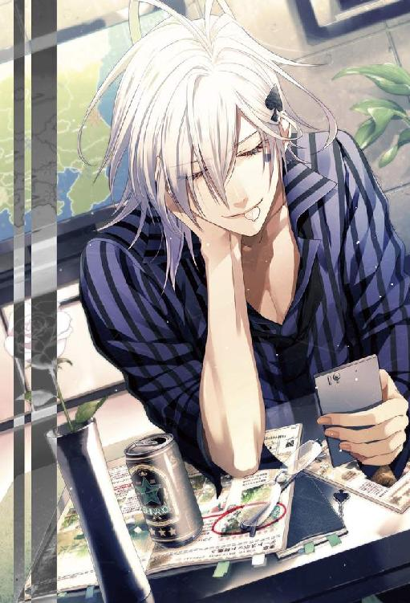
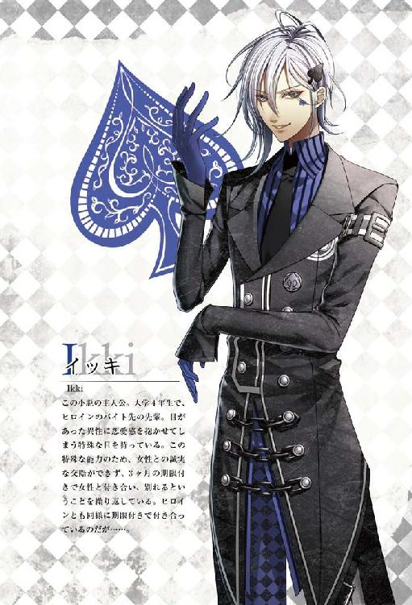
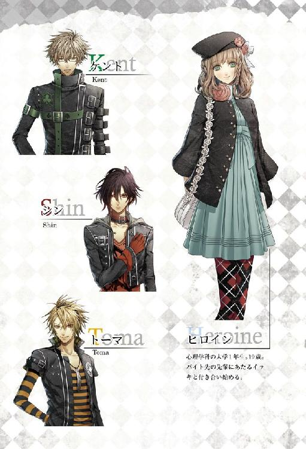
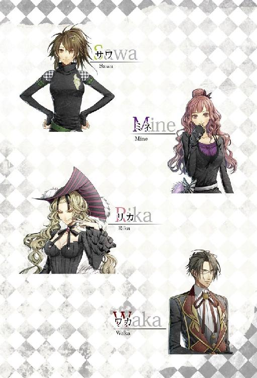
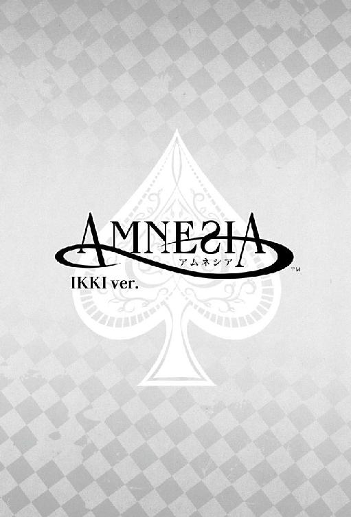
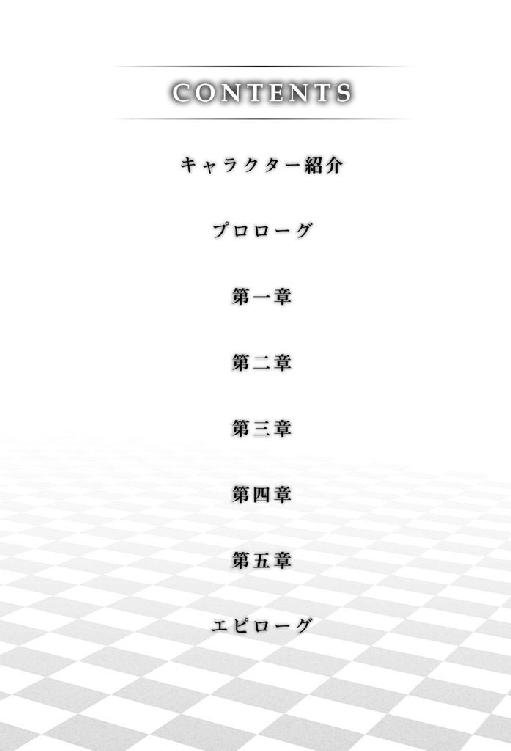
彼女の澄んだ瞳は、冷たいと言えるほどの眼差しで僕を睨み付けていた。
あまりに突然のことで、理由もわからないのに胸が痛んだ。どうしたのと聞こうとして、状況は元より、自分が何故バイト先の裏口にいるのかも思い出せないことに気が付いた。
彼女は裏口から出て来たばかりらしく、まだ片方の手をノブに掛けている。僕はそんな彼女を振り返る形で見つめていた。
状況を整理しようとしたが、ここに至るまでの記憶が酷く曖昧だった。
僕も彼女も私服なので、バイト後だということはかろうじてわかる。しかし、状況からわかることはそれくらいで、彼女の視線の意味するところはわからない。
不意に、彼女が僕を通り越して何かを見た。そしてすぐに気まずそうに目を伏せる。
前に向き直ってみて、理由がわかった。僕の正面には、見覚えのある女の子が立っていた。確か、名前はタエコちゃんだ。
随分昔に別れたはずの女の子が、どうしてここにいるのだろう。
僕と彼女がバイトをしている『冥土の羊』の裏口には、玄関程度の広さのスペースがある。芝生が植えられたそこは、生け垣に囲まれており外部からは見えない。店の正面に回るには人一人がやっと通れるほどの細道を通り抜けるしかなく、そこは関係者以外は滅多に立ち入らない場所だ。表を通らずにそのまま裏道に抜ける通路もあるため、従業員たちはもっぱらそちらの通路を利用していた。
その狭いスペースに、僕と彼女、タエコちゃんが相対している状況は明らかに不自然だった。
「......はい、登録しました。携帯、お返しします」
「......ああ」
タエコちゃんから僕の携帯電話を差し出され、反射的に受け取る。
どこかで、これと同じことをしたことがある気がした。
タエコちゃんはそんな違和感は感じていないらしく、しきりに「夢みたい」と声に出している。
──夢みたい？
その言葉でぼんやりと状況が見えてきた。僕は、夢を見ているんじゃないだろうか。
そう考えると納得のいくことがたくさんあった。一年近く前に別れたタエコちゃんにまた告白されていること、告白された場所は確かバイトからの帰り道だったこと、僕と付き合っているはずの彼女が酷く冷たい目で僕を見ていること......。僕の記憶が間違っていると考えるより、今いるこの世界が、夢という曖昧な世界だと考えた方が自然だ。夢だから記憶が交差しているのだ、と。
夢だとわかってしまうと妙に落ち着いた。
彼女の冷たい視線の訳も、過去の夢を見ているのだと思えば納得できる。それだけ、昔の彼女は僕を嫌っていたし軽蔑もしていた。
タエコちゃんは時折彼女の存在を気にしながらも、
「それじゃ、三ヶ月よろしくお願いします。あの、じゃあ私これで......！」
勢いよく頭を下げてから走り去った。
その背を見送ってからゆっくりと後ろを振り返ると、彼女は相変わらず僕にきつい視線を送っていた。夢の中の出来事だと頭では納得しているのに、この視線を前にすると胸が痛む。
夢の中の彼女は、何か言いたげにじっと僕を睨み付けている。風が、ふわりと彼女の柔らかな髪を揺らした。微かに彼女の使うシャンプーの香りがして、夢なのによくできていると感心する。
この後のお話はどうなるのだったかと思い出そうとしてやめた。
過去の出来事をそのまま繰り返すなら、僕はこの後彼女に「君も僕と付き合いたかった？」と軽口を叩くことになる。でも、これは夢だ。律儀に過去を繰り返す必要はない。今の僕が言いたいことを言ったって罰は当たらないだろう。だって僕の夢なんだから。
タエコちゃんに心の中でごめんと謝ってから、僕は彼女に微笑みかけた。
「......僕が誰を好きかなんて、何度も言ったでしょ？」
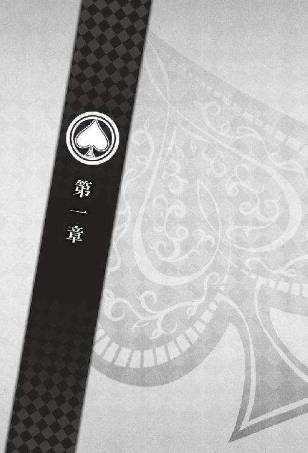
８月１日
ピピピ......、と高い電子音を鳴らす携帯電話に手を伸ばし、必要以上に強い力でアラームを止めた。
「......なんとなくわかってたけど、夢オチって......」
後少しで彼女との甘い時間を楽しめたかもしれないのに、タイミングが悪い。
気怠い体をベッドの上に起こすと、さらりと肌の上を肌触りのいいパジャマが滑った。
「でも、なんだってあんな昔の夢......あー原因はこれかな」
一人ごちながらベッドサイドのテーブルの上に視線をやると、バイト仲間たちと撮った写真が数枚置いたままになっていた。昨夜、アルバムを見せてほしいとＦＣ（ファンクラブ）の子に迫られたので探しておいたものだ。その写真はちょうど彼女がバイトを初めたばかりのもので、写真の中の彼女は笑顔が少し強ばっていた。
それにしてもリアルな夢だった。本当にすごい目で睨まれてた、と思い出すだけで笑ってしまいそうになる。
彼女はポーカーフェイスが苦手で、思ったことがすぐ顔に出る。そこが彼女のチャームポイントのひとつだし、僕にはできないことだから尚のこと魅力的に思える。それに、同じバイト先の先輩に当たる人間を、ああまではっきりと睨み付けられるというのもすごい。それが彼女の強さのような気がした。
そんな彼女が僕の悪い所を叱ってくれたおかげで、今の僕があると言っても過言ではない。
キッチンで水を一杯飲んでから、携帯でメールチェックをする。特に急いで対応しなければいけない用事はなし。
夢を見たせいか、無性に彼女の声が聞きたかった。
時刻は朝の一〇時。さすがに起きている時間だろう。今日は二人ともバイトはないから、一日彼女とゆっくり過ごしたい。彼女も同じ気持ちで僕からの誘いを待っていてくれたら嬉しいと思う。
甘い想いが胸を占めていくのを感じながら、彼女の携帯に電話をかけた。
携帯を耳に当てたまま、クローゼットを開ける。今日はどこに行こう？
まだ彼女の予定を聞いてもいないのにすっかりデートをする気でいることに気付き、思わず苦笑した。
それにしても、肌寒い。今日から八月だと言うのに、エアコンを入れるどころかストーブを出したくなる気候だ。今年の夏はどうしてしまったのだろうと思いつつ服を選び、随分とコールが長いことにようやく気が付いた。
いつもなら遅くとも五コールくらいで出てくれる彼女。今、一体何コール目だろう。
念のため携帯の画面を確認すると、ちゃんと彼女の名前が表示されていた。そんな確認をしている間も、コール音は留守番電話に切り替わるでもなく鳴り続けている。
──もしかして、彼女に何か......？
即座に頭を過ぎった考えに背筋が凍り付いた。
いや、まさか。でも、もしかしたら。
嫌な考えは打ち消そうとして打ち消せるものではなく、頭の中をぐるぐると回り始める。
とにかく彼女の安否を確認しないといけない。呼び出しはそのままに、着替えの手を速めたその時、ピッという電子音と共に電話が繋がった。どっと安堵の息をつく。
「あ、やっと出た。僕だけど」
一人で焦っていたことを表に出さないように、注意深く声を出した。
電話の向こうからは『はい』という小さな返事しか返って来なかったが、彼女本人の声で間違いはなさそうだ。
「今日、君もバイト休みだよね。出られる？ どっか行こうか」
耳と肩で携帯を挟み、片袖だけ通していたシャツにもう片方の手を通す。
彼女からの返事はない。聞こえて来るのは曖昧な声、というより吐息だけで、意識を集中していないと繋がっているのかすら判別できなかった。
今日はバイトが休みだからと朝寝坊を楽しんでいたのだろうか。そう思うくらい、彼女の反応は鈍い。いつもはしっかり者の彼女の別の一面が見られたようで、少しだけ、ほんの少しだけ心が弾んだ。
「どこ行きたい？ 今日ならゆっくりできるよ」
ここのところバイト詰めだったし、二人揃ってシフトに入らない日くらいデートらしいデートがしたい。バイト先で毎日顔を合わせているとはいえ、それとこれとは話が別だ。
「時間はたくさんあるから。ワガママ言ってくれていいよ」
と言っても、彼女は素直にワガママを言ってくれるタイプではない。
僕としてはもう少しくらいワガママな方がいいのだけれど、甘え下手な彼女を甘え上手にしてあげるのも楽しいかなと思っている。
電話の向こうからは、相変わらず戸惑うような空気が伝わってくるだけで返事がない。さすがに顔も見えない状況では、彼女が本当に困っているのか、遠慮しているのかまではわからない。
どう聞くべきか迷っていると、小さな声が聞こえた。
『どこか行こうってどこへ......ですか？』
どうやら本当に困っているようだった。
そんな彼女の困り顔を想像して、唇が勝手に笑みを形作る。
「べつに、君の行きたい所でいいよ。映画でも観に行く？ それとも、うちに来る？」
うちに来る、と聞いておきながら、彼女がこの家に来たらと思うだけで鼓動が跳ね上がった。彼女はまだこの家に来たことがない。来たら、どんな感想を持つのだろう。
「あ、僕の家に上がるんならそれなりの覚悟をしてもらうけどね」
もちろん、彼女の同意なしに何かをしようなど思っていない。でも、紳士だろうと男は男。彼女にもそこはわかっておいてもらわないといけない。
......まぁそれも冗談で、彼女もそれは理解してくれていると思っている。
しばらく沈黙が続いた。彼女の反応待ちだけに、無言の時間が長く感じられる。まさかとは思うが、先ほどの軽口を本気に取られてしまったのだろうか。
「......冗談だよ。黙り込まないでよ」
沈黙に耐えきれずに言うと、明らかに彼女はほっと息をついた。
彼女と付き合い始めて二ヶ月。大分信頼を得られてきたと思っていたけれど、こういうことを冗談で流す域にはまだ至らないのかもしれない。逆に言えば、男として意識してもらえているということにもなるから、それはそれで良い兆候だと思いたい。
「デートの行き先は本当にどこでもいいよ。単に会いたいだけだから」
ただ会いたいだけ。それが嘘偽りのない僕の本音。
会うだけで全てが満たされる、と言えば嘘になる。でも、彼女の顔が見られるだけで、僕は本当に幸せな気分になれた。だから、これが本物の恋だと信じたい。
電話の向こうからは、なかなか返事が返ってこなかった。
いつもなら『またすぐそういうことを言うんですね』と、ちょっとだけむくれたような返事が聞こえて来るはずだった。
──もしかして、呆れられてる？
そんなに長くはないはずの沈黙の間、室内の時計の音がやけに大きく聞こえた。
『......はい、行きます』
ようやくもらえた返事は戸惑いを多分に含んでいた。僕がすぐに返事を返さずにいると、『映画の方に』と言葉が足される。
「ん、よかった。黙り込んでるから、どきどきした」
彼女は今、返事をするまでに何を迷っていたのだろう。
女の子との付き合いで、こんなに相手の気持ちに不安になるのは初めての経験だ。
平静を装ってはいても、心中はあまり穏やかではなかった。彼女の気持ちを知りたいと思うのに、電話の向こうからは相変わらず吐息しか返ってこない。
「じゃ、三〇分くらいで行くから。支度しといて」
『はい』という小さな返事を聞いてから僕は電話を切った。電話を切った後も、しばらく画面を見つめていた。デートに誘って大げさに喜ばれたことはまだないが、こうも反応が薄いのも初めてだった。
自分が楽しみにしていただけに、あまり彼女が乗り気ではないのかと思うと落ち込みそうになる。
「......寝起きでぼうっとしてたのかな」
そう自分を納得させて、僕は外出用のジャケットに手を伸ばす。
「あ......」
よく見ると、慌てて着ようとしていたシャツは裏表逆だった。
支度を終え、サングラスをかけてから自宅を出る。まだ数ヶ月前からの習慣なのに、サングラスをかけることが当たり前になってきていた。
天気は悪くないようだったが、やはり肌寒い。シャツにジャケットを羽織ってもなお寒い八月だなんて聞いたことがない。夏が特別好きだというわけでもないが、このまま秋になってしまうのかと思うと少し寂しい気がした。
彼女の住むマンションまでは、徒歩で一五分程度かかる。僕と彼女はどちらも大学を基準に住まいを決めた一人暮らし組だ。通う大学が異なるので、本来なら出会うこともなかったかもしれない。そう思うと、彼女に引きあわせてくれたバイト先に感謝すらしたくなる思いがした。
僕がバイト先に『冥土の羊』を選んだのは美味しいコーヒー目当てだったが、そういえば彼女があそこでバイトをすることになった理由は聞いたことがない。すすんでメイドカフェで働くタイプとはあまり思えないだけに興味をそそられる。
今度聞いてみようと考えているうちに、まだ新しい白壁のマンションが見えてきた。彼女の住むマンションだ。
彼女が引っ越してきた当時新築だっただけあって、まだ外観も内観も新しい雰囲気を出している。新しさに惹かれて住む女性が多そうな物件だ。ただ、女性が住むにはセキュリティー面がやや脆弱な物件でもある。できれば、彼女には早いうちにオートロック付きのマンション──たとえば僕の住むマンションに引っ越してもらいたいと思っていた。
でも、引っ越しについては敢えて口を挟まないようにしている。その引っ越しがこれからの僕たちの未来に影響を及ぼすかもしれないからだ。
僕は将来、本気で彼女と一緒に暮らしたいと思っている。でも、彼女からはいまだ『好きだ』という言葉さえもらえていない。
「ふう......」
残された時間があと一ヶ月しかないことを思い出すと、自然と溜息が出た。
携帯で時間を確認すると、朝に電話をした時からそろそろ三〇分が経とうとしていた。女の子の支度は時間がかかるから、ちょうどいい頃合いだろうか。それでももう少しだけ待ってからにしようとマンションの前に回る。
ベランダが見える位置に立って何気なく彼女の部屋を見上げた。平日の午前中だけあって、彼女の部屋だけではなくどの部屋のベランダにも人影はない。タイミングよく彼女が顔を出してくれたらいいのに、と勝手なことを想像する。
もちろん、そんな都合のいいことは起こるはずもなく、諦めて視線をベランダから空へと動かした。空は晴れていて、涼しい風が僕の頬を撫でていく。通りにも人の気配はなく、マンションの周りに植えられた木の葉のこすれる音だけが聞こえていた。
ドラマや映画などでよく観る、好きな人の部屋を見上げる主人公の気持ちが今ならよくわかる。多少、周りから訝しげな視線を送られようと、この幸せな気持ちはそんな体裁を気にしなくさせた。
もう少しだけちゃんと見たくて、無意識のうちにサングラスを外した瞬間だった。
「きゃあ、イッキぃ！」
女の子特有の甘く高い声が静かだった小道を埋め尽くす。
さっきまで人の気配なんてどこにもなかったのに、気が付くとぐるりと周りを女の子に囲まれていた。一体、どこに隠れていたのだろう。
女の子の一人が、するりと腕を絡めてくる。拒絶するわけにもいかないからそのままにさせておいたが、苦笑いが漏れそうになった。
完全に僕の油断した結果だ。手袋をはめた手をきつく握り締め、己の失態を悔やんだがもう遅かった。
「......びっくりした。どこにいたの？」
「ふふ、そんなことどうでもいいじゃない」
「そうだよぉ。イッキがいるところには私たちどこでも行くもん」
「なるほどね......」
彼女の気を引く方に気を取られていてＦＣの子たち──今、僕を取り囲み頬を赤らめている女の子たちへの警戒をおろそかにし過ぎた。彼女とのデートを邪魔しないからと言って、見張っていない訳ではないらしい。
この子たちは、息を殺して監視するような真似をしてまで、僕の何を見たいというのだろう。たまに、一人ずつ尋ねてみたい衝動に駆られる。でも、尋ねたところで意味がないこともわかっていた。きっと、女の子たち自身も、何が理由かは理解していない。
──全ては、僕のこの目が原因なのだから。
「ねぇイッキ、今何してたの？」
「上見てたよね～」
女の子たちが僕の腕を取ったまま、はしゃいだ様子で彼女のマンションを見上げようとする。それを、目隠しするように手をあてがって遮った。
「きゃっ......い、イッキ？」
「なんでもないよ。それより、ここはちょっと通行の邪魔だからもうちょっとあっちに行こうか」
エスコートするように両手の女の子を誘導する。表だろうと裏だろうと、集団がたむろしていればある程度邪魔になることには違いないが、僕の密かな楽しみをこの子たちに知られたくはなかった。
「もう、イッキ～......びっくりしちゃった」
「ん、ごめんね」
目隠しをされた子が頬を赤らめて上目遣いに僕を見る。他の子たちの目が、一瞬だけ嫉妬に燃えてすぐにまた熱に浮かされたような瞳に戻っていった。すでに見慣れた光景ではあるが、この不自然さに女の子たちは気付かない。
僕に夢中な女の子たちは砂糖菓子みたいに甘くてふわふわしていて可愛い。彼女と知り合う前の僕はその砂糖菓子を端から味見をすることに躊躇がなく、それを当たり前だとも思っていた。でも、彼女と付き合うようになった今は、どの砂糖菓子も食べたいと思わなくなった。勝手な話だと、自分でも思う。
「今日は約束があるから、そろそろ行ってもいいかな」
時計を見るまでもなく、もう大分時間が過ぎていることはわかっていた。彼女が事情を知っているとはいえ、あまり待たせたくはない。何よりも、誰よりも大切にしたい女の子なのだから。
「いやあん、イッキぃ。そんなこと言わないでもうちょっといてよぉ」
「あんな地味なカノジョなんか放っといていいじゃないの。みんなで遊びに行こうよ」
女の子の言葉はたまに容赦がない。可愛い顔をして怖いことを言う。特に集団になるとその鋭さは加速する。甘えたような声を出した女の子の顔を思わず見つめた。ねぇ、君は一人の時でもそんなことを言う子だった？
「だから、今日はダメ。もう約束しちゃったから」
「そんなこと言わないでよぉ」
女の子たちはなかなか言うことを聞いてくれなかった。駄々をこねるように、殊更僕の腕をきつく引き寄せる。
「じゃあじゃあイッキ、今日じゃなかったらあたしたちとも遊んでくれる？」
一人の女の子がいいことを思い付いたとばかりに顔を輝かせた。
ＦＣの子たちが当たり前のように口にする『あたしたち』、という言葉が僕には不思議だった。これだけ僕に執着して見せるのに、この子たちは僕をみんなで平等に分け合おうとする。
正直なところ、みんな一緒でいいならその分時間も短縮できて僕は助かる。でも、それで満足する子たちの気持ちはわからなかった。
「もちろんいいよ。上手く時間が合ったらね」
「きゃああ、やったあ！」
この場を丸く収めるために言っただけの僕のひと言に、女の子たちはおおはしゃぎをする。無邪気とすら言える喜び方は可愛くて、少しだけ申し訳ない気持ちになった。
「じゃ、そろそろ行くから。彼女はいくらでも待ってくれるだろうけど、さすがにこのままじゃ日が暮れるよ」
「ホントに今度遊んでねぇ？」
「絶対よ？」
「ハイハイ、わかりました」
「もう。カノジョなんてさっさと別れちゃえばいいのに」
吐き捨てるように言われた言葉に、何とも言えない重いものが胸を覆う。そんなこと簡単に言わないで。そう言いそうになるが、何とか言葉を呑み込んだ。僕は、この子が僕のカノジョだった時、同じことを言われて傷ついた顔をしていたことを知っている。
名残惜しげに一人、二人と徐々に僕の傍を離れて行く。どこに行くのかは知らない。ようやく全員の姿が見えなくなったところで、ゆっくりとサングラスをかけ直した。
こうして女の子たちがいなくなってみると、閑静な住宅街には僕だけしかいないような錯覚に陥った。だが、きっとＦＣの子たちはこの街並みのどこかから、まだ僕を監視しているのだろう。サングラス越しに見る少しくすんだ世界が、妙にその雰囲気とマッチしていて少しだけ笑った。
「さてと......」
随分と時間を使ってしまった。エレベーターが来るのを待つ間も惜しくて、階段で彼女の部屋へと急ぐ。
ドア横のチャイムを鳴らすと、ほどなくして「はい」と返事が聞こえて来た。
「......僕だけど。ごめん、ちょっと出る時にもめてね。下にいるから、降りてきて」
言うだけ言って、すぐにまたマンションの外に出た。
そんなに長い時間でもないだろうし、部屋の前で待っても良かったが、部屋の前だとうっかり隣人に会ってしまう可能性がある。その隣人が女性だった場合、あまり好ましくない事態が起こるのは目に見えていた。彼女にこのマンションから越してもらいたいとはいえ、住んでいるうちに隣人トラブルに巻き込みたいわけではない。
それにＦＣの子たちから見えない場所にいて、彼女達に何か過激な行動に出られても困る。
マンション前に人通りはなかった。さすがにさっきの今でまた騒ぐ気はないようだ。ほっと胸を撫で下ろして、彼女を待つ。
待つのは嫌いじゃない。待ち時間の間、彼女のことを考えるのも楽しい。昨日よりまた少し好きになってもらうにはどうしたらいいだろう、と僕にしては消極的なことを考えていた時、エントランスから出てくる彼女の姿を見つけた。
「......あ、ここ」
軽く手を上げると、彼女はすぐに気付いて小走りにこちらにやって来た。その顔を見て、あれ、と思う。彼女は緊張したような表情をしていた。長く待たせたことを怒っているのだろうか。
「ずいぶん待たせて悪かったね。この辺なら大丈夫だろうと思ってうっかりサングラスを外したら騒ぎになってさ」
どんな理由であれ、待たせたことに変わりはない。すぐに謝罪を口にしたが、彼女の表情はどこかぼんやりしたままで動くことがなかった。
「ま、さすがにもう散ったよ。行こうか」
彼女もＦＣを気にしているのかと思って安心させるために言ってみたが、彼女は僕と目を合わせることもなく何もない空を見つめていた。
感情が顔に出やすい彼女だから、怒っているなら顔でわかる。今の彼女は黙り込んではいるものの、怒っているようには見えなかった。どちらかと言えば心ここにあらず、といった様子だ。
確かめるように数歩先を歩いてもみたが、彼女は動こうとしなかった。
「......行くよ？」
声をかけると、ようやく彼女の瞳に僕が映った。まさに映っただけのように、彼女の瞳には何の感情も見つけることができない。彼女らしくない様子に、自然と眉根が寄った。
「何？ もしかして怒ってるの？」
頭の中で、それはないだろうとわかってはいても、彼女の気持ちがわからないのだから聞くしかない。彼女がＦＣに妬いてくれるようなら一歩前進だと喜ぶくらいなのだが、そう楽観的な状況でもないようだ。
そもそも、妬いたのでないなら怒る理由が彼女にはないはずだ。待ち時間が長い、という理由だけで怒る女性じゃないことは僕がよく知っている。
そのまま見つめていると、
「彼女たちとは何でもないですよね？」
ぽつりと彼女が言った。その言葉に驚いて瞬きを繰り返す。
「は？ 今さら何言ってるの？ あの子たちなんてただの興味本位で寄ってきてるだけだよ。わかってるでしょ？」
付き合う前にも、付き合ってからも説明を繰り返してきたことだ。今になってそれを蒸し返すのは彼女らしくなかった。
怒っているとは到底思えなかったが、誤解をされているなら解いておきたい。
確認するように彼女の顔を覗き込むと、彼女は僕からすっと視線を外した。つられたように視線を動かしてみたが、そこには何もない。彼女はその何もない空間を熱心に見つめていた。
彼女の方から理由を説明してくれる様子はない。一抹の不安は残るが、このままここで押し問答をしていても仕方がない。彼女が怒っているなら機嫌を直してもらって、早くいい雰囲気になりたかった。理由は後で聞いても問題ないだろう。
道の左右の様子を窺ってから、僕はゆっくりと、注意深くサングラスを外した。またＦＣの子たちに集まられたら敵わない。
「......じゃあ、こうしようか。待たせたお詫びに、君のお願いを何でも聞くよ」
ガラス玉のような彼女の目が、僕を真っ直ぐ見つめ返した。
「何でもいいよ。欲しい物があれば、もちろんそれでもいいし......」
彼女の頬に触れるか触れないかで指を滑らせる。それでも、彼女は微動だにしなかった。いつもならこんな道ばたで触れようとすると照れるか怒るかするのに、今日は反応がない。
「......僕としては、もっと色っぽいお願いだと嬉しいんだけどね。まあ、君に限ってそんなことは言わないかな？」
彼女の感情を引きだそうと言った冗談にも、ほんの一瞬だけ目を見開いただけで終わった。僕の目が効いているからぼんやりしている、という様子はない。
「ねえ......どう？」
彼女は目を逸らさない。
曇りのない、彼女の瞳はとても綺麗だ。僕の方が仕掛けているはずなのに、逆にその瞳に吸い込まれそうで困る。
「もっと僕の目を見て......」
彼女にこの目が効けばいいのに、とたまに弱気になる。本当に望んではいないくせに、中々彼女が僕を好きになってくれないからとこの目に縋ろうとする自分が情けない。そもそも最初から彼女もこの目の虜になってしまっていたとしたら、今の僕たちの関係があったのかどうか正直よくわからない。
「僕に、何をしてほしい？ どんなお願いでも聞いてあげるよ」
お詫びじゃなくても、彼女のお願いなら何でも聞いてあげたい。そう思うのに、甘え下手な彼女はあまり僕にお願いをしてはくれない。
「............ねえ。これだけ近くで見つめても何とも思わないの......？」
至近距離で彼女を見つめ続けてみても、彼女の無表情が崩れることはなかった。
彼女は小さく首を傾げ、
「何がですか？」
ぽつりと呟いた。
「何がって......今さら『何が』も何もないでしょう......？」
あまりのスルーぶりに、思わず脱力しかける。僕のこの目のせいで一番迷惑を被っているはずの彼女が、今のやりとりでわからないはずがない。僕が、彼女にこの目が効かないのかどうかを試したことを。
彼女はまだ僕を見上げたままだ。何だか僕の方がやりきれなくて、さっとサングラスをかけ直した。
「ま、いいか。今さら君にこれが効くなんて期待してないし」
本当は少しだけ期待した。でも、彼女に効かないことを再確認してほっとする自分もいた。自分勝手な話だと我ながら思う。
──僕のこの目。
僕と目が合っただけで、女の子たちは僕に夢中になってしまう。
知らない人にこれだけ伝えると、大抵は何を血迷ったことをと馬鹿にされる。だが、本当のことだ。これが僕の体質であり............罰なのかもしれない。
一目惚れを信じる人になら少しはわかってもらえるだろう。僕の目は言うならば、ほぼ一〇〇パーセントの確率で一目惚れを起こさせる目だ。ほぼ、というのは彼女にだけはこの目が効いていないから。
どうして彼女だけが平気なのかはよくわからない。本人に聞いてもやはり理由はわからないらしい。
だから、と言ってしまうと誤解を受けそうだが、そういった意味でも彼女は僕の特別な人だ。
「行こうか。映画でいいよね」
今度はちゃんと、彼女は僕の後をついて来た。
時折、彼女がきちんと後をついて来ているか確認しながら駅の方へと歩く。人が多いから彼女の手を取って歩こうかとも思ったが、まだ僕にはその権利がない。それに、今の彼女は何故かそれを拒絶するような雰囲気があった。
映画館が見えて来たところで立ち止まると、彼女は何故か物珍しそうな顔で映画館の看板を見上げていた。まるで、初めて映画を観る子どものような目をしている。彼女と映画を観るのが初めてではないだけに、不思議な心地がした。
「ふう、今日は人が多いね。まあ、おかげで寒さも少し和らぐよ」
人にぶつかりそうになった彼女の腰をさりげなく引き寄せる。彼女は嫌がる風でもなく距離を縮めたままでいた。
普通なら、いい雰囲気になったのかなと思うところだった。しかし、今の彼女はやはりどこかおかしい。本当に何かあったんじゃないかと心配になるほどに。
「本当に何だろうね、この寒さ。どう考えたって八月の気温じゃないでしょ」
人混みを避けるように彼女を誘導してから、そっと彼女の腰から手を離した。今、距離を詰めるのはフェアじゃない気がする。
「体を壊す人も多いんだろうな......一体何が起こってるんだろ」
ね、と顔を覗き込むと、空虚な瞳とぶつかった。もしかして、彼女も具合が悪い人の一人なのだろうか。
「......っていうか、君は大丈夫？ さっきからずいぶんと静かだけど......なんか、いつもと雰囲気違うよね」
「大丈夫です」
「......ふうん。大丈夫だって言うなら行くけど......。具合悪くなったら言ってよ？」
寒さのせいか彼女の頬はほんのりピンク色になっていて、確かに具合が悪いようには見えなかった。ただ表情が乏しいことだけが気になる。
「あ、鞄貸して。それくらいはするよ」
手を差し出すと、彼女は素直にポシェットを僕に渡した。簡単に渡された鞄に違和感を覚える。自分から言い出しておいて「ねえ、本当に大丈夫？」と聞きそうになった。なぜなら今までの彼女は、あまりそういうことをさせたがらなかったからだ。
彼女の中で、昨日の今日で価値観が大きく揺らぐような何かがあったのだろうか。自分の知らないところで起こったことに胸騒ぎを感じた。
内心の動揺を押し隠したまま、チケットカウンターに向かう。
「何が観たい？」と聞いても、彼女は首を傾げるばかりで映画を選ぼうとはしなかった。
元々自己主張の激しい方ではないけれど、ここまで受動的なことも珍しい。自分の意見はきちんと持っている子なので、観たい映画がなければ僕が観たいものを聞くと思うのに......。
ひとまず、以前彼女が観たいと言っていた今流行の恋愛映画のチケットを買った。
そしてここでも違和感がひとつ。彼女は僕がお金を払うのを黙って見ていた。いつもなら割り勘にすると言って聞かない彼女が。
いくつもの違和感が積み重なっていく。違和感の正体を彼女に尋ねようとした時、場内への誘導を開始する案内が流れた。彼女の目がチケットと僕を交互に眺める。
「行こうか」
タイミングを逃した気がして、仕方なく場内へと足を向けた。
スクリーンにはすでに近日上映予定の映画の予告が流れていた。平日だからか観客は少なく、中央近くの席に座るのにも苦労はしなかった。
自分たちの席を見つけて腰を下ろす。運良く、両隣には誰もいないようだった。
「......ん、もう誰も見てないかな」
ようやくサングラスを外すことができた。昼間、外でならいいのだけど、こういった暗いところでサングラスをするのはやはり不便だった。
サングラスを外しても館内は薄暗かったけれど、やはりほっとする。
「......やっとちゃんと君の顔を見られた」
そっと手を重ねると、彼女は静かに僕を見上げた。そんなつもりはなかったのに、真っ直ぐに見つめられて自嘲的な笑いが漏れた。
「暗い場所にばっかり連れ込んで下心満々だと思われてやしないかいつも心配だよ。でもうっかりサングラス外すと人が集まってきて動けなくなるし、おかげで明るい場所では遊べないし」
映画館特有の、声を潜める空気の中で囁く。まだスクリーンはＣＭを流していて、彼女の頬に眩しいほどの光が当たっていた。
「何度も言うけど、これ下心じゃなくて、本当に人に顔見られたくないだけなんだよ？」
ちょっと顔を覗き込むようにして言うと、彼女は曖昧に頷いた。わかってもらえたのか少し不安の残る反応だ。ただ、今までの自分を思えば仕方のない反応とも言える。彼女だけは大切にしていきたいと本気で思っているこの気持ちは、あとどれくらいで彼女に届くだろうか。
「悪いね。僕の体質のせいでいつも不自由させて。でもこれだけ暗ければ誰も僕の目なんか見ないと思うから安心して映画見てて」
僕の言葉を疑っているのか、彼女は首を傾げた。少しだけ不安げな様子だ。その不安を消したくて、わざと悪戯な笑みを向ける。
「とんでもない体質だけど、それを言い訳にこうやって二人っきりになれるのは役得かな」
やっぱり下心があるんじゃないか、なんて反論を期待したのに返事どころか反応すら乏しい。映画館の中だから私語を気にしたのかと思ったが、そういう雰囲気でもない。
「君にこれが効いてくれるとなおいいんだけどね。ま、しょうがないか」
こっそりと溜息をつく。
「この映画、観たいって言ってたよね。空いててよかった」
僕の言葉に彼女はゆっくりと視線をスクリーンの方へと移動させた。そういえばここは映画館だった。そんな仕草にも見える。
スクリーンは長い長い予告を終え、ようやく本編へと入ろうとしていた。
映画が終わり外に出ると、すでに辺りは夕暮れ色に染まっているようだった。サングラスの隙間から見る空は狭く、はっきりとは断言できない。携帯で時間を確認すると、思った以上に遅い時間だった。
「......ああ、もうこんな時間か」
見終わった映画は重いテーマの恋愛もので、余韻がまだ残っていた。彼女もそうなのか、ぼんやりと夕日を見つめている。
「そろそろ帰らないと明日のバイトに響くね」
行こうか、と促そうとした手は、彼女の心許ない表情を見て勝手に止まった。
「どうしたの、不安そうな顔して。もっと一緒にいたい？」
僕は、もっと一緒にいたい。声に出さずに心の中で言う。
期待してはいなかったものの、やはり彼女は何の反応も示さない。ただ黙ってこちらを見上げただけだった。
「なんてね。君からそんな素直な言葉が聞けるなんて期待してないよ。ああ、そうだ。遅れたお詫びのお願い事は考えた？」
明らかに忘れていたらしく、彼女はほんの少しだけ目を見開いた。それから、急いで考え事をするように空を見つめる。考え事をする時、人は上を向くものだったかな、とどうでもいいことが頭を過ぎる。
しばらくそうしていると、何かを思い付いたように彼女の視線が僕に戻ってきた。
「ん？ 何でも言ってよ」
安請け合いではなく、何を言われても叶えてあげる気で聞くと、
「明日、私はバイトでしたか......？」
不安げな声で聞かれた。
「え？ そりゃあ今日休んだんだから明日は二人ともシフト入ってるけど。突然どうしたの？」
二人ともほぼ毎日バイトの予定が入っている。そのシフトは自分で希望して入れたものだ。忘れるようなことじゃないのになと首を捻る。
「今日の君は、本当にぼうっとしてるね。明日のバイト、大丈夫？」
ずっと気になっていたが、やはり具合が悪いのかもしれない。具合が悪くても無理をしてしまうタイプの子だし、僕に気を遣って言えなかったのだとしたら......。
もしそうなら、明日は他のバイトと代わってもらおうかと提案しようとすると、それより早く彼女が口を開いた。
「じゃあ、明日送ってくれませんか？」
「......？」
あまりに珍しい出来事に咄嗟に反応を返せない。彼女が、僕に甘えてる？
何でもいいからお願いしてと言っておいて、まさかこういうお願いで来るとは思わなかった。
これは、彼女の自分に対する好意が大きくなって来ていると、少しは期待していいのだろうか。
「まあ、そんなことなら喜んで」
安堵したように息をつく彼女。その様子を見て、今日ずっと様子がおかしかった理由をそこに見いだしそうになる。僕に甘えようと頑張っていたからずっと上の空だったという考えは、自分に都合が良すぎるだろうか。
そうだったらいいのに、と思うとつい顔がにやけそうになった。
「それじゃあ、明日の朝迎えに行くよ。着いたら電話するから、下に降りてきて」
にやけた顔を見られるのが恥ずかしくて、彼女に半分だけ背を向けた。
「......それにしても、今日の君は本当に変だな。家帰ったらゆっくりお休み。行こ。鞄貸して」
今度も彼女は素直に僕に鞄を渡した。
彼女を家まで送り届けてから、すっかり暗くなった夜道をゆっくりと歩いた。頭の中では、今日の彼女の様子がぐるぐると回っている。
今日の彼女はいつになく大人しかった。普段なら怒ることにも怒らなかったし、照れて顔を赤くすることもなかった。
彼女の方から僕との距離を縮めようと頑張った結果、緊張で顔が強ばっていた。──と、無理やり前向きに考えようとしてみたが、無理やりだけあってしっくり来ない。それは単に僕がネガティブだからではないと思う。彼女のあの感情を忘れてしまったような反応の乏しさからは、誰だってそんなポジティブには考えられないに違いない。
人が無表情になる時はどんな時だろう。悲しい時、辛い時、怒っている時......そのどの感情もが振り切れてしまった時、だろうか。
いくつかの可能性が脳裏に浮かぶ。
ひとつ目は、ＦＣからの嫌がらせが始まった可能性を考えた。彼女と付き合い始めてから二ヶ月が経ち、残り期限は一ヶ月。時期的にはややずれがあるが、あり得ない話じゃない。
もし嫌がらせが始まっていたとしても、彼女のことだから僕に助けを求めはしないだろう。しかし、彼女自身もＦＣに入っているし、嫌がらせをされているような兆候は見られない。嫌がらせに関しては特に注意してきたし、僕がまるで気付かないことはないと思いたい。
ＦＣからの嫌がらせの線を消すと、次に思い浮かぶのは僕が何かをして嫌われた可能性だ。しかし、昨日今日で急に嫌われるような覚えはない。それに彼女の場合、嫌いになったならきちんと言葉にしてくれるだろう。想像するだけで胸が痛いけれど。
嫌がらせでも、僕が嫌われたのでもないとしたら、残る可能性は彼女自身に何かがあった場合だろう。友達と喧嘩した、大学の課題が上手くいかない。いくつか想定できるが、表情を失うほどの深刻な出来事には思えない。ふと、実家のことかもしれないという考えが頭を過ぎる。
何かあったことは確かなのに、その何かがわからない。だから、可能性をいくつ並べたところで、そこに正解が見つかるはずもない。
思い耽っているうちに、自分のマンションのエントランスの明かりが見えて来る。
あまり考え過ぎても良くない。明日また様子を見ることに決めて、携帯を取りだした。
着信はなし。何通か届いていたメールの返信は後回しにして、彼女にメールを打ち始める。
『今日は遅れて悪かったね。時間のある時にまた行こう。おやすみ。』
件名は入れずに送信ボタンを押す。返事はすぐに来た。
『はい、ぜひまた』
短く簡潔なメッセージは素っ気ないが彼女らしい。ひとまず彼女に拒否されなかったことにほっとした。自分で思っているよりも、僕は臆病になっているのかもしれない。彼女に関することにだけは。
「......早くもっと好きになってよ」
ひとり言は、誰にも聞かれることなく冷たい風にさらわれて消えた。
８月２日
翌朝、約束どおり彼女を迎えにマンションへと向かった。
今日も秋のような気温でジャケットが手放せない。空は気持ちよく晴れているようだった。サングラス越しでない、純粋な青空を見ることができないのはやや残念だ。
さりげなく後ろを振り返ると、さっと何かが物陰に隠れる気配があった。熱心なことに、今日もＦＣの子たちは僕の行動を見守っているらしい。こんな調子ではとてもじゃないがサングラスは外せない。せっかくの青空なのにね、と誰に言うでもなく呟く。
彼女のマンションには予定よりも早く着いた。家を早めに出てしまったのでなるべくゆっくり歩いたつもりだったが、彼女に早く会いたい気持ちの方が勝ったのかもしれない。
もう起きてるといいけど、と思いながら彼女に電話をかける。ワンコール、ツーコール、スリーコールと単調なコール音が繰り返される。これは早めに出て来て正解だったようだ。
マンションの壁に軽く寄りかかって、気長に彼女が電話に出るのを待った。コール音が続いても昨日のように不安にはならない。彼女に何かあればすぐに駆け付けられる距離にいるのだから。
もう何コールかしたら、部屋のチャイムを鳴らしてみよう。そんな僕の考えを見透かしたように、コール音が止んだ。戸惑ったような空気感が受話器の向こうから伝わってきて、つい笑ってしまう。
「おはよう、かな？ もうマンションまで来てるんだけど出てこられる？」
たぶん、出てこられないだろうと予測しながら聞く。起きたばかりの彼女を想像してみるだけで、胸があたたかいもので満たされていく。他人から見れば、随分安上がりだと笑われそうなほど小さなことに幸せを感じる。残り一ヶ月しかない期限に焦っているわりには、自分もまだ余裕があるなと笑った。
『ごめんなさい、すぐ支度します』
言い訳をしないのも彼女の美徳のひとつだ。
「ハイハイ、まだ余裕はあるからゆっくりどうぞ。でも知らなかったな、君って、朝弱いタイプだったんだ」
今までバイトに遅刻したことのない彼女だったので、僕はてっきり、彼女は朝型だとばかり思っていた。
「いつもちゃんと一人で起きられてるの？ 今度抜き打ちでモーニングコールでもしようか？」
笑いながら提案する。『余計なお世話です』と即断られると思ったのに、返ってきたのはまさかの『はい。お願いします』という返事だった。
「......どうしたの、素直だな」
やっぱりまだ寝ぼけているのだろうか。寝起きの方が素直なら、それはそれでいい発見だ。
「わかった。じゃあ今度、油断してそうな時にかけるから。楽しみにしてて」
彼女の気が変わらないうちに──目が覚めないうちに？ 素早く約束をした。
「じゃあ、ゆっくりでいいからね。支度終わったら下に来て」
まだぼんやりしている様子の彼女に念を押してから電話を切る。
今起きたばかりとしたら、支度はどのくらいかかるだろう。大抵の女の子たちが三〇分くらいだから、彼女なら一五分くらいか。そう予測をつけて、通行人の邪魔にならないようエントランスから少しずれたところに立った。
彼女を待つ間、携帯でパソコンの方にメールが届いていないかをチェックして時間を潰すことにした。携帯の液晶画面はサングラスをかけたままだとやや見づらい。それでも、彼女を待つ間にサングラスを外そうとは思わなかった。外した途端、朝のデートが台無しになるのは目に見えていた。きっと、今もどこかでＦＣの子たちは僕を見ているに違いない。
簡単に返せそうなメールに返事を打っていると、「イッキさん」と控えめに声を掛けられた。
「あ、来てたんだ。おはよ」
振り返った先には、きちんと身なりを整えた彼女が立っている。寝坊したわりには寝癖がついているようなこともない。寝坊した時くらい隙を見せてくれてもいいのに、なんて考えをすぐに打ち消して彼女に微笑む。
「......えっと、起こしてごめんね。いつもならもう少し寝てる時間だった？」
身なりはちゃんとしていても、まだ完全に目が覚めたわけじゃないのか彼女の反応は鈍い。
「あ、それともまだ調子悪かった？ それなら遠慮なく言ってよ？」
無表情な目からは感情が読み取れない。曖昧に頷かれるだけでは無理をしているのかどうかまでは量れず、探るように様子を窺ってしまう。
「まあ、とりあえず荷物貸して。歩きながら話そう」
さっと彼女のポシェットを持って歩き出すと、彼女は従順に僕の後をついて来た。寝ぼけているのだろうかと思ったが、なんとなく違和感も感じていた。見た目や動作は間違いなく彼女なのに、言うなら彼女によく似た人形のようにも見えた。......そんなはずはないが......。
高層ビルが見える路地を彼女のペースに合わせて歩きながら、盗み見るようにして彼女の様子を見守る。心なしか顔色が優れない気がした。
「あ、朝ご飯食べてないでしょう。大丈夫？ 今日も夕方まで通しでシフト入ってるよね」
朝食を毎日しっかりとる人にとっては、朝食を抜くと力が出ないと聞いたことがある。もしかして彼女もその類いだろうか。
「僕なんかは普段からあんまり食べない方だから、一食くらい抜いても平気なんだけどね。君は？ いつもちゃんと食べてるの？」
もう二ヶ月も付き合っているというのに、こんな当たり前のようなことも僕はまだ知らない。彼女がいつも何時に起きて、何を食べて、また何時に寝るのか。そんな日常の話をするまで、二ヶ月では足りなかったのかもしれない。
彼女との付き合いは、純粋な興味から始まった。僕の目が効かない女の子は初めてだからと物珍しがっていたはずなのに、付き合ってすぐに彼女が他の子たちとは違うとわかった。気付いた時には手遅れで、彼女が僕を好きになるより前に、僕の方が彼女にはまっていた。
そこから、彼女にどうにかして好きになってもらいたくて話をたくさんしたつもりでも、こんな初歩的なところが抜け落ちている。僕もまだまだ詰めが甘い。というより、こんな日常のことまで知りたいと思ったのは彼女が初めてだ。
なかなか返事が返ってこないなと思っていると、彼女はどう答えようか迷った素振りを見せた後に「しっかりご飯食べてます」と答えた。毎朝のことのはずなのに、今の間はなんだったのだろう。少しだけ僕に見栄を張ったとか？
「そうなの？ すごいな。君って一人暮らしだよね」
もし見栄だったとしても、指摘をするつもりはない。それはそれで可愛いと思う。
「んー。いつか作ってもらえる日を期待しとこうかな」
いつか、本当に彼女にご飯を作ってもらえたら見栄を張っていたのかどうかはその時にわかる。そして料理が苦手だったら一緒に作ればいい。それはそれできっと楽しいイベントになるに違いない。
昨日から、お世辞にも会話が盛り上がっているとは言えない。僕が会話を振っても、彼女はぽつぽつと相づちを返す程度だった。
彼女は決して僕を抜かないように、ほんの半歩ほど後ろをついて歩く。そのせいで、声を掛ける度に少しだけ振り返る格好になる。
「......っと。電車が来たみたい」
渡ろうとした踏切が、目の前でゆっくりと下がっていく。カンカンカンと鳴る音が朝の風景にどこか似合わない気がした。
「いつもなら突っ切っちゃうとこだけど、今日はエスコートだからね。やめとこうかな」
踏切の一歩手前で立ち止まると、彼女は僕に軽くぶつかって慌てて立ち止まった。彼女に押されたせいもあって、二人とも随分と踏み切りに近い。
「......危ないから、少し下がって」
彼女は声を出さずに頷いて、ほぼ毎日見ているはずの電車が来る方角をじっと見つめていた。
カフェ『冥土の羊』の事務所に入ると、シンの後ろ姿が見えた。シンはここのバイトでの後輩に当たる。まだ少し早いが、すでにキッチンの制服に着替えていた。
「おはようございます」
僕が声をかけると、シンもようやく気付いたように振り返る。
「あ、おはようございます。先輩、今日は彼女と同伴ですか。珍しいですね」
シンはキッチン担当で滅多に客前に顔を出さない。それなのに、その制服は非常に意匠を凝らしたもので、着るものを選ぶデザインをしている。少し癖のある柔らかな黒髪に整った顔立ち、バランスの取れたスタイルのせいか、シンはその冥土の羊の制服がよく似合っていた。まるで愛想というものがないのがたまに傷だが。
「そう、珍しいんだ。彼女のご要望でね」
ちら、と後ろの彼女の様子を窺うと、じっとシンの方を見つめているようだった。
「ふうん、それほんとに珍しいですね」
シンは悪びれもせず、僕の後ろにいる彼女に不躾な視線を投げる。ここでのバイト歴は彼女よりシンの方が長い。そのせいなのか元々の性格なのかは何とも言えないが、シンの彼女に対する物言いは、かなり上から目線なことが多い。
「先輩、それで機嫌いいんですか」
にこりとも笑わずにシンが言う。
「ん？ 僕、機嫌がいいように見える？」
わざとらしく首を傾げると、やはり笑みひとつない真顔で頷かれた。
「ええまあ。顔が笑ってます」
「へえ、そうか。自分で思ってるより喜んでるのかな」
「不思議そうな顔して、堂々とのろけないでくれますか」
シンが嫌そうに顔を顰めるので、
「のろけてないよ。正直な感想だよ」
僕は反対に愛想の良い笑顔を向けた。とりあえずでも笑っていた方が都合がよくなることは多々あるのに、シンはどうしてこう損をするほど正直者なのだろう。
「何言ってるんですか。完全にニヤけてます」
「先輩をいじめるなよ、シン。じゃ、僕も着替えてくるから」
「朝礼まであんまり時間ありませんから、急いでください」
シンの言葉に促されて事務所の掛け時計を見上げると、確かにこれ以上立ち話をしている時間はなかった。
話を切り上げ、シンの肩に軽く手を置いてから更衣室へと向かう。ずっと僕らのやりとりを凝視していた彼女には「また後でね」と声をかけたが、彼女は聞こえていないかのようにぼんやりしていた。
大丈夫かな、と心配が頭を過ぎった。
十分もかからずに着替えを終えて事務所に戻る。
僕が着るフロアの制服はキッチンと対になるデザインながら、シャツにベストとキッチンよりも着替えが楽な仕様になっている。燕尾服ほどではないがこのカッチリしたスタイルがお客さんたちには大人気だ。
事務所にはシンの姿しかなかった。シンは一人で何か薄い本をテーブルに広げていた。ひょいと手元を覗き込むと、問題集のようだった。そういえば、シンは今年大学受験を控えている受験生だ。あまりにしっかりしているのでたまに年下なことさえ忘れそうになる。
「何、勉強？」
「......一応、受験生ですから」
「偉いね。バイトに来てまで勉強なんて」
「普通に偉い受験生は、バイトせずに勉強してますよ」
問題集からちらりとも目を上げずにシンが言う。もちろん問題を解く手も止まらない。
「そう？」
自分が受験生の頃のことなんてもう忘れてしまった。言外にその空気が滲み出ていたのか、シンがちらりと視線を上げてこれみよがしに溜息をついた。
これ以上会話をするのも勉強の邪魔になるだろう。ワカさんはまだかなと時計を確認しようとした時、制服に着替えた彼女が顔を出した。
「あ、着替え終わった？ そろそろ朝礼始まるよ」
彼女が身にまとっている制服は和装メイド服とでも言えばいいのか、パフスリーブに改造された着物の上に、細かなフリルが愛らしいエプロンをしたスタイルだ。メイドらしくヘッドドレス付きの凝った制服は男性客にも女性客にも人気が高い。
もう見慣れた姿ではあるが、思わず抱き締めたくなるほど、この制服は彼女によく似合っている。
「ん、何？」
僕が頭の中で甘い時間を楽しんでいる間、彼女は淡々と僕の姿を見つめていた。
「僕にみとれてるの？」
冗談のつもりで聞いたのだが、彼女はすっと目を逸らした。
「それなら嬉しいんだけど、でも今は店長来たみたいだから整列して」
もう少しからかいたい気もしたけれど、残念ながら時間切れのようだ。視界の端に店長であるワカさんが事務所に入ってくるところが見えた。シンはというと、問題集などとっくに片付けて朝礼のためにすでに整列している。さすがに抜かりがない。
僕もシンの横にさっと体を並べて整列をした。すぐに彼女もその列に加わるものとばかり思っていたが、何故か彼女は整列している僕らをきょとんと見つめるだけで並ぼうとはしなかった。
早くしないと怒られるよ、と言おうとした矢先に、
「そこ、何をやっている！」
ワカさんの怒号が飛んだ。初めての人なら大抵は竦み上がるほど迫力のある怒鳴り声だ。慣れてはいても、直接怒鳴られればそれなりに迫力がある。彼女も例外ではなかったはずなのに、今は怯える様子もなくむしろ不思議そうにワカさんを見つめていた。
ワカさんは元軍人だという噂があるほど、規律に厳しい人だ。従業員に厳しい以上に自分に厳しいため、誰も文句は言わない。ストイックな見た目も手伝って孤高の人のような印象を与えがちだが、その実、面倒見は良く、懐に入れた人間には情に厚い。と、僕は思っている。
理不尽な叱責をすることはない人だが、できれば怒られることなく過ごしたいと思うのが従業員全員の総意だ。
「私が入ってくる前には整列していろと言っているだろう。貴様、たるんでいるぞ」
ワカさんに間近で睨まれ叱責されると、ようやく彼女は合点がいったように僕の横に並んだ。その横顔からは反省の色は窺えない。怒られて平然としている様子は普段の彼女らしくなかった。
「いいか、諸君。客商売では一瞬の油断が客の不快感を招くことを忘れるな」
整列した僕らの前をゆっくりと大股で歩きながら、ワカさんが説く。
「裏では好きにくつろげ。だが、表に出たらそこはもう戦場だ。戦場では常に客の動向に気を払え！ この朝礼はその予行演習だと思え！」
ワカさんのこの厳しい教えについて来られないバイトは多い。そのせいばかりではないだろうが、ここのバイトは少人数の精鋭ともいえる古株だけで回していた。
「客は神ではない！ 敵だ！ 容赦はするな、必ず仕留めろ！ 一撃でこの店の虜にするのだ！ わかったら、全員復唱！」
狭い事務所にワカさんの低い声が響く。
「客は敵だ！」
「客は敵だ！」
ワカさんの号令に合わせ、僕とシンの声が重なって復唱する。
このかけ声も、初めて聞いた時は驚いたものだ。でも今はもう慣れっこになってしまった。お客様は神様だなどと言われるより、よほど実感の湧く言葉でもある。
「ん？」
ワカさんが彼女の前でピタリと足を止めた。やはりばれてしまったらしい。
隣にいる僕でさえ気付いたのだから、前を歩くワカさんが気付かないはずがない。彼女は復唱をしていなかった。
「貴様、声が出ていないぞ！」
「......」
ワカさんの大きな声にもどうしたらいいのか分からない様子で、彼女は黙ってワカさんを見上げた。ワカさんの眼鏡の奥にある切れ長の瞳が怪訝そうに細められる。
「どうした、言えないのか！」
「......客は、敵です！」
ワカさんに促され、ようやく彼女が言う。そういえば、彼女の大きな声を聞いたのは久しぶりな気がした。
「貴様、今日は気合が入っていないようだな。まもなく開店だ。今日一番の男性客は貴様に任せる。必ず仕留めて見せろよ」
彼女はわかっているのかいないのか、ただその視線を静かに受け止めていた。隣で見ていた僕の方が緊張してしまった。
「では、解散！」
ワカさんの号令と同時に店は開店する。彼女に声をかけたかったが、ワカさんが看板を表に出すのとほぼ同時に来店した女性客の相手でタイミングを逸してしまった。
基本、女性客は僕が、男性客は彼女が接客する。今日のシフトではその方が効率、勝率共に良い。それはわかっていたが、彼女が相変わらずぼんやりしているものだから心配でつい目で追ってしまっていた。
開店直後だからか、まだ店内はそれほど混んでいない。今いるお客さんも女性のみだ。今日はこのまま男性客が来ませんように、という僕の願いは、次に鳴ったドアベルにあっさりと破られた。店に入って来たのは、男性の三人組だった。
すぐに彼女が接客に回るのが見えた。
「ご主人様、お帰りなさいませ」
丁寧にお辞儀をし、席に案内する彼女にひとまず安堵の息を漏らす。慣れたはずのお辞儀が何故かたどたどしい様子が気になり、そのまま見守ることにした。
「なあ、ご主人様だって」
「んだよ、つづくなよ」
「思ったよりメイドさんのレベル高いじゃん。当たりじゃない、この店」
彼女に席を案内されながら、男性客たちがひそひそと話す声が耳に届く。
「あ、すみません。注文いいですか？」
メニューを渡されるのとほぼ同時に、男性客の一人が手を上げた。店の外ですでにメニューを決めてから入ったのだろう。
「えーっと......」
「俺この『メイドの手作りパフェ』ってのとー......んー」
「あ、俺もそれ」
「僕はこっちの『執事特製ティーセット』で」
「あ、セットあるんだ。じゃあ俺『メイドのコーヒーセット』アイスで」
「あー俺も」
「ああ、僕のセットは『王宮のミルフィーユ』で」
店内のお冷やを補充して回りながら、何気なく彼らの注文内容を耳にする。バイトに入りたての子だと混乱しそうな注文の仕方だと思ったが、彼女くらい慣れていれば問題がないはずだ。
それでも、ここのところ調子が悪そうだったので気になってやりとりを見守っていると、
「......もう一度お願いします」
困った様子を顔に出さないまま、彼女は静かに言った。表情が薄い分、なんだか儚げに見えないこともない。案の定、男性客たちは自分たちが悪いことをしたかのように頭を掻いた。
「あーすみません、混乱しちゃって」
強い視線を感じて後ろを振り返ると、ワカさんが射貫くほどの勢いで彼女を睨み付けていた。案外、僕と同じように心配で見ているだけなのかもしれないが、眼力がすごいから睨み殺そうとしているようにしか見えない。
男性客が繰り返した注文を、今度はちゃんと理解したらしく彼女が丁寧に頭を下げるのが見えた。普通よりも多く会話ができたからかは知らないが、男性客たちは不機嫌になるどころかむしろ楽しそうだった。
注文を通すためにキッチンに向かおうとした彼女の後を、さりげなく追う。
「大丈夫だった？ 何だか危なっかしかったけど。ワカさんがレジのとこで睨んでたよ」
彼女は相変わらずきょとんとした表情で、店内をくるりと見回した。すでにワカさんが接客に回っていて良かった。先ほどの調子でワカさんに正面から睨まれたら、いくら今の彼女でもきっと凍り付いてしまったに違いない。
「飲み物、僕がやろうか。注文復唱お願い」
「コーヒー二つ、紅茶ひとつです」
「了解。作るからお客様に持って行ってね」
彼女はこくりと頷いた。その動作は不自然なまでにぎこちなく、そのまま放っておいたら、壊れたロボットのように停止してしまいそうに見えた。
その心配を裏付けるように、彼女はいつまで経ってもキッチンに注文を通す素振りを見せない。過保護かと思いながらもキッチンに声をかけた。
「じゃ、飲み物は僕がやるから、シン、ミルフィーユお願いできる？」
「はい」
バックヤードの会話だけで、シンはすでに準備を始めていた。相変わらずの手際の良さに感心する。
「じゃあパフェ二つお願いします」
シンが当たり前のように彼女に言う。しかし言われた当の彼女は、返事はおろか頷きもしないで何もない空間を見つめていた。
「............」
彼女はいつまで経っても動こうとせず、僕とシン、二人分の沈黙が落ちる。
「......あのさ、大丈夫？」と声をかけても、彼女は何のことかわからないように首を傾げる。
「パフェの担当は君だよ？」
担当だと伝えた途端、彼女は若干慌てたように視線を周囲に動かし始めた。何かを探しているように見えるその姿が、彼女がバイトに来たばかりの頃を思い出させた。
「......何、きょろきょろしてるの」
困っているのに助けを求めようとしないところまで、昔の彼女のようだ。
彼女がバイトに来た当初、僕は徹底的に嫌われていたと思う。その証拠に、彼女はどんなに窮地に陥っても、僕にだけは頼ろうとしなかった。
「どうしたの。一日休んだら記憶が飛んじゃった？」
彼女は気まずそうにパッと目を逸らすと、顔を伏せた。演技をしているようには見えないし、する必要もない。とすると、本当にパフェの作り方を忘れてしまったのだろうか。
「何だか入ってきたばっかりの頃を思い出すな」
彼女の後ろに立ち、少し高い位置にあるグラスに手を伸ばす。
「ほら、グラス出してフレーク入れて。その上から生クリームね」
グラスの中にフレークを入れてから、彼女の手に生クリームの入ったホイップ袋を握らせる。彼女が自発的に動こうとしないので、ホイップ袋を握る彼女の手を上から握って動かした。
「後は、果物を並べてアイスを乗せたら、チョコを挿す」
説明どおり、手を取り誘導すると彼女は素直に手を動かす。時折、僕を見上げては合っているかを確認するかのような顔をした。本当に記憶をなくしてしまったみたいだ。
「で、完成」
ほとんど僕が作ったようなものだったが、出来上がったパフェは客前に出しても申し分ない出来だ。
「どうしたの？ 忘れちゃった？」
後ろから覗き込むようにして聞くと、半分首を傾げながら頷かれた。これでは肯定だか否定だかわからない。
昔、彼女がバイトを始めた頃にもこうしてパフェの作り方を教えた。あの時は、後ろから手を取って教えると恥ずかしそうに頬を赤く染めていた。今もほんのりと頬が赤いけれど、照れているという感じではない。
彼女が見せる微妙な変化が僕の心をざわめかせる。彼女に何かあったのだろうか？
初めてパフェ作りを教えた時、僕はうっかり彼女の目を見て教えてしまった。「覚えた？」と僕が聞いても彼女は無反応で、ようやくそれで僕は僕の目が彼女に効いてしまっていることに気が付いた。
「......あーそっか、ごめん。サングラスしてないからね。そっち向かないように気をつけるよ」
後ろに回ると、彼女はすぐに我を取り戻したようだった。悔しそうに下唇を噛み締めたのが印象的だった。
「目さえ見なければ効かないから、このまま続けようか。ぼうっとされると僕も教えにくいからね」
同じバイトをしていく以上、常にぼうっとされていては仕事にならない。彼女に気を遣ったというよりは、お互いのために言ったつもりだったのだが、予想に反して彼女はきっと僕を睨んだ。
「......効いてなんていません」
驚いた。目が合ったのはほんの一瞬だったが、確かに彼女は僕を睨み付けた。
「......え、効いてない？ いや効いてるでしょ。現に今、僕のことぼうっと見つめてたじゃない」
効いてしまったからこそ、彼女も悔しそうな顔をしていたはずだ。
それを指摘するのは簡単だったが、敢えて問い詰めることはしなかった。女の子は優しく扱うものだから。
「......見つめてません。自惚れないでください」
彼女は僕からわずかに目を逸らして言う。たぶん、目を合わせるほどの自信はないのだろう。それでも、こんなにはっきりと女の子から拒絶されたのが初めての僕は、強く心を動かされた。
僕の目が効かないと言う女の子。そんな子がいるなんて思ってもみなかった。
「へえ、ほんとに？ 僕の目を見てそう言える？」
「っ......」
意地悪をするつもりではなくて、純粋な興味で彼女の目を覗き込んだ。彼女は声を失ったように言葉を呑み、頬を上気させた。
「ほら、何も言えなくなるじゃない。もう一回言ってごらんよ、『自惚れないでください』って」
「......あ......っ......」
「......ね、言えないでしょ？」
「............っ」
次に来る言葉を予想しながら、僕は彼女の反応を待った。
「う......自惚れないでください......！」
「え......」
一瞬、何を言われたのかわからなかった。
「嘘でしょ......どうして......どうやって......!? いま、どうやって拒んだの......!?」
彼女は僕から目を離すことなく、僕を拒絶した。頬は赤く肩を震わせてはいるけれど、その表情は僕に恋する女の子のものとは明らかに違っていた。
僕の目が効かない子がいるなんて思いもしなかっただけに、彼女の存在は新鮮だった。
それから、僕は彼女に強く興味を引かれるようになった。
コトン、という僅かな音で我に返った。音がした方を見ると、彼女が手にしていたチョコペンが床に落ちた音のようだった。
彼女はそれが落ちたことに気付いていない様子で、ただ僕を見上げている。
「ん？ どうかした？」
そう聞いた瞬間、彼女の体がぐらりと揺れた。
「え!?」
慌てて肩を抱こうとすると、彼女は僕の手を避けるようにして床に膝をついた。目眩を起こしているのか、焦点がぶれている。
「は？ あんた、どうした？ 何倒れてんだよ!?」
物音に気付いてキッチンから顔を出したシンが、床に座り込んだ彼女を見て慌てた声を上げた。そのまま、バックヤードまで出てくる。
「大丈夫？ 立てる......？」
へたり込んだままの彼女の顔を覗き込む。真っ青だ。
「手貸して。どうしたの？ 立ちくらみ？」
手を差し出すと、彼女はじっと僕の手を凝視した後に静かに首を横に振った。
「あの......一人で立てます」
「え......？」
彼女らしい勝ち気な返答に一瞬呆気に取られた。こんな時まで一人で頑張ろうとしなくていいのに。
「......何？ 照れてるの？ 助け起こすくらいさせてよ」
ちょっと冗談のように言うと、彼女の口元がほんの少しだけ綻んだ気がした。甘え下手な彼女に頼ってもらうには、僕の方が上手く立ち回らなければいけない。そんなこととっくにわかっていたはずなのに、咄嗟に頭が回らなくて、心の中でだけ彼女に謝った。
「ほら、早く手に掴まらないと抱き上げるよ？」
半ば本気で半歩前に出ると、
「先輩」
シンが溜息交じりに低く言う。
「公然といちゃつかないでくれますか」
「ああ、失礼。そんなつもりなかったんだけどね」
何もふざけていたわけじゃない。真面目に彼女を抱き起こそうと思っていただけなのだが、シンはそんな僕を冷たい目で一瞥してから、その眉根の寄った表情のまま彼女に視線を移した。
「なあ。本当に具合悪いんだったら帰れよ。危ないし邪魔になるだろ」
「シン。言い方がきついよ」
シンが彼女を心配して言っているのはわかっている。これが彼のいつもの口調だし悪気も全くないのは彼女だって理解してるだろうけれど、それでももう少し言いようがあるだろう。
「先輩の言い方が遠回し過ぎるんですよ」
「女の子はデリケートに扱うものなんだよ。いつも言ってるでしょう」
「はい、いつも言われてますね」
従う気はないですけど、とシンは言外に示す。
僕がフェミニスト過ぎるのか、シンがストイック過ぎるのか。たぶん、どちらも過ぎるのだろう。
「でも、先輩の場合デリケートに扱ってるんじゃなくて誰かれ構わず口説いてるんでしょ」
「誰でも口説いてる？ 僕が？」
そんな気は全くなかったので驚いた。シンは何を今さらと僕をきつい目で見つめている。その視線でようやく気付く。
僕に口説く気がなくても、この目が勝手に女性を口説いている。それを指摘されてしまえばもう否定はできなかった。
「あー......まあ、それはあるかな。とりあえず、女の子には好かれておきたいしね」
嫌われて何か問題を起こされるよりは、上手く好かれておきたい。打算的な考えの結果なのだが、言葉だけを捉えられるといつも勘違いをされた。
「......言いますか、彼女の前でそれを」
案の定、シンは呆れたような顔をした。そうじゃない。そう言いたくても、その誤解を解く方法を僕は知らない。
「彼女は僕のことをよくわかってくれてるし。別に問題ないよ」
この目のことも、ＦＣの子たちのことも、彼女には全て包み隠さず話してきた。わかってくれるよう努力はしてきたつもりだし、理解してくれているとも思っている。
言葉で言うほどの自信はなくとも、そう信じたい。
「オレが彼女だったら激怒します」
たぶん、シンはとても真面目なのだろう。それはわかるけれど、口を突いて出たのは呆れたような声で、「そうかなあ。シン、彼女いないでしょう」
「......っ......！」
結果的にシンの神経を逆なですることになってしまった。話が脱線している間も、彼女の様子が気になって仕方がなかった。
「......いや、今はそういう話をしてる時じゃなくてね」
盛大に威嚇してくるシンを片手で制して、彼女の方に向き直る。
彼女はまだ床にへたり込んでいた。今度は手を差し出すのではなく、僕の方から彼女の手を掴んでゆっくりと立ち上がらせる。目眩は治まったのか、ふらつくことはなかった。
「......言い方はともかくシンの言ってることは正しいよ。本当に具合が悪いなら、遠慮しないで早退しなよ？ 後は僕がフォローしておくから」
「先輩。何ですかそれ。全部自分の手柄にするつもりですか」
すかさず、シンの鋭い突っ込みが入る。
「こいつが早退するなら、普通にオレも手伝いますけど」
「いや、わかってるよ。言葉の綾だって」
一人バイトが早退すれば、他のバイト全員にその負担が降りかかる。それは彼女にもよくわかっていることだろう。それなのに敢えて口にするシンに、もしかして彼女に気があるのではないかと邪推をしてしまう。僕も思ったより心が狭い。
「キッチン、騒がしいぞ！ 何かトラブルか」
表からワカさんの声が飛んだ。
「あ、店長。すいません、問題ないです」
すぐにシンが落ち着いた声で答える。シンのこういう冷静な対応は本当に感心する。
「キッチンでの作業は迅速かつ静粛に行え。いいな」
「はい！」
シンは表に向かっていい返事を返すと、気持ちを切り替えたように僕たちに背を向けた。
「......じゃ、オレはミルフィーユやります。先輩、後よろしくお願いします」
今までのやりとりがなかったかのような素っ気なさで言うと、シンはそのままキッチンに消えた。もしかして、シンも少し熱くなり過ぎたことが気まずかったりするのだろうか。
ふう、と一息つくと、彼女の視線を頬に感じた。
「......ワカさんの血管が切れる前に注文運ぼうか」
こくり、と彼女は素直に頷いた。無理をしているようにも見えないが、元気いっぱいのようにも見えない。
「......でも、ほんとに大丈夫？ そういえば昨日もぼうっとしてたよね」
視線の高さを合わせて、シンやワカさんには聞こえないように「早退する？」と小声で聞くと、今度ははっきりと首を横に振る。
「早退しないなら、今日は僕の手伝いだけしてて。無理だけはやめてね」
今日一番の男性客はすでに落としたのだから、手伝いに回ってもそこまでは怒られないだろう。ワカさんだって鬼じゃない。具合が悪いのに無理を強いるようなことはしない人だ。
「じゃあ、僕は飲み物先に出すから。タイミングを見計らって、そのパフェ......」
さっき僕が教えながら作ったパフェは、時間経過を自らの姿をもって表していた。
「......パフェ、新しく作り直したら運んでもらえる？」
本当にワカさんの血管が切れないといいけれど。気持ちを切り替えて、手早く飲み物の準備に取りかかった。
「......さて。これでよし、と。店長、先上がります」
バックヤードをきちんと整理整頓し終えてから、ワカさんに声をかける。
「ああ、ご苦労だった。諸君はもう上がっていいぞ」
店長であるワカさんは、僕たちと同じく朝から働いているがまだ上がりではない。ロングシフトになると休憩も入るけれど、一日中あの気迫を保つのは相当大変だろうと密かに思っている。
もう一度やり残しがないか確認してから、更衣室へと下がった。
いくらここでのバイトが気に入ってはいても、やはり疲れるものは疲れる。リボンを緩めるとほっとした。
私服に着替えて事務所に入ると、何をするでもなく、彼女がぼんやりと佇んでいた。
「あれ？ まだ制服着てるの？ 着替えといで。一緒に帰ろう」
もしかしてワカさんにお説教でもされたのだろうか。ほんの少しだけ、彼女の表情が落ち込んでいるように見えた。顔を覗き込んでも、反応は薄い。僕がサングラスを掛けているせいだとも思えなかった。
「いつもどおり、角曲がったところで待ってて。じゃあね」
一応念を押すと、彼女は一瞬戸惑った様子を見せてから小さく頷いた。
やはり具合が本調子じゃないのかもしれない。今日はＦＣの子たちの相手は早めに切り上げようと心に決めて、店の外に出た。
今日は裏口で待ち伏せをするような子はいなかった。まだ彼女がいる期間内だし、以前に抜け駆けをした子はＦＣのメンバーからきついお灸を据えられていたようだったから当たり前と言えば当たり前だ。
表に回ると、たむろしていた女の子のうち数人が駆け寄って来た。
「イッキー、お疲れ様ー！」
「バイト、疲れたー？」
女の子たちの甘い声に、にこりと笑顔を浮かべる。それだけで、彼女たちは嬉しそうにまた黄色い声を上げた。
「バイトはいつもどおりだよ。みんなこそ、ずっと待ってて疲れてない？」
交代で店に入っていた子もいるようだったが、それでも僕がバイトをしている時間中ずっと待っているのは疲れるはずだ。僕の目のせいとはいえ、この子たちも大変だなと僅かに同情する。
「疲れなんかイッキの顔みたら消えちゃったよお」
女の子の一人が、甘えるように僕の腕を絡め取る。途端に周りの子たちの目に嫉妬の炎が浮かび上がった。
ＦＣ内で揉め事が起こることはそうないとは思うが、僕としても誰か一人を贔屓する気はない。僕の方から自発的に構う気がないのはみんなもわかっていて、だから女の子たちの方から、「いいなぁ！ 私もー」「じゃあ、次は私！」と順番に僕に触れようとする。
段々とその熱が高まっていくと、
「きゃあ、イッキー！」
「あーハイハイ。もう少し静かにね。みんな、周りに迷惑だよ」
「やだあ、イッキ優しー」
「もう、大好き！」
女の子たちは可愛い。僕が少し笑うだけで、顔を赤くする。
たまに、この目がなかったら彼女たちは僕に見向きもしないんだろうな、と考える。現実にはこの目があって、女の子たちは僕に夢中なんだから考えても仕方のないことだけれど。
「あ、カノジョ来たみたい」
僕に対するのとは一八〇度違う冷たい声に、彼女が店から出て来たことを知る。
彼女は女の子に囲まれてる僕を見つけると、驚いたような顔をしていた。もう見慣れた光景のはずなのに今さらどうしたというのだろう。
「ってゆーかジャマモノ登場？」
ＦＣの子たちは彼女に対する悪意を隠そうともしない。ほんの数日前までは、ここまで険悪な雰囲気ではなかった。明らかに異なる様子に、顔には出さないが怪訝に思う。
「ねえイッキ、カノジョと一緒に帰るワケ？」
殊更、女の子が甘い声を出した。彼女の元に僕が行ってしまうのを不安がるような、牽制するような様子に苦笑を漏らしそうになる。
女の子はたまにとてもワガママだ。僕に傍にいてほしいと自分の気持ちを通そうとするのに、僕の意思は何も聞いてくれない。
「んー、別に」
軽く流してから、彼女に視線をやる。
「お疲れ様。またね」
数秒遅れて、「お疲れ様です」と彼女が頭を下げた。
「気をつけて帰ってね」
軽く手を振ってみたけれど、彼女が歩き出す様子はない。いつもならすぐに背を見せて歩いて行くのに、何か忘れ物だろうか。
「ねえイッキー。私と一緒に帰ってよ。駅まででいいからあ」
僕の意識が彼女に向くことが許せないと言うように、女の子の一人がぐいっと僕の腕を引いた。
「んー......いいよ。でも途中までね」
今日は早めに切り上げたかったが、これは付き合った方がよさそうだ。彼女との待ち合わせ場所まで戻る時間を考えても、駅の途中までならそこまで待たせはしないだろう。
ちらりと彼女に視線を投げる。わかってるよね、と確認の意味も込めて。
彼女はじっと僕の目を見返した。でも、それは了解を示しているようには見えなかった。
彼女は今、何を考えているのだろう。
ＦＣの子たちに囲まれて歩きながら、僕の胸の中は寒いくらいに冷たい風が吹き荒れていた。
結局、ほぼ駅まで女の子たちを送り届けてから、急いで引き返した。後をつけられていないか確認しながら、お店も何もない脇道を数本横に折れて約束の場所へと向かう。
待ち合わせをしている場所についたのは、彼女と店の前で別れてから二〇分程経った頃だった。
辺りを見回してみたが、彼女の姿がない。店から真っ直ぐ来ていたとしたら、ゆっくり歩いてももう着いていていいはずだ。
寄り道でもしているのだろうか。その場で一〇分ほど待ってみたが、彼女は一向に現れない。携帯に連絡が入っているようなこともなかった。
僕の方から電話をかけてみようという段になって、ようやく彼女が今日は具合が悪かったのだということを思い出した。どうして早く気付かなかったのだろうと自分を責めながら、急いで彼女の番号を呼び出した。幸い、電話はすぐに通じた。
「もしもし？ 僕だけど、どこにいるの？ 僕はいつもの所にいるんだけど」
若干、焦りが声にも滲んでしまう。
「もしかして、どこかでまた倒れたりしてない？」
どんな声も聞き逃さないように、携帯を持つ手に力が入る。彼女の返事が返って来るまでのほんの数秒が何分にも感じられた。
『あの、道に迷って......』
「え、道に迷った？」
一瞬、聞き間違えかと思った。冗談のつもりかとも考えたが、電話の向こうの沈黙がそうではないことを物語っていた。
「何？ どこまで行ったの？」
家からもそう遠くないバイト先近くで迷子になる。それも引っ越してきたばかりというわけでもない。そんなことがありえるのだろうか。
色々な考えが頭を巡りそうになるのを、ひとまず押し込める。
「とにかく、僕が迎えに行くから、そこ動かないで。電話も切らないで待っててね。自分がどの辺にいるかわかる？ 周りに何が見えるか教えて」
彼女の覚束ない説明を聞きながら歩き出す。見えている景色から言って、どうやら駅の裏の方まで回ってしまったようだ。
もしかしてわざと迷ったふりをしているのだろうかと、一瞬考えた。その場合はＦＣの子に愛想よくしている僕に怒って困らせようとしたのかもしれない。
自分で予測したものの、彼女に限ってそれはないだろうとすぐに考えを打ち消した。ＦＣの子たちのことはよく話してあるし、彼女も理解の上で付き合っているのだから。
他にわざと道に迷ったふりをする理由はあるだろうか。
本当は道に迷ってなどいないが、待ち合わせ場所に行けなかったならどうだろう。たとえば、具合が悪くて歩けなくなり待ち合わせ場所まで辿り着けなかったが、僕に具合が悪いことを知られたくなくて嘘をついた場合がそれだ。ただ、これだと彼女が駅の裏側という待ち合わせ場所とは方角が大分違うところにいることと矛盾してしまう。
色々仮説は立てられるが、今は考えても埒が明かない。とにかく彼女を見つけてから聞くことにして、僕は道を急いだ。
一〇分後、道の片隅でようやく彼女を発見した。
彼女の顔を見て、僕は理由を聞くのをやめた。聞くまでもなく、彼女は迷子特有の不安そうな顔をしていた。
８月３日
朝、習慣で目が覚めた。何も用事がなくても早くに目が覚めるなんて、大学生らしくないと我ながら思う。元々、そこまで朝に弱いタイプでもないけれど、バイトの早番に入るようになってからは朝はきちんと起きるのが当たり前になっていた。
今朝は早番も大学の用事もないので、寝間着のままキッチンにコーヒーをいれに行く。豆から挽く方が味は格段に良いが、朝からそこまでやる気もおきないので大抵はインスタントで済ませていた。
彼女は今日もバイトに入っている。夕方くらいになったら迎えに行こうと何気なく時計を見上げると、八時になるところだった。彼女もそろそろ起きただろうか。
沸いた湯で簡単にインスタントコーヒーをいれ、新聞片手にソファに深く腰を下ろした。
家や講義の時にだけにしている眼鏡をかけて、新聞を広げる。新聞の一面では殺人事件が扱われていて、朝から血なまぐさい。地域面に移ると、子犬を保護した女の子の話が掲載されていた。
そういえば、彼女はどこか子犬っぽいところがある。目が澄んでいるところとか、きょとんとしているところとか。ただし、僕にはまだ懐いてくれないが。
彼女のことを考えているうちに、昨日......いや、一昨日からの彼女の様子が気に掛かりだした。始終ぼんやりとして、時折何もない空を見つめていた。ただ単に具合が悪いと言うには、僕に対する態度の変化が気にかかる。
少しずつ、彼女の信頼を手に入れていっている感触があった。それなのに、急に出会った頃に戻ってしまったみたいだった。昔ほど嫌われている感じはない。だが、好かれている感じもしない。一度考え出すと、悪い方へと進む考えが止まらない。
午後から所用で大学に行く予定だったが、今日はこのまま外に出ず過ごしてしまおうか。なんだかそんな気分になった。
結局、大学へは行かなかった。彼女のバイトが終わる時間を見計らって家を出て、いつもの場所で待つ。
この場所だけは、まだＦＣの子たちに見つかっていない......はずだ。もちろん、念のためサングラスは外さない。
「......あ、お疲れ様」
待つこと数分で彼女が現れた。僕がいるとは思わなかったみたいな顔をしている。なぜこんな表情をしているのだろう。確かに約束らしい約束はしていないけれど、特に断っておかない限りはいつものことなのに。
今朝の悪い考えが蘇りそうになる。
「今日は倒れたりしなかった？」
顔色は悪くない。一人で帰ってきていることからも、今日は大丈夫だったのだろう。
「鞄貸して。帰ろう」
彼女の手から鞄を受け取って歩き出すと、数歩遅れて彼女が後をついてくる。
「わざわざありがとうございます」
他人行儀なお礼に今朝抱えていた不安が頭をもたげたが、思い出さなかったことにして無理に苦笑した。
「......あのさ、迎えなんてよっぽどの用事がなければいつもしてるじゃない？」
それとも、僕と距離を置きたいから他人行儀な態度を取っているのか。
下手に口を開くと、ネガティブな言葉が口から出てしまいそうで唇を引き結んだ。
何気ない会話をすればいいと思うのに、今日に限って何も思い浮かばない。一日、家で彼女のことを考えていたせいかもしれない。
彼女に感じる違和感は、日に日に増していく。自分の気のせいで流してしまうには、違和感は大きくなりすぎていた。笑顔ひとつ見せない彼女の様子は、もう具合が悪いという範囲を超えている。
何かあったのかと、何度か聞こうとしたがタイミングが悪く今まで聞けずにいた。それ以上に、明確な理由を聞いてしまうのが怖いという思いもあったのかもしれない。だが、さすがに三日めともなると、彼女のおかしな態度を見過ごすわけにはいかなかった。
足を止めて、サングラスを外す。レンズを通さずに見た彼女の瞳は綺麗に澄んでいた。
「............ねえ。ずっと聞きたかったんだけど、君、何か僕に隠しごとしてない？」
彼女の肩が、ぎくりと強ばる。
「君、一昨日から本当におかしいよ。何かあったんじゃないの？ 何か、困ってるんじゃないの......？」
緊張した彼女の肩に、僕はそっと手を乗せた。嫌がられるかとも思ったが、手を振り払われるようなことはなかった。
自分のカノジョに触れるのにいちいち怖がっているなんて、僕らしくない。そうは思うものの、彼女に好かれているのかどうか自信が持てない今、行動ひとつ取っても慎重にならざるを得ない。これ以上、彼女との距離が開くのが怖かった。
「何かあるんなら、言って。一人で抱え込まないで。他の奴じゃなくて彼氏の僕を頼って」
彼女は唇を引き結んだまま、僕を見上げている。その瞳は不安に揺れているように見える。
「ねえ、何があったの？」
僕には言えないような何かがあったの？
「どんなことがあったら、いつもしっかりしてる君がこんな風に頼りなげになるの？」
何か返事を期待してしばらく待った。けれど、彼女は俯いてしまった。
彼女の心を頑なにしているのは、もしかして僕のせい？ それとも......。
彼女の身に降りかかっているかもしれない無数の出来事を想像するだけで、心臓を鷲掴みにされたような気持ちになる。何かが起こっていることは確かなのに、それが何なのかわからない。どうして彼女はそれを僕に教えてくれないのだろう。僕の目が彼女に効きさえすれば、彼女は教えてくれただろうか。でも、僕のこの目は彼女には効かない。まるで役立たずだ。
そもそも、僕は彼女に好かれているかどうかさえわからない。彼女の気持ちがわからないことが、何よりも僕を怯えさせる。
彼女の力になりたいと思うのに、どうしたらいいのかわからない。その道筋も、方法も、何も見えずに真っ暗な闇の中に立っているかのようだ。
激しい動揺の波に押し流されそうだった。一度きつく目を閉じてから、静かに息を吐き出す。
「......歩こうか」
しばらく、二人とも口を開かなかった。ここのところ、彼女から会話を振ってくれることはなかったから、僕が口を開かなければ自然と無言になってしまう。
「......昨日さ、迎えに来てって言われて実はすごく嬉しかったんだ」
呟くように言う。彼女はただ静かに耳を傾けているようだった。
「何があったかわからないけど、君が僕に甘えてくれて、ほんとに嬉しいと思った。いつも君は、一人で全部できちゃうからね」
その甘えが、僕に心を許した結果だと、自信を持って思えたらよかったのに......。
「今までは、僕を頼ってくれることなんてほとんどなかったじゃない。だから......嬉しかった」
自分から話し出しておいて勝手だとわかってはいても、段々と愚痴っぽくなってしまう。
彼女のことが知りたくて、でもわからなくて。こんなに誰かに愛してほしいと思ったのは生まれて初めてだから不安でたまらない。
「僕は、君の心に近付けてるって思ってもいいのかな......」
ほんの数日前までは、確かにそう感じていたのに今はその自信が揺らいでいる。本当はその自信だって、僕の勘違いだったんじゃないかと思うほどに。
「......今さ、本当は君も僕のことが好きなんじゃないかって思ってるんだけど......」
──僕は、君が好きだよ。
声に出して何度も言ったけれど、本当に届いているのか不安になる。
「自惚れ過ぎだと思う？」
彼女の瞳の中に答えがあるはずもなく、沈黙だけが返って来る。
「ああ、返事はいいよ。言ってもらえるとは思ってないし」
今もらえる返事がいいものだとも、思えない。彼女にどう思われているのかわからなくて、不安だらけで息をするのすら苦しいくせに、それを彼女には見せまいと必死になっている。こんなみっともない様子では、彼女に好きだと言ってもらえるはずがない。
彼女には、弱い自分を見せたくなかった。好きになってよと言いながら、僕の方がよほど心を開いていないのだからどうしようもない。
「ただ、言いたかっただけだから......」
自分の表情を隠したくて、僕は彼女から目を逸らし、サングラスをかけ直した。サングラスをかけても、自分の目に映る風景に変化はなかった......。
どちらも何も口にしないまま、彼女のマンション前に着いてしまった。
「......着いたね」
すっかり辺りは暗くなっていて、サングラス越しだと彼女の瞳の色まではよく見えない。
「鞄、返してほしい？」
サングラスを外し、裸眼で彼女を見つめる。彼女は何も言わなかったけれど、困惑した空気だけは伝わってきた。
「返してほしいよね。ちょっとこっち来て」
マンションの横の暗がりに彼女の手を引いた。呆気ないほどの抵抗のなさで、彼女は僕の腕の中に収まってしまう。
マンションの外壁に手を付き、彼女を囲ってしまっても彼女は大人しい。そのままキスしようとした僕を、彼女は何が起こっているのかわからないとばかりにぽかんと見上げた。
唇に吐息が触れる。彼女は瞬きひとつしない。
「......目、閉じてくれないんだ」
彼女の澄んだ瞳には、必死な僕の姿が映っている。
「キスしにくいんだけどな。それって、抵抗なの......？」
彼女の瞳の中の僕が困ったように顔を歪めた。
「イッキさん......？」
戸惑ってるというより、僕を心配するような声を出す彼女の気持ちがわからなかった。
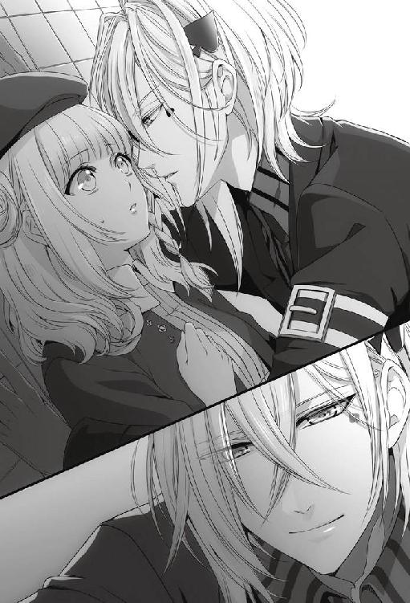
「君が嫌ならしないけど。ほんとに嫌なの......？」
彼女の本当の気持ちが知りたい。
「僕のことを好きになってくれたのかもしれないと思ったのは、やっぱり僕の自惚れだったかな......？」
ほんの数日前、僕に見せてくれた笑顔は幻だったとでも言うのだろうか。
この目が意味をなさない彼女だから、向けられる感情は全て本物だと信じていた。でも、僕の受け取り間違い......勘違いだったのかと胸が苦しくなる。
「ねえ、目閉じて......」
優しく彼女の唇を親指の腹でなぞる。それでも彼女の瞳は僕を見つめたまま。
「......怖いこと、しないから......」
自分の鼓動が嘘みたいに耳にうるさい。すぐ近くにいる彼女に聞こえていないといい。彼女も、少しくらいは僕のせいで鼓動を速めてくれているのだろうか。
そうだといいな、と思いながら彼女が瞳を閉じてくれるのをじっと待った。
たぶん、数分は待ったと思う。
「......まだダメなの？ なかなか落ちてくれないな、このお姫様は」
落ちない瞼に、僕は大きく溜息をついてから体を起こした。
キスなんてできなくていい。好きだと、ただそのひと言が聞きたかった。
彼女がそのひと言を言ってくれるだけで、この弱い自分がいなくなるはずだった。そうすれば、どんなものからでも彼女を守れる。だが、彼女は僕を好きだとは言ってくれなかった。
深い落胆に体が重く沈み込むようだ。
「今度こそいけると思ったんだけどね。弱ってるところにつけこもうとしたのが敗因だったかな」
僕が体を起こしても、彼女は微動だにせず静かな瞳で僕を見上げている。何の感情も写していないその瞳が、僕の心を抉った。
「あと一ヶ月しかないのに、また一から信用を築き直しか。こんなに苦戦するのは初めてだよ」
「イッキさん......？」
思わず口から漏れた呟きに、彼女が不安そうな声で僕を呼ぶ。
「あーごめん。不安にさせた？ でも愚痴くらい言わせてほしいな」
弱い自分をこれ以上彼女に見せたくなくて、愚痴に紛らわせて隠した。
「......君は、もしかしたら僕が落とせなかった最初の女の子になるのかな」
誰よりも傍にいてほしくて、初めてずっと一緒にいたいと思った女の子。その女の子だけは僕を好きになってくれない。全て自分が招いた結果だというのに、こんなにも胸が痛い。
勝手に、力のない笑い声が漏れ落ちた。
「......そんなほろ苦い思い出もたまには悪くないか」
軽口を叩いてはいても、心の中では自分の言葉に自分で傷ついていた。
「そういえば、女友達ってできたことないな。いいかもね、友達。この僕が落とせなかった初めての女の子で、初めての女友達」
答えを探すように彼女を見つめて、弱く情けない自分に吐き気がした。
彼女を友達だなんて思えるはずがない。こんなに──胸が張り裂けそうなくらい好きなのに、友達になんてなれない。このまま、彼女を諦めるしかないのだろうか。彼女を失って、生きていける自信すらないのに。
「......なんてね」
自嘲気味に呟いた。
「嘘だよ。思い出で終わらせるなんて、冗談じゃない。あと一ヶ月で、必ず君を僕の虜にしてみせるから」
制限時間付きの本気のゲーム。僕は降りないし、彼女に降りてもらう気もない。
「負けを認めるなんて、そんなこと絶対にしない」
完全に敗北が決まるまでは、どんなにみっともなくても足掻かないといけない。そうしないと、僕はきっと一生後悔する。だって、負けを認めるということは、彼女と共にいられないというだけじゃない。この目の力、運命に負けることも意味しているのだから。
「はい、鞄」
人質にしていた鞄を返して、さっさと踵を返す。これ以上ここにいると、弱い自分がまた顔を出しそうだった。
「じゃあまた明日、バイトでね。おやすみ」
夜になると昼よりもぐっと気温が下がり、肌寒いどころか寒かった。風が吹くと、マフラーをしてもいいくらいの寒さだ。今の空しい気持ちも寒さに拍車をかけているようだった。
暗い夜道を照らす電灯が、チカチカと明滅しているのを何気なく見上げながら歩く。
結局、彼女は僕に何も話してくれなかった。何かあったことは確かだと思うのに、その何かがわからない。
彼女が話してくれないのは、僕が頼りないせいかもしれない。急に僕への態度を変えたのも、頼りにならないと見限ったからとは考えられないだろうか。
しかしよくよく思い出してみると、彼女の急な行動に驚いたのは今回だけじゃないことに気が付いた。
あれは確か五月頃のことだ。僕を嫌っていたはずの彼女が、急に僕のＦＣに入会した。付き合うようになってから理由を聞いても、彼女は笑うばかりで教えてはくれなかった。僕に興味を持ったからだろうぐらいの気持ちでいたが、本当にそうだったのだろうか。
記憶を遡るうちに、僕は彼女と付き合い出した頃のことを思い出していた。季節は六月だ。
あの時、僕は前のカノジョと別れたばかりで、まだ次に付き合う子が決まっていなかった。
彼女は僕が事務所にいるのを見ると、即座に更衣室に行こうとした。
「ねえ、そんなに急ぐことはないでしょ。たまにはおしゃべりでもしない？」
彼女は僕を嫌っていたけれど、僕は嫌いじゃなかった。目の力が効かないこともわかっていたから、むしろ興味があった。
「......おしゃべりなんてしてたら、外の子たちが待ちくたびれますよ」
君もそこに入ってる一人でしょ、と思ったけれどそれは口に出さなかった。彼女は睨みこそしなかったものの、じっと挑むような目をしていたのを覚えている。
「まあ、そうなんだけど。少しだけね」
誤魔化すように笑うと、彼女は迷った素振りを見せた後に口を開いた。
「......イッキさんは、どうして三ヶ月で別れちゃうんですか？」
さっさと僕を置いて行ってしまうと思った彼女は、思いがけず椅子に腰を下ろした。どうやら本当におしゃべりに付き合ってくれるらしい。
「どうしてって......そういうルールはあった方が楽でしょ？」
「ルールって......恋愛はゲームじゃありません」
「そう？ ゲームみたいなものだよ」
「......私は、そういう考え方は好きになれません」
「んー......」
自分の方が痛いみたいな顔をして、彼女は僕を見つめた。大分痛みに鈍くなっていたはずの僕の胸が、ほんの少しだけ痛んだ気がした。
僕だって、許されるなら普通に一人の子だけに愛されて、愛したい。
「君の気持ちもわかるよ」
僕がそう言うと、彼女は訝しげな顔をした。その眉間の皺はとても深く、僕が彼女の気持ちがわかっていると納得してもらえるには随分と時間がかかりそうだった。
「じゃあ......」
それでも、僕は彼女に興味があった。彼女が僕のことをもっとちゃんと知ってくれたら、何かが変わる気がしていた。
「そうだな......とりあえず三ヶ月付き合ってみない？」
突然の僕の提案に、彼女はしばらく絶句した後、
「......どうして私なんですか」
ぽつりと聞いた。
「......んー......。まあ、強いて言えば興味かな。君だって、僕に興味があるんでしょう？」
「ありません」
あまりに間髪入れずに答えが返ってきたので逆に笑ってしまった。
「じゃなかったらどうしてあの子たちに混じって僕の出待ちなんかしてたの？」
「それは......」
上手く説明できないのか、言いたくないのか、彼女らしくなくもごもごと口ごもった。
「ふうん......まあいいけど。とにかく、付き合おうよ。三ヶ月だけ」
「何でですか......？」
「......何で？」
「だって、イッキさんは私のこと、好きじゃないでしょう？」
「好きじゃなきゃ、付き合っちゃいけないの？」
さらりと言ってしまった後でまずいと思った。怒られる。
しかし、予想に反して、彼女はそっと目を伏せて「わかりました」と呟いた。その表情は、どこか哀しげにさえ見えた。
あれから二ヶ月。最初は確かに興味だけだった。きっと彼女も、付き合い出したら他の女の子たちと同じだろうと思っていた。
でも、彼女は違った。
彼女だけは、僕を特別扱いしなかった。嫌われた状況からスタートしたせいかもしれないけれど、彼女の態度は新鮮で心地よかった。
女の子と付き合うのはきっかり三ヶ月だけ。そう決めたのは僕自身だけど、ＦＣの子たちにも伝えてあるからもう僕だけのルールじゃなくなっている。だからこそ、まずはこの三ヶ月の期間を超えないといけない。
一生、彼女と一緒にいるためには、僕だけが想っていても駄目だ。この三ヶ月の間に、彼女が僕のことを好きになってくれた時、初めてその先の未来ができるのだから。
好きという気持ちだけでは人を振り向かせられないなんて、知らなかった。
付き合い始めた頃は、まず『嫌い』から『普通』に昇格しようと頑張った。頑張った、と言っても普通に話す機会を増やして、僕を知ってもらうように努めたくらいだ。それぐらいしか、僕にできることはなかった。
『普通』の段階には比較的早くなれたと思う。彼女は他のバイトの子たちと同じように僕に接するようになった。笑顔を初めて見せてもらえた時は嬉しかった。
『普通』から『好き』へはなかなか進まなかった。僕はとっくに彼女が好きになっていたけど。
先月、七月の末にはその彼女の重い足が『好き』の階段に掛かったように、僕の目には映った。あれも全部、僕の都合のいい解釈だったのだろうか。
原因があるなら、教えてほしい。
一番疑ったのがＦＣの子からの嫌がらせだ。でも、まだ三ヶ月を過ぎたわけでもないから、彼女だけが特別に嫌がらせを受ける理由が見つからない。
僕が本気なことが女の子たちにばれた可能性も考えたが、それは上手く隠してきたつもりだ。僕が本気だとばれたら、彼女が何をされるかわからない。
彼女にも、そのことは伝えてある。もし必要だと感じたら、冷たい態度を急に取ることもあるよ、と。
もちろん、それは表向きの話で、彼女を守るための僕なりの策だ。
僕がそれを伝えた時、彼女は「私は守ってもらわなくても大丈夫です」と笑ったけれど、その笑顔をこそ僕は守りたいと思った。
その彼女に、何かが起きている。その何かが僕には見えない。
ぐるぐると答えの出ない問い掛けが頭の中を巡っていく。
好きな女の子に笑っていてほしい。その隣にずっといたい。それだけのことがこんなにも難しい。
ふと上を見上げると、空にはどんよりと重い雲が立ちこめていた。サングラスを少しずらして見ても、星はどこにも輝いていないようだった。
８月４日
昨夜、暗い気持ちのまま眠ったせいか、今朝は朝から気分が沈みがちだった。バイトに行くのが億劫だと感じるほど気鬱になったのは久しぶりだ。
こんな気分の時にこそ、彼女から朝送ってほしいと言ってもらえたら、と無理な願いを思い浮かべる。もちろん、そんな都合のいいことが起きるはずもない。
カーテンの隙間から覗いている空も、生憎の曇り空で気が滅入る。だが、外に出てみて気が付いた。どのみちサングラスを外すわけにはいかないのだから、晴れだろうと曇りだろうと僕が見上げる空はいつもくすんでいる、と。
「おはようございます」
挨拶をしながら冥土の羊の事務所に顔を出す。ワカさんがフロアに出ている気配はあったが、他に人の姿は見えない。
約束の時間には早すぎず、かつ遅れずに行く。僕はそれが適当な時間だと思っている。そのせいか、大抵一番乗りは早めの行動遵守のシンか彼女なのだが、今日は珍しく僕が一番乗りのようだった。
手早く着替えを済ませて事務所に戻ると、始業時間の一〇分前になっていた。事務所にはまだ僕しかいない。そろそろ出社していないと朝礼に間に合わない時間になる。
ふと、彼女が朝寝坊をしていた時のことを思い出した。時計を見上げ、少し心配になってきた時、事務所に彼女が顔を出した。
「あ。おはよう」
よかった。今日はきちんと起きていたようだ。
「......おはようございます」
無表情ながら、彼女は窺うような目を僕に向ける。昨日の今日ではこれが当たり前の態度だろう。
そんな彼女に、にこりと微笑みかけた。自分でもこのポーカーフェイスぶりは完璧だと思う。この目に不思議な力が宿った日からずっと表に感情を出さないようにしてきたせいで、今や意識しなくともその場に則した表情が勝手に浮かぶようになっていた。
「昨日は驚かせてごめんね。あんまり気にしないで」
全く気にされなくても困るが、長く彼女を困らせたいわけでもない。このひと言で彼女の気持ちが少しでも軽くなればいい。
自分から話題を振っておいて、昨夜の不穏な空気を思い出しそうになって意識的に笑みを深くした。僕が落ち込み続けるわけにはいかない。
彼女の困惑ぶりが顔に浮かびそうになるのを視界の端に入れながら、バックヤードへと足を向けた。
「何逃げてるんだか......」
無意識の自分の行動が嫌になる。ぽつりと漏らした言葉は、思ったよりも弱々しかった。
朝礼の時間ちょうどに、ワカさんが事務所の扉を勢いよく押し開けた。
「全員そろっているようだな。それでは朝礼を始める！」
今日は彼女も、ワカさんが顔を出すより前にきちんと整列を終えていた。ワカさんの前に、僕、シン、彼女の順に並ぶ。
別にわざと彼女の横を避けたつもりはない。手持ち無沙汰だからと始めたシルバー磨きをしていてぎりぎりに事務所に戻ったら、自然とこの並び順になっただけだ。
「今日はまず、諸君に注意してもらいたいことがある」
いつもはない注意事項に首を傾げていると、
「とある筋からの情報によると、昨日当店の従業員内で、交際関係におけるトラブルがあったそうだ。とある従業員が別の女性従業員に対し淫行を働こうとし、拒絶されたと報告を受けている」
思ってもいない方向からジャブが飛んできた。
とある従業員が別の女性従業員に対し、淫行を働こうとして拒絶。
「......は!?」
頭の中でワカさんの言葉を反芻して、それが自分と彼女のことを指しているのだとようやく気付く。
「............」
隣に並んでいるシンは、妙にすました顔をしていた。
「シン、おまえか」
低く問うと、
「はい、家が近所なもので」
しれっと答える。
「............」
シンを責めても仕方がない。シンがいることにまるで気が付かなかった僕に落ち度がある。
迂闊だった。気を付けなかったわけじゃないが、夜だからあまり人目もないだろうと思ったことも確かだ。暗闇に人の気配があれば逆に人目を引くことなんて、冷静に考えればわかったはずなのにと後悔が広がる。
シンに目撃されていたということは、ＦＣに見られている可能性もあるということだ。
冷たい汗が背中を流れていくのを感じた。
事務所に入ってきた時の彼女に、何かおかしな様子はなかっただろうかと、急いで頭の中で振り返る。昨日の今日でＦＣが行動に移しているとも考えにくいが、それでも心配せずにはいられない。彼女の瞳の動きまで思い出して、過度な怯えや不安がなかったことを確認してから、心の中でだけ安堵の息をついた。
今後は感情に流されるようなことがあってはいけない。自分では冷静なつもりでも、今回のようなことはあるのだ。彼女を守るために、あくまで理性的に行動しよう。
頭ではそう思うのに、彼女を前にしてそんな自制が効く自信はなかった。実際、彼女を前にすると驚くほど気持ちが暴走する。
そもそも、この感情を容易に抑えつけられていたら、昨日も彼女に押し迫ったりなどしなかった。
自嘲気味に歪めた僕の表情をどう受け取ったのか、ワカさんがにやりと笑う。
「背後に警戒が足りないようだな。店外での男女交際は大いに結構だが業務に支障のないよう、それから野次の度が過ぎないよう注意しろ」
さりげなくシンにも釘を刺す形で、朝礼は締められた。
「以上だ。解散！」
ワカさんの姿が事務所から消えた後で、シンに投げやりな視線を投げる。
「......バレるのはいいんだけどね。まさか朝礼で注意されるとは思わなかったよ。......シン、覚えておけよ」
「もちろん、忘れませんよ。オレなりに衝撃的でしたし」
悪びれた様子もなくシンが言う。
「まあ先輩は誰に見られていようと気にもならないんでしょうけど。そもそも、気にするならあんなとこで堂々とキスシーン演じませんよね」
シンの意見を否定しようとは思わない。だが、昨日のことは理性よりも感情が先立ったことだけに、苦笑いを浮かべそうになる。
確かに、彼女とキスしているところを誰かに見られて恥ずかしいという気持ちはない。むしろ、誰かれ構わず見せつけたいくらいだ。
だが、僕が良くとも僕の周りの環境がそれを許してはくれない。ＦＣの子に目撃されることだけは避けなければと、改めて自分を戒める。
「見られるのは気にならないよ。でも、さすがに店長に告げ口されるのは予想外だったね」
「驚かされたんで、軽い仕返しです。それじゃ、オレは仕事始めます」
「............」
事務所を後にする際、シンの視線が一瞬だけ彼女を捉えた気がした。もしかして、と思う。
シンのこの告げ口は、僕への嫌がらせ以外の何物でもない。その嫌がらせをする理由は、シンが彼女に気があるからではないだろうか。
彼女のことはひと言もからかわずに立ち去ったのも、それを裏付けている気がする。それとも、これは彼女を想うあまり僕が作り出した妄想だろうか。
視線だけを横に向けると、彼女はまだその場に佇んでいた。
「悪かったね。僕はそれほど気にならないけど、君は恥ずかしいでしょ」
以前の彼女なら、朝礼であんなことを言われた時点で顔を赤くしていた。今の彼女は一見すると何も動揺していないように見える。ただ、見た目上平気そうでも、心のうちまではわからない。
「シンの奴、小学生じゃあるまいし何を考えてるんだか。まあ、多分ワカさんはそんなに気にしてないと思うよ。ワカさん流の冗談なんじゃないかな」
あまり彼女が困っていないといいと思いながら、フォローを入れた。
外で彼女に迫ったのは僕であって、彼女に責任は何もない。シンがからかおうと、ＦＣが何か仕掛けてこようと、その全てに僕一人で対処する心づもりだった。
「でも、シンの傍には近寄らないようにして。からかってくるかもしれないからね」
全て僕のせいなのだから、彼女がからかわれて嫌な思いをする必要はない。本当にそう思ってはいたが、頭の片隅で、シンが彼女に気がある可能性も忘れてはいなかった。
「はい、彼には近づきません」
彼女は従順な素振りで頷いた。朝礼の時に強く反応を示しはしなかったものの、やはりからかわれるのは避けたいようだ。
「ん、僕もあんまり君に近付かないようにするよ。一緒にいてからかわれないようにね」
昨日の現場をＦＣに見られていた可能性を考えると、判断がつくまでは人目のある場所で彼女へ接近することは避けた方がいいだろう。それに、意識、無意識に限らず、距離を空けていれば感情に引きずられて暴走しなくて済む。彼女の傍にいたら、またいつ感情の赴くままに触れてしまうかわからない。理性に関しては自信のある方だったのに、その自信が崩れてしまいそうだ。
もう少し気を引き締めないとな、と考えながら彼女を見やると、心なしかその頬が赤い気がした。
「......はっ。思ったとおり、君は恥ずかしがり屋だな」
彼女は怒るかもしれないが少しだけほっとした。彼女らしい面が見られたから、と言うとおかしな話だが、それくらいここ数日の彼女は人が変わってしまっている。
改めて彼女の顔を覗き込むと、上気した頬を隠すように俯いた。初心なその素振りに小さく鼓動が跳ねる。
「からかわれるのに慣れてないんだね。嬉しい......って言ったら悪いかな。僕の方は慣れてるっていうのにね」
先ほど反省したばかりだというのに、僕の手は気が付くと彼女の頬に触れようとしていた。
そんな僕を叱りつけるように、
「おい事務所の二人！ 今注意したところだろう、勤務中の恋愛行為は禁止だ！」
ワカさんの怒鳴り声が飛んできた。ずっと見ていたのかというくらい、いいタイミングだ。
「......はい、店長！ フロア入ります」
これ以上お叱りを受けないように、そしてまた自分の理性が勝っているうちに彼女の頬から手を離した。
「怒られちゃった。じゃあ、また後でね。......あ、そうだ」
すぐにフロアに出ようと背を向けかけて、立ち止まった。
「今日は帰りに用事があるから送れないんだ」
同じ大学の女の子から、大事な話があると言われていた。たぶん、告白されるのだろう。
こういう時、彼女と別の大学で良かったと思う。──彼女が見なくていいものを見せずに済む。僕に告白して来た子が振られるところを見てしまったら、きっと彼女は気にしてしまう。
そしてたぶん、僕が敢えて彼女に黙ってることも、彼女は気付いている。気付いていて、何の用事ですかと聞かないでいてくれる。僕に告白してくる女の子にも、僕自身にも気を遣ってくれる。そういう子だ。
「話すチャンスないかもしれないから先に言っておくよ。気をつけて帰ってね」
ゆっくりと口端を引き上げて、僕は彼女に微笑を向けた。
バイト中、僕はサングラスをかけることをワカさんから禁止されている。当たり前と言えば当たり前のことだ。
ワカさん曰く、「使えるものは己の敵であっても使え！」ということらしいが、客寄せになるのと同時に弊害もあると僕は思っている。つまり、サングラスをしていないせいで、こちらが仕事中でも所構わず女の子が騒いでしまうことがあるのだ。
「ああああの！ 私ミサコっていうんですけど、メアド教えてもらえませんか!?」
「ちょ、ミサコ!? 何一人であつかましいこと言ってんのよ!?」
「えーでも私もメアドほしいー」
「はあ？ 迷惑でしょ!? そりゃ私だってほしいけど！」
「いいじゃん、頼んでみるだけ頼んでみたってー。ダメだったら断ってくれるよー」
「どうですか、イッキさん!? やっぱりダメですか!?」
店内が俄に騒がしくなる。お客さんの中に混ざっているＦＣの子の鋭い視線が、はしゃぐ女の子たちに容赦なく注がれているのがわかった。当の女の子たちはそのことにまるで気付いていない。店を出た後で何もないといいけれど、と他人事のように思ってしまう。
女の子は可愛い。積極的でも消極的でも。今のように、周りが見えなくなるくらい僕だけを見つめている様子を見ると、可愛いなと素直に思う。でも、その気持ちに応えることはできない。
お客さんとしてきちんと扱いはするが、それ以上でも以下でもない。それでも、僕に好意を寄せてくれる子はたくさんいた。だが、この子たちの場合はどうだろう。
「構いませんよ、お嬢様方。もしご自宅にお帰りになっても私のことをご記憶でしたら、いくらでも訪ねていらしてください」
僕の目の力は、人によって持続時間が違う。長く付き合ってきてようやくわかったことだ。
一瞬目が合っただけでずっと僕に夢中になる子もいれば、僕が背を向けた途端に正気に戻る子もいた。この子たちもすぐに覚める方だといいのだけれど。
「ほんとですかー!?」
女の子の一人が、飛び上がる勢いで言った。目元が少し潤んでいる。
「ええ、もちろん。もし、ご自宅にお帰りになっても私をご記憶でしたら......ですが」
正気づくことを期待して背を向けたが、残念ながら女の子たちは僕の目が見えなくなっても黄色い声を上げ続けていた。
女の子たちの相手をしている間、バックヤードの入り口近くで彼女とシンが話しているのが見えた。シンから話しかけに行ったようだ。シンの方から彼女に近付くことは、僕にも止めようがない。
何を話していたのだろう。あの場に割り込んで行って、『何の話？』と聞けたらいいのにと思う。そんな大人げないことできるはずもないが。
目の端に二人を映しながら、僕は女の子たちを給仕しに戻る。
朝危惧したように、予想以上に店が混んでしまい、まともに彼女と会話ができないままシフトを終えた。事務所で少し待ってみたが、彼女はまだフロアの方でワカさんと話しているようでなかなか戻って来ない。結局、僕が店を出るまで彼女は戻って来ず、さよならの挨拶もできなかった。
ＦＣの子たちと連れだって歩きながら、片手で携帯メールを打つ。
『今日は送れなくてごめんね。一人でちゃんと帰れた？』
しっかり者の彼女のことだから大丈夫だろうとは思ったが、最近の彼女はどうも危なっかしい。それに、体調の方も心配だった。
たまに、僕のことをマメだと言う子がいたが、自分では意識したことがない。と言っても、マメになったのも彼女に一度酷く怒られてからだった。
女の子を取っ替え引っ替えしていた頃、彼女は僕を最低だと言った。情けないことだけれど、僕は彼女に叱られるまで、自分のしている行為が悪い事だなどとまるで考えていなかった。良いも悪いもなく、無条件に一定の崇拝を注がれることに慣れ過ぎていて、僕は人の気持ちに鈍感になってしまっていた。それを、彼女が叱ってくれた。
あの時から、僕は付き合う子たちをなるべく大切にしてきたつもりだ。そして今は、今までの誰よりも彼女を大切にしたい。早く僕に優しくさせてくれたらいいのに、と思う。
数分後、ポケットの中で携帯が震えた。
『大丈夫です、ありがとうございます』
文面は簡潔で、素っ気ないほどだった。一目画面を見て、すぐに携帯を仕舞った。
「イッキー？ どうしたの？」
「ん、なんでもない」
「でも、顔笑ってるよ？」
「そう？」
本当に、早く彼女が僕を好きになればいいと願う。
８月７日
茜色に染まっているであろう空をサングラス越しに眺めながら、彼女をあまり待たせないようにと足を急がせる。今日のバイトも特に問題なく終わったが、彼女の態度が硬いことにも変化は見られなかった。
まだ、彼女に何があったのかはわからない。
後どのくらい信頼を得れば、相談してもらえるのだろうか。そして、その信頼を得るには、今以上に何をどうしたらいいのか。女の子に好いてもらおうと努力すること自体が初めてで、方法がわからないのが痛い。
ここ数日、考えるばかりで何も進展していない。
日常と違ったことと言えば、昨日、不意打ちのモーニングコールをしたことだろうか。半分冗談の上での約束だと彼女は思っていたのか、すっかり忘れていたようでとても驚いていた。電話越しに聞いた驚いた声を思い出すだけで、顔がだらしなく緩みそうになる。
少しだけ、彼女との距離が縮まった手応えがあった。だが、朝に縮まったと思った分は、夕方にはきっちりと離れてしまった。同じ日の午後に、彼女の友人であるサワちゃんが店を訪れたのだ。
随分彼女と長く話している女性客がいたので、何かトラブルがあったらいけないと念のために声をかけた。その女性客がサワちゃんだった。
まさか彼女の友達だとは思わなかったから、うっかりサワちゃんの目を見て接客をしてしまった。失敗した、と思った時にはサワちゃんから告白される一歩手前だった。幸い、サワちゃんがすぐに僕の目の効果が切れるタイプだったおかげで悲惨なことにはならなかったものの、危うく彼女と友達の関係を悪くしてしまうところだった。
正直に白状すると、僕はあの時、酷く自分勝手なことを考えていた。
サワちゃんが僕の目に囚われた時、僕は彼女がどう反応を示すか観察していた。自分の友達が僕に惚れたと言い出したら、怒るのか、妬くのか、ショックを受けるのか。少しでもいい、動揺してほしいと思ってしまった。
彼女の心が揺れた大きさが、彼女の中に占める自分の大きさのような気がして、じっと彼女の様子を窺った。でも、僕が立ち去った後も、彼女は取り乱すことなく友達と会話を続けていた。
彼女に大きな変化が見られなかったことは、少なからず僕にショックを与えた。まだ、僕は彼女の心に大きく入り込めていないのだ。
ともかく、昨日のうちに良いことと悪いことの両方があり、プラスマイナスゼロ。そして今日も彼女と僕の距離は何も変わっていない。
物思いに耽りながら歩く僕の横を、自転車がベルを鳴らしながら追い抜かして行った。何気なくその自転車を目で追うも、すぐに頭はどうしたら彼女との距離を縮められるかに戻っていった。
普通にバイトをしてバイトが終わったら一緒に帰る。それだけではもう駄目なのだ。時間が永遠にあるならそれでもいつかは彼女が振り向いてくれるかもしれないが、僕に残された時間は短い。この三ヶ月を乗り越えて初めて、彼女との未来を語れるようになるはずだ。
数日後にある花火大会のことが頭を過ぎったが、たぶん、それよりも八月一九日に予定している合宿の方が僕たちの関係を近付けるキーになりそうな気がする。僕と彼女、それぞれの大学のビリヤード同好会で予定している合同合宿だ。
良い思い出作りに向いたイベントだとは言えないものの、いつもと違う環境という条件は揃っている。彼女はあまり楽しみにはしていなかったが、実際に楽しめるかどうかは僕次第でどうとでもできるはずだ。
だが、合宿には多くのＦＣのメンバーが参加するため、普段以上に注意を払う必要がある。彼女を危険から守りながら、彼女と二人きりの時間を確保するには相当骨が折れそうだ。前もって綿密な計画を立てておかなけば、と考えているうちに、待ち合わせ場所近くまで着いていた。
高架下に佇む彼女の元に、小走りで駆け寄った。
「お待たせ」
振り向いた彼女の顔を見て、あれ、と思う。
「......顔が暗いけど、何かあった？」
顔が、というよりも表情が暗い。相変わらず表情が乏しいのではっきり言い切れはしないが、落ち込んでいるように見えた。
しばらく彼女の返事を待ったが答えてくれる気はないらしい。
「そういえば今日、朝からあんまり元気なかったね。『気合いが足りん』って店長がこぼしてたよ」
昨日、今日の出来事の中から、彼女が暗くなる原因がないか素早く頭の中で確認する。今日──は何もない気がする。そもそも朝から落ち込んでいたのだから、その原因は朝よりも前にあるはずだ。ちらりと、サワちゃんが一瞬でも僕を好きになりかけたことだろうかと考える。あの出来事の動揺が今も響いているのだと、少しは期待をしてもいいのだろうか。
彼女の横顔を見つめても、答えは見つからない。
「ねえ、もしかしてまた具合悪い？ 最近元気になってきたかなと思ってたけど......」
顔を覗き込むと、少し頭を後ろに引きながらも、彼女はしっかりと首を横に振った。ひとまず、具合が悪いわけではないのだと安堵する。
でも、具合が悪いわけでもないとすると、やはり気にかかるのは昨日のことだ。これ以上、彼女との距離を離すわけにもいかないから、どんな些細なことも気になって仕方がなかった。自分でも、神経質になり過ぎている自覚はある。
もし、昨日のサワちゃんの一件を彼女が快く思っていないとしたら、蒸し返すのも得策ではない。
いっそ正面から『あの時、君はどう思ったの？』と聞いてしまいたかったが、頭の中で今言うべきか否かを天秤にかけて、話題に出すことはやめておいた。
「気をつけてよ、変な気候なんだし。体壊したら信濃も行けなくなるからね」
自然な動作で彼女の鞄を受け取りながら、歩き出す。
「一九日の用意ってできてますか？」
「別に、用意ってほどのことはないけど......急にどうしたの？」
黙っていたかと思ったら、急に彼女が口を開いた。そんなに信濃合宿のことが気がかりなんだろうか。
「もしかして、何か揃わないものでもあるの？ 言ってもらえば相談に乗るけど......。人の多い場所は騒ぎになるかもしれないから、買い物には付き合えないんだよね」
極普通のカレシだったら、カノジョの買い物に付き合うこともできただろう。その当たり前のことをしてあげられないことが、少し寂しい。
「何か必要な物があるならサワちゃんとでも買い物に行ってきたら？」
特に意識せずに言ってから、今が彼女の反応を見るいい機会だと気が付いた。
「サワちゃんも一緒に行くんだよね。こないだのあの子でしょ？ 楽しみにしてるよ」
さりげなく、もう一度サワちゃんの名前を出してみたが、何の反応も見られなかった。少しも表情が変わらないどころか彼女は、それはいい考えだとばかりに頷いていた。これは、本当に彼女は僕とサワちゃんの件は気にしていないと思った方がいいだろう。少なからず、僕は落胆した。
これでまた、今彼女の顔を曇らせている原因がまるでわからなくなった。いくら考えてもわからない。考えれば考えるほど、悪い方向に考えがいってしまいそうで、一時思考を中断した。
せっかく合宿の話が出たのだから、一度気分を変えようと頭を切り換えた。
「今からそんなこと気にするなんて、そんなに楽しみ？ 二人きりにはなれないと思うけど......」
僕が通う大学のビリヤード同好会のメンバーは、ほとんどが僕のＦＣ所属の女の子たちだ。彼女もそれを知ってるから、楽しみというよりはやはり不安が勝っているのではないだろうか。
僕とて、ＦＣの子たちとの旅行が楽しみなわけじゃない。彼女もそこに来るから、大変だろう合宿も少し楽しみだというくらいの気持ちだ。
雰囲気を明るくしようと冗談に紛れさせて笑うと、思ったよりも彼女が深刻そうな顔をしていて胸が痛んだ。どうせ行かなくてはいけないなら、彼女にも少しでも楽しんでもらいたい。
「そうだ。夜、抜け出そうか？ 二人きりになれるなら、僕も合宿の日が待ち遠しいよ」
ちょっと足を止めて、内緒話をするみたいに彼女の耳元で囁く。
「きっと星が綺麗だよ。この辺じゃ見られないような星空が見えるんじゃないかな。ねえ、それ二人で見たいな。二人っきりで。......どう？ いいと思わない？」
話しているうちに、本当に彼女と二人で星空を眺めることができそうな気がしてきた。いや、もし彼女が望んでくれるなら、ＦＣの子たちの目が光っていようと上手く都合をつけてみせる。
ね、と彼女の顔を覗き込んで浮かれかけた気持ちが落ち着いていく。彼女は瞬きを繰り返すだけで、僕のように二人きりの時間を夢見ている様子はなかった。
「......なんてね」
ほんの少しの切なさは、冗談に紛らわして誤魔化した。
「そんなことするためには、まず合宿までに君を落とす必要があるよね」
近付いていた分だけ距離を戻して、またゆっくりと歩き出す。彼女は文句ひとつ言わずについて来た。
「んー......あと二週間か......。普段なら『楽勝！』って答えるところなんだけど、君はねえ......」
半歩後ろを歩く彼女を、振り返る。僕が足を止めると、ぶつかりそうになる一歩手前で立ち止まるだけで、彼女は何も言ってくれない。
あと三週間もしたら、約束の三ヶ月の期間が終わる。その時間制限に焦っているのは僕一人で、彼女はそこに何も感じてはいないのだろうか。
「どう？ この辺で折れておかない？ 合宿が楽しく過ごせると思うよ？ バイトばっかりの夏なんだから、合宿くらいは甘く楽しく過ごそうよ。君が嫌がることなんてしないからさ」
彼女が『うん』と言ってくれたら、三ヶ月という期限を忘れてもっと先の未来の話ができる。ずっと、一緒にいる未来を。
──もうあまり時間がない。いくら言葉を重ねても、彼女の心に届いている感触がまるでないことが、更に僕を焦らせる。
彼女の心を動かすために、後何が足らないのかがわからない。
「......ダメ？」
甘えるような仕草で彼女を見つめても、当然ＯＫが出るはずもない。
「......ま、ダメだよね。君がこんな言葉で折れてくれるなら、僕はこんなに苦戦してないよ」
言葉だけでは彼女の気持ちを自分に向けることができない。だから、ここ二ヶ月の間、必死で態度でも示してきたつもりだ。上手く行っていたと思っていた。
だが八月に入ると、まるで今までの二ヶ月間を忘れてしまったかのように彼女の心が遠ざかってしまった。突然閉ざされた心に、不安と焦りが膨れ上がって破裂してしまいそうだ。
......それでも、僕は彼女を諦めたくはない。
「僕が努力しろって話か」
溜息と共に零した呟きは、重力を伴っているかのように真っ直ぐ地面に落ちていった。
「──あ。少なくとも、僕以外の男に落ちるのだけはやめてよね」
わざとおどけて言うと、本当に冗談だと思っているのか、彼女は首を傾げたまま頷いた。その無垢な様子に微苦笑が漏れる。
振り向いてもらえないだけでもこんなに心が痛いのに、彼女が他の誰かのものになるなんて僕には耐えられそうもない。
８月８日
「諸君、それでは朝礼を始める！」
ワカさんのよく響く低い声に、事務所の空気がピリッと引き締まる。
整列したメンバーはいつもと少し違う。僕の横には、シンの代わりにミネが並んでいた。
「本日は、長期休暇を取っていたミネが復帰した」
「みなさん、お久しぶりでーす。今日からまたよろしくお願いしまーす」
柔らかくウェーブした長い髪を揺らして、ミネがみんなに笑顔を振りまく。華やかで可愛らしい容姿に、良くも悪くも女の子らしい性格の彼女は男性客に人気が高い。僕とは大学も同じだから、バイト先と合わせてダブル後輩に当たる。
ミネの久しぶりの出勤とあって、今日の客層は男性客が多そうだ。
「休暇後で覚束ない部分もあろうが、客への目配りには隙を作らないよう充分注意して動け」
ワカさんに言われて、ミネが「はい」と返事を返した。
「他の者も、ミネがミスを冒さないよう動向に気を配ること。以上だ。解散！」
バックヤードに入る前に、ミネに声をかける。
「おかえり、ミネ。今日から復帰だったんだ。旅行どうだった？」
「あっ、イッキさん。お久しぶりですー」
パッと花が開いたような明るい笑顔を向け、ミネが一歩僕との距離を詰めた。
ミネには僕の目が効いていない、というわけでもないのだが、ＦＣの子たちのように周りが見えなくなるほどではない。ミネは僕に対しても恋愛脳が働くようだが、それは僕だけというわけではないのだろう。元々の性格もあるのだが、ある意味貴重な女の子だ。
「よかったですよ、琉球。海がすっごく綺麗でした。あ、バイトの後、写真見に来ません？」
「あー残念。今日は先約があるんだ」
特別な用事はなくても、今はできるだけ彼女と一緒の時間を作りたかった。だから、今日もバイトが終わったら彼女と一緒に帰る気でいる。これは僕の中では立派な先約のひとつだ。
「何だー。イッキさんっていっつも忙しいですね」
「学校の方が色々ね。写真は今度見せて」
「はい！ 約束ですよ？」
にこにこと笑うミネに頷き返して、バックヤードへと足を向ける。
彼女と違って、ミネはきっと僕の適当な言い訳など見抜いているだろう。それでも詮索して来ない。立場的にそうしないのか、ミネの女子力の高さからか、その理由まではわからない。
事務所を出るとすぐに、扉の向こうから「あ、先輩。いたんですか」という僕と話している時より一オクターブは低いミネの声が聞こえた。
ああもはっきりと敵意を向けられると、逆に気持ちがいい。と、敵意を向けられる当人ではないからそう感じるが、彼女にしてみたら八つ当たり以外の何物でもないだろう。それも僕のせいなので、彼女には申し訳ないと思う。
少し心配になって、ドアの隙間から中を覗く。幸い、喧嘩にはなっていないようだった。
喧嘩も何も、彼女はまだ少しぼんやりしていることが多くて、喧嘩になりようもない。八月に入ってからずっと、口数も少ないままだ。
何があったのか、彼女はまだ教えてくれない。僕を頼りにできると判断してもらえるまで、努力するしかないだろう。
三ヶ月。その制限時間が、短く感じられた。
シフトを終えてから事務所に入ると、ミネと、複雑な顔をした彼女が座りもせずに向き合っていた。ミネはこちらに背を向けていたので表情まではわからない。でも、事務所内の空気から、あまり楽しい話はしていなかったのだろうと思った。
「二人ともお疲れ様。まだ着替えてなかったの？」
「あ、イッキ先輩」
振り返った時には、ミネの顔には満面の笑みが浮かんでいた。
「先輩のこと待ってたんですよー。お話ししたいことがあるんですけどちょっとだけいいですか？」
「え、今？」
楽しそうなミネの様子に嫌な予感がする。たぶん、僕にはあまり嬉しくない話だ。
「はい、今。一〇分くらいで結構ですから」
「別に構わないけど......」
今日は彼女と帰るつもりだったから、彼女に先に帰るようには言っていない。だから彼女も僕と一緒に帰るものと思っているはずだ。
彼女は今、僕とミネの会話をどんな気持ちで聞いてるのだろう。こういった場面は付き合う前にも、付き合った後にも何度かあった。だから、彼女がミネの言う用事の内容に気付いていてもおかしくはない。
本来ならミネの方が肩身を狭くする場面のはずだが、彼女の方がよほど気まずげな空気を漂わせていた。
「......悪いけど一〇分くらいいいかな？」
「あれ、珍しい。今日は一緒に帰るんですか？」
「んー。今日はちょっと、前からの約束でね」
こう言っておかないと、バイトの度に一緒に帰っていることが露見してしまうからさらりと言う。
いつもの約束でも以前にした約束には違いないから、嘘にはならないだろう。詭弁だが、ＦＣの手前こうした対策は必須だった。
できれば待っていてほしいと思いながら彼女の顔を見つめると、案外あっさりと頷かれる。
「わかりました、待ってます」
「ありがと。約束してたのに、悪いね」
嬉しかった。
他に用事があれば先に帰ってくれてももちろん構わなかったが、できるだけ彼女と過ごす時間は確保しておきたい。それにたぶん、僕は今から落ち込むことになるから、すぐに彼女の顔を見たくなるに違いなかった。
「じゃあ、先輩。イッキ先輩お借りしまーす」
ミネは不自然に明るく言うと、僕の手を引いて裏口へと向かう。後でね、と彼女に言う暇すらなかった。
店の裏口から出ると、ミネはきょろきょろと周囲を見回した。おそらく、ＦＣの存在を気にしての行動だろう。幸い、裏口前には人影がなかった。垣根に囲まれているので、ここなら誰に目撃される心配もない。
ミネは念入りに表へと通じる道もチェックを済ませてから、ようやく僕に向き直った。
「バイト終わったばかりなのにすみません」
その笑顔を見て、ああ、これは来るなと第六感が僕に言う。
「いいよ、別に。それで、どうしたの？ 何か相談事？」
相談事だったらいい。十中八九違うとわかっていながら水を向けると、
「......イッキ先輩っていつもそうなんですか？」
ミネが頬を膨らませた。拗ねたような表情は可愛かった。大抵の男ならばころりといってしまうほどの威力を持ち合わせている。
でも、僕はミネの表情を眺めながら、彼女もこのくらいわかりやすかったはずなのにとミネの思惑とはまるで異なることを考えていた。
「そうって？」
「そうやって女の子の告白をはぐらかそうとするんですか、ってことです」
「......告白なの？」
きゅっと唇を引き締めて、ミネが頷く。その表情から、ミネが冗談やおふざけで言い出したのではないことがわかった。わかってしまった。
今からこの告白を断らなければいけないと思うと、気持ちが沈んでいく。
「......僕がまだ、彼女と付き合ってるのは知ってるよね？」
「はい」
「三ヶ月の期限がまだ残ってることも」
「わかってます」
「わかってるのに、どうして？」
僕のことを好きだと言ってくれるのは嬉しい。でも、僕は彼女のことが好きだからその気持ちには応えてあげられない。
断られることが目に見えているのに、どうして女の子たちは僕に告白するのだろう。それとも、僕が、告白すれば簡単になびいてしまうような男に見えるのか。
「だって、先輩は全然落ちないじゃないですか」
ふて腐れたようなミネの言葉は、ぐさりと僕の心を抉った。
「いつまでも落ちない人に固執しないで、私と付き合った方がきっと楽しいですよ」
「んー......」
「先輩となんか別れて、私と付き合いませんか？」
女の子は可愛い。一生懸命だと更に可愛く見える。でも、その純粋な一生懸命さがたまに怖い。
三ヶ月の期間を区切って順番に女の子たちと付き合ってきた僕が悪いのか。一人の子とずっと一緒にいたいと願うことがこんなにも難しい。
「......気持ちは嬉しいよ、ミネ」
「じゃあ......」
「でもね、まだ三ヶ月は終わってないでしょ。彼女が落ちる、落ちないを置いといたとしても」
「でも」
「ねえ、ミネ。確かに彼女はまだ僕に好きって言ってくれないけど、ちゃんと付き合ってはいるんだよ。三ヶ月は一人の女の子のための時間だって決めてるし、僕はそれを破りたくはないんだ」
「............」
「まぁ......もし彼女の方から別れたいって言ってきたら話は別だけど、今の僕のカノジョはあの子だから、大切にしたいと思ってる。それはわかってもらえる？」
「............」
噛んで含めるように言い聞かせても、ミネは自分のつま先を見つめたまま唇を尖らせ顔を上げようとはしなかった。
「なら、三ヶ月が過ぎたら、私と付き合ってくれます？」
勢いよく顔を上げたミネと真正面から目が合う。少しだけ、目元が赤くなっていた。
「......約束はできないよ。次に誰と付き合うかなんて、カノジョがいる間に決めたくないし。......でも、もし三ヶ月後に僕が一人で、ミネがまだ僕のことが好きだったら、そうなるかもしれないね」
自分でもずるい言い方だと思う。今この場を丸く収めたいからといって、期待を持たせるようなことを言うなんて。しかも、まるで可能性がないわけでもないから笑えない。
八月が終わっても、彼女が僕を好きになってくれていなかったら......。考えたくもないが、その時、僕はたぶん何もかもがどうでもよくなっているだろう。周りに流されるままに、また、彼女ではない別の女の子と恋愛ゲームをするかもしれない。ただ、傷ついた心を修復できずにいることだけは想像に難くない。
ミネは僕のずるさを見透かしたように、くしゃりと笑った。
「......わかりました」
そのままターンするようにくるりと僕に背中を向けて、裏口の扉に手をかける。
「あーあ、タイミング計り間違えちゃったなー。あ、今がチャンスかなーって勢いで告白しただけですから、慰めようとなんてしないでくださいね。もちろん、先輩と別れる気になったなら大歓迎ですけど」
背を向けたまま、ミネが明るい声で言う。その言葉が強がりだということはすぐにわかった。勝ち気な彼女らしい態度に胸が痛む。
「うん、わかってる」
「じゃあ、私、行きますね。......できれば、ちょっと時間をおいてからお店に戻ってもらえます？」
「......ん」
彼女を待たせているのはわかっていたが、一〇分程経ってから、僕は店に戻った。
店に戻ると、すでにミネは退社した後だった。
ほっと吐息を吐き出してから、急いで店を出た。今日ばかりは表で僕を待っているであろうＦＣの子たちとやりとりをしている時間はない。裏道から、真っ直ぐ彼女との待ち合わせ場所へと向かった。
歩いて一五分の距離を、走って一〇分で到着した。黄昏の日の中に長い影を落として、彼女は佇んでいた。
「......っ！ ごめん、ほんと待たせた」
肩で息を繰り返して呼吸をどうにか整える。
「悪かったね......ちょっと、むげにはできない話だったもんだから」
さっと携帯で時間を確認して眉根が寄った。彼女はすでに三〇分も僕を待っていた。
こんな寒空に三〇分も立たせていたなんて。彼女の白い頬を見て激しく後悔した。ミネの告白が終わった時点で、どうして先に帰るようにとメールしておかなかったのだろう。
僕の気分が塞いでいるからといって、彼女を凍えさせていいはずがない。
自分で自分の手を握るようにしていた彼女の手に触れると、氷のように冷たかった。
「ああ、手、冷たくなってる。手袋貸すよ。ほんとごめん」
急いで手袋を外して彼女の手に握らせたが、彼女は手袋を握り込んだままはめようとしない。
「君も手袋した方がいいよ。こんなに手冷やしたらダメだ」
指先が赤くなるほど冷たくなってしまった彼女の手を、僕の手で温めてあげられたらよかった。カレシなのに本当に何もできないな、と自嘲する。
「......本当は、手を繋いで歩けたら少しはあったかいと思うんだけど。君が嫌でしょう？」
彼女は肯定も否定もせず、僕の手袋を握り締めたまま俯いている。何を考えているのだろうと彼女の視線の先を目で追うと、僕の手を見つめていることにようやく気が付いた。
「ああ、僕は平気だから。走ってきたから体あったまってるし」
自分の方がよほど寒いだろうに、僕のことを気遣ってくれる彼女の優しさに心を撫でられたような心地がした。彼女の些細な行動のひとつひとつが、こんなにも僕を優しい気持ちにしてくれる。
行こうか、と歩き出そうとする僕の袖口を、彼女の手が掴んだ。
「......あの、手、繋いでもいいです」
一瞬、聞き間違えかと思った。
「え......いいの？」
彼女はこくりと頷く。急にどうしたの、と聞きそうになる自分を慌てて押し込めた。
彼女の心情の変化も気になるが、聞くことで彼女の気が変わる方が嫌だ。本当に、彼女に関しては笑ってしまうくらい僕は臆病だ。
「ほんとに、繋ぐよ？」
念のためにもう一度確認すると、彼女は頷きながら握ったままだった僕の手袋を差し出した。
「......じゃあ、片方だけ手袋して。半分ずつわけっこね」
彼女は素直に手袋を片方ずつに分けると、どっちが欲しいとばかりに首を傾げた。その仕草が幼い子どものようで微笑ましい。
僕は彼女の手から右手用の手袋を受け取って、自分の手にはめた。
「で、左手に手袋して」
彼女は残った方の手袋を辿々しい手つきではめる。付け心地がいまいちなのか、彼女はしばらく手袋をはめた左手をじっと見つめていた。手の大きさが違うから、指の先が大分余ってしまっている。
「右手......繋がせて」
手袋に覆われていない方の左手で、彼女の右手を取る。少し躊躇ったが、恋人らしく指を絡めても彼女は嫌がる素振りを見せなかった。
「......細い指だね。小さいし、柔らかいし......。女の子の手って、水みたいに滑らかだよね」
ほんの少し力を入れただけで、硝子細工のように壊れてしまいそうだ。やんわりと指に力を込めると、僅かに彼女からも握り返された感触が返ってきた。ふっ、と唇から笑みが零れる。
こんなにも何気ない出来事が、僕を幸せにしてくれる。彼女はそれを意識したことがあるだろうか。
「何でだろうな。手を握っただけで胸が苦しくなる。変だね......」
まるで、初めて女の子と手を繋いだような気分だ。息苦しいくらいに、鼓動が高鳴っている。
ずっとこうしていられたらどんなにいいだろう。
手を握り合ったまま、僕たちはしばらくお互いの鼓動を確認するかのようにじっとしていた。
「──帰ろっか」
ゆっくりと並んで歩くうちに鼓動は徐々に落ち着いていったが、心の中はじんわりとあたたかいままだった。
彼女と手を繋いで歩く帰り道は、昨日とはまるで異なって見えた。いつもは寂しげに見える、夕日に沈む踏切も、人気のない公園も、今は色鮮やかに目に映る。サングラスを外していることだけが理由ではないはずだ。
僕は今幸せな気持ちでいるが、今この瞬間にミネは泣いているかもしれないとふと思う。
僕の心の内を読んだように、不意に彼女が口を開いた。
「ミネさんの話、聞いてもいいですか？」
苦笑が漏れた。彼女の方から聞かせてしまうなんて、ぼうっとし過ぎだ。
「うん......全然構わないよ。いつものだから......。......っていうより、君に聞いてほしい」
やはり、彼女も大体何があったのかは察している様子で頷いた。
「......さっきの、ミネの話ね」
彼女の目を見て話す勇気は出なくて、真っ直ぐ前に視線を向けたまま話し出す。
「君と別れて自分と付き合わないかって。いつまでも落ちない女に固執しなくてもいいんじゃないかって。自分と付き合った方が楽しいんじゃないかってさ」
ミネの真っ直ぐな瞳が思い起こされる。振った僕が言う権利はないが、泣いていないといいなと思った。
繋いだ指先から彼女の震えを感じた気がして、慌てて言葉を足す。
「いや、もちろん断ったよ。ミネはどうせ面白半分だろうし」
さらりと、まるで本当に心の底からそう思っているような声が出る。
ミネはたぶん、本気だった。強がって冗談にしてしまおうとはしていたけれど、あの震えた声が演技だったとは思えない。でも、それを彼女に伝えたところで良いことは何ひとつない。
ミネは自分の強がりを彼女に知られたくはないだろうし、彼女はミネが本気だったと知ればより辛い思いをするだろう。敢えて、真実を語る必要は感じなかった。
「でもさ......冗談混じりでもそういう風に言ってくるのは、ミネだけってわけじゃないから」
何人もの女の子の顔を思い出しそうになって、頭をひとつ横に振ってそれを消した。
「何だろうね......。どうして女の子たちって平気でそういうこと言うのかな」
決して平気で言っているわけではないのも知っている。でも、平気ではないからといって全てを受け入れられるわけでもない。
「付き合ってる子がいるって知ってるのに、奪い取ることに何のためらいも覚えないのかな」
女の子は可愛い。可愛くて純粋で、怖い。
僕にカノジョがいる期間に告白してくる子に出会う度に、僕は女の子という存在にほんの少し幻滅してしまう。
どうしてみんな、僕が一人の子を好きでいることを許してくれないのだろう。ただ一人の子を愛し続けることは、誰かに許しを乞うようなことではないはずだ。
「時々僕は......本当は女の子が凄く嫌いなのかもしれないって思うよ」
「私のことも嫌いですか......？」
「......いや」
戸惑いがちに聞かれて、首を振った。
「だって君は僕のこと、他の女の子から奪おうとしないでしょう？」
──君だけは、他の子とは違うでしょう？
僕が初めて本当に好きになった、特別な女の子。
「......そうだよね？」
僕のことをまだ好きになってくれない女の子は、澄んだ瞳で僕の目を見つめていた。
彼女をマンションまで送り届けた後も、僕はしばらく彼女のマンションを見上げていた。彼女の部屋の電気がつく頃、ようやく足を踏み出した。
僕が一人になっても、ＦＣの子が寄って来るようなことはなかった。それだけ、僕の周りの空気が人を寄せ付けないものになっていたのかもしれない。
自分ではっきりと自覚できるぐらい、気分が落ち込んでいた。
カノジョがいる時に告白されたのは、何も今日が初めてじゃない。それこそ、僕が自分で三ヶ月ルールを決める前は日常茶飯事だった気がする。あの子たちはみんな、何を考えていたのだろう。
彼女だけは他の子とは違う。そう頑なに信じようとしている自分がいた。それは僕の押しつけだったりはしないだろうか。
そもそも、僕の考え方自体が間違っているのだろうか。
ほしいものはほしい。たとえそれが人のものでも。
その気持ちが全くわからないとは言わない。しかし、それが当たり前だとしたらみんなは毎日不安ではないのだろうか。いつも、自分の想い人を奪われる不安を抱えて生きていくことは辛くないのだろうか。
ぐるぐる思い悩んでいるうちに、いつの間にか自宅の前まで帰り着いていた。
電気をつけるのすら億劫で、真っ暗なまま投げやりにベッドの上に倒れ込んだ。のろのろとポケットから携帯を取り出すと、メールが何通か届いていた。みんな女の子たちからだ。とてもじゃないが、今は返事を返す気にはなれなくて、そのまま携帯をベッドに放り出した。
暗い部屋の中、携帯だけがチカチカと星のように瞬いている。
好きな子とずっと一緒にいたい。僕のこの願いは、どうして叶わないのだろう。
女の子たちだって、きっと本当は好きな人と幸せになりたいだけなんだと思う。でも、それがすでに叶わないとわかっていても、諦めようとしない。
今まで、自分から好きになった子は彼女だけだったから、女の子たちの気持ちが想像できなかった。
──ねえ、君ならどうする？
縋るような気持ちで携帯に手を伸ばし、無意識のうちに彼女にメールを打っていた。
『突然だけど、もし君が彼女のいる男を好きになったら、告白する？
彼女から奪っても付き合いたいと思う？
そういう立場になったことないから想像できないんだけど、
普通はそういうものなのかな......。何だか、混乱しちゃって......。』
文面を読み返すこともなく、送信ボタンを押した。
送ってしまった後で、不躾な質問だなと苦い気分になる。僕は彼女に何と言ってほしいのだろう。
返ってくるかもわからない返事を待つ間に、彼女が誰かを略奪するところを想像してみようとしたけれど、上手くいかなかった。
息を殺すようにじっとしていると、突然携帯が震えた。彼女からの返信だ。
文面を確認しようとする手が情けなく震えた。
『私なら告白しません』
ただひとつの文に、大きく息を吐き出す。気が付くと、僕の手は汗でじっとりと濡れていた。
彼女からの返事を受け取ってから、改めて女の子たちの気持ちを想像してみようとした。
もし彼女にすでに僕以外の恋人がいた時に、僕が彼女を好きになってしまっていたら......。
やっぱり簡単には諦められないだろう。それでも──きっと僕は彼女に好きだと伝えない。なぜなら、僕が彼女に気持ちを打ち明けた時に、彼女が辛そうな顔をすることが容易に想像ができたから。
メールの返事を打つ手は、もう震えていなかった。
『ん、そうだよね。僕もきっと告白しないと思う。
何だか安心した。ありがと。』
返事を送って目を閉じると、何かに引きずり込まれるように眠りに落ちた。
８月９日
「あの、いい加減にしてくれませんか」
「え？ 僕？」
バイト先の制服に着替えを済ませて事務所に顔を出した途端、シンに言われた。シンは不機嫌を隠そうともしない。
目を瞬いていると、
「ええ先輩。あなたです」
シンは駄目な生徒を叱る教師みたいな顔で、両腕を組んで僕の前に仁王立ちになった。
ほぼ変わらない身長で間近に立たれると、それなりに威圧感がある。怖いとは思わないが、理由がわからないだけに戸惑いはする。
「何でいきなり朝から怒ってるの？」
事務所内には、シンと僕と彼女しかいない。まさか彼女に助け船を期待するわけにもいかずに視線を巡らせると、カレンダーが目に入った。
「あれ？ そもそもシン、今日シフト入ってたっけ？」
「問題はそれです」
やっと気付きましたか、と言うようにシンが深く溜息をついた。
「昨日の夜中。ミネから電話がかかってきました」
「あ」
「『イッキ先輩にフラれちゃったんで明日のバイトはボイコットします。後よろしくお願いします』だそうです」
声音を真似するでもなくドスの効いた声で言うものだから、妙に迫力がある。
「......それは......何て言っていいのか」
泣いていたミネの様子を思い出して、胸が少し痛んだ。バイトを休むということは、目が腫れるほど泣いたのかもしれない。
振った僕が心配をしても喜ばれないことはわかっていても、ミネの様子が気になった。
僕の態度をどう取ったのかはわからないが、シンはますます目をつり上げる。
「こうやっていきなり辞めていった女子従業員って何人いましたっけね。迷惑なんですけど、ほんとに」
ほんとに、と力一杯言いたい気持ちもわからないわけではない。従業員の少ない店だ。女の子が急に辞める度にシンには苦労をかけていた。
本当に申し訳ないとは思っているけれど、正直、僕にもどうしようもないことだってある。
「店長はあなたの体質が戦力になるって言いますけど、正直、諸刃の剣じゃないですか？ まあ、ミネはこれで辞めるほど神経細くないでしょうけど」
こうやって怒ってはいるが、シンは基本的には優しい。実際に今も、バイトをサボッたミネを責めようとはしない。その分、僕が倍怒られてはいるけれど。
「少し自重してください。それから、フる時はソフトにしてください」
「うん......いや、ソフトにしてるよ......」
「ああ、そうでしょうね。で、必要以上にソフトにフるもんだから、相手が諦められないってわけですか」
「............」
これみよがしに溜息をつかれて何も言い返せない。
「とりあえず、今日はオレが入りますんで」
「うん、よろしく。悪いね」
もう一度、仕上げとばかりに溜息をつきながら、ようやくシンは僕の前からどいてくれた。
やれやれ、と一息ついたところで、いつもより雷が短い気がしてピンと来た。
「......で、シン」
「何ですか」
「君はそれをまた店長に告げ口したわけだね？」
「しました」
「............」
当たり前じゃないですか、と鼻で笑われて溜息しか出てこない。
また、朝礼でさらし首にされるのを覚悟した方が良さそうだ。
「諸君、朝礼を始める！」
まるで見計らっていたかのようなタイミングでワカさんが事務所に顔を出した。
そのいつも以上の厳しい表情に、叱責を覚悟する。
「昨日、当店の従業員間でまたしても交際関係のトラブルがあったと報告を受けた」
「............」
「それに関連して、従業員が一人シフトを代わっている」
シフトを代わった本人のシンは、顔色ひとつ変えない。
「このようなトラブルは店舗経営戦略上の大きな妨げとなる。該当の者は、いい加減反省して態度を改めるように」
いい加減、という言葉がずしりと胃に重い。できることなら、僕ももうこんな迷惑はかけたくない。
「以上！ 解散！」
朝礼が終わるなり、ワカさんは忙しそうにフロアの方へ歩いて行った。店に迷惑をかけたことを謝罪しようとその背中を追う。
「......店長」
「言うな。個人的には同情している」
それ以上何も聞こうとはせずに、ワカさんはフロアへと出て行った。
いつか、僕もワカさんのように心の広い男になろう。そう心に決めた。
ミネのことは気になるが、ここで僕がフォローを入ようものなら火に油を注ぐ結果になりかねない。バイト中はできるだけ作業以外のことは考えないように努めるうちに、シフトを終えていた。
「じゃあ、いつもの場所で」
彼女に言い置いてから表に出ると、今日もＦＣの子たちが僕を取り囲んだ。僕に何があろうとおかまいなしだ。
と言っても、彼女たちが僕をどこまで監視しているのか詳しく知っているわけではない。もしかしたらミネのことはまだ知られていないだけなのかもしれない。知られていたとしても、女の子たちの僕に対する態度に変化があるとも思えなかったが。
昨日はだいぶ待たせてしまったから、今日はなるべく彼女を待たせたくなかった。多少の反感を買うのを覚悟で、ＦＣの子たちとの触れ合いはそこそこで済ませて待ち合わせ場所へと急ぐ。
角を曲がった向こうに、彼女の姿を見つけた。
「ごめん、遅くなって。待たせ、た......」
すぐに彼女に駆け寄ろうとした僕の足は、彼女の前に佇む男の姿を見つけて徐々に速度を落としていった。
彼は、かなりの長身を漆黒のロングコートに包んでいた。風にコートの裾が靡いていなければ、彼が影を具現化したものだと言われても納得しそうな雰囲気があった。
夕闇に染まる穏やかな日常の中、彼だけが非日常の中にいるように見える。
一歩近寄ると、彼は逆光に沈む面をゆっくりと僕へと向けた。その動きに合わせて、彼の眼鏡がキラリと鈍い光を放つ。闇に沈んだ顔ははっきりとは見えない。けれど、見えなくとも僕には彼が誰なのかわかっていた。
「──お前なのか、ケン」
「──久しいなイッキュウ」
彼が僕の前から姿を消して、どのくらいの時が経っただろう。彼の言葉のとおり、『久しい』というのに相応しいだけの月日は過ぎたように思う。
「そうか......とうとうこの時が来たのか」
「ああ......君と対峙できるこの時を私はずっと待ち続けていた」
こみ上げてくる笑みが、唇を突いて零れ落ちた。
僕の前に姿を現すのに、ケンがどれだけの苦労を強いられたのか。『待ち続けていた』というその言葉だけでも想像に難くない。
「は......僕の方は一生来ないでくれてもいいと思ってたんだけどね」
「フッ、残念だったな」
一拍間を置くと、ケンは大きくコートの裾を翻した。その顔には勝負の前から勝ち誇ったような笑みが浮かんでいる。
「命乞いをするなら今のうちだぞ。私は、君にとどめを刺すために至高の兵器を作り上げたのだからな」
「至高の兵器......？ そう......逃げ場はないってわけだね」
ごくりと喉が鳴った。
「君、後ろに下がって」
ケンとの間合いを計りながら、彼女を背中へと誘導した。あまり近寄ると危険かもしれない。
彼女が安全圏に入ったことを確認してから、僕はすっと背筋を伸ばしケンを睨み付けた。
「僕にとどめを刺す、か......」
面白い。ケンがそこまで自信を持って挑んで来るのなら、僕も真正面から立ち向かおう。それが彼の友人である僕の務め──。
「だけど僕は、君に屈しはしない。君が僕を倒せると思うならやってみればいい」
「──フッ、当然そのつもりだよイッキュウ」
ケンは唇の端をゆっくりと持ち上げた。眼鏡の奥の目が笑っていないせいで、酷く皮肉めいた表情に見える。
「君の未来を閉ざすこの兵器......私はこいつの、いや、お前のためにあらゆる時間を犠牲にした。研究、論文、睡眠──そう、まさにありとあらゆる時間をこの兵器の製作に捧げたのだ」
ケンは過ぎ去った悠久の時に思いを馳せるかのように、視線を空の彼方へと投げる。そして、やりきった達成感と漲る自信で溢れた瞳を、ケンはゆっくりと閉じた。
「何だと......!? ケン、そこまでして僕を......!?」
彼が多忙なことは僕もよく知っている。この兵器のために、どれだけのことが犠牲にされてきたのだろう。
僕はその兵器に打ち勝つことができるだろうか。肌の下で、血が騒ぐのを感じた。
「さて......別れは惜しいがこれまでだ。私はこの兵器を使い、貴様を永久に葬り去るとしよう」
ケンは懐に手を入れると、血と汗と時間で作られた最終兵器を取り出し、頭上高く掲げた。
「喰らうがいいイッキュウ！ 私の作り上げた至高の芸術品、知の全てを貴様に捧げてやる──！」
「くっ......あああ！」
最終兵器は太陽の最後の光を受けて輝きを放つ。ケンが構わず兵器を僕目掛けて振り下ろした瞬間、
「やめてください......！」
悲痛な叫び声がケンの腕を止めていた。
「なっ！」
華奢な影は、無謀にも僕とケンの間に飛び込み、そして転んだ。それもかなり派手に。
「大丈夫!?」
膝をついたまま動けなくなってしまった彼女の元に駆け寄り、手を差し出した。
「すまない......！ まさか割り込んでくるとは思わなかった......」
彼女が転んだのは自分が驚かしたからだと思ったのか、ケンも屈み込むようにして彼女の様子を窺っている。その手には、先程僕に振り下ろそうとしたプリントがまだしっかりと握られていた。
「ごめん、怪我はない？ 立てる？」
彼女はぎゅっと眉を寄せてはいたものの、しっかりと頷いた後に僕の手を掴んで立ち上がった。
「......大丈夫そうだね、よかった」
派手に転んだわりに、膝から出血することもなく大きな怪我もないようで安心した。
それにしても、子供ならいざ知らず、大人になってからここまで派手に転ぶ人を初めて見た。しっかり者だと思っていたけれど、運動方面は案外苦手なのかもしれない。
「でも、びっくりした......まさか飛び込んでくるなんて」
ケンとの遊びに夢中で彼女への配慮が欠けていたかな、と少し反省する。
「もしかして、僕を助けようとしてくれたの？」
僕の前に飛び出した時の彼女の必死な形相を思い出すと、悪いとは思うもののにやけそうになった。
「......もしそうなら、ちょっと嬉しいな......って、はは、不謹慎かな」
ほんの一瞬、彼女がふくれたように見えた。でもそれはあまりに一瞬の出来事で、もしかしたら僕の心が見せた妄想だったかもしれない。
服についた砂を軽く叩き終えると、彼女は珍しいものを見るようにケンを見上げた。さっきの状況もまだよく理解できていないに違いない。
「あ......紹介するよ。こいつはケント、僕の親友というか悪友というか......」
どう紹介していいか迷っていると、ケンが横から口を挟んだ。
「好敵手と呼んでほしいね」
「好敵手だって認めてくれてるの？ それは光栄だね」
茶化すように言うと、ケンはひょいと肩を竦めた。今さらなんだ、と言われた気がして少し背中がくすぐったい。
「前に話したことあったよね？ 数学で大学院まで行っちゃったバカな奴の話」
「おい」
「大学院まで行ってこんな下らない兵器作ってるんだから、やっぱりバカでしょ？」
ふん、とケンは不服そうに鼻を鳴らした。
ケンの手から最終兵器なるプリントを取り上げ、彼女に見えるように広げる。まさか最終兵器と呼ばれたものが丸めたただの紙だとは誰も思うまい。
「ほら、見てよこの紙。兵器って、ただの数学パズルだよ」
「『ただの』とは何だ。私が研究と論文と睡眠の時間を割いて作ったものだぞそれは」
彼女に見せているのに、ケンも意地になったようにプリントを一緒に覗き込んでくる。遠慮のないその態度は、僕のカノジョの前でも変わらない。
「それはさっき充分聞いたよ。ほんとに難しそうなのをどうもありがとう」
「今回のパズルは数字兵器と呼ぶにふさわしい出来だ。さすがの君にも解けまいよ」
まだちらりと見ただけだが、確かに相当作り込んである感じはした。ケンが自信たっぷりに胸を反らすだけのことはあるというわけだ。
「言ってろよ」
笑いながら丁寧にプリントを鞄にしまうと、ケンは満足そうにひとつ頷いた。お手並み拝見、といったところか。
久しぶりに会ったのだから、積もる話もある。大抵は下らない話ばかりだったが、ミネのことや最近の鬱憤をケンとの会話で発散したかった。
ケンを家に誘おうと考えるのと同時に、いいことを思い付いた。
「ケン、うちに寄ってくだろ？ 彼女も一緒でいいかな？」
彼女はまだ僕の家に来たことがない。呼ぶタイミングを計っていたのだが、僕と二人きりにならない今がいい機会だろう。リラックスした状態で僕の家を見てほしかった。将来、彼女が僕の家に越して来るための下見として。
「私が拒否する理由はないな。むしろ、こちらが一緒でいいのかと聞くべきじゃないのか？」
ケンの意外な気遣いに、少し驚く。僕の方がケンを利用しようと考えていただけに、申し訳ない気持ちにならないこともない。
ただ、彼女に僕の部屋を見せたい気持ちは本当だが、彼女とケンと三人でゆっくり会話したい気持ちも確かにある。僕にとってケンも彼女も大切な人だから、いつかきちんと紹介したいと思っていたのだ。
改めて、彼女に向き直る。
「ねえ、いいかな？ この後用事ある？」
「......行っていいんでしょうか」
「こっちが誘ってるんだよ。君に用事がないなら、気にしないで来て」
遠慮、というよりは警戒していたのかもしれない。二人きりじゃないから安心して、と内心で微笑みかける。
ケンが素知らぬふりをしているのをいいことに、僕はぐっと彼女の耳元に唇を寄せて囁いた。
「そんなに意識しないでよ。ケンがいるところで変なことしたりしないから」
彼女の頬がほんのりと赤く染まって見えたのは、夕日が頬を照らしていたせいだけではない気がした。
ケンの大股歩きを諫めながら、三人で他愛のない会話をしながら歩いた。こんなに楽しい時間は久しぶりだ。
自宅マンションのエントランスでカードをかざして、二階の部屋へと上がる。
「はい、どうぞ」
彼女とケンを部屋に先に通してから、ゆっくりと後を追った。
彼女は玄関から室内に上がる際に戸惑いを見せていたが、ケンが我が物顔で歩いていくものだから後を追うようにして上がり込んだ。
ケンがさっさと床に腰を下ろしたのとは対照的に、彼女はきょろきょろと室内を見回している。
彼女の目に、僕の部屋はどう映っているのだろう。反応が気になってしまって、つい窺うように彼女を見つめてしまう。
室内は黒と白のシンプルな家具でまとめ、必要以上の家具は置いていないつもりだ。女の子からしてみたら、少しシンプル過ぎる部屋に映るかもしれない。
もし......彼女が近い将来僕とここに住むことを決意してくれたとしたら、彼女好みのインテリアを揃えてもいい。二人で新しい家具を選ぶところまで想像した辺りで、ケンの怪訝そうな視線とぶつかって我に返った。
「何を物珍しそうにしている。君には慣れた場所だろう？」
ケンが訝しんでいたのは彼女の方だった。にやけていたかと慌てて損をした。
答えない彼女に代わって、僕が口を開く。
「初めてだよ。このお姫様はキスもさせてくれないんでね、部屋になんか連れ込めないよ」
ケンは視線を彼女から僕に移すと、にやりと唇を片側だけ引き上げた。
「ほう、そこまで苦戦していたか。なるほど、ついにイッキュウにも落とせない女が現れたのだな」
「決めつけないでくれ。まだ三週間あるんだから」
「ふふ。なんだ、そうか。数学だけでなく、女性関係でも君の泣くところが見られそうだな」
「見られるわけないだろ。冗談にしても笑えないぞ」
どこまで本気で言っているのかわからないが、本当に笑えない。それだけ難航していて、僕は真剣だった。
「......ああ、適当に座ってて。飲み物持ってくる」
まだ立ったままの彼女に声をかけてから、キッチンへと向かう。ケンの悪い冗談に付き合うためにも、まずはコーヒーが必要だ。
キッチンに入ってしまうと部屋の様子は見えない。お湯が沸くまで部屋に戻ろうかとも考えたがやめた。大した時間じゃない。
それに、キッチンにいても二人の会話が聞こえていた。僕が開けたまま出て来たドアを、誰も締めていないのだろう。
聞き耳を立てるわけでもなく、僕は二人の会話に耳を傾けた。
「......イッキさんと仲いいんですね」
「そうだな。イッキュウとは、あいつが大学に入った頃からの付き合いだ」
彼女の振った当たり障りのない会話に、ぎくりとする。ケンとの出会いはあまり彼女に語って聞かせたい部類のものじゃない。
しかし、ケンがそんなこと気にしてくれるわけもなく......。
「馬鹿馬鹿しい話だが、知り合ったきっかけは女性関係のトラブルでな。当時私と交際していた女性が通りすがりのイッキュウに惚れたと言い出し、揉め事になったのだ」
あっさりと過去の出来事をありのまま口にする。ケンにそういった気遣いを期待していたわけではないものの、次に何を言われるのかと思うとつい耳をそばだててしまう。
もちろん、ケンは僕が会話を聞いていることなど知るはずもなく、遠慮なく話を続けた。聞いていたと知っていたとしても続けた可能性は高いが。
「もはや語るも笑いぐさの話だがな」
淡々としたケンの語り口に苦笑が漏れる。笑い話にしてしまえるところがケンらしい。
カレシのいる女の子が僕に一目惚れしてしまう。それもカレシが横にいるその場で。
あまりあり得ないシチュエーションだが、残念ながら何度かそういうことが起こっている。だから、ケンだけに特別な出会い方をしたわけではない。しかし、ケンのインパクトが強すぎて、あの時のことは今でも鮮明に覚えていた。
あの日、僕は大学の構内をうろついていた。大学に入学したばかりだったから勝手が掴めず、サークル見学するつもりがただ単に歩き回る形になっていた。
女の子たちに囲まれる前に帰ろうかと思った時、一組のカップルとすれ違った。
そのカップルの女の子の方が、僕と一瞬目が合うとすぐに追いかけてきた。その場で、一目惚れしたから付き合ってくださいと告白され、またか、と僕は先程すれ違ったばかりのカレシに同情した。
そのカレシが、ケンだった。
この時の女の子がどんな子だったかはよく覚えていない。ケンの方のインパクトが強すぎて、ぼんやりと記憶の底に沈んでしまっている。
ケンの元カノジョの申し出を丁寧に断っていると、元カレシになってしまったケンがゆっくりと引き返して来るのが見えた。
ケンは怒るでも絶望するでもなく、無表情のまま僕の前にただ立った。
僕も決して小さい部類には入らないが、それでもケンの方が一〇センチ近く身長が高いから見下ろされる形になる。
威圧感たっぷりにしばらく無言を通した後、
「君、交際している者がいる女性を誘惑するというのは、些かマナー違反ではないのか」
とケンは言った。
一瞬で誘惑する技があるのならそれはそれで方法を聞いてみたかったが、生憎と僕は誘惑したつもりはない。でも、ケンの元カノジョが取った行動を冷静に分析すれば、ケンの言わんとしていることも納得できる。
「......君のカノジョのことは気の毒にとは思うけど、残念ながら僕は誘惑なんてしてないよ」
「ほう？ それならば何故、私と交際していたはずの女性が、急に君に心移りをしたと言うのだね。それとも、君たちは元々通じていて、私を密かに陥れようとしていた──とでも言うつもりか」
「いや、僕は君のカノジョのことは知らなかったし、彼女もたぶん今初めて僕を見たんじゃないかな。そもそも君のことも知らないんだから、陥れる理由はないよね？」
「それならば、たった今、君が、私の元交際相手を誘惑したと考えるのが妥当だろう」
面倒なことになった。
今までも、僕にカノジョを取られたと男に絡まれることはあった。しかし、こうも細かく理由を尋ねられたのは初めてだった。
「さっきも言ったけど、僕は誘惑なんてしてないよ。たぶん、僕の目を見て一目惚れをしちゃったんじゃないかな？」
「一目惚れ。......はっ」
ケンは鼻で笑った。
「一目惚れというものがある一定数あることは認めよう。だが、それは交際している相手がいない状況で起こりうるものだと私は考えている。それも、君の目を見たから、だと？ 百歩譲って、君が彼女の好みの容姿だったとしよう。しかし、今擦れ違った僅かな時間のみで判断するのは容易ではない。つまり、一目惚れの条件は今現在、彼女には当てはまらない可能性の方が高い」
それは自分のカノジョに聞いたらいいんじゃないのかな、と思ったけれど、口を挟める雰囲気ではなかった。
「通常、交際相手がいれば相手への想い、世間体などが抑止力となり、たとえ一目惚れをするような状況だったとしても、ああまで急に態度を変えることはまずあり得ん」
「つまり、どうしても僕が誘惑したと言いたいのかな」
「ああ、そうだ」
自分の仮説は崩しようのないものだと、ケンは自信たっぷりに頷いた。もはや、自分を簡単に裏切った女性のことなど忘れてしまったかのように見えた。
女の子の方はと言うと、自分が原因を作った揉め事だというのに、のぼせたような顔で僕を見つめているだけだった。到底、元カレシを説得してもらえそうにない。
「......わかったよ」
「誘惑したと認めるのだな？」
「いや、そうじゃなくて。僕は誘惑した気はないよ。でも、これは体質だから仕方なくてね」
「......体質？」
「そう。この目がね、そういう体質だから大めに見てもらえないかな」
「では何か。君の目は、見るだけで人に恋心を抱かせるものであり、それが体質だと、そう言うつもりか」
「人っていうか、女の子限定だけどね」
軽く肩を竦めて見せると、ケンははっ、と失笑した。無理もない。
「体質！ 冗談も休み休み言いたまえ」
「......まあ、信じてもらえるとも思ってなかったけど、こんな時に冗談を言うほど僕も暇じゃないよ」
「では、あくまで体質だと言い張るつもりか」
「事実だから、それ以外言いようがなくてね」
ケンは急に黙り込むと、顎に手を当て僕の顔を繁々と観察し始めた。男にこの目が効かないことがわかってはいても、こうも間近で見られると居心地が悪い。何より、周りの目が痛かった。
「......とりあえず、彼女のことは気の毒だったけど僕はこれで......」
面倒事は御免だ。
だが、早々に立ち去ろうとした僕の肩を、片手で掴まれて行くに行けなかった。
「......まだ納得してくれないの」
「見たところ、君の目には何ら特別な点は見られなかった。機械などを使用している、というわけでもないようだ。......つまり、君のとなえる説は、私の現在持ちうる知識ではどうやっても説明できない」
至極真面目な顔で言われて、僕の方が苦笑した。
「素直に認めたらどうだ？ 体質などではなく単に誘惑したのだと。何もそのことで君を殴ろうなどと考えているわけではないしな」
「とりあえず、殴られる心配がないとわかって安心したよ。でもね、君が納得しようとしまいと、僕の目は体質としか言いようがない。僕にだって証明なんてできない」
「自分でも証明が不可能だと言うのか」
「まあ、ね」
僕たちの周りには、にわかに人垣ができ始めていた。これ以上、女の子が集まるような状況は避けたかった。
「......では、医学的に君の体質を立証できていないということだな」
「......は？」
「当然、君も一度は医者にかかったことはあるはずだ。だが、君は自らの体質を証明できないと言った。つまり、医者であってもその病名──いや、体質を証明することはできなかったということだ」
「............」
「ふふ、面白い。君の主張する理由には非常に興味をそそられる......」
この時の気持ちを何と表したらいいか、僕にはわからなかった。
ケンは研究心に充ち満ちた目で僕を見つめ、
「──ああ、そういえば自己紹介がまだだったな。私はケントだ」
その大きな右手を差し出した。
しゅんしゅんとヤカンから噴き出る蒸気の音で我に返った。
慌ててコンロの火を止め、ヤカンのお湯でドリッパーとポットを温める。
「問題は、あれから三年が経過してもあいつが主張を譲らないことの方にある」
二人のいる部屋から、再びケンの声が聞こえた。
ケンと出会ってからすでに三年も経過していたことに驚く。ケンと僕の付き合いは端から見ると変わって見えるだろう。それでも、僕はケンとの関係を心地よいと感じていた。
「私も、あいつの周囲に奇妙なほど女性が集う傾向があるという事実は認めている。だが医学的にそのような体質が立証できない以上、そこには心理学的、あるいは社会学的理由があるはずだ」
三年が経った今でもケンの好奇心が衰えていないことに苦笑を漏らしながら、あらかじめ中挽きにしておいたコーヒー豆をフィルターに平らに入れた。
「そしてその理由に興味を持った私はあいつとの交流を続けているわけだ。観察の果てに得られる真実を見るためにね」
証明終了。ケンの話しぶりの締めには、その言葉がよく似合う。
フィルターの上にゆっくりとお湯を注いでいくと、キッチンにコーヒーのいい香りが漂い出す。
「イッキさんって数学が得意なんですか？」
ケンよりも少し小さな彼女の声が聞こえた。
彼女が僕に興味を持ってくれたことが素直に嬉しい。
コーヒーがポットに落ち切るまで、また二人の会話に耳を傾けることにした。
「ああ、数学パズルのことか？ あれはお遊び問題集みたいなものだ」
「......問題集？」
彼女の声はケンよりも小さく、やや聞き取りづらい。そのせいかケンがまるで一人で話しているようにも聞こえた。
「問題というものは、解くよりも作る方が難しい。私は数学科のドクターコース在籍。イッキュウは経済学科の会計学専門、数字が苦手な方ではない。つまり、そういうことだ。問題の作り手が逆だったら好敵手にはなりえなかっただろう」
ケンが微かに笑う気配がした。
「それでも、全力で作った問題を解いてくれる相手がいるというのはやりがいがあるものだ」
自分が認めている相手に認められるというのはいいものだ。自然と唇が綻ぶ。
「他の彼女にも会ったことありますか？」
彼女の容赦のない質問が聞こえた。
ケンがおかしなことを言い出さなければいいが、とまだ落ちきらないフィルターを急いた気持ちで見つめる。
「あるな。だが君は、私の知っている女性たちとはかなり性質が違うようだ。あのイッキュウが苦戦を強いられていると聞いて、私も君には興味を持っていた」
今のところ、ケンの受け答えはいい調子だ。
「しかし、いざ会ってみると意外に凡庸だな」
──ああ、やっぱりケンはケンだ。
僕に気遣いがないのはいいとして、彼女にも全く容赦がない。女の子に凡庸だなんて、普通の男ならばまず言わない。
「私の知る限りイッキュウの選ぶ相手は比較的発育のいい女性が多かったが、君は彼女たちと傾向が違う」
キッチンで頭を抱えたくなった。ケンの話だと、まるで彼女の発育が悪いみたいに聞こえる。
「あいつとしては、逆にそこが新鮮だったのかもしれないな」
的外れな推測を口にするのはやめてほしい。僕はあくまで彼女自身に興味を持ったのであって、発育云々が新鮮だったから付き合おうと思ったわけではない。その場にいないから、言い訳もできないが。
彼女の反応が気になって耳を済ませてみても、返事はよく聞こえなかった。おかしな誤解をしていないといいな、と苦笑する。
ようやく手元のポットにコーヒーが落ちきったので、カップに注いだ。そろそろ二人だけの会話にしておくのは雲行きが怪しい気がして、手を急がせる。
「......変わったお付き合いですね」
カップをトレイに乗せている間も、二人の会話は続いていた。
「まあ、そうだろうな。実によく聞く意見だね。やはり君は見た目どおりの凡庸な女性のようだ」
「......もしかして、私が嫌いですか？」
ほんの少しだけ、むっとしたような彼女の声に小さく笑った。気の強いところがある彼女らしい反応だ。
「いや、君には興味があるが、好悪の情を持つほどの強い興味ではない。今のところそれほどの価値を見出せないのでね」
ケンの言い方は、聞きようによっては喧嘩を売っているようにも聞こえる。当の本人は純粋に会話を楽しんでいるのだとしても、慣れないと少し苦労するだろう。
もう少し二人の会話を聞いていても良かったな、と思いながら、トレイを持って部屋へと戻った。
「お待たせ。二人とも、仲良くなったみたいだね」
「どこかだ」
すかさずケンの突っ込みが入った。彼女も声にこそ出していなかったが、目で『どこがだ』と訴えていたのが可笑しい。すっかり息が合っている。
「あれ、違った？ 楽しそうに口喧嘩してるなと思ったんだけど。ケンにとって口喧嘩は親愛表現みたいなものでしょう」
「そんなわけはないだろう」
ケンは顔を顰めて見せたが、まんざらでもないのだとは思う。
「じゃあ、話も盛り上がってるところでお茶にしようか。あ、勝手にコーヒーにしたんだけど、紅茶の方が好きだったっけ」
テーブルの上にコーヒーカップを並べると、ケンが早々に手を伸ばした。
「君は相変わらずコーヒー中毒だな、イッキュウ」
カップを鼻先に近付けて香りを嗅ぎ、豆から煎れたものだと気付いたのだろう。
「そうだよ。冥土の羊だって半分はそれで勤めてるようなものだからね。あそこ、料理はマズいけどコーヒーだけはまあまあだから」
「違いない」
「あ、シンには内緒ね。言ったら怒られるから」
何か言いたげにこちらを見つめていた彼女に、共犯者の笑みを送った。
楽しい時間は過ぎるのが早い。何気なく時計を見上げて驚いた。
「ああ、もうこんな時間か。暗くなったね。送ってくよ」
軽く腰を浮かせると、
「そうか。なら、私はここで失礼しよう」
ケンの方が早く立ち上がった。一応、ケンなりに気を遣ってくれているのだろう。
「ああ、パズルありがとうな。やってみるよ」
「ぜひそうしてくれ。ギブアップの際にどんな罰ゲームをやってもらうか考えておく」
ケンのことだ。考えておくと言いながらも、すでに罰ゲームの準備を進めている可能性がある。
罰ゲームの当てが外れたケンを想像して笑った。
「ギブアップなんかしないって言ってるだろ」
「フフ......その宣言が叶うかどうか楽しみだ」
捨て台詞をしっかりと残して、ケンは帰って行った。
ケンがいなくなれば当然、部屋に残るのは僕と彼女だけだ。僕としてはこのまま二人きりで過ごしたいくらいだ。でも、たぶん彼女はそうじゃない。
「じゃあ、こっちも出ようか」
先だって玄関に向かおうとすると、彼女がきょとんと僕を見上げた。
「ケン抜きで夜に二人っきりになる勇気はないでしょう？」
後押しすると、すぐに彼女が真顔で頷く。そうだった、ここは危険な場所だったと、思い出したような顔が可愛くて、思わずからかいたい気分になる。
「......それとも、泊まってく？ いいよ、着替えくらい貸すよ？」
玄関に向かおうとする彼女の前に立ち、トン、と横の壁に手をついた。彼女は驚いたように瞬きを繰り返している。
「大丈夫だよ、それほど女に飢えた狼ってわけでもないから。我慢しろって言われればするよ？」
少し屈んで彼女との距離を詰めた。彼女はビクッと肩を震わせて、僕が近付いた分だけ頭を後ろに引く。僕が一歩詰め寄ったら、すぐに二人の間の距離はゼロになってしまうというのに。
「何なら僕は床で寝てもいいし、何もするなって言うなら何もしない。その言葉を信じるかどうかは君次第だけどね」
怯えさせたいわけではないから、ゆっくりと上体を戻した。それだけのことに、彼女がほっと息をつくのがわかった。
「でもまあ一般的に言えば、夜に男の部屋に上がっておいて何もするなって言うのは......ねえ？」
意味深な目で見つめると、彼女の頬が見る間に赤く染まっていく。
「え......私、あの......」
「ん？ どうしたの、真っ赤だけど」
彼女が頬を染める理由など、僕が一番よくわかっている。でも、彼女が可愛いのだから仕方がない。
「ねえ、ほんとに泊まってく......？」
声を低め、わざと彼女の耳元で囁いた。吐息が耳に触れたせいか、彼女は耳まで真っ赤に染めた。
目を少し潤ませて僕を見上げる彼女。今、一回でも瞬きをしたら、その間に食べられてしまう。本気でそう信じていそうな必死な顔だ。
「......はっ」
もう少し。もう少しだけ可愛い彼女を見ていたい。そう思うのに、堪えきれない笑いが口から漏れた。
一度笑い出してしまうと止まらない。
「......っ......くくっ......。ごめ、冗談......そんな必死な顔で......くくくっ」
彼女の目が大きく見開かれ、次の瞬間、ますます顔を赤くした。彼女が可愛い過ぎて死にそうだ。
僕が笑い止まないのを見て、彼女は怒ったように僕を追い抜かして玄関に向かおうとする。それを慌てて手で止めるも、まだ笑いは収まらなかった。
「送ってく、送ってく。何もしないって......あははっ」
責めるように、彼女はじっと僕を見上げた。そんな顔をしても可愛いだけなのに。
「えっと......じゃあ、行こうか。あ、外寒いから上着貸すよ。明日バイトの時にでも持ってきて」
適当なカーディガンを彼女の肩にかける。彼女は不満そうな顔をしたまま、小さく頭を下げた。
僕のカーディガンを彼女が着ると、袖が大きく余った。その姿を見て口元がにやけそうになる。
その笑みをまた彼女がむっとした顔で咎めるから、思い出し笑いのようにまた笑ってしまった。
「......くくっ......いや、ごめん。でも今の顔......あははっ」
何とか笑いを落ち着かせながら、彼女を玄関に連れて行く。
「......あーでもほんとにさ、君の覚悟ができたらいつでもこの部屋に来ていいんだよ」
とんでもない、とばかりに目を大きくした彼女に微笑を向ける。
今の話の流れでは勘違いしても仕方がない。でも、僕が言いたいことは少し違っていた。
「泊まる方じゃなくて、一緒に住む方の話ね」
念のため言葉でも補足すると、不思議そうな目で見つめられた。まさか忘れていたとは思わないが、彼女の方はあまり真剣に考えていなかったのだろうか。そうだとしたら少し寂しい。
「今日は下見になったかな？ ま、考えといて......」
８月10日
いつもと同じバイト先で、いつもと同じ作業をする。それなのに、今日はいつもよりもシフトを終えるのが楽しみだった。理由は単純だ。今日はバイト後に彼女とデートの約束をしていた。デートひとつでこんなに浮かれた気分になるとは、自分でも笑ってしまう。
「諸君、ご苦労だった。今晩はこれで店じまいだ。上がっていいぞ」
ようやくワカさんから撤収の合図が出た時には、すっかり待ちくたびれた感があった。
「本日の花火大会に参加する者も多いだろう。私も従業員の団体に同行し監督を務める予定である。気分転換は重要だが、羽目を外して明日の業務に支障をきたさないよう充分注意すること」
ワカさんの挨拶を聞きながら何気なく彼女の顔色を窺う。彼女は僕ではなく、何故かミネの方を気にしているようだった。
ミネが一日で復帰してくれて良かった。彼女がミネを気にする様子が少し気にかかる。しかし、全てが僕絡みだとも言い切れないから、考えなしに口を挟むわけにもいかなかった。
ワカさんが解散を言い渡すと、ミネはすぐに更衣室の方に行ってしまった。下手に突っつく方がこじれそうだったのでとりあえずミネは放っておくことにして、彼女に声を掛ける。
「お疲れ様。他のみんなも花火大会行くんだね。それも楽しそうだったかな」
もっとも、僕は彼女と二人きりの方が断然嬉しい。やはり、花火大会のように雰囲気作りに持って来いのイベントは、大人数で楽しむにはもったいない。
それに、何よりも僕に残された時間はあまり長くはないから。
「でも、今日は二人だけってことで......いいよね？」
返事はあまり期待していなかった。彼女はまだ、ぼんやりしていることが多い。
ひとまず、無事に彼女と二人でデートをすることが大事だ。きっと今日も、外に出たらＦＣの子たちが僕を待ち構えている。
「浴衣着てくるって言ってたっけ。着るのに時間かかるだろうから、今日は僕のこと待たずに先帰って。後で......そうだな。六時半頃迎えに行くから、部屋で待ってて。着いたら電話するよ」
ワカさんの計らいで今日は店締めが早いから、六時半ならＦＣの子たちを駅まで送って行った後でも時間に余裕がある。
頭の中でシミュレーションしてみた。大丈夫そうだ。今のところ、頭の中では上手くいっている。
「じゃ、後でね。浴衣、楽しみにしてるよ」
言葉どおり、浴衣姿の彼女を堪能するため、いつもより気合いを入れて表へと向かった。
──おかしい。
彼女のマンション前に着いたのが六時。約束まで三〇分も余裕を持っていた。それなのに、こうして約束の時間を過ぎても、僕はまだ彼女に着いたと連絡することすらできていない。
ＦＣの子たちを駅まで送り、一人で彼女のマンションへと引き返した。普段なら駅に向かう途中までしか送っていかないところを、きちんと駅の改札を抜けるまで確認したのに、僕が彼女のマンションについた時、「来ちゃった」と嬉しそうに笑うＦＣの子たちが待ち受けていた。
「......どうしたの？ 今日は約束があるから遊べないって言ったよね？」
「うん、聞いたけどぉ......ねえ？」
「せっかくの花火大会だし、私たちもイッキと見たいもん」
「............」
零れそうになった溜息を何とか呑み込む。
他の子と付き合っていた時は、ここまで苦労した覚えがない。約束があるから、と言えば敢えてそれを妨害するような行為は、女の子たちも避けていたはずだ。
それなのに、彼女の場合だけどうしてなんだ、と苦い思いがする。
「でもね、約束したことはちゃんと守らないと。僕が約束破るの嫌いなの知ってるでしょ？」
「知ってるけど......お祭りならみんなと行った方が楽しいよぉ」
「そうそう！」
「んー......彼女と先に約束してるから、それはできないよ」
携帯で時間を確認する。もう六時五〇分だった。
花火大会の会場まではここから電車で一〇分ほどかかる。下駄を履いてくるだろう彼女を連れてゆっくり駅まで行っても、少し余裕ができるタイムスケジュールを組んでいたはずなのに、もう台無しだ。
朝、あんなに浮かれていた気持ちが急激に萎んでいく。
「んもう、イッキぃ。カノジョなんていいじゃん、一緒に花火見に行こ、ね？」
「ていうか、もう間に合わないって。あたしたちと遊ぼうよ。この辺からでもちょっとは見えるよ」
「あー......もう」
間に合わなくしたのは君たちでしょ。そう言いたいのをどうにか堪えた。
ここで波風を立てたら、ＦＣの子たちの不満は僕ではなく確実に彼女に向くだろう。それだけは絶対に避けないといけない。
「だからね、今日は約束してるの。みんなとは今度遊ぶから、ね。早く行かないと花火見られないよ」
「やぁだ、絶対放さない」
絡められた腕にぎゅっと力が込められる。力でこれを振り解くのは簡単だ。でも、女の子相手にそんな乱暴なことはできない。
どう言ったら、この子たちはわかってくれるのだろう。
「イッキだってさ、カノジョなんかそんなに大事じゃないんでしょ？」
「え」と言いそうになった口を閉じる。
ＦＣの子たちの目にそう映るように自分で振る舞っておいて、いざ言葉にされただけで動揺してしまうなんて情けない。
「だって、そうじゃなかったらとっくにあたしたち突き放してカノジョのとこ行ってるよね？」
「そぉだよ、そぉだよ」
「いや、まあね。彼女を待たすのは別にいいんだけど」
本当は待たせたくないし、この子たちを突き放してでも彼女の元に行きたい。
そう言ったら、この子たちは笑って許してくれるだろうか。──そんなはずがない。
「だけどね、約束破りたくないのもほんとなの。約束破るの嫌いなの。それはわかってくれる？」
あくまで、彼女のためではなく、約束を遂行するためだと念を押した。ほんの少しのことで、女の子たちの敵意はいとも簡単に彼女へと向けられる。
「はあ。イッキってほんと優しー」
うっとりしたような女の子の様子に苦笑しそうになる。何十分も一人で待たせて他の女の子に囲まれている自分が優しいとは、あまり思えなかった。全て彼女のための行動だとはいえ、もっとストレートに彼女に優しくしたい。
「じゃあさ、おでこにチュッってしてくれたら帰る」
一人の子の言葉に、全員の目の色が変わった。
「えぇ!?」
「あんた何抜け駆けしてんの!?」
「抜け駆けなんかしてないよ！ みんなに！ みんなにしてくれたら！」
みんなに、というその言葉には僕の意見は少しも含まれていない。でも、女の子たちはそれにまるで気付かない。
女の子たちの要求は、優しくすればするだけ増していっている気がした。これも、一度でも優しくしてしまった僕がいけないのだろう。
「............おでこにキスね」
どこからが浮気になるのか。よくそういう話題を耳にする。線引きをすること自体、僕にはよくわからない。ここにいる女の子たちと彼女では、線引きする以前に好意の種類が全く違う。
気持ち的にまるで違うと思ってはいても、僕の行動が彼女を不安にさせる可能性があることももちろんわかっていた。それでも、僕はきっと今からこの子たちにキスをするだろう。彼女には見られたくないなと自分勝手なことを思いながら。
この場を収拾できるなら、おでこにキスくらい大した問題じゃない。
「んー......まあ。別にそのくらいいいけど」
女の子の一人に向き直ろうとした時、
「みなさん、少しお待ちになって」
静かだけれどどこか威厳のある声が聞こえた。
「......リカ」
カツン、と高いヒールの音を響かせてリカが一歩前に出る。フリルをふんだんにあしらった豪奢なワンピースが、外灯の明かりの中でひらめいた。
「あまりイッキ様を困らせてはいけませんわ」
リカは大きくカールしたロングヘアを軽く払いながら、僕と女の子たちの間に入る。
リカとは中学からの付き合いだ。僕には女友達などいないに等しいが、見ようによってはリカはそれに当てはまる。だが、リカの方が僕に好意を持ってくれていることは知っているから、女友達と言い切ってしまうのも多少問題がある気はした。
僕の周りに群がる女の子の数が徐々に増え、収拾がつかなくなりそうだった時にＦＣを作ってくれたのもリカだ。今も、リカはＦＣの代表を務めている。
ＦＣができてからは、女の子たちが一人で暴走することが少なくなった。そういった意味では、リカに感謝している。
リカについて僕が知っていることは多くはない。だから、ＦＣの代表者を務めているにもかかわらず、リカだけは一度も僕に交際を申し込んだことがない理由もわからない。敢えて僕の方から聞こうとも思わなかった。
「すっかり時間も遅くなりましたし、今日はそろそろお別れした方がよろしいのではなくて？」
リカのひと言に、女の子たちが気まずそうに口ごもる。代表者だけあって、リカの発言の持つ影響力は強い。
「あの方も待ちくたびれて出てきてしまわれたみたいですし」
「え」
振り返った先に彼女の姿を見つけ、内心で激しく動揺した。いつから見ていたのだろうか。
ＦＣの子たちとの会話や、おでこにキス......という話も聞いていたのかもしれないと思うと、目を伏せたくなる。本心からの言葉ではないと知っていても、きっと彼女は傷ついたことだろう。聞かせたくはなかった。
問題はそれだけじゃない。今、この場に彼女が出てくるのはＦＣの子の感情を最も逆なでしてしまう。その荒れた感情は全て、彼女に向けられる。
こんな状況だと言うのに、僕の目は、しっかりと彼女の艶やかな浴衣姿を捉えていた。淡い紫地にシックなカラーで牡丹をあしらった浴衣は、彼女によく似合っている。
すぐにでも駆け寄って、甘い言葉を彼女にかけたい。でも、今はそれが許される状況ではなかった。
「......来てたの。部屋で待っててって言ったのに」
何があるかわからないから、ＦＣの動向には気を付けてくれと、あれほど言っておいたのに。どうして、と奥歯を噛み締めた。
まさか、僕が注意したことを忘れてしまったのだろうか。そんなはずはないと思うのに、彼女のあまりの無防備さに、じわりと背中を嫌な汗が伝った。
「困った方ですわねえ。イッキ様にもお付き合いがありますのに、ご自分のことばかり」
くすり、と笑みを漏らすと、リカがヒールを鳴らしながら彼女の前に立った。
「ねえあなた。あなたは、イッキ様のお呼びがあるまでおとなしく待っているべきではなくって？ そういうお約束だったんでしょう？」
「......待たせたのは悪かったけど、なんで言ったとおりにしてくれないの？ 部屋で待っててって、言ったよね」
リカが何かするとも思えなかったが、念のためリカと彼女の間に割り込むように身を滑らせた。
「......ごめんなさい」
彼女は怒られたみたいな顔をして、俯いた。君に怒っているわけじゃないんだよと優しく言ってあげたいのに、それすら許されない。
「いや。僕こそ悪かったね」
謝らなくていい。ただ、どうかもうこんな風に無防備にＦＣの前に立たないでほしい。彼女に何かあったらと思うと、それだけで自分の理性が壊れてしまいそうだ。それこそ、何をしてしまうかわからない。
彼女の謝罪を見て、ＦＣの子たちはどうやら溜飲を下げたようだった。彼女に何もなくてよかった。そしてＦＣの子たちにも。
「ハイ、じゃあそういうことで彼女も来たからもう解散。また明日ね」
「えーそうなのー？」
「しょうがないなあ。また明日ねー」
「ハイハイ、また明日」
文句を言いながらも、女の子たちはようやくマンション前から離れていった。その背中が完全に見えなくなってから、やっと気を緩めることができた。
「......行った、かな」
ようやく彼女のことをちゃんと見ることができる。彼女に微笑みかけようとして、笑顔が途中で消えていく。彼女は悄然と項垂れていた。
心配したとおり、彼女はＦＣと僕との会話を聞いてしまっていたのだろう。フリだとわかってはいても、傷付かないわけじゃない。
「......ごめん。あの子たちに言ったことは気にしないでよ？ 待たせたことも、花火大会間に合わなかったことも悪かったね」
彼女はただ首を横に振る。
「本当に間に合うように来るつもりだったんだけどさ。いや、つもりっていうか実際来たんだけど......なぜかみんなに囲まれたんだよ」
全部本当のことだというのに、改めて説明すると言い訳をしているように聞こえた。
「何なのかな。今までの彼女の時はここまで邪魔されなかったと思うんだけど」
過去のカノジョたちとの時は、三ヶ月の期間内はあからさまに邪魔されることはなかった。どこか順番待ちをしているような雰囲気すらあって、次に選ばれるためにもいい子にしていようといった思いを感じた。でも、今は空気がまるで違う。
僕にどう思われようとおかまいなしに、ＦＣの子たちの敵意は彼女へと向けられている。一体、過去のカノジョたちと彼女に、何の違いがあるというのか。
僕の中で明確な違いがあるのは確かだが、それをＦＣに知られたらこんなものではすまないはずだ。それに、先ほどＦＣの子が『カノジョなんかそんなに大事じゃないんでしょ？』と言っていたから、彼女への冷たい態度が演技だとばれたわけでもないだろう。
それなら何故。対処できるものならしたいが、理由がわからないだけに今は何も手の打ちようがなかった。
彼女の方に視線をやると、彼女は浮かない顔で自分の下駄ばかり見つめていた。そんなに哀しい顔をしていたら、せっかくの晴れ着が勿体ない。
ＦＣへの対策を考えるのをやめて、僕は彼女に微笑を向けた。
今すぐＦＣへの対応策が思い浮かばないことよりも、彼女の哀しい気持ちのままにしておく方がよほど問題だ。
「あー。君が可愛いから嫉妬してるのかな」
冗談めかして言うと、ほんの少しだけ、彼女が顔を上げてくれた。ねぇ笑って、と笑みを深くする。
「......浴衣、いいね。見た時、どきっとした。......キレイ。色っぽいよ。ほんとは、会ってすぐにこれを言いたかったんだけどね」
会った瞬間に言えていたら、きっと彼女にこんな顔をさせずに済んだ。今日ばかりは、ＦＣの存在を疎ましく思ってしまいそうだった。ＦＣの子にあんな行動を取られたことも、全て自分のせいだというのに。
遠くから、花火を打ち上げる音が聞こえた。
「あー......花火上がってるね」
今いる場所からは、ビルの合間がキラキラと光るのが見えるくらいで花火は見えない。ポンポン、と反響しながら響く音だけが耳に届く。
「ほんとに見たかったんだけどな。君と一緒にさ......。二人で出店回って、はぐれるよとか言ってさりげなく手繋いだり......」
普通に付き合っている恋人たちにとっては、すごく些細なことかもしれない。でも、僕にはそれがとても難しいことだから、今日だけは彼女と恋人らしいことがしたいと思っていた。彼女のカレシらしくありたかった。
「射的なんかいいよね。教えるフリして触っても自然だし。金魚すくいもいいな。ま、ただ二人で花火見るだけでも充分だったんだけどね......」
夏はまた訪れるし、花火だって今日が最後ではない。
ふと横を見ると、彼女は花火が見えもしないビルの隙間を、熱心に覗き込んでいた。
僕は、何を諦めようとしていたのだろう。
「見ようか、花火」
はっきりと口に出すと、彼女が弾かれたように僕を見る。
「この辺で一番高いビルってどれだろ。屋上に上れば、この辺りからでも見られるんじゃないかな。ちょっと距離あるけど坂の上の方ならきっと見えるよ。見よ、花火」
確かに夏はこの先何度も巡って来るし、花火大会だって何回も開かれるだろう。でも、今、彼女と見られる花火はもう見られない。これから先、ずっと彼女と一緒に過ごしていきたいし過ごしていくと僕は決めているけれど、それでも今日の花火を哀しい思い出になどしたくはなかった。
彼女の方へと手を差し出し、
「手貸して。走ろう」
僕たちは走り出した。
「......っ......はあ......はあ......」
走っている間に、花火の音が止んでしまいませんように。
心の中で祈りながら、彼女の手を引いて走った。坂の上を目指して走るうちに、徐々に花火の端っこの方が見えてくる。
背の高そうなビルの屋上に出た時、まるで僕たちを出迎えるように空に大輪の花が咲いた。
「あー......見えた......。へえ、結構綺麗に見えるな」
花火大会はまだ続いていて、威勢のいい音を響かせながら次々と花火が打ち上がる。
「意外とアリだったかもしれない、ここ。人混みにまみれるより何倍も楽だし。君と二人だけでいられるしね」
屋上には僕たちの他に誰もいない。ちょっとした貸し切りの花火鑑賞場だ。
二つ、三つ上がる花火を立ったまま見つめていた。空を見上げる彼女の瞳にも、光の花がキラキラと映っている。
「......そこ、座って見ようか」
乱れた呼吸を整えながら、花火がよく見えそうな位置に並んで腰を下ろした。少しだけ触れた肩がほんのりと温かい。
「あの、近すぎます......」
「そう......？」
横を見なくても、彼女が照れているのがわかる。
そっと手を繋いでから、僕の膝の上に乗せ、かまわずに花火を見上げていた。繋いだ小さな手から、彼女の速い鼓動が伝わってきたらいいのにと思う。
「これでも遠慮したんだけどな。普段だったら最低でも肩くらいは抱いてるよ」
言った途端、繋いだ彼女の手が緊張したように震えた。
「ていうか、君さえ許してくれるならここで何してもいいんだけどね。二人きりだし。花火が上がってる最中に、誰もビルの屋上なんか見ないだろうし」
今だけは、誰も僕のことを気にしない。みんな空に上がる花火を見つめているはずだ。そう思うと、心が軽くなるような心地がした。
ただ一人、彼女だけが花火ではなく、僕の横顔を見つめている。
「......ん？」
頬に視線を感じて振り向くと、パッと目を逸らされる。誤魔化すように、彼女はまた空を見上げた。
「何、警戒してるの？」
慌てた態度が可愛くて笑ってしまう。
「今さら遅いよ。僕を拒否したいなら、暗いとこで二人きりになる前にしないとね」
からかうように言うと、ちらりと彼女がこちらを窺う。その目を見て、今、この時間、彼女と一緒にいられることを何かに感謝したくなった。
──怯えないで。僕は君が好きなだけだから。
自分で警戒させるようなことを言っておいておかしな話だ。
「......でも、もし嫌なら」
言いながら、繋いでいた彼女の指をほんの少しだけ離す。いつでも、彼女の意思で振り解けるように。
「手を繋ぐのも嫌なら、くっついて座るのも嫌なら、今すぐ振り解いて逃げて」
でも、逃げる時はどうか僕の方を振り返らないでほしい。たぶん、彼女が思っているよりもずっと、僕は彼女のことが好きで、もし彼女が立ち去ってしまったら一人で泣くだろう。
本当は、手を離したくない。強く握りしめていたい。
それでも、彼女が僕を選べないというのなら、僕に彼女を引き留める権利はない。
「こう見えても理性と戦ってるんだ。何もしないつもりだけど、絶対とは約束できないから。......やらないけどね。嫌われたくないし、意外とこれで満足だし」
少し待ってみたが、彼女は立ち上がる素振りを見せない。
心の中でだけほっと息をついて、彼女の華奢な手を握り直した。
「何だろうな。意外と、こうやって並んで座ってるだけでね......。んー......何て言うのかな、すごく、嬉しいのかな。これは」
僕の胸を満たす、このあたたかなものを彼女も感じてくれていたらいい。
まるで僕たちを冷やかすように、夏のわりに冷たい風が彼女の髪を揺らした。
「......君の、匂いがする」
ふわりと香ったシャンプーの匂い。もうこのシャンプーは、彼女の匂いとして僕の記憶に刻まれている。
「手が柔らかい。走ってきたから、すごいあったかい。くっついてる肩......くすぐったい」
ひとつひとつ、幸せを確認しているみたいだ。
「そういうの、全部で......意外と、満足。悪くない。......今はね。ずっとこれだけで満足だなんて嘘でも言えないけど」
見上げたままの空では、まだ大きな花火が打ち上がっている。花火が上がる度、パッと空が明るくなる。
「で、君は？ 逃げないってことは、とりあえず嫌じゃないって思っていいのかな？」
彼女は頑ななまでに空から視線を動かそうとしない。無理やり、僕から目を逸らしているようにも見える。
頬を染めてるから、声が聞こえていないわけでもないだろう。
「この先は？ キスはまだ許してくれない......？」
こっちを見てほしくて、繋いだ指に少しだけ力を込めた。
「あ、緊張してるの？ 手、震えてるよ」
微かな手の震えが伝わってきて、ますます愛しさが募っていく。
「......ねえ、何か言ってよ」
そっと顔を覗き込むと、
「......花火、綺麗ですね」
やけに棒読みの台詞が返ってきて笑った。
恥ずかしそうな顔をして花火を見上げている彼女は、
「花火ね。んー綺麗だね。君の次くらいには」
僕のわざとらしい決まり文句を聞いて、更に顔を赤くした。
「あはは、なんてね。いくら僕でもそこまでくさいセリフは言えないけどさ」
熟れたリンゴみたいになった彼女の頬を、指先で突きたくなる。どうしてこう、彼女は僕の理性を試すようなことばかりするのだろう。
「......あのね。そんな恥ずかしがり方したら余計からかいたくなるんだよ」
思っていたより、花火は長く続いた。
「......寒くない？ もっと寄りかかれば？」
彼女は小さく首を横に振る。
例年どおりの夏なら良かったのだが、この夏の寒さに浴衣は寒そうに見えた。
肩に手を回して温めてあげたい衝動に駆られても、実行には移さなかった。今はこれ以上の幸せを望んだら夢から覚めてしまうような気がした。
「あー......終わっちゃいそうだね、花火。このまま終わらなくてもいいのに」
最後だから派手に行こうとばかりに、連続で花火が上がっている。空はずっと明るくて、騒々しくて、ちょっと寂しい。
「......いや、いいんだけどね。明日も会えるんだし。その先だって......」
──その先だって、ずっと一緒にいられるんだから。
そう言えたらよかったのに。
今度はちゃんと花火大会に行きたい。手を繋いで人混みの中を歩いて、金魚すくいをして、きっと彼女は金魚が上手く取れなくて僕が代わりに取ってあげて......去年は大変だったね、と笑い合える日が来たらいい。
また来年、一緒に花火大会に行こう。
喉元まで出かかった言葉を声にすることができない。
「まだ、二〇日もあるんだから......」
僕の呟きを聞いたみたいに、最後の花火の光が一際大きく咲いて、散っていった。
花火が終わってしまうと、先ほどまでの華やかさが嘘のように帰り道が寂しげに見えた。すぐに彼女の家についてしまうのが勿体なくて、できるだけゆっくりと歩く。
彼女は僕の言葉に相づちを打つくらいしか話さなかったが、それでも楽しかった。
もう少し彼女と一緒にいたかったのに、ぼんやりとマンションの明かりが見えてくる。
「......今日は悪かったね。こんな近場での花火見物になっちゃって。あの子たちのことも、もうちょっと何とかするから。じゃ、また明日バイトで......」
預かっていた巾着を渡して踵を返そうとした時、
「......！」
背後に人の気配を感じてはっと目を向けた。まさかＦＣの子たちがまだ残っていたのか。どこから見られていたのかと、瞬時に計算を巡らせた。しかし、暗闇から顔を出したのはリカだった。
「リカ......？ まだいたの......？」
リカもＦＣの子たちと連れだって帰って行くのを見たはずだ。わざわざ引き返して来たのだろうか。
「ええ。もう一度だけお顔を拝見したかったものですから」
ともかく、彼女といるところを目撃したのがリカでよかった。他の子だったらまた一悶着あったかもしれない。
「結局、花火は見に行かれたんですのね。その方と」
「あー......まあね。近所でだけど」
リカの目が彼女を捕らえる前に、一歩前に出る。そうした方がいいような気がした。
「リカ、家は同じ方向だったよね。一緒に帰る？」
他のＦＣの子ほどあからさまではなかったけれど、リカの顔にも嬉しそうな色が浮かんだ。
「よろしいのかしら。その方が嫌だとおっしゃらないなら、ぜひお願いしますわ」
窺うようなリカの視線を受けて、
「......どうぞ」
彼女が小さく答える。少し不満そうに見えなくもない態度だったが、彼女もリカが僕の友人だということを理解してくれているのだろう。
「まあ、ご寛容なこと。それでは、お言葉に甘えさせていただきますわ」
「じゃ、行こうかリカ」
リカを促してから、「また明日ね」と彼女に笑みを向けた。
リカを送っていくからといって、何があるわけでもない。本当にただ送るだけだ。
「こちらで大丈夫ですわ。わざわざありがとうございます、イッキ様」
リカの家の前まで着くと、リカが丁寧に頭を下げた。
「いや、もう遅いしね」
「イッキ様もお気をつけてお帰りください」
「ありがとう」
リカは僕が立ち去ろうとするまで、家に入ろうとはしなかった。仕方なく、僕の方が先に背を向けて歩き出した。
外灯の灯る道を歩きながら、別れ際の彼女の顔を思い出して携帯を取り出す。
口では散々説明したが、少しでも誤解を残しておきたくなかった。
『悪かったね。あの子たちに言ったことはほんとに気にしないで。
浮気してるわけじゃないよ、『彼女』は君だから。』
メールを何回か読み直してから、送信ボタンを押した。

８月14日
朝、冥土の羊に着いてすぐに彼女の姿を探した。
ここ二日ほど、彼女に会えていない。お互い別々の用事があったのだから仕方のないことではあったが、昨日出したメールに返信がないことが気になっていた。
元々、彼女はそんなにメールを頻繁に出す方ではない。それでも、僕からメールすれば、短くても返事を返してくれていたのに昨日も今朝も返事がない。返事が必要そうな内容のメールを長く放っておくような子じゃないのに、どうしたのか。
自分で気が付かないうちに何かしてしまったのだろうか。それとも、彼女に何かあったのか。前者ならまだいい。むしろ、前者であってほしかった。
三日前、バイトの後に映画を観に行った時は変わった様子はなかった。だから、何かあったとしたら、それ以降のことになるはずだ。
ただ単に、僕からのメールに気付いていないか、その時都合が悪かったのだろうと思おうとした。思おうと努力してはいたが、不安は拭いきれない。早く彼女の顔を見て安心したかった。
「あ、おはようございます。ワカさん」
バックヤードの方から顔を出したワカさんに頭を下げる。
「おはよう。今日も早めの出勤とは感心だな」
「早めってほどでもないですけど。それより、彼女はもう来てますか？」
「彼女......ああ、彼女なら休みだ」
「えっ......」
「昨日、連絡があった。高熱を出して寝込んでいるらしい」
「高熱!? どうしてそんな......っ。風邪ですか!?」
勢い込んで聞いてしまってから我に返った。
「風邪かどうかの報告は入っていない。ただし、前後不覚な状態だというので完全に治るまでここへの出入りは禁止した」
「そう、ですか......」
ワカさんは何か言いかけたが、結局何も言わずにまたバックヤードの方へ歩いて行った。もしかしたら、取り乱した僕への配慮だったのかもしれない。
朝礼まではまだ少し時間がある。急いで携帯で彼女に電話をかけてみたが、繋がらなかった。
「......寝てるのかな。ただ寝てるだけならいいけど......」
彼女は一人暮らしだ。体調を崩しても面倒を看てくれる人はいない。
すぐにでも彼女の元に駆け付けたかった。『早退』の文字が頭を駆け巡ったが、生憎と今日のシフトは僕とワカさんの二人きり。僕が抜けたら店が回らなくなるのは目に見えていた。
もう一度電話をかけたが、やはり繋がらない。もし眠っているのなら、ひと言でいいから連絡をしてほしいとメールに書いて送った。
電話でもメールでもいい。無事なことを早く教えてほしかった。
バイト中は禁止されているのは重々承知していたが、今日だけは携帯をポケットに忍ばせて仕事をこなした。
しかし、いくら待っても彼女からの連絡は入らなかった。
そのことばかりに気を取られていたせいか、オーダーミス五件、配膳ミス三件、壊したお皿二枚と、今日の仕事は散々な結果に終わった。もちろん、ワカさんからの雷もしっかりもらった。
ようやくシフトを終え、今までの人生最速の速さで着替えを済ませた。
いつもはＦＣの子たちのご機嫌窺いで表に回るところを、裏口からさらに裏道へと抜ける。後で何か勘ぐられるかもしれないが、今はそんなことどうでもいい。
一刻も早く彼女の無事な姿を見たかった。
彼女のマンションまでの道のりを、肺が痛くなるのも構わず走り続ける。いつも彼女と待ち合わせている高架下辺りに差しかかった時、目の前に黒い影が立ちはだかった。
「待っていたぞ、イッキュウ」
「は!? ケン!?」
急に前に飛び出されたものだから、勢いよくケンの胸に体当たりしてしまった。
「なっ......！ 何をする!?」
倒れこそしなかったものの、ケンは大仰に顔を顰めた。
「それはこっちの台詞だよ！ 何で通せんぼするの!?」
僕も強かに肩をぶつけて眉根を寄せる。ずっと走っていたから肺も痛いし、これでは満身創痍だ。
「声を掛けただろう」
「なら、もっと普通に......って、今はそれどころじゃないんだ！」
「ふむ......ずいぶん慌てているな。今日は彼女が一緒ではないようだが──」
「その彼女が熱出して休んでて、だから今彼女のマンションに急いでるとこ！」
「なるほど」
ふむ、とケンは顎に手を当てる。
このままケンの相手をしているとただでさえ暮れかけている太陽が沈んでしまいそうだった。
「ケン、悪いけど用事ならまた今度にして。僕は急ぐから」
なおも考え込んでいるケンの肩を押しのけて行こうとすると、
「待てイッキュウ」
ケンが僕の行く手を遮るように、また目の前に立った。
「待てない。今こうしてる間にも彼女が熱で苦しんでるかもしれないんだ！」
「だから、待てと言っているのだ」
「な......!?」
言っている意味がわからない。
「考えてもみろイッキュウ。今の状態のまま君が街の方に向かえば、あっという間にＦＣの人間、あるいは不特定多数の女性たちに行動を遮られるのではないか？」
「......っ」
言われてみて初めて、自分がサングラスを事務所に忘れてきたことに気が付いた。
幸い、ここまでは女の子に会わなかったから良かったものの、彼女のマンションに行くには人通りのある道を通らなければならない。
顔を隠すものがないということは、ＦＣの子たちじゃないにしろ、確実に女の子に足を引き止められることを意味していた。今、ＦＣの子たちに会うわけにはいかない。
引き留められたくないだけではなく、僕の感情がむき出しになり過ぎていて、大変なことになってしまうかもしれない。
「......掴まるかもしれないけど、それでも急がないといけないんだ」
「ほう。それなら私に良い考えがある。最小限の時間で彼女の元に辿り着く妙案がな」
「そんなこと、どうやって......？」
自信たっぷりに言い切ったケンを半ば呆然と見上げた。
「私を信じろ、イッキュウ」
急く気持ちを抑え込みながらケンの後をついて行く。どこに行くのかと思えば、連れて行かれた先は工具から雑貨、パーティー用品まで揃う近場のデパートだった。
「ケン、僕は急いでるんだよ？」
「わかっている。だからこその寄り道だ」
ケンは階ごとの売り場をチェックしてから、エレベーターへと向かう。近くのエスカレーターではなく、わざわざエレベーターを使ったのも、なるべく僕と女の子との接触を避けようというケンなりの気遣いだろう。
他の人間がいないうちに、二人でエレベーターへと乗り込んだ。
押されたボタンは七階。パーティーグッズを売っている階だ。......まさかとは思うが、もしふざけて連れ回してるだけだとしたらただでは済ませない気でいる。
「彼女は熱を出していると言ったな。だとすれば、心配のし過ぎではないのか？」
「彼女は一人暮らしだし、それにメールも電話も返ってこない。心配し過ぎかもしれないけど、手遅れよりはずっといい......」
「......どういうことだ？」
「いや......うん......それより、一体どこに行くつもりなの？」
「行けばわかる」
ケンを急かすより速く、エレベーターが目的階に止まった。
「ケン、それ......本気で言ってるの？」
「もちろんだ。冗談でこれを手にしているとでも思っているのか？ 私は本気だ」
本気とは言いながらも、無表情な口元が先程から若干にやけている。
これは半分くらいはからかわれてるな、とも思ったが、今はケンと口論している時間がない。
「でも......本当にこんなもので僕の目を防げるの」
「ああ、私の計算に間違いはない」
「......けど、これだったらサングラスでもいいんじゃ......」
「サングラスを着用している時に妨害を受けたことがないとでも言うつもりか？」
「............」
「身をもって証明するとはこのことだな、イッキュウ」
ケンは手に持っていたものを、僕の方に差し出した。
まるで神聖なもののように捧げられたが、どこからどう見てもお面──それもヒーローなんだか悪役なんだか判断のつかない──というかマスクだ。それもフルフェイス。
「もう一度聞くよ、ケン」
「いいだろう」
「僕に、このマスクをつけてまだ明るい夕方の街を歩けって、そう言うの」
「何を躊躇う必要がある。一刻も早く彼女の元に向かいたい君のための最善策だぞこれは。フルフェイスマスクならば目の視線を遮れるどころか、万が一何かに衝突しても、何かに蹴躓いたとしてもそう簡単には外れない。さらに安全性を高める効果として、すでに一度君の目の効力に曝された女性陣が現れた場合でも、このマスクを装着した君を君だと認識するまでに幾何かのタイムラグが生じるだろう。仮に認識されたとしても、声をかける勇気を得るまでにも数秒の間が確実に生じる。つまり──」
「わかった......。わかったから」
生き生きと解説を始めたケントを止め、手の中のマスクを見つめた。半分、からかっているとはいえ、ケンの言うことも一理ある。
彼女のマンションに辿り着くまで、女の子たちに掴まるわけにはいかない。一度掴まれば、この間の花火大会の時のように放してもらえなくなる可能性だってある。
「......ケンの案に乗るよ」
手の中のふざけたマスクを握り締め、レジへと駆け込んだ。
素直にありがとうと言うべきか非常に迷うところだが、彼女のマンションまでは非常にスムーズに行くことができた。ケンの言うとおり、通常の女性はもちろん、男性もみな僕を避けて歩いた。
「ついて来てくれてありがとう、ケン」
「礼には及ばない。私にも『観察』という目的があるからな」
てっきりマンション前までで帰ると思ったのに、ケンはそのまま僕の後をついて来た。
「......？ ケンも彼女を見舞って行くつもり？」
「その方がいいだろう。どうも今日のイッキュウは冷静な判断に欠けているからな。ああ、この部屋か？」
会話をしながら、ケンはさっさと彼女の部屋のインターホンを押していた。
一緒に見舞うことに何ら問題はないが、ケンがそこまで他人に興味を示すのも珍しい。しかし、ケンのことを考えたのも一瞬で、すぐに全意識が彼女の安否へと移行した。
ピンポーンというありふれた音の後に数十秒の間が空く。
電話にも出られないくらいだ。来客があっても自力で出られるのかと心配になってくる。もし、誰にも助けを求められない状況で倒れていたとしたら......？ 想像しただけで手が震えた。
「ケン......この手のドアの鍵はどうやったら壊せると思う？」
「落ち着け。まだこのドアが空かずの扉になったとは......」
真剣にドアの破壊方法を考え始めた時、『はい、どちらさまですか』と男の声がインターホンから聞こえて来た。
「ふむ。どうやら人がいるようだな」
ケンは落ち着いた様子で「見舞いです」と見知らぬ声の主に向かって答える。
『ああ、それはどうも。どうぞ上がってください』
また、柔らかい男性の声が聞こえた。そのすぐ後に、ガチャ、と鍵の開く音がする。
「......今、男の声がしなかったかな、ケン」
「そうだな。性別で分けるならば、男だと考えた方がしっくりくる声ではあった」
「なんで、彼女の部屋に男が......？」
「入ってみればわかるだろう」
「待って。僕が先に入る」
ゆっくり開いていくドアの前に、ケンを押しのけて立った。このドアの向こうに誰がいるのか、それは自分の目で確かめなければならない。
「わざわざありがとうございます。あいつはまだ寝ていますが......」
玄関に立っていたのは、見たこともない男だった。見たところ、同年代くらいに見える。
柔らかそうな髪を外に跳ねさせカチューシャで止めているところや、整った顔立ちを嫌味に見せない柔らかな笑顔にこなれたファッション。見るからに女受けをしそうだと思った。
彼がドアノブにかけていた手を離して真っ直ぐ立つと、身長も僕とほぼ同じだとわかる。一体、この男は誰だ......。
愛想笑いを浮かべていた彼の顔が、僕を見るなり驚きのそれに変わっていく。
「君は、一体......」
大きく目を開き、口元には警戒の色が浮かぶ。彼の方も、僕を見るのは初めてなのだろう。だが、この反応からして彼女に僕という存在がいることは知っていたのではないかと邪推する。
「それを聞きたいのは、僕の方だ。君は、一体誰だい？」
「俺？ 俺はただの......」
「ただの、なんだい？」
自分でも気が立っているがわかった。
病気で寝ていると聞いた彼女の家に見舞いに行ったら知らない男と出くわした。そんな状況で穏やかにしていられるわけがない。
「どうして僕の彼女の家に若い男がいるのか、納得のいく理由を聞かせてもらおうか」
まさか彼女が僕を裏切ってこの男と......？ 嫌な考えが頭に浮かんだが、すぐに打ち消した。彼女に限ってありえない。それに、この男が何者であろうと、今は彼女の安否を確かめる方が先だ。
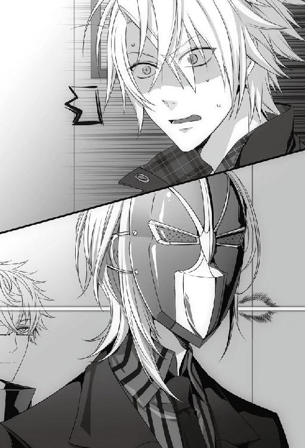
「とりあえず上がらせてもらっていいかな」
「え、ちょっ......」
止めようとする彼の手を振り払い、勝手に部屋に上がった。慌てたように彼が後から追いかけてくる。
柔らかな色調で統一されたワンルームの部屋は、彼女らしく可愛らしい雰囲気だった。見回す必要もなく、彼女を見つける。
奥の壁に寄せられたベッドの上で、彼女は上半身を起こしていた。頬が少し赤い。きっとまだ熱があるのだろう。
僕を見つけて慌てて起きだそうとしたので、
「......起きてこなくていいよ」
やんわりと手で制した。彼女に気付かれないように、静かに吐息を吐き出した。よかった。彼女が無事で、本当によかった。
ひとまず、彼女の無事が確認できたため、一番の心配事はなくなった。
そうすると俄然気になるのは、後ろで僕たちを見ている彼の存在だ。
「それより説明して。これはどういうこと？ こいつは誰なの？」
落ち着け、と自分に言い聞かせても、若干声に刺々しさが残る。
彼女は僕を見上げたままぽかんと口を開け、何も言わない。何でもいいから言ってほしかった。黙っていられると悪いことを考えてしまいそうで怖かった。
「おい。彼は一体何者なんだ？ ......おまえの彼氏なのか？」
「ねえ。彼は君の何なの。どうしてここにいるの？」
事情を説明してほしいのは僕だけではなかったらしく、得体の知れない彼と声が重なった。彼と気が合ったところで何も嬉しくない。
それは向こうも同じようで、ドアを開けた瞬間とは態度が変化していた。目を鋭く細め、僕を胡乱げな男のように見つめていた。
一触即発の空気に、「彼は兄弟です！」と彼女が慌てたように声を発した。
「......そういうこと。俺はこいつの兄だ」
彼女に兄がいるだなんて、聞いたことがない。
「それで、君は何者なんだ？ 寝込んでいる妹に対して何かのジョークのつもり？」
「はっ......ジョークで見舞いに来ると思う!?」
兄だと紹介された彼は、なおも訝しげに僕を睨み付ける。その目が妹を守る兄以上のものに見えてしまうのは僕の錯覚だろうか。
「......イッキュウ。まずは冷静になれ。そして早急にそのマスクを脱いだ方がいいだろう」
ほとんど喧嘩越しになっていた僕の肩を、ケンが後ろから叩いた。
「マスク？ ......ああ、このマスクか」
そういえば、すっかり忘れていた。一度つけてしまうと案外フィットしていて違和感がない。もちろん、今日みたいな緊急事態でしか忘れるなどあり得ないが。
「......ふう。暑かった。で、話の続きだけど......」
「......イッキュウ、そう逸るな。彼女が驚いているだろう」
どこか笑いを含んだような溜息をつかれ、むっとケンを振り返る。確かに彼女はまだ驚いた顔のままだったが、今はそれどころではない。
「ああ君、悪く思わないでやってくれ。このマスクはこいつなりの気遣いだそうでね」
ケンは僕に構わず彼女へと話しかけた。
「マスクが何の気遣いになるのかと思うだろう？ だがこいつにはそれで理屈が通じているらしい。君も知っているだろう、例の力のことだよ。こいつは例の力が途中で発動して女の軍団に囲まれることがないよう完全防備で出てきたのだそうだ」
そうだ、も何も、このマスクの案を出してきたのはケンだ。まるで僕が一人で思い付いて行動に移したかのように語られても困る。しかし、一々突っ込むと余計に面倒なことになりそうだったのでやむなく黙っておくことにした。
「イッキュウにとっては万が一にも外れてしまうことはないこのマスクが防具に見えるらしい。理屈に納得できるかはともかく、今日だけは絶対に妨害されたくないという男心は理解してやってほしい。もちろん、ハタから見れば笑い話だがな」
からかい半分だとは思っていたが、これは三分の二以上ふざけていたのかもしれない。溜息は零れたが、自らケンの策に乗ってしまった後で今さらどうこう言っても仕方がない。
ふざけた気持ちもあっただろうが、ケンもケンなりに僕のためを思ってしてくれたことに違いはない。
「フフ、驚いたかい？ それは悪いことをしたね」
上手く自分の中で折り合いをつけようと思った気持ちが、ケンのひと言で吹き飛んだ。
実際、このマスクのおかげで女の子には捕まらなかった。......危うく警察を呼ばれそうにはなったが。
「......ちょっと待って、少し話をまとめてもいいかな？」
じっとケンと彼女の話に耳を傾けていた彼女の兄が、困惑した様子で口を挟んだ。無理もない。彼は僕の目のことも何も知らないのだから、今の説明だけでわかるはずがない。
「要するに、覆面の彼は不審者ではなく、こいつの彼氏なんだな？」
聞きながらも、彼の視線にはまだ疑いの色が含まれていた。
「ああ。彼の名前はイッキュウという。ぜひ呼び捨てにしてやってくれ」
「イッキだ。悪いけど、イッキュウって呼ぶのは絶対にやめてくれ」
ケンの言葉にすかさず被せる。どうもケンには僕が嫌がる様子を見て楽しむという悪癖がある。
軽く睨み付けてもどこ吹く風で、ケンは説明を続けた。
「私はイッキュウの友人で、ケントという。ここに来たのは単なる付き添いだ」
「俺は、こいつの義兄のトーマです」
ようやく警戒心を解き始めたのか、トーマと名乗った彼は少し彼女の方を振り返ってから、口元に笑みを浮かべた。
義理の兄......。彼女と知り合ってからの時間はそれなりに長いつもりだが、今まで彼女の口からトーマ君の話が出たことは一度もない。付き合い始めて二ヶ月では、義兄の話までは出ないものだろうか。
僕の疑問に気付いたわけではないだろうが、トーマ君が言葉を付け足した。
「正確に言えば、俺の母の離婚した元夫が彼女の父で、その父の離婚した元妻の娘が彼女です。つまり彼女と俺に血縁関係はないけど、俺はこいつを義妹だと思ってよく面倒を見てます」
「............」
早口で説明され、理解が追いつかない。聞いたままを想像すると、今現在、トーマ君は彼女の義兄ではないことになってしまった。
「......悪いけど、もう一回説明してくれないかな」
「あ......そうか。つまり......」
「いや、大丈夫だ。私は理解した。よければ、私の方から噛み砕いて説明しよう」
「......頼むよ」
二度同じ人物からの説明を受けるよりは、違う人間の口で語られた方がわかりやすい。ケンに頷いて見せると、トーマ君も異論はないのか「お願いします」とケンに説明役を譲った。
コホンと咳払いをしてから、講義でも始めるかのようにケンは彼女とトーマ君の間に立つ。
「まず、彼らはもともと何ら関係を持たない他人同士だった」
ホワイトボードがないのが残念だとばかりに、ケンは手のひらで彼女たちを指しながら説明を続ける。
「だがそれぞれの両親が離婚し、のちにトーマ君の母君と彼女の父君が再婚した。その時点で二人の関係は義兄妹だ。血縁関係はなくとも、戸籍上は兄妹となっていた」
ここまではいい。よく、とまでいかなくてもあり得る話だ。問題はここから。
「だが、再婚した両親は再び離婚し、二人の間には戸籍上の関係もなくなった。よって現在の二人は血縁的にも戸籍的にも赤の他人だが、義兄君は今も彼女を義妹だと考えている」
説明を終えると、ケンは鉄仮面のような顔を僅かに綻ばせた。愛想笑いではなく、説明作業に満足した笑みだった。
「どうかな？ 私はこう理解したんだが、解釈は合っているかい？」
「そのとおりです。ひとつ付け足すなら、俺の母も彼女の父も、すでに三度目の結婚をしてる。二人とも、どうしても一人に定められない性格らしい」
「......はあ。何とも誠意のない人たちだね」
そうとしか言いようがない。トーマ君も同意見なのか、自分の母親のことにもかかわらずひょいと肩を竦めただけだった。
「とにかく、事情は理解したよ」
結局は初めに理解したとおり、トーマ君は今は彼女の義兄ではないということだ。つまりは赤の他人。気持ち的に家族だと言われようと、血の繋がりがないことが引っかかる。
他人というのなら、僕だって立場は同じはずなのに、どうして彼女はトーマ君を選んだのか。自分でもどこにそんなドロドロした感情が潜んでいたのかというくらい、腸が煮えくり返る思いがした。
「血や戸籍上の繋がりはともかく、実質的には彼女のお義兄さんだと思っていいんだね」
心の内はひとまず押し隠し、牽制するように問う。
「そういうことです」
トーマ君は裏表を感じさせない好青年の見本みたいな笑顔で頷いた。どこまで、この笑顔を信用してもいいのだろうか。いや、問題はトーマ君自身がどう思っているかではない。彼女にとって、彼がどんな存在なのかが問題だ。
確かに、僕はまだ彼女に相談事も持ちかけてもらえないほど頼りないカレシだ。それでも、ただの他人よりは距離が近い気でいた。そこにダークホースの登場だ。
彼女が病気になった際、助けを求めたのが自分ではないことが、思った以上にショックだった。
「昨日から、こいつの世話をするために泊まり込んでます。いくぶん、熱は下がったみたいなんですが、まだ目眩がひどいようで」
「そっか......泊まり込みで彼女の看病をしてくれてたんだ」
頬が痙攣したように引きつるのを感じる。
二人の複雑な関係を聞かずにただ兄だと聞いていたら、たぶん好感を持てた。しかし、他人だと聞いてしまってから、彼女と懇意にしている男が自分の恋人の家に泊まり込んでいたと言われれば心中穏やかでいられるわけがない。
トーマ君は本当に義妹のことが心配で寝ずの看病をしてくれたのだろう。微かに目の下にクマがある様子からもそれは窺い知れる。トーマ君は悪くない。むしろ僕は、彼女に一人で辛い思いをさせないでくれてありがとうと感謝する立場にある。
──頭でわかってはいても、心がついてこない。
意識的に息を深く吸い込んで、落ち着こうとした。どんなに心の中が荒んでいようと、ここは大人な対応をすべきところだ。
引きつる唇を何とか引き上げて、トーマ君に笑いかける。彼は彼女の義兄だ。家族だ、と自分に言い聞かせながら手を差し出した。
「それじゃ......改めて初めまして。彼女とお付き合いをさせてもらっているイッキと言います。まだ在学中の身ですが、誠実にお付き合いしているつもりです。どうぞよろしくお願いします」
「え？ ああ......丁寧にどうも」
幾分戸惑った様子ながら、トーマ君はしっかりと僕の手を握り返した。
今の挨拶で、彼は僕の立場を正しく理解してくれただろうか。してくれないと困る。
「義妹が世話になってます。でもそんなに改まらないでください。多分、俺の方が年下ですから」
「そうかもしれませんね。それじゃ、お言葉に甘えて砕けた口調にさせてもらいます」
年下らしい、謙遜したような笑みに僕もにこりと笑顔を返した。やはり、彼はいい青年だ。僕は年上の恋人らしく、落ち着いた態度を保ったままでいようと心に決めた。
「でさ、後の世話は僕がやるんで、もう帰ってもらっていいかな」
決めたはずなのに、口を突いて出たのは覆い隠したはずの本心だった。案外、僕も大人げない。
「......え？」
「気持ち的には義妹だって言われても、実際は他人なんでしょう？ 彼女の家に他の男が泊まってるって正直いい気分じゃないんだよね」
一度口を開くと、すらすらと本音が漏れ出した。これでは呆れられても仕方がない。
案の定、僕のストレートな物言いに、トーマ君は戸惑ったような表情を浮かべていた。
いきなり年上の男から大人げないことを言われたら、誰だって困惑するだろう。それも、トーマ君は義妹の看病をしに来て感謝されて然るべきところを、まるきり邪魔者扱いだ。
理性はもうやめておけと言うのに、僕の口は止まらない。
「んー......えっとね、これはただのやきもちだと思ってくれていいよ。義妹の看病をしてたお義兄さんに何て失礼なことを言うんだってなじってくれてもいい。でも、同じ他人ならどうして一番に僕を頼ってくれなかったんだって、今猛烈に妬いてるんだ」
そこまで言うと、トーマ君は幾分顰めていた眉根を解いた。
男の嫉妬は醜いが、同じ男として理解してくれたのかもしれない。
「そういうわけで、後の看病は僕に任せてもらってもいい？」
トーマ君は返事の代わりに彼女の方を振り返る。僕も彼女の方に視線を投げた。話に参加していなかったケンまでも彼女を見つめるものだから、彼女は三人から無言の圧力をかけられる形になってしまった。
「............」
「............」
「............」
時間がだけが過ぎていく。
彼女は考えをまとめるように空を見つめてから、
「......じゃあ、イッキさんお願いします」
僕を選んでくれた。心底、ほっとした。この場面でトーマ君を選ばれたりしたら、当分立ち直れなかっただろう。
「......うん。そうさせて」
びっくりするくらい、嵐のように荒れていた心が落ち着いていくのがわかる。情けない。
「トーマ君、失礼なことを言ってごめん。決して君が不埒なことをすると思ってるわけじゃないんだ。でも何て言うか......理屈じゃなくてね」
「......気持ちはわからなくもないです。こっちも少し、配慮に欠けてました」
苦笑しながらも、トーマ君はあっさりと引いてくれた。これでは、彼の方がよっぽど大人だ。
「じゃ、俺は帰るかな。おい、無理するんじゃないぞ」
彼女はトーマ君の言葉に素直に頷いている。あまりこの二人のツーショットは心臓によくないから見ないようにしようと心に決めた。
「ならば、私も帰ろう。イッキュウ、彼女に無理なことをしないように」
トーマ君が玄関に向かったのに合わせて、ケンも踵を返す。冗談ともつかない言葉に苦笑が漏れた。
「......もちろん、看病に徹するよ。二人とも、ありがと」
「また会おう。君もな」
二人がいなくなると、途端に部屋が広く感じられた。ワンルームに大の男が三人もいたのだから、狭く感じても無理はない。
思ったよりも静かな時間に、彼女が一瞬身構えたのがわかった。ようやく僕と二人きりだという事実に気が付いたらしい。
「さてと......どんなイタズラから始めようかな」
ゆっくりと振り返りながら、わざとらしく片方の口角を上げた。
彼女の緊張を解きたくて言った冗談を真に受けたように、彼女はぎょっと布団を引き寄せた。
「......はっ、冗談だよ。ほんとにちゃんと看病する」
『本当ですか？』と言うように、彼女が布団から半分だけ顔を出した。あまり可愛いことをされると邪心が顔を覗かせるからやめてほしい。
ほんの一瞬前まで嫉妬で狂ってしまいそうなほどだったくせに、今は彼女と二人で過ごせるこの時間が愛おしいとさえ思えた。我ながら現金だ。
「で、何か欲しい物はある？ 必要な物があれば買ってくるよ。ええと......薬とか食料とか最低限の物はトーマ君がそろえてくれてるのかな」
長方形のローテーブルの上には、ドラッグストアやスーパーの袋がいくつか置かれていた。袋の中を探ると、風邪薬はもちろん、熱を冷ますのに役立つシートや氷枕、レトルトのおかゆから桃の缶詰とありとあらゆる看病セットが揃っていた。この分だとたぶん、冷蔵庫にはプリンやヨーグルトの類いもあるだろう。
どうやらトーマ君はよく気が付くタイプらしい。
彼女はなおもちょっと不安そうにこちらを見上げていた。その小動物みたいな様子が可愛くて、口元が勝手に緩んでしまう。
「......ま、看病とは言っても見たところもう結構元気になってるみたいだね。熱も大分下がったって言ってたっけ」
ベッドの脇に膝をついて、彼女の顔を覗き込む。まだ頬は少し赤かったが、辛そうには見えない。
「......どれどれ？」
ベッドに乗り上げるようにして額を触れ合わせた。触れ合った額から、やや高めの体温が伝わって来る。
「......うん、確かにそれほど高熱ってわけじゃないね。低くもないけど」
彼女はベッドの中から僕の瞳を見上げていた。
「............」
その澄んだ瞳を見つめていると、僕の方が癒されていくような気すらしてくる。これではどちらが看病する側かわからない。
「......心配したよ」
額を離し、彼女の前髪をそっと掻き上げた。さらさらと指の間から髪が零れ落ちる感触が心地よい。
「高熱が出て休みだって言うし、メールしても電話しても反応ないし。ほんとに......心配した」
思ったよりも彼女が元気そうで、本当に良かった。
「あの格好だってさ、本当はむちゃくちゃだってわかってたんだよ？ ケンの奴、僕が焦ってるのにつけ込んで遊ぼうとしてるなって......当然わかってたよ。でも、どうしてもあの子たちに引き留められたくなかったんだ」
ぽす、と彼女の肩口に頭を置くと、彼女の規則正しい呼吸が聞こえてきて酷く安心した。
ケンのおふさざけに付き合わされたかいもあって、女の子たちに捕まることはなかったから、遊ばれたのだとしてもやはりケンには感謝していた。
「一秒でも早く顔が見たくて、バイト中もずっと焦っててさ。散々失敗して店長に怒鳴られた。明日は僕、基礎トレコースかもな」
我ながら、今日の働きぶりは酷かったと思う。ワカさんじゃなくとも、あれは雷を落としたくなるレベルだ。
今だからこうして笑って言えるけれど、彼女と連絡がつかない時点では不安と焦りでいっぱいで何も考えられなかった。それだけ、僕の心を占める彼女の割合は大きい。
「でも、思ったより元気そうで、ほんとによかった......。恥さらしてでも駆けつけてよかった。二人きりになれて、よかった......」
彼女は何も言わない。ただ黙って、僕の話に耳を傾けていた。
この部屋に駆け付けた時のことを思い出して、頭を上げてそっと彼女の顔色を窺う。
「あー......トーマ君を見た時は本気で焦ったけどね。おかげで恥の上塗りをしたよ。でも、トーマ君とは何でもないんだよね。気にする必要ないよね」
みっともないとわかってるのに、まだ確かめずにはいられない。彼女の口から、はっきりと否定してほしかった。全く余裕のない自分に溜息が零れる。
「......信じられないな、自分がこんなみっともないことするなんて。君といるとおかしくなる。でも、君といると嬉しくなる......」
こんな感情、知らなかった。彼女と一緒に過ごすようになって、初めて知ったものだ。
「君の声を聞いてるだけで、君が息をしてるのを聞いてるだけで、気持ちが落ち着いてきて......君の傍にいるのが幸せになる。──だから、君に会いたくてバカなこともしちゃうんだ」
すり寄るようにして顔を横向けると、間近で彼女の瞳と視線がぶつかった。僕を特別な目で見ないでいてくれる、唯一の瞳。この瞳を守るためだったら、何でもできる気がした。
これ以上情けないところを見せたくなくて、顔を隠すように布団に頭を埋めた。
「......恰好悪いな、僕」
しばらく顔を隠したままでいると、彼女が戸惑いがちに口を開いた。
「......イッキさんは私が好きなんですか？」
真剣そのものの問い掛けに驚き、目を見開く。
「......好きだよ。そう言ったじゃない」
どうしようもないくらい好きだから、こんなにみっともないところを見せている。彼女の目に、僕はどう映っていたのだろう。
「今でも信じられない？ これでも僕なりにすごく大事にしてるつもりなんだけど。まだ足りない？ まだ信じてもらえない？」
体を起こし、真正面から見下ろすようにして彼女と視線を合わせた。彼女の瞳はやっぱり透明で、冗談で言っている様子は見られない。
「......ねえ、もしかしてそれ、ずっと聞きたかったの？」
冗談じゃないとわかるから、胸が痛んだ。どうして僕は、彼女を不安にさせてしまうのだろう。どうしたら、この気持ちが彼女に伝わるのかまだわからない。
「......疑ってるならもう一度言っておくよ」
そっと彼女の頬に触れる。まだ少し熱のある頬は熱くて柔らかかった。
「あのね、言っとくけど恥ずかしいからあんまり何度も言いたくないんだよ、これ」
本当に好きな人への告白は酷く緊張するのだと知ったのも、彼女を好きになってからだった。と言うよりも、自分から告白したのは、彼女が初めてで──最後になる予定だ。
どうか僕の気持ちが彼女に届きますように。強く願いながら言葉にする。
「............君が、好きだよ。これが好きってことなんだと思う」
彼女がいなかったら、僕はきっと人を好きになるということがどういうことだかわからないままだっただろう。
彼女に出会ったから、『好き』という感情がこんなにも苦しくて辛くて、でもその倍以上楽しくて幸せなのだと知ることができた。
──君に僕の言葉が届かないのは、今までたくさんの女の子に嘘をついてきた罰なのかな。
自業自得だと言われても仕方ないくらい、僕は今までたくさんの女の子に愛を語ってきた。でも、本当の意味での初恋は彼女なのだと思う。
「他の女の子たちに囲まれてても、君のことしか考えてない。君にしか触れたいと思ってないよ」
僕の祈りが通じたかはわからない。でも、彼女は僕から目を逸らすことなく黙って告白を聞いてくれた。
何かもっと言い足した方がいいのか、言い訳もしておくべきだろうか。
自分から告白したことなどないから、どうしたらいいかわからない。思った以上に照れ臭くて、いつものように軽口で誤魔化したくなったが、何とか羞恥に堪えた。今ここで茶化すほど、僕も馬鹿ではない。
「............ハイ、告白終わり」
彼女の視線から逃げるように、さっと立ち上がる。
気が付くと、カーテンの引かれていない窓からオレンジ色の日が差し込んできていた。もうすぐ夜が来る。
「......もう、日が沈みそうだね」
静かにカーテンを閉じてから、彼女に向き直る。
「あのさ、今日はこのまま泊まっていってもいいかな」
彼女の目が驚いたように見開かれる。自分の普段の行動から警戒されても仕方がないが、つい苦笑してしまう。
純粋に、彼女の傍にいたかった。体調も心配だし、病気の彼女を暗い部屋で一人にしたくなかった。
「あー......もちろん何もしないよ。当然、床で寝る。まだ熱のある君を一人で寝かせておくのが心配なだけ。夜中にまた熱が上がるかもしれないでしょう」
ベッドサイドに戻って視線を合わせても、彼女は困ったような顔をしていた。
「んー......信じられないかな」
信じてくれと言うのは簡単だが、こればかりは彼女の心の持ちようだから強要することはできない。
彼女にまで詭弁を使うのは憚られたが、それで彼女が安心するならば嘘も方便だ。
「あのね、これ点数稼ぎだから。君が弱ってる時にはいい顔しときたいじゃない？ だから、絶対に襲ったりしないよ。ここで何かしたら嫌われるの目に見えてるしね」
彼女にとってわかりやすい構図を口にすると、あからさまに彼女の緊張が解けるのがわかった。逆に、僕が心配してしまうくらい素直過ぎる反応だ。
僕相手だからいいけれど、と心の中で苦笑いする。
「どう？ ただ信じてって言うよりよっぽど信頼できる理由だと思うけど。やっぱり信用できない？」
「じゃあ......お願いします」
「ん、じゃあそうさせてもらう」
彼女を一人にせずに済むことに、ほっとした。
「とりあえず、夕飯でも作ろうかな。何なら食べられそう？ おかゆ？ もっとしっかりしたのでも平気？」
彼女に断りを入れてから冷蔵庫を開けると、やはりそこにはプリンが並んでいた。それを脇に避けてしまったのは、ヤキモチからなんかじゃないと思いたい。
「たくさん甘えてよ。で、僕のこと好きになってくれると嬉しいんだけど」
彼女に背を向けたまま、静かに冷蔵庫の扉を閉める。
「......あと、半月しかないからさ」
漏らした呟きは小さすぎて、きっと彼女の耳には届かなかった。
８月15日
カーテンの隙間から差し込む朝日でぼんやりと目が覚めた。
見慣れない室内の雰囲気に数回瞬きを繰り返してから、彼女の部屋に泊まったことを思い出す。彼女が眠った後も、しばらくは額に乗せるタオルを交換していたのだが、いつの間にかベッドサイドでもたれるようにして眠ってしまっていたらしい。
彼女はまだ眠っている。起こさないように静かに彼女の顔を覗き込んだ。規則正しい呼吸を繰り返す彼女の顔色は、昨日よりずっとよくなっている。
そっと額に手で触れると、熱ももうほとんどないようで安心した。
「よかった......」
念のためもう一度だけ額のタオルを冷たいものと交換すると、彼女の口元が笑みを形作る。冷たくて気持ちいいのだろう。それだけで、看病疲れなんて消し飛んでしまうから不思議だ。
彼女の目が覚めた時、簡単に口にできそうなものを適当に用意して冷蔵庫に入れておいた。すぐには気付かないかもしれないから、ローテーブルの上にメモも残しておく。
外が完全に明るくなっても、彼女は気持ち良さそうな寝息を立てて眠っていた。もう少しだけその寝顔を見つめていようと、時計を気にしながらもベッド脇に膝をついた。
こういう小さな幸せがずっと続けばいい。彼女にとってすれば、具合が悪いのだから幸せも何もないかもしれないが、僕は間違いなく幸せを感じていた。
本当は彼女が完全に治るまで看病を続けたかったが、そうも言っていられない。
よく眠っている彼女を起こすのは憚られたが、黙って出て行くわけにもいかない。誰かが内側から鍵を閉める必要があるのだ。
「......ねえ、悪いけどちょっとだけ起きてもらっていい？」
少し粘りすぎたかもしれない。時刻は午前九時を回っていて、急いでバイトに向かわないと朝礼に間に合いそうもない。
声をかけると、幸いすぐに彼女は目を覚ましてくれた。
「おはよ、気分はどう？」
彼女は瞬きを繰り返しながら、僕の顔を見て首を傾げた。まだ寝ぼけているのかもしれない。
「......ぼうっとしてるね。惜しいことしたな、キスして起こせばよかった。......？ 何で宙を見上げてるの？」
話しかけているのは僕なのに、彼女は何もない方を熱心に見つめている。
「君って、寝起き悪い方？ あ、言っとくけど、キスは冗談だよ？」
モーニングコールをした時も思ったが、やっぱり朝は少し苦手なのかもしれない。
「それより、僕はそろそろバイトに行かなきゃいけない時間なんだよね」
時計を確認して、ひやりとする。これは本気で走らないと遅刻だ。
「一人でも平気？ あ、君はもう一日休みだから。ワカさんには僕から言っとくよ」
彼女はまだ半分くらい寝ぼけているような顔をしたまま、頷いた。この様子だと、僕が出た後もきっとすぐに寝直すことだろう。
「今晩は用事があって来られないんだけど、何かあったら電話して。トーマ君じゃなくて、僕に電話ね」
彼女の携帯電話は電池が切れてしまっていたので、悪いとは思ったけど昨夜のうちに充電をさせてもらった。道理で電話もメールも通じないわけだ。
彼女の枕元に携帯を置いて、念を押すように言い含めてから玄関に向かう。
「それじゃ、またバイトで。あ、悪いけど、僕が出た後玄関の鍵だけ閉めといて」
いってきますのキスができたらいいのに、と夢を思い描きながら彼女の部屋を後にした。
８月16日
朝、冥土の羊に行くと、すでに彼女が出勤していた。顔色も良く、すっかり体調もよくなったようだ。
「よかった。バイトに出てるってことは、もう完治したってことだよね？」
「はい。......その節はお世話になりました」
彼女は僕に向かって丁寧に頭を下げた。
これは株が上がったと思っていいのか否か。もちろん、株上げのために看病をしたわけではない。純粋に彼女が心配だったからなのだが、そのついでに好感度がアップしたならばそれはそれで嬉しい。
「どういたしまして。君が元気になったならそれが何よりだよ。もちろん、何か色っぽいお礼をしてくれても大歓迎だけど」
冗談めかして言うと、そんな話は聞いていないとばかりに驚愕した顔をされて笑った。
「ごめんごめん、冗談だよ。そんな顔しないでよ。あ......」
もうちょっと彼女と会話をしていたかったが、シンの不機嫌そうな視線が向けられたので早々に話を切り上げた。
「じゃあ、また後でね。あんまり長話してるとまたシンに怒られちゃうから」
彼女にだけ聞こえるように耳元で囁いてから、
「シン、おはよ」
何事もなかったかのように挨拶をして更衣室へ向かった。
彼女が元気になった。それだけで、心が弾む。
「では、諸君。朝礼を始める」
ワカさんは挨拶をするなり、体ごと彼女の方に向き直った。その三拍で向き直った無駄のない動きは、どこか軍隊を思わせる。
「まずは、自己管理には気をつけろと日頃あれほど言っているにもかかわらず、高熱を出した貴様！ 貴様には、今日の午前中みっちりと基礎トレをやってもらう」
──可哀想に。
同情はするものの、僕も昨日みっちりと基礎トレをやり直した身なので、助け船の出しようがない。
「イッキ！ シン！ 私がこいつをしごいている間、店は任せるぞ」
「......イエス・サー！」
僕とシンの声が重なる。
「では、すみやかに出撃！」
ちらりとシンを見ると、シンも彼女に同情的な視線を向けていた。しかしすぐに背を向けてキッチンへと入って行った。気持ちはわかる。触らぬワカさんに祟りなし、だ。
どうしてあげることもできないだけに、彼女のことが心配だった。
バックヤードへと向かいながら事務所の方を振り返ると、一瞬だけ彼女と目が合う。でもそれも本当に短い間のことで、ワカさんの背中が彼女を隠すようにして視界を塞いだ。
「貴様は午前中ここで私と二人きりだ。文句はあるまいな」
有無を言わさぬワカさんの声が聞こえて来て、僕は心の中で彼女にエールを送った。
彼女には悪いが、今日のバイトは妙に楽しかった。
「声が小さい！」
「きゃ、客は敵です！」
「もっと腹から声を出せ！」
「客は、敵です！」
「そんな声の出し方では、あっという間に喉が嗄れて客を悩殺できなくなるぞ！」
キッチンにいると、彼女の必死な声とワカさんの怒号がよく聞こえた。
止めないとと思うのに、どうしてもくすくすと笑ってしまう。きっと、彼女は真っ赤な顔で頑張っているのだろう。
「......先輩、いい加減にしてもらえませんか」
「え？」
料理の置かれるカウンターにもたれていると、キッチンからシンに声をかけられた。シンはフライパンを操る手を止めずに横目で僕を見た。
「料理もまだ出てないのにそこに居座られると、正直邪魔です」
「いいじゃない。フロアに出ても今日そんなに混んでないから仕事ないんだし」
「だったらシルバーでも磨いてたらどうですか。......彼女の声が聞きたいからって、にやにや笑いながらこっち覗かれてると薄気味悪いです」
「薄気味悪いって......もうちょっと言い方あるでしょ、シン」
「ありません。自覚がないんだとしたら、相当重傷ですよ」
ドン、と目の前にトマトパスタを置かれ、苦笑しながらそれを受け取った。
「伸びる前に運んでくださいね」
「はいはい。さすがに職務怠慢にまではならないよ」
「............」
冷たいシンの視線を受け流して背を向けると、
「コアマッスルに意識を集中するんだ！ 大切なのは腹筋だ！」
「はい！ ......客は、敵です！」
「大声を出して自分を励ませ！ ワンモアセッ！」
「客は、敵です！！」
レアな彼女の大きな声が響いてきた。やっぱりその声は可愛くて、思わず吹き出してしまう。
「......先輩」
「わかってる。行きます、行くよ？」
彼女の声を聞くだけで、顔が笑ってしまう。これでは、シンに睨まれても文句は言えそうにない。
バイトのシフトを終え、夕焼けが照らす路地を彼女と二人で歩く。
ワカさんの強化特訓を受けたせいか、彼女はいつもより少しだけ疲れた顔をしていた。その特訓の声を楽しんでいた身としては、少し申し訳ない気もする。
「......いやあ、今日は災難だったね。声、キッチンまで聞こえてきてたよ。大変だったでしょ？」
言いながらも、彼女の必死な叫び声を思い出して笑いそうになる。彼女の手前どうにか堪えたが、油断するとまたすぐ笑ってしまいそうだった。
「あれ、疲れるっていうのもあるけど精神的に来るよね」
真面目な顔で大きく頷いた彼女を、一瞬本気で抱き締めそうになった。それくらい、可愛いかった。
たまに、自分の理性を褒めてやりたくなる。
「ま、個人的には楽しかったけどね。キッチンにいる間中、君の声聞いてられたから。必死で訓練受けてる君のこと想像してずっと笑ってたよ」
彼女は責めるような目で僕を見上げた。ほんのりと頬が色づいている。
「それでついついキッチンに居着いちゃってね。僕がシンに怒られた。ははっ」
あまり可愛い顔をされると、僕も理性と戦わなくてはいけなくなるからやや辛い。でも、彼女の方から顔を背けてくれたからどうにか理性が保たれた。
「なんかさ、君の声聞いていると落ち着くし、楽しいんだよね。自分でも不思議なんだけどね」
映画や本の中で語られる『幸せ』というものは、いつも実体がなくぼんやりとしていてよくわからなかった。それが今ならわかる。今、この時間のことを、きっと人は幸せと言うのだろう。
「まあ、今日はこれ以上何もしないでゆっくり休んで。病み上がりなんだからね。一応、体力的にきついようなトレーニングじゃないはずだけど、もし具合悪くなったら連絡して」
もう怒っていないのか、彼女は思ったよりも素直に頷いた。そういえば、少し前まで僕の半歩後ろをついて歩くようにしていたのに、今はきちんと僕の横を歩いている。半歩分、彼女に近付けたのかなと思うと、胸にあたたかいものが広がった。
「三日後には合宿だしね。それまでには体調整えとかないと。具合悪いと合宿楽しめないし......」
あまり彼女が乗り気ではなかった合宿が、もうすぐやって来る。僕も前のめりで楽しみにしているわけじゃないが、どうせ行かなくてはいけないのなら、彼女と少しでも楽しい思い出を作りたいと考えていた。ただ、どうしても気になるのが、ＦＣの存在だ。合宿の間、彼女にちょっかいを出さないでいてくれるといいのだが。
「あのね。悪いけど、あの合宿では君に負担かけることもあると思うから。ちょっと覚悟しといて」
ミネが無理やり誘う形で、この合宿は決められた。できる限りＦＣと彼女を接触させたくなかった僕にも、この合宿は誤算だった。
「負担は、覚悟してます」
彼女は重々しい表情で頷いた。もう決まってしまったこととは言え、彼女の気持ちや身の安全を考えると、今からでも彼女の参加を取り消せないか手を回したくなる。しかし、今さらそんなことをすれば、それこそＦＣに彼女と僕の関係を勘ぐられることになるだろう。だから、参加に関して覆すことは難しかった。
合宿中、僕がずっと彼女を守ってあげられればよかったが、そう簡単なことではない。ＦＣの前で彼女を特別扱いする方が、彼女に危険が生じる可能性が高まってしまう。むしろ、合宿中はできる限り、二人きりでいるところを見られないようにした方がいいと思っている。
──見られないように、ではなく実際に近寄らなければいいのかもしれないが、僕の感情が必ず言うことを聞いてくれるわけではないから、それは計画のうちにいれないでいた。
「うん、ありがと。まあ、ミネもサワちゃんもいるし。彼女たちと一緒にいればいいよ」
さすがに一人ぼっちにならなければ、ＦＣの子も彼女に何かしようとは思わないはずだ。
話しているうちに、彼女のマンションに着いてしまった。
「それじゃ、また明日ね。ほんとに、ゆっくり休んで」
彼女がエレベーターに乗り込むまで見守ってから、背を向けた。
帰宅してドアを開けると、部屋の中は真っ暗だった。
一人暮らしなのだから当たり前だ。今さらそれを寂しいと自分が思うようになるとは思わなかった。これもきっと、彼女の影響だ。
彼女の柔らかい笑顔が、家に帰る度に見られたらすごく幸せだと思う。待っていてほしいなんて贅沢は言わない。一緒に帰ってくればいい。
彼女が僕と暮らす覚悟をしてくれれば叶うはずの夢だ。
玄関の電気をつけても、ぽっかりと胸に空いた穴は埋まらなかった。
彼女はもう眠っただろうか。また具合を悪くしていないだろうか。一人で無理をしていないだろうか。ひとつ考え始めると、次から次へと不安材料を思い付いてしまって駄目だった。
まだ靴も脱いでいないのに、携帯で彼女の番号を呼び出した。
「あ、僕だけど。まだ起きてた？」
『......起きてましたけど......あの......？』
不思議そうな彼女の声。どんな様子だろうと、彼女の声を聞くだけで空いた穴があたたかいもので埋められていく。
「こっちは今家に帰ったとこ。ていうか、まさに靴脱いでるとこ。具合どう？ もう寝てる？」
携帯を肩で挟んで会話を続けながら靴を脱いだ。そのまま上着も脱がずにベッドに横になる。
「まだ起きてるなら早く着替えてベッドに入ること。電話このままにして、用意できたら声かけて。君がちゃんと横になるまで監視するから電話を切らないように。ハイ、着替えて」
ちょっと口うるさいお母さんみたいだ。
彼女に嫌がられるかな、と思いながら返事を待っていると、
『......じゃあ、待っててください』
恥ずかしさを含んだ声で言われてドキリとした。
「ん。ごゆっくり」
余裕のあるような声を出してみせたが、本当は驚いていた。待ってて、なんて返事は反則な可愛さだと思う。
「ほんと、これが無自覚だから困る......」
受話器の向こうに届かないように呟いて、繋がったままの携帯に耳を傾けた。
コトン、と音がしたから、たぶん携帯はあのローテーブルに置いたのだろう。それから、パタパタという足音がして、どこかの部屋のドアを開ける音がした。すぐに水音が聞こえて来たから、顔を洗っているのだとわかった。
そっと目を閉じて、彼女の立てる音から、彼女の姿を想像した。彼女がこの部屋にいて、顔を洗ったり歯を磨いたりしている姿を想像するだけで、どうしようもなく幸せだった。
「ほんと......早くここに住んでくれたらいいのに」
受話器の向こうの彼女は、僕の呟きを聞けるはずもなくまだパタパタと、忙しなく眠る支度をしていた。
彼女から、あのマンションを立ち退かなくてはいけないと聞いたのは、付き合い始めてそれほど経っていない時だったと思う。
マンションまで送る道すがら、彼女が嫌に落ち込んでいるように見えたので話を振ると、父親から今のマンションを出て実家に戻って来るように言われていることを渋々ながら話してくれた。
今はその父親の家に彼女の継母がいることがわかっているが、当時は単純に遠くにある実家とだけ聞かされていた。
「......八月いっぱいまでは仕送りをするって言われてるんですけど......」
彼女は父親を相当嫌っているようで、援助を打ち切られても一人暮らしを続けられる道を探していた。
「ふうん、あのマンションを立ち退く期限ね......」
学生の身分で仕送りなしの一人暮らしは、経済的にかなり厳しい。彼女のマンションはワンルームだが広さはそこそこあるし、何よりも築浅だ。立地的にもそこそこの値段がする物件に思われた。
バイトのシフトをかなり詰め込んでいると思ったら、そんな事情があったのかと納得する。
「そんなの、君さえ覚悟を決めてくれたら、すぐにでも守ってあげるのに」
「......え......？」
「だからね、僕のマンションに一緒に住めばいいってこと。ルームシェアってことでね」
「......！」
僕の提案に、彼女は弾かれたように僕の顔を見て、すぐに大きく首を横に振った。
「そ、そんな......そんなことできません......！」
「でも現実問題、一人暮らしは無理なんだよね？ で、向こうの家には行きたくない。そうでしょ？」
「そう......ですけど」
「僕は就職も決まってるし生活は安定してるよ。同居相手には最適だ。唯一にして最大の問題は、襲われる危険性が非常に高いってことかな」
冗談に紛らわせて本気で誘うと、彼女は頬を赤くしながら僕を睨んだ。完全に拒絶する様子ではなく、僅かに迷いが見られた。そんな態度ではすぐに僕につけ込まれてしまうのに。
もちろん、好きな子に無理強いをする趣味はないから、両手を降参のポーズを取るように上げた。
「......まあ、君が嫌だって言うならそこはきちんと我慢するよ。信用するかどうかは君次第だけどね」
「............」
「......僕はそのくらいの覚悟があるよ。君は？ 僕が、信用できない？」
彼女はすぐに返事をせず、「考えさせてください」と俯いた。
あれから、彼女の心はどう変化していったのだろう。今の彼女は、あの時の彼女より少しは僕のことを好きになってくれたのだろうか──。
『あの、着替えてベッドに入りました』
突然、すぐ耳元で聞こえて来た彼女の声にドキリとした。耳に受話器を当てて待っていたのだから、近くで声がするのは当然だ。
「え？ ああ......ん、よくできました」
思い出から頭を切り離して、誤魔化すように返事を返す。
電話越しに、衣擦れの音が聞こえた。彼女は本当にこんな早い時間からベッドに入ってくれたらしい。こんなにも素直だと、僕に好意を持ってくれているのではないかと自惚れそうになる。
「......参ったな。本当に、ただ君がちゃんと休むように監視しようと思っただけなんだけど......電話越しに君が動いてる物音聞いて、君が今何してるのかって妄想してた。変態みたいだよね」
自分で自分を落ち着けようとしているのがわかった。
「一緒に話すのも楽しいけど、生活してる音っていいな。まるで君がこの家にいるみたいな気がした。これが妄想じゃなかったらもっといいのに......」
彼女が僕のことを好きになってくれて、一緒にこの家に住んでくれたらどんなにいいだろう。想像してみようと試みたが、まだ上手く絵を描けない。
「ん......それじゃあ、別に眠らなくてもいいけど横になってゆっくりしてて」
このまま「おやすみ」を言って電話を切ろうかと思った。でも、彼女のあたたかな空気に少しだけ甘えたいという弱い気持ちが頭をもたげた。
──まだ君と別れる前なのに、他の女の子からのアピールが多過ぎて困惑してる。
そんな話を彼女にしても、彼女を困らせるだけだ。わかっていても、僕は彼女に相談を持ちかける気なのか。
彼女の重荷になることが目に見えているのに、女の子たちの気持ちを自分一人では抱えきれなくなっていて口を開いてしまった。
「あのさ、電話したついでにちょっと話したいことがあるんだけど......」
『......何ですか？』と優しく促されて、ますます、弱い自分が勢いづく。
「今少し困ってることがあって......いや、困ってるって言うか......正直、参ってて」
実はね、と続けようとした僕を止めるように、携帯から短いプッシュ音が聞こえた。キャッチだ。
携帯を耳から離して画面を確認すると、見知らぬ番号が画面に表示されていた。思わず大きく溜息が漏れる。
「......ごめん、キャッチだ。多分長くなるから切るよ」
『あ、はい......』
「おやすみ。また明日、バイトで」
彼女の返事が聞こえるより前に、通話を切った。『おやすみなさい』という彼女の声を聞いてしまったら、この後の電話に出るのが嫌になってしまいそうだったから。
キャッチで割り込んできた電話はまだ鳴り続けている。
「......はい、僕だけど」
諦めて電話に出ると、テンションの高い女の子の声が聞こえた。
今話していたばかりなのに、もう彼女の声が聞きたいと心底思う。
８月17日
今朝の夢見は最悪だった。
本当なら、彼女のおやすみという声を聞いてから幸せに眠れるはずだったのに、割り込んできた一本の電話のせいで夢の内容ががらりと入れ替えられてしまった。
どうして今なの？ と言いたい気持ちを何とか抑えて、女の子の告白を聞いた。でも、僕には「ごめんね」と言うしか選択肢はなくて、電話の向こうで顔もよくわからない女の子は泣いていた。
最近、本当に告白されることが多い。まだ三ヶ月の期限は経っていないのに何故かはわからない。僕のことはそっとしておいてほしいのに、はっきりとそのひと言を言うこともできなくて、ストレスばかりが募っていく。
シフトを終えて事務所に入ると、ちょうど彼女が更衣室から出てきたところだった。すでに私服に着替え終わっている。
「あ、お疲れ様。もう上がるとこ？」
こくりと頷く彼女の口端に微笑を見た気がして、思わず泣きつきたくなった。
「あのさ......」
気付いた時には彼女を呼び止めていて、内心で酷く驚いた。
「昨日電話で言いかけた話したいことなんだけど、今日の夜にでも少し話できないかな。ちょっと本気でキツくて......」
彼女はすぐに昨夜の電話の件を思い出したらしく、頷いてくれた。彼女の目には、僕を気遣うような表情が微かに浮かんでいる。
その優しい顔を見て、何をやっているのだろうと我に返った。これは、彼女に背負ってもらう荷物じゃないはずだ。
「......んー......いや。やっぱりいいや。ごめん、忘れて。病み上がりの君に心配かけるほどのことじゃなかった。ごめん、何言ってんのかな僕」
誤魔化すように笑う僕を、彼女はなおも見つめ続ける。その視線から逃げるように、僕の方が先に目を逸らした。
「それより、今日も一緒に帰れそうにないんだ。悪いけど一人で帰ってくれる？ いつもどおり夜メールするよ」
これから僕が行かなくてはいけない『用事』のことなど、彼女には知られたくない。
「じゃ、また明日」
急いで更衣室へ逃げ込もうとした僕の背に、
「あの、何かあったんですか？」
彼女の声が追いついた。
「......あーいや」
咄嗟のことに上手い言い訳が見つからない。
「心配してくれてありがと。でも、ほんとに大したことじゃないから。悪いね、気にさせて」
顔を見返すこともできなくて、半分背中を向けたまま早口に言う。
「気をつけて帰ってね」
結局、最後まで彼女の顔を見ることはできなかった。
女の子に指定されたカフェは夜になるとバーになるタイプの店で、バイトを終えた時間帯にはすでにうっすらと照明がトーンダウンされていた。
携帯で時間を確認すると、約束の時間ぴったりだった。
暗い室内をサングラスを掛けたまま人を探すのは案外骨が折れる。ちゃんと行ったのだけどどこにいるのか見つけられなかった、と嘯いて帰ってしまいたかった。しかし、そんな小芝居を打つ時間もなく、奥の方の席にいた女の子が立ち上がるのが見えた。
その子に近付きながら、「──君がサナエちゃん？」と聞くと、
「は、はい。サナエです。よろしくお願いします......」
サナエちゃんは酷く緊張した面持ちで頭を下げた。
他の席からは上手いこと死角になるカウンター席の端っこに、サナエちゃんは座っていた。艶やかな黒髪をサイドで結んだ、どちらかというと大人しそうな子だ。女の子らしい白いシフォン生地のワンピースは、今年の夏には少し寒そうに見えた。
「あの......お忙しいのに今日は来てもらってすいません」
わざわざ一度椅子から降りると、サナエちゃんは僕に奥の椅子を勧めた。どうせすぐ立つことになるのだろうから、できれば手前の席に座りたかった。でも、そんな理由を口にできるわけもなく、「ありがと」と微笑を向けながら腰を下ろす。
「それで、今日はどうしたのかな」
コーヒーを注文してから、話を促す。
サナエちゃんは頬を赤くしてちらちらと僕の方に視線を寄越すばかりで、すぐに本題に入ろうとはしなかった。たぶん、コーヒーが運ばれてくるタイミングで告白したくないから、もう少し待ってほしいという合図だろう。それくらいの度量はあるつもりだから、僕も大人しく待った。
コーヒーが運ばれてきてしばらくすると、ようやくサナエちゃんが口を開く。
「......今、イッキさんに付き合ってる人がいるってことは知ってるんですけど、私......どうしても伝えたいことがあって......」
「......うん、何かな」
女の子たちが、彼女の存在を知らないわけがない。そんなことわかっていたはずなのに、改めて前置きされると心が一気に冷えていく。そのことに、サナエちゃんは気付かない。
「私......イッキさんのことが好きです。大好きです。今のカノジョさんより絶対に！ だから......」
「だから？」
「っ......だから、私と付き合ってもらえないでしょうか」
言うだけ言い切ると、サナエちゃんは恥ずかしそうに顔を俯かせた。
目の前で可愛い女の子が僕のために頬を赤らめている。それなのに、僕の頭の中はたくさんの「どうして」がぐるぐると回っていた。
──どうして、カノジョがいるって知ってるのに僕に告白するの？
告白する前から返事が見えているはずなのに、女の子たちは告白を止めない。好きなのだから仕方ないと言われたらそれまでだが、女の子たちからは僕がそんな簡単に違う女の子に靡くような男に見えているということだろうか。
「......気持ちは嬉しいよ、ありがとう」
心の中の疑問符は押し込めて、僕はにこりとサナエちゃんに微笑みかけた。その笑顔に、サナエちゃんはパッと顔を綻ばせた。
「でもごめんね。知ってるみたいだけど、僕には今付き合ってる子がいる。だから君と付き合うことはできないんだ。僕が三ヶ月間は同じ彼女と付き合うってこと、知ってるよね？」
「......はい、知ってます」
見る間にサナエちゃんの表情が暗く沈んでいく。その表情が、僕の心臓を締め付ける。僕の周りの空気だけが、突如として薄くなってしまったような錯覚に陥る。そんなはずはないのに。
「それなら、わかってくれるよね？ まだ彼女との期間は終わっていないから......」
「でも......っ！」
僕の言葉を遮るように、鋭くサナエちゃんが言う。
「今の彼女さんは......イッキさんに本気じゃないって聞きました。イッキさんが優しくしても、ちっともその気にならないって......！」
その気にならない、か。それなら、サナエちゃんは僕が優しくしたらすぐその気になるの？ と声に出してしまいそうだった。
「イッキさんを好きな気持ちでは私、誰にも負けてないつもりです！ だから、今の彼女となんか別れて......」
「んー......好きになってくれたのは嬉しいけど、ごめんね。それに、仮に今付き合ってる子が僕に夢中じゃなくても、付き合ってることには違いないでしょ？」
「でも......」
「うん、それでも、三ヶ月の間は彼女が僕の恋人だから。それは前の子もそうだったし......次の子もそうなんだよ」
次の子なんて、本当は考えたくない。彼女が、最初で最後の僕の想い人になってほしい。
でも、それを女の子たちに言うわけにもいかないから、僕の口はするすると嘘をつく。
「だからごめんね、サナエちゃん」
もう一度断ると、サナエちゃんの両目から大粒の涙が零れ始めた。涙は止まり方を知らないように、次から次へと頬を伝っていく。
「......これ、使って。返さなくていいから」
ハンカチを差し出すと、サナエちゃんはそれを手の中でぎゅっと握り混むだけで涙を拭こうとはしなかった。
ぼろぼろと落ちていく涙が、この店全体に雨を降らせているかのように空気が湿っていく。
「私......でもっ......イッキさんが、好き......なんです」
しゃくり上げながら、サナエちゃんが言う。
「どうし......ても、この気持ちに......応えては、もらえ......ない......ですか？」
途切れがちな問い掛けに、「ごめんね」と言う以外僕に何ができたろう。
──ねえ、どうしてこうなるってわかってたのに、告白したの？
涙を流す女の子を前にしていても、僕の心は冷たく揺らがない。ただ僕の周りの空気だけがどんどん薄くなっていくように息苦しかった。
泣かせているのは僕で、それをわかっていて涙を止めてあげようとしないのも僕。全ての責任が自分の肩にのしかかる重圧感に潰れてしまいそうになる。
息が苦しくて、水の中にいるみたいに呼吸が上手くできない。女の子たちが流す涙の海では、僕は泳ぎ方を知らない。今すぐ彼女に会わないと、このまま溺れ死んでしまいそうだ。彼女だけが、僕に呼吸の仕方を教えてくれる。
「こんなに......好きなのに......っ」
「うん......ごめんね」
サナエちゃんの涙は乾かない。泣くだけ泣ききったら、きっとその涙は止まる。早くその時が来ないだろうか。
「......私......死にたい......っ」
「............」
一瞬、涙に濡れた目でサナエちゃんが僕を見つめた。縋るような、甘えるような、絶望したような目で。
それが酷く重かった。
「ねえ、そんなに泣いたら目が溶けちゃうよ......」
重い。
「私......イッキさんがいないと......っ」
「うん......。ちょっと深呼吸してみようか」
重い。
「イッキさん......好き......好きなの......」
「......ありがとう。ほら、水を飲みなよ。涙がいっぱい零れちゃったからね」
──重いなあ。
女の子に優しくする声が、まるで自分のものではないように耳に届く。
今すぐ無責任にこの場を立ち去って、彼女に会いに行きたい。夜に家に押しかけて、ちょっと迷惑そうな顔で『何しに来たんですか』と門前払いをされても、きっと今よりはずっと幸せな気分に違いない。
「イッキさん......」
「うん......」
止まることを知らない女の子たちの涙が、きっといつか、僕を溺死させる。
ようやく家に帰り着けたのは、日付も変わろうという深夜だった。
「疲れた......」
何を言っても泣きじゃくるサナエちゃんを、どうにかなだめて家まで送っていった。幸い、彼女は実家暮らしでチャイムを鳴らすとすぐ母親らしき人が応対してくれた。泣き続けたままのサナエちゃんを母親の手に託し、少しの間は注意して見守ってあげてほしいと、僕が言う立場ではないなと思いながらもお願いして立ち去った。一人暮らしではなくて、本当によかった。
真っ直ぐキッチンに向かって、グラスにブランデーを注いだ。氷も入れずにそのまま呷る。唇の端からブランデーが零れ落ちてもかまわなかった。喉の奥を焼くような感触に、少しだけ気持ちが落ち着いた。
それも一瞬のことで、すぐにまた息苦しさを感じた。三口でグラスを干し、グラスを空にしてはボトルから注ぎたして、ボトルが空になるとまた次のボトルを開けた。
酔わないとやっていられない。やり場のない気持ちが溢れて、自分という存在が壊れてしまいそうだった。
酔いが回るのは早かった。キッチンで立ったまま飲むのがきつくなると、ソファに体を沈めてまた飲んだ。
ソファに横になろうとすると、ポケットの辺りに違和感を感じた。携帯電話だ。
乱暴に携帯をテーブルに投げ出して、しばらく見つめていた。
そういえば、夜にメールすると言ったのに、まだ彼女にメールをしていない。何て打ったらいいのか迷っているうちに、彼女の声が聞きたくなった。こんな酔った状態で電話をしたら嫌がられるだろうし迷惑だ。頭ではわかっているのに、どうしても彼女の声が聞きたくて仕方がない。
彼女の声が聞けたら全部が元通りになる気がして、縋るような思いで彼女の番号を呼び出していた。
コール音三回で電話は通じた。『はい』と言う彼女の声を聞いた途端、す、と空気が肺に流れ込むのを感じた。
「あー起きてた？ 悪いねーこんな時間に。声聞きたくて。とにかく聞きたくて」
戸惑ったような空気が伝わって来る。
「えーとね、なんかしゃべって。何でもいいから。昔話でいいよ。三〇分くらいしゃべってて。君の声聞いてないともう死ぬかも。本気で。だから酸素補給させて。適当でいいからさー」
自分でも馬鹿なことを言っている自覚はある。でも、今は酔ってるから許してほしい。
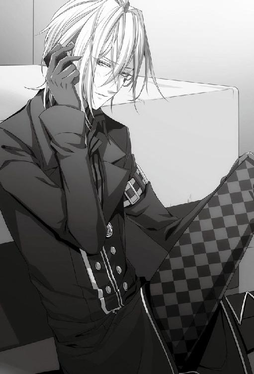
「ほんとは会いたいけどー。今は僕、襲わずにいる自信ないし。だからしゃべって。ほんと、適当に」
何でもいいから彼女の声が聞きたかった。優しくしてくれなくてもいい。ただ声が聞けたら、今のどうしようもない気持ちから抜け出せる気がした。
呆れられてしまったかな、と心配になるくらいの沈黙の後、
『......そっち行きましょうか......？』
心配そうな声が聞こえた。
「......え、来るって、うちに？ 危ないよ？ 夜道より僕が危ないよ？」
ぼんやりと酔っていた頭の中の霧が、さぁっと引いて行く。彼女に会いたい。
「──ほんとに、来てくれる？」
真剣に問うと、『はい』と思ったよりはっきりとした返事が返って来た。
彼女の優しさにつけ込むみたいだが、今は彼女に会いたくて会いたくて、多少ずるいと思っても引けなかった。
「それなら、せめて迎えに行かせて。待ってて。すぐ行くから。ほんと、すぐ行くから」
電話を切るより前に、玄関に向かっていた。
彼女に会いたい。
ただその気持ちだけで、突き進んでいた。
彼女に会えた瞬間はまだ少しお酒が残っていたせいもあって、いつもどおりを装うことができたと思う。でも、寒い夜道を歩くうちにどんどん頭が冷えていって、自分のマンションに帰り着く頃にはすっかり酔いが覚めてしまっていた。
「はい、どうぞ。いらっしゃい」
先ほどまでお酒を飲んでいた部屋にはまだ空けたボトルがそのままにしてあったから、以前、ケンと一緒に彼女が来てくれた部屋に通した。
「あー......なんか、夜道歩いたら少し酔いが覚めたよ。寒かったね。寒い中、歩かせてごめんね。あったかいコーヒー入れるから座ってて。ちょっと、酔ってるから手が覚束ないけど」
酔いが覚めてきているせいか居たたまれなくて、彼女の心配そうな目から逃げるようにして、キッチンに入った。
彼女にはコーヒーを、自分にはマグカップにまたブランデーを入れた。彼女の前でこんな醜態を曝して、今さら素面になど戻れない。
部屋に戻ると、彼女はベッドの端っこに腰を下ろしていた。彼女は無防備過ぎて、僕の方が困惑してしまう。
「──お待たせいたしました。執事の特製コーヒーです」
ふざけた口調でローテーブルにコーヒーを置く。
「......ってごめん、インスタントだけど。あったまるから、飲んで」
彼女が笑わないから、自分で笑ってマグカップを一口呷った。すっかり覚めてしまっていたから、早く酔いたかった。
彼女はコーヒーには手をつけようとせず、ベッドに座ったまま何か言いたげに僕を見上げていた。
「............」
何を話したらいいのかわからなくて、マグカップの中のブランデーを一気に飲み干す。空になったカップをテーブルに置くと、彼女は僕が飲んでいたものがお酒だと気付いたようで小さく目を見開いていた。
「......ねえ、今晩泊まってって。君がいなくなったら、今晩このまま息が止まって死ぬ」
彼女の肩を軽く押すと、簡単にベッドの上に倒れ込んだ。自分もベッドに俯せに倒れ込みながら、彼女が逃げてしまわないように片手をそっと彼女の肩の上に置く。彼女は逃げようとはしなかった。
「絶対、何もしないから。ほんとに、しないから......」
酔っ払いの言葉がどれほど信用に値しないかは自分でもわかっているつもりだ。彼女を不安にさせたくなくて、まだ疑われたかもわからないのに口早に言い足した。
「んー......えーっとね。疑うなら何か持ってくる。僕の手縛っていいよ。何なら足も」
困惑したような空気が彼女から伝わってくる。
「動けなくていい。さわれなくていい。お願いだからここにいて。お願いだから離れないで。苦しい。死にそう」
今の僕は酔ってるから、だから甘えさせて。
「ここに、いて......」
こんなに情けない僕は今だけだからと、彼女を抱く腕に力を込める。彼女の手が、優しく僕の腕に触れた。
「......何があったんですか？」
「何もないよ。......なんて言ってもね。もう、どう見たって嘘だよね......」
僕の腕に触れている彼女の手が、呼吸に合わせるようにゆっくりとリズムを刻む。
とん、とん、と優しく触れられるのに合わせて、深呼吸を繰り返した。あんなに苦しかった呼吸が嘘みたいに楽になる。
「......なんか、やっと息ができた気がする。もちろんそんなの錯覚なんだけど。でも、僕にのしかかってくるものが重すぎて辛くて、息苦しくて......。君の傍にいる時だけ、荷物をどけてもらったような気持ちになるんだ......」
考えようとするだけで、また空気が薄くなったみたいに感じる。それに気付いたのか、彼女はまた優しく僕の腕をとんとんと叩いてくれた。
「......もう少しで、三ヶ月になる。残り、二週間切ったよね」
時間ばかりが過ぎていく虚しさに、力ない笑みが零れる。
「でも相変わらず君はちっとも落ちてくれない」
僕を慰めてくれる手はこんなに優しいのに、僕を好きになってくれない女の子。ズキリと胸が痛む。
「......そのせいだと思うんだけど。最近、色んな女の子から声かけてもらってね。まあ......平たく言えば、告白。ありがたいって思うべきなんだけど、嬉しいって思うべきなんだけど......」
頭の中に、涙を流す何人もの女の子の姿が浮かんでは消えた。
「......どうせ断らなきゃいけないから。そう思うと重いんだ。好きだって言われるのが」
勝手なことを言ってるとは思う。僕ももう人を好きになるという気持ちがわかってしまったから、それが受け入れられなかった時、どんなに辛く苦しいかもわかる。わかるけど......重い。
「笑ってくれればいいんだ。嘘でも笑ってくれれば......。でも、たいていは泣かれるから」
女の子の涙は、僕を暗い水の底へと沈めていく。
「僕はね、女の子なんて楽しい遊び相手にくらいしか思ってないけどさ......。でも......泣かれても責められても全然平気だって思えるほどにはまだ心を閉ざしきれてないんだよ......」
いっそ心を氷のように凍らせてしまえば、楽だったのかもしれない。
「もっと......割り切って。もっと......楽しく。そうなりたいと思ってる。そうなるようにしてきた」
誰も傷つかないのが一番いい。だから、少しでもみんなが笑える方法を選んできた。そう思っていたのに、どうしても僕の手から零れ落ちてしまう子はいた。
その一人の子の哀しい気持ちが僕に流れてきて、僕の呼吸を止める。
「でもまだできないんだ。痛いんだ」
今も、じくじくと胸が痛んで仕方がない。
「悪いのは......傷付けてるのはこっちなのに。向こうの方が絶対傷付いてるはずなのに。それなのに、僕はね。傲慢にも自分の方が傷付いてるような気がしてるんだ。ひどいよね......」
酷いと言いながらも、僕の胸はまだ痛んでいる。この痛みに慣れてしまえばよかったのだろうか。でも、その時僕は人間らしい感情を持ち合わせている自信がない。
女の子たちは僕が好きだと言って泣くけれど、また違う誰かを好きになっていくのだと思う。それを薄情だと言う気はないし、そうあるべきだとも思う。でも、いつか訪れるその時、女の子たちは僕がずっと感じ続けているこの痛みを忘れている気がする。そう思ってしまうのは、やはり僕の傲慢なのだろうか。
「今日の子なんかさ、死にたいって泣くんだ。ぼろぼろ、ぼろぼろ泣いてね......？」
たぶん世界は水槽の形をしていて、僕はその中に一人放り込まれているのだと思う。女の子の涙は大粒で重たくて、すぐにその水槽をいっぱいにしてしまう。
「それを見てて僕は......申し訳ないでも可哀相でもなくて、ただ『重いなあ』って思ってた......。周りの世界が、ぎゅうっと大きな塊になって僕を押し潰そうとしてるような気がした。息苦しくて、息苦しくて......」
いくらもがいても水槽の外には出られなくて、それでも息を止めることはできないから僕は必死に酸素を求めてあがく。
「ああ、早く終わらないかなあって思ってた......君に会いたいって思ってた......ひどいよね......」
話を聞いている間、彼女は相づちを打つでもなく、ただ黙って傍にいてくれた。その沈黙が心地よくて、窒息しそうな僕はゆっくりと呼吸を繰り返す。
「......でも、わかってるんだ。この目がある限り、この重さからはどうやっても逃げられないんだ」
彼女の隣はこんなにも呼吸が楽で、ずっとここにいたいと思うのに、他でもない僕の目がその平和で幸せな空間を壊そうとする。この矛盾に、僕はどう対処したらいい？
「一人を選んでも、全員を選んでも、誰も選ばなくたって同じなんだよね。誰か傷付けなきゃいけないのは同じ。だったら、楽しむしかないじゃない？ 心を氷みたいにする以外、どうしようもないじゃない」
結局、僕の考えはいつもここに帰結する。悩んで悩んで悩み抜いて、それでも答えは出ない。数学のように、明確な解が用意されていたらどんなによかっただろう。
「それで女の子と楽しく遊んで慰めてもらえばいいんだよ。色んな方法でさ。そういう生き方をしようとしてるんだよ。今だってそうしようとしてる」
彼女にその考えを最低だと言われた時、僕は悔い改めた。だけど、やっぱりここに戻ってきてしまう。
「どの子ともきっぱり三ヶ月だけ。それでおしまい。でもその間はたくさん楽しむし、楽しんでもらう。そうやって割り切って付き合えれば、お互いハッピーでいいじゃない？ 楽になると思うじゃない？」
彼女は同意することはなく、自分の胸が痛んでいるような顔をしていた。
「......でも、別れてくださいって割り込んでくる子もいる。断るけど、それが重い。まだ重い。......重い、重い、重い」
神様もどうせこんな目をくれたのなら、この重い気持ちを割り切れる氷のような心も一緒にくれればよかったのにと思ったこともあった。
「息苦しくて......どうしていいかわからないんだ」
縋り付くように彼女を抱き寄せると、彼女がそっと囁いた。
「私がいると、楽になるんですか......？」
「うん......すごく」
彼女の声を聞くだけで、今考えてた暗い気持ちも晴れていくから不思議だ。彼女に会えてよかった。彼女を好きになれてよかった。
まだ、僕の心が凍り付いていなくてよかった。
「君の声を聞くと、すーっと気持ちが軽くなる。ほんとだよ......？」
彼女は優しい顔をして、一度だけ僕の頭を撫でてくれた。
酔っているからか、少し泣きそうだ。
「あー......ほんとにこの目......どうして効いてほしい相手にだけ効くように調節できないのかな......」
本当に彼女にこの目が効いてほしいわけじゃない。でも、この力に縋りたくなるほど僕は彼女のことが好きで、彼女から好きだと思われたかった。
「......ごめんね、重い話ぐだぐだして。聞いてもらえて、楽になった」
長いこと語ったせいか、うっすらと眠気が降りてくる。
「ちょっと、眠れそうな気がしてきたよ......。ごめんね......付き合わせて......」
彼女は小さく首を横に振ると、柔らかい笑みを浮かべた。その笑顔をもう少しだけ見ていたくて、酔いを理由にまた甘えた。
「もうちょっとだけ......話してていい？」
彼女ももう眠いだろうに、「いいですよ」と言ってくれた。
「......ねえ、今度は君が話して。何でもいいから。君の声聞きながらだったら、眠れそうな気がする......」
「でも何を......？」
「何でもいいから......ね......お願い......」
彼女の声を聞こうと目を閉じると、思ったよりも早く意識が遠のいていくようだった。
８月18日
久しぶりに深い眠りに落ちていて、もう少しだけその眠りの中にいたい気がした。夢も見ていないのに、妙に幸せな気持ちだけがあって、微睡んでいたい。
それでも意識が覚醒し始めてしまうと戻れなくて、仕方なく目を開けて驚いた。
「......あ、おはよ」
視界に飛び込んできたのは彼女の顔で、一瞬何が起こっているのかわからなかった。
彼女はほんの少し首を傾けて、寝起きの僕を眺めている。
少しお酒の残っている不明瞭な頭を振って、ようやく思い出した。
「......あー......恥ずかしいな。昨日は迷惑かけたみたいでごめん。飲み過ぎたね」
酔っていて良かった。昨夜の醜態をお酒のせいにしてしまえる。
「えっと......バイトまでもう少し時間あるよね。朝ご飯だけど......」
言いかけて、前に彼女と話したことを思い出した。
「......作ってもらえたら嬉しいな。なんて。甘えたらダメかな？ いつもちゃんとしたご飯作って食べてるって言ってたじゃない？」
さすがに甘えすぎかなとも思ったが、この機会を逃すと次はいつになるかわからない。恥の上塗りではないけれど駄目元で言ってみると、「いいですよ」と思いの外簡単に彼女が言った。
朝ご飯を作ってもらえることも嬉しかったが、朝、他の誰よりも先におはようと言い合えたことが嬉しくて、顔がどんどんにやけていく。
「あー......ダメだ、嬉しいや。顔が笑う。格好わる」
一緒に暮らしていたら当たり前のことかもしれない。でも、今の僕には過ぎた贅沢だ。
嬉しくて笑ってしまう表情を引き締めることができなくて、手で口元を隠した。
「でもやっぱ、嬉しい。......これが毎日だったらいいのにな。......ほんと、楽しいのにな」
彼女の家に寄ってから、僕たちは二人で揃って冥土の羊に行った。シンに「同伴ですか」とまたからかわれたが、そんな揶揄も耳に入らないくらい僕は浮かれていた。
だから、ほんの少しの間だけ忘れていた。彼女にとって、信濃の合宿が決して楽しいことばかりではないということを。
バイトを終え、彼女を送っている時に鞄の中に入れておいたものの存在を不意に思い出した。
「あ、そうだこれ。リカから渡し忘れてたって預かったんだ。ごめんね、リカ幹事なのに。合同合宿のしおり渡し忘れられちゃ困るよね」
しおりを渡そうとした瞬間、彼女が怯えたように睫毛を震わせた気がした。しかし、しおりを受け取ってしまうと平気そうな顔でパラパラと中身を確認し始める。見間違いだったのだろうか。
「でも、体調は大丈夫？ 信濃は寒いと思うよ。今日も立ちくらみ起こしてたでしょ」
体調不良なら、合宿を欠席する言い訳にはなる。でもそうすると、彼女の大学から来る女の子はサワちゃん一人になってしまう。彼女がそんな仕打ちをするとはどう考えても想像できなかった。
一緒に旅行に行きたい気持ちも確かに少しはあった。しかしＦＣことを考えると、彼女に来てほしいのかほしくないのか自分でもよくわからない。
彼女は話しかけている僕を素通りして、何もない空を見つめて頷いていた。まるで僕には見えない誰かと会話をしているかのように見える。
「............？」
まさかと思いながら、一応彼女の視線に合わせて僕も空を見つめた。やはり、何も見えなかった。
「本当に大丈夫？ 何かあったら僕を頼ってよ？ 今月末までは君の彼氏なんだから」
今月末まで、その言葉が胸にぐさりと突き刺さる。自分で言って、自分で傷ついてるのだから世話がない。
８月19日
合宿の日の朝、駅前はちょっとした事件が起きたみたいな騒ぎになっていた。
「イッキぃ、隣の席に座ってもいい？」
「あ、あたし前がいい！」
「ハイハイ、全員座れたらね」
ビリヤード同好会の面子を考えればこうなることはわかっていたが、駅についた時からずっと周りを女の子たちが囲んでいて、彼女が来ているのかすらよく確認できない。
そろそろ集合時間になるから、もう着いていても不思議ではない。朝、携帯でメールのやりとりもしているし、二度寝していない限り大丈夫なはずだ。
さりげなく辺りを見回して、少し離れた位置にサワちゃんと並んで立つ彼女の姿を見つけた。よかった、ちゃんと来ていた。
「ねぇねぇイッキぃ」
袖を引かれてすぐに彼女から視線を逸らされる。やはり相当上手く立ち回らないと、合宿中、彼女とひと言も話せそうにない。
またぞろ騒ぎ出そうとした女の子たちは、リカが一歩前に出たことに気付いて慌てて口を噤んだ。駅の時計を見上げると、集合時間ちょうどだった。
「みなさま、おはようございます。本日からの合同合宿で幹事を務めるリカと申します」
優雅に腰を折ったリカを見て、サワちゃんが呆然と口を開けているのが見えた。初めてリカに会った人は大抵ああいった表情をする。中学生の頃から異彩を放っていたが、リカの存在感は相変わらずだ。
「茗荷大学三名、西池大学一五名、全員そろったようですわね」
リカは辺りをぐるりと見回した後、名簿のような物を畳んで傍にいたＦＣの子に渡していた。すでにこの場に全員集合し終えているようだ。ということは、三人いるはずの彼女の大学側の残されたメンバーは、あのあまり洗練されていない男、ということだろうか。
三人しかいない同好会のうち一人が男。多少引っかかりはしたものの、そんなことを言い出したら切りがない。
その彼はと言うと、僕の側の大学──西池大学のビリヤード同好会の僕以外唯一の男性メンバーとすでに意気投合しているようだった。二人とも出で立ちから雰囲気までよく似通っていて気があったのだろう。極普通に交流している様子が、ほんの少しだけ羨ましかった。
「それではみなさま、本日から三日間、協力し合って麗しい合宿の日々を過ごしましょう」
リカの挨拶が終わると、数人がリカの周りに、残りの女の子全員が僕の周りに集まった。
「行こ行こ、イッキ！」
「ボックス席座ろうよ～」
「ええ～ボックスだとあと三人しか座れないから普通の方がいいよ～」
「......僕はどっちでもいいよ。っていうか、あんまり騒ぐと周りのお客さんに迷惑でしょ」
女の子たちは僕の言うことを聞いてるのか聞いてないのか、はしゃいだ様子で僕の手を引いてどんどん歩いて行く。こういう時、自分がよくできたおもちゃにでもなった気分になる。女の子たちはそれに気付いてるのだろうか。
彼女はどうしているだろうと後ろを振り返ると、サワちゃんとミネと一緒に歩いている姿が見えた。三人で固まっている分には安全だろうと安心した。
早くこのおもちゃ状態から脱して彼女と二人っきりになりたい。そのためにも、女の子たちの注意を全て自分に向けておかなければならない。
「ほら、広がると危ないから、みんなこっちに寄りなよ」
駅のフォームに、女の子たちの黄色い声が響き渡る。
想像していた以上に、避暑地である信濃の気温は低かった。山の上だけに風が吹きすさび、歯の根が合わなくなるほど寒い。
「ささささすが山の上、冷えるわー」
「でででですねー」
「入ろ、中入ろ！」
サワちゃんとミネ、彼女が団子みたいに固まって、これから宿泊する山荘──信濃道の方に駆けて行く。寒さで固まってしまったみたいな彼女の表情が可愛くて、こっそり笑った。
「う～寒い！ イッキぃ、あっためて～」
「......僕の手も冷たいよ？ ほら、早く建物の中に行こう」
寒いからね、と言って彼女の肩を抱いて歩けたらよかったのに、と心の中でだけ溜息をついて山荘へと急いだ。
幸い、女の子たちが壁になってくれていたおかげで、僕自体はあまり寒さを感じなかった。
「みなさん、こんにちは。山荘『信濃道』のオーナーです」
山荘に着いてすぐ、奥からオーナーらしき男性が顔を出した。
仕立ての良いダブルのスーツにスタイリッシュな中折れ帽、防寒とは関係なさそうなロングマフラーといった出で立ちが目を引く。気になるのは、僕じゃあるまいし室内でもサングラスをかけていることだ。ファッションの一環なのか、別の深い理由があるのか......まあ、詮索しても仕方がない。
山荘内は木の温もりを大切にした作りになっていて、森の匂いがした。天井が高くて、居心地もいい。随分広く感じるが、僕たちの他にお客さんはいないようだった。
室内を観察している間も、オーナーの挨拶は続いていた。
「当山荘は定員二〇名となっておりますため、本日から三日間はみなさまの貸し切りとなります」
この広さで定員二〇名という贅沢さにも驚いたが、まさか貸し切りだとは思っていなかった。
思い切ったことをしたな、と思いつつ、これでこれ以上女の子が増える心配がないことに胸を撫で下ろす。
「みなさまにお貸しできる遊技場は、ビリヤード場をはじめと致しまして、ダーツとゲームのコーナー......テニスコート、ゴルフコース、射撃場、温泉、温水プール、エステサロン、人工スキー場......等々、各種取り揃えております。それでは、どうぞごゆっくりおくつろぎくださいませ」
どうやら広さの秘密は、多過ぎる遊技場のせいらしい。その分、泊まるスペースが少ないのだろう。
稼ぎがちゃんと出ているのかと余計な心配をしながら、改めて室内を見渡した。
「それではみなさま、まずはそれぞれのお部屋にお手荷物を置いてきてくださいまし。その後は練習時間となっております。二大学そろって、さっそくビリヤードをたしなみましょう」
リカの進行に従って、女の子たちがわらわらと動き出す。
「お部屋の場所は、こちらにご用意した部屋割り図をご確認くださいませ」
そういえば部屋割りは今日まで聞かされていなかった。リカに、彼女とサワちゃんが同室になるようにしてほしいと頼んでおいたが、ちゃんと取りはからってくれただろうか。
「僕にも見せてくれる？」
騒いでいる女の子の間に顔を出すと、快く見せてくれた。
僕は一人部屋で、彼女はちゃんとサワちゃんと同じ部屋だった。リカは約束を守ってくれたらしい。彼女と僕の部屋が、一番離れた場所に配置されていたことは気にしないことにした。
遊技場に力を入れているだけあって、ビリヤード場も立派なものだった。
僕がゲームを進めている台以外にも、三台も台がある。ただし、その三台は全て僕のプレイを眺めるための観客席に成り果てていた。
キューの角度を調整して打ち出した手玉が、７の数字のついたボールをポケットに落とす。
「............よし」
僕の小さな呟きに、女の子たちの声が覆い被さった。
「イッキー！」
「あぁんもうっ！ 格好良すぎっ！」
「なんでこんなに格好いいのー!?」
「私自分でビリヤードなんてやらなくていい！ イッキを見てられれば幸せ！」
「あたしだってぇ！」
「ハイハイ、ありがと。でも少し静かにね。打ち損じるでしょ」
「イッキだったら大丈夫だよう！」
根拠のない言葉に苦笑しそうになる。
まず手始めに開始したゲームはナインボールで、僕の対戦相手は女の子たちが交互に務めるはずだった。しかし、バンキングに勝った時点で対戦相手のいない一人練習状態になっていた。手加減をしたつもりでいたが、女の子たちの圧倒的なやる気のなさが僕の手加減を上回った結果だ。
「ねぇねぇ、後であたしに打ち方教えてねぇ？」
女の子の一人が台の上に無防備に顔を出す。危うくキューで打ってしまうところだった。
「やめなよお。カノジョ、さっきから後ろで見てるよ？」
「えぇー知ってるけどぉ。イッキはそんなの気にしないでしょ？」
女の子たちのあからさまな敵意に、顔には出さないが溜息をつきそうになる。
「ん？ ビリヤード教えてあげるのにどうして彼女のこと気にする必要があるの？」
これ以上彼女に注意が向かないように、女の子たちに最高の笑みを向けた。
「だよねぇ！」
途端に女の子たちは上機嫌に戻る。こういう単純なところは少し馬鹿で可愛いと思う。もちろん、彼女を可愛いと思う気持ちとは全くベクトルが違うけれど。
早いところＦＣの子たちを満足させて解放してもらわないと、彼女と二人っきりになる時間がなくなってしまう。
愛想笑いを振りまきながら、またキューを構える。視界の先にちょうど彼女が見えた。
一瞬、視線が噛み合った時、声には出さずに「見てて」と口を動かした。
四五度の角度でキューを構え、８番のボールを狙って打つ。８番のボールは手玉に弾かれて、その勢いのままに９番のボールを打ち、９番ボールがポケットに落ちた。いわゆるキスショットだ。彼女に通じただろうか。
ボールがポケットに入った瞬間、彼女の瞳が少しだけキラキラと輝いた気がしたから、通じてなくともそれでいいかなという気分になる。本当は彼女にもっといいところを見せたい。でも、あんまり彼女ばかり意識してると、ＦＣの子たちに気付かれる恐れがあった。
「イッキ！ もう一球！ もう一球！」
「イッキ、がんばってー！」
また女の子たちの声援が大きくなると、彼女は音もなくビリヤード場を出て行った。賢明な判断だと思う。
彼女がいなくなってしまうと、後はもう完全にファンサービスタイムだ。女の子たちの喜ぶ『イッキ』を飽き飽きするくらい見せておこう。そしてできるだけ早く解放してもらって彼女の元に行く。
頭の中で計算を繰り返しながら、僕はまたキューを構え直した。
夕食後にラウンジでコーヒーを飲んでいると、女の子の一人がいそいそと僕の方にやって来た。正確には、僕の方を見ながら隣にいるリカに話かけに来たらしい。
「あの、リカさん。私、トランプを持って来たんですけど、よかったらみんなでやりませんか？」
「......そうですわね。就寝まではまだ時間もありますし、イッキ様はどう思われます？」
「え、僕？ ......いいんじゃないかな、盛り上がりそうだし」
「では、夜中までトランプ大会といたしましょう」
「はい！ あ、私、みんなを呼んで来ます！」
「それなら僕が行って来るよ。ちょうど立つ用事もあったし」
今にも走って行きそうな女の子を止めて、ゆっくりとソファから立ち上がる。
「え、でも......」
「いいから、君はリカと何のゲームをするか決めてて」
やんわりと彼女を僕が座っていた場所に座らせてから、ラウンジを後にする。僕の背中をリカがじっと見つめていたのは気付かないふりをした。
廊下で擦れ違った女の子たちに、トランプ大会のことを伝えて歩く。数人に伝えれば、きっとあっという間に話は広まるだろう。
急いでラウンジに向かう女の子たちと逆流するように、僕は奥へ奥へと歩いて行った。
夜中までみんなでトランプゲームに興じるのはきっと楽しい。でも、僕がそこに混ざることはできない。僕がいたら、女の子たちは僕にばかり構おうとしてゲームにはならなくなってしまう。
だから、こういう時はいつもそっと姿を消すことにしている。
自分の部屋に隠れているとすぐに見つかってしまいそうだったので、適当な部屋にでも潜伏しようと決めた。別にどの部屋でも構わなかったが、足は自然と彼女の部屋に向いていた。
たぶん、ミネやサワちゃんと一緒に彼女もラウンジに行ってしまっただろう。あの二人なら彼女にも声をかけるだろうし、案外、僕がいなければ彼女だってゲームに上手く入れるかもしれない。
きっといないだろうと思うのに、いてくれたらいいなとも思いながら、彼女の部屋のドアをノックした。返事は期待していなかったから、ノックとほぼ同時にドアを開けた。
「あれ？ いたんだ」
彼女はベッドに腰を下ろし、急に開いたドアに驚いた顔をしていた。
「ごめん、てっきり下に参加してると思って、いきなり開けちゃった。他意はないよ？」
期待値が低かっただけに、彼女がいたことが嬉しい。思った以上に舞い上がっている自分を隠すように、
「......残念だな。どうせなら着替え中だったら面白かったのに」
軽口が勝手に口を突いて出る。
「行かないの？ 下。盛り上がってるよ」
後ろ手にドアを閉めてから、ゆっくりと彼女の前に立った。
「自分の部屋にいると見つかりそうで逃げてきたんだけどさ、ここに潜伏させてもらっていい？ 僕と二人きりになるのが怖いなら、どこか別の部屋にしておくけど」
偶然とはいえ、やっとまともに彼女と話せた。このチャンスを逃したくない。
警戒しないでと祈っていると、
「どうぞ、潜伏してください」
思いの外あっさりと許可が出た。
「ありがと。助かる」
思いがけず手に入れた二人きりの時間。二人きりになれたらどうやって過ごそうかと色々考えていたはずなのに、ただ近くにいられるだけで幸せだと感じてしまう。つい少し前まで、孤独を感じていたから余計に、彼女の存在があたたかく感じられた。
「......となり座っていい？」
「はい」
彼女と並んでベッドに腰を下ろすと、ベッドのスプリングが軋んだ音を立てた。二人分の体重を受けて偏り、斜めになったせいでお互いの肩が微かに触れ合う。その体温に酷く安心した。
「............疲れた」
甘えるように彼女の肩口に頭をもたれさせても、彼女は嫌がらなかった。それがまた嬉しくて、自然と笑みが浮かぶ。
「最近、ほんとに驚くくらい離してもらえなくて......一体どうなってるのかな。いや、もともと今やってるみたいな集まりには顔出さないようにしてるんだけどね」
きっと今、ラウンジでは僕が来ないと少し騒ぎになっているだろう。でもその騒ぎも始めのうちだけで、ゲームが始まったらすぐにみんな僕の存在を忘れてしまうに違いない。
「だってほら、僕がいるとみんな僕に構ってくれるから、ゲームにならないでしょ。今はたまたま君がいたけど、たいてい一人で隠れてるんだよ」
彼女を前にすると、どうしても弱い自分が顔を出す。そこまでトランプ大会に混ざりたいわけではないのに、混ざれない自分を可哀想だと思う自分がいる。何だか滑稽だ。
「ねえ、僕が人気者に見える？」
彼女は何も言わない。でも、肯定もしないでいてくれた。
「......違うよ。本当は邪魔者なんだよ、僕は」
「参加できなくて寂しいんですか？」
静かな問い掛けに、完全に不意を突かれた。彼女の目の中には、驚きに目を見開いている僕が映っている。
「............はっ。参ったなあ」
彼女の目に映る僕は、一体どんな姿をしてるのだろう。たまに、彼女の目を通して世界を見てみたくなる。
「ははっ。まさか言い当てられるとは思わなかった。今まで、誰も気付かなかったのに。ほんとに君にはかなわないな」
笑って誤魔化そうかと思った。でも、彼女の前で虚勢を張っても意味がないのでやめた。
「......うん、ほんとはね。寂しい」
少しだけ触れ合っている肩から彼女の温もりが流れ込んできて、ぽっかりと空いた僕の穴を埋めてくれるような気がした。
「普通に......ただ、普通にみんなと遊びたい。普通に話がしたい。喧嘩でもいい。君みたいに......普通に話してほしい」
普通に過ごすことが、僕には何よりも難しい。
女の子たちの好意は嬉しい。ただ、女の子たちは僕に対して『好き』以外の気持ちを持ってはくれない。大抵の人たちは、『好き』と『嫌い』とその中間の感情を使い分けているというのに、僕の世界にはそれがなかった。
「たとえばケンはさ、僕のことをバカにしたりもするけど、手放しで褒め称えたりしないでしょ」
男相手に僕の目は効果を示さない。それでも、この目のせいで僕を気味悪がる男が大半で、大抵はそのまま遠巻きにしていく。だから、偏見も何も持たずにいてくれるケンも、僕にとっては大切な人だ。
「君もそう。嫌なものは嫌、やりたいことはやりたい、って普通に言ってくれる。それだけのことがすごいんだよ、僕には。ほんとに。奇跡みたいなんだ。......想像できないだろうね。僕の生きてる世界」
きっと、いくら話してもこの目を持たない人には理解してもらえない。たぶん、彼女にも本当の意味ではわかってもらえないだろう。それでも、彼女は理解しようと努力をしてくれる。それが嬉しかった。
この世界は僕に優しいようで、本当はちっとも僕に優しくない。愛や恋しか存在しない世界は、人の目に美しく映るかもしれないが、僕は酷く残酷だと思う。
「いつも僕と話してくれる君には、すごくありがたいと思ってるよ。多分、君が思ってるよりずっとずっと真剣にね......」
話すのをやめると、途端に室内の静けさが耳に付いた。彼女と僕が呼吸する音だけが聞こえていて、静かで幸せな気分になる。
「ねえ、もうしばらくここにいていいかな」
せめて誰かに見つかるまで、この幸せを噛み締めていたい。
「......話、聞かせて。どんなつまらない話でもいいから普通の話、聞かせて......」
すぐにまた残酷な世界に戻らなければいけないのなら、せめて今だけは彼女の傍にいたかった。
「君の声を聞いてたいんだ......」
８月20日
合宿二日目も、女の子たちのテンションは朝からマックスだ。
「イッキ～、ジャンプショットやって、ジャンプショット～！」
「あ、あたしビデオ撮る～」
ビリヤード場は黄色い声で溢れていて、そこだけ温度が違うようにすら思える。
「ジャンプショットね......。ご期待に沿えるといいけど」
全くジャンプショットを必要としない場面で、リクエストに応えてボールを高い位置から狙う。キューを打ち付けた瞬間、手持ちボールが上からの衝撃で跳ね、９番ボールを飛び越えて８番ボールをポケットに落とした。
「きゃ～イッキさすが～！」
「もう一球、もう一球！」
「ハイハイ」
さして苦労もせず９番ボールをポケットに落とす。
「さすがですわ、イッキ様」
「ありがと、リカ。......ちょっとここ任せてもいい？」
「......何かご用事ですか？」
「うん、ちょっと休憩。コーヒー飲んだら戻るから」
リカにその場を任せて、ラウンジに向かった。
コーヒーを飲みたいという気持ちに嘘はなかったけれど、本当の用事は彼女を探すことだった。今朝、朝食の席で顔を合わせたきり、彼女はビリヤード場にも顔を出していない。
サワちゃんやミネも見当たらないから一緒にいるのだとは思う。それでも、姿が見えないとそれはそれで心配だった。
ラウンジが見えてくると、こちらに背中を向けて座っている彼女を見つけた。思ったとおり、サワちゃんたちと一緒だった。
女の子同士の会話を邪魔してもいけないし、コーヒーだけもらって行こうと思ったのに、
「......ねえ、先輩。ここはひとつぶっちゃけてくださいよ。今はアレ、効いてるんですか？」
前のめりになるミネの声に足が止まった。
「うん、どうなのよ。あんたアレにやられてるんじゃないの？」
彼女たちが話しているのは、どうやら僕のことらしい。
立ち聞きするつもりはなかった。でも、無意識のうちに脇に避け、聞き耳を立てていた。
僕の目が彼女に効かなかった理由は、僕もずっと気になっていた。今まで、彼女の他にこの目が効かない女の子に会ったことはない。だから、理由がきちんとあるなら、僕もそれを知りたいと思っていたのだが、いくら聞いても彼女は教えてくれなかった。むしろ、前聞いた際は、彼女自身にも理由がわかっていないような顔をしていたはずだ。
今度も、彼女はわからないと答えるのだろうと予測しながら、彼女の返事を待った。
「......最初は効いてたんだけど」
戸惑いがちに言われた言葉に胸が騒いだ。気が付いたら、彼女たちがいるソファの方に歩き出していた。
「最初は効いてた!? そうなんですか!?」
ミネも驚いたように彼女に詰め寄っている。
「え、じゃあどうやって克服したんですか？ 効かない体質になれたらイッキさんとお近づきになれるかも！ その秘訣、ぜひ聞きたいです！」
「......それ、僕も聞きたいな」
「イッキさん......！」
真後ろから声を掛けると、三人ともぎょっとしたように僕を振り返る。彼女も、まさか僕がいるとは思わなかったのだろう。気まずそうに目を伏せた。
「今の話、初耳なんだけど。どういうことなのか、僕も聞きたい」
最初は彼女にもこの目が効いていたと言われても、今さら僕がショックを受けることはない。問題は、彼女がどうしてその話を僕にしてくれなかったか、だ。この目が効いていたと、彼女が僕に言い出せなかった理由に、思い当たることがあった。僕に関する、ありもしない噂を彼女が信じていたとしたら......。
そう思うととても冷静ではいられなかった。
「そう言われてみれば、最初は効いてるように見えたんだよね。どうして効かなくなったの？」
「ま......まあまあ」
幾分、詰め寄るような言い方になってしまっている僕から彼女を守るように、サワちゃんが間に入った。
「この子にも色々事情があるんでしょ。そこはほら、いずれこの子の方からちゃんと話すと思うんで」
「............」
「......すみません、追及しすぎた私たちが悪かったです」
「......すみません......」
二人から頭を下げられてしまっては、これ以上追求しようもない。
先ほどまで賑やかだったラウンジは、僕が来たせいでしんと静まり返ってしまった。
「おや、そちらの方はラウンジに何かご用ですか？」
ちょうど良く、空気の悪さを払拭するようにオーナーが明るく話しかけてくれた。
「お飲み物でもご用意しましょうか」
「え？ ......ああ。はい、コーヒーを一杯いただけないかと思いまして」
これでもう、完全に先ほどの話題に戻ることはできなくなった。しかし、ここでオーナーの気遣いに乗らないのも大人げない。
彼女があの噂を信じていたとしたら。その真偽を確認したかったが、彼女はもう僕と目すら合わせてくれなかった。
彼女に問い質す機会を得られないまま、夜を迎えた。
夕食を済ませると、リカによって全員が山荘の裏に集められた。しおりのタイムスケジュールによると、今から肝試し大会が開催されるらしい。
涼を求める必要はなくとも、リカはこの企画を押し通した。季節感を味わいたいのだと言っていたが、こう寒いと季節も何もない気がする。もっとも、強く反対する理由もないので、リカに任せておいた。
肝試しは二人一組のペアで、決められたコースを歩くシンプルなものだった。きちんと指定されたルートを通ったかは、事前に配られる花を指定ポイントに置いて来ることで確認される。
ちなみにペア決めは公平を期すため、くじ引きで行われる。だから、運が良ければ、僕にも彼女とペアになるチャンスがあるということだ。
リカは集まった面子にまるで怪談話でもするかのような口調で語りかける。
「......実は、五〇年ほど前......報われぬ想いに身を焦がした女性がこの辺りの森で首を吊って亡くなったそうですの」
リカの作り話だろうと話半分に聞いていたが、片思いの末に自殺した女性の話はあまり気分のいいものじゃなかった。片思いと言われたら、今日この場にいるほとんどの女の子が、僕に片思いをしているのだから。
何か含むところがあるのかとリカの横顔を見つめても、気付いていないのか、それともフリかはわからないが、何の反応も得られなかった。
「今晩回っていただくのは、彼女がその時歩いた道ですわ。お配りする地図のとおりに歩いて彼女の亡くなった場所にお花を置いて戻ってくれば終了です」
リカは口調を元に戻すと手際よく指示を出し、全員の手元に地図を配った。端から回せばいいものを、地図はＦＣの子の手によって一人ずつ手渡しされた。
「この山荘の周囲はとても暗い森になっておりますのでうっかり足など滑らせないよう......」
にこやかに話していたリカの口調が、またおどろおどろしい雰囲気へと変貌する。
「そして、彼女に取り込まれてしまわないように............充分、ご注意なさってくださいませね」
こうまで盛り上げられると、作り話だと思っていても気味が悪い。
彼女は大丈夫だったかな、とこっそり顔色を窺うと、案の定、青い顔をしていた。ホラー映画が苦手なことは知っていたが、どうやらお化けの類いも苦手なようだ。
「それではみなさま、こちらのクジを引いて二人ずつのパートナーになってくださいまし」
リカの号令で、これもまた丁寧にＦＣの子が一人ずつ回ってくじ引きが開始された。
くじ運はそんなに良い方ではないけれど、確率は約六％。少しくらい期待してもいいと思う。
「お墓参りの道中は、けしてパートナーから離れないよう気をつけてくださいませね」
リカの説明を聞いていると、「はい、イッキの番だよ」と満面の笑みを浮かべる女の子がくじの入った箱を僕に差し出した。
僕が引いた番号は八番。最後から二番目の組だ。
彼女は何番だったのだろうと気にしていると、
「やだ、あたしのパートナーってあなたぁ？」
僕のところにくじを持って来てくれた女の子のこれみよがしな文句が聞こえた。残念ながら、彼女が引いた番号はどうやら七番のようだった。
他のメンバーの様子を窺っていると、リカのパートナーはリカによくついている子で、僕のパートナーは毎日のように冥土の羊に通っている熱心なＦＣ会員の一人だった。
くじに細工がされていたとは思いたくないが、どうもこの組み合わせは上手く出来すぎている。念のためサワちゃんやミネ、他の男部員の組を確認した。すると、サワちゃんとミネがペアで、他の男部員はＦＣの古株の子とペアになっていた。
更に出発順序も妙だった。彼女が七番、僕が八番、サワちゃんとミネペアが九番。何ひとつ証拠はなく、確証は持てなかったが、胸騒ぎがする。
微妙な空気の中、肝試しは開始された。順番に女の子たちが森の中へ消えていく。
用意されたコースは約二〇分で回りきれる距離らしい。一組目がスタートしたら、五分置いて、二組目が続くといった、時間差スタートの方式を取った。
八組目の僕は待ち時間がそれなりに長い。ＦＣの子たちのおしゃべりに付き合って時間を潰していたが、順番が近付くにつれ、やはりこの肝試しは妙だという気持ちが膨れていった。
「......一組めの子たち、ちょっと遅いね」
僕がペアの子に話しかけると、その子は上目遣いで「きっと怖くてなかなか進めてないんだよぉ」と言った。確かに、その可能性もある。しかし、僕のひとつ前の彼女の順番が回って来ても、森から誰一人帰って来ないのは作為的な匂いがした。
彼女に注意を呼びかけようにも、彼女はペアの女の子に促されるようにして、すでに森に入ってしまった後だ。こうなったら、偶然森で追いついたふりをして、できるだけ早く彼女のペアと合流してしまうしかない。
たった五分が異様に長く感じられる。
ようやくスタートの合図が出たので、早足に森へと向かった。しかし、森に足を踏み入れる直前で、僕とペアを組んでいる子がその場にしゃがみこんでしまった。
「いたたっ......イッキぃ、なんかお腹痛い～」
「えっ......大丈夫？」
口では心配するようなことを言っておきながら、僕の気持ちは彼女に向いていた。
「わかんなぁい。でも、肝試しを続けるのは無理だと思う～」
手を差し出すと、女の子は僕に甘えるようにしてその手に掴まった。十中八九、演技だろう。
「じゃあ、棄権しようか。僕は一応花を置きに行くよ。祟られたら怖いしね」
「えっ......でも、山荘までは送ってってくれるよね？」
明らかに女の子が焦り出す。もしかしたら、この子は僕の足止め係だったのかもしれない。
「ここから一〇歩くらい後ろに戻ったら、スタート地点だよ。係の子もいるし、大丈夫だよね？」
「イッキが連れてってくれないの？」
「うん。ごめんね。こう見えて僕、信心深いからこういうの途中で放棄できない質なんだ」
「でも......あの......っ」
「お腹痛いだろうから、ゆっくり戻るんだよ。ああ、この花は任せて。僕がちゃんと供養してくるから」
「待って、イッキ！」
女の子の声を振り切るようにして、森の奥へ向かって走り出した。
一体、この肝試しで何をしようと言うのか。僕を森に入れたくない理由は何だ。背中を嫌な汗が流れる。早く彼女を見つけないと取り返しのつかないことになるかもしれない。
森の中は明かりひとつなく、歩く道すら覚束ない暗さだった。これでは地図を持っていようとあまり役立ちそうにない。それに、この地図もＦＣの子が一人ずつ配っていたことを考えると、彼女が持ってるものと同じ内容だとは限らない。彼女には別の地図が渡されている可能性の方が高いだろう。
長く真っ直ぐ続く道をひたすら走り、最初の曲がり角に着いた。地図には左と書かれていたが、そこを敢えて右に曲がる。
肝試し前、怖がるように青い顔をしていた彼女を思い出す。どうか間に合ってくれと祈りながら、真っ暗な道を駆けた。
彼女は中々見つからなかった。彼女が進んだ道は、右ではなかったのかもしれない。引き返すべきか迷って足を緩めた時、前を歩く小さな背中を見つけた。風で木々が揺れる度に震えているその背に、急いで手を伸ばす。
「......見つけた」
言うのと同時に彼女の肩に手を置くと、彼女はビクッと大きく肩を跳ねさせてから、ぎこちなく振り向いた。僕と目が合うと、彼女の顔が泣き出しそうなものから、安心したようなものにくしゃっと崩れた。あまりに無防備なその表情に、思わず吹き出してしまった。
「......何その情けない顔。もしかして怖かったの？」
彼女は何度も小さく頷いた。よほど怖かったのか、まだしきりに辺りを気にしている。
「よしよし。もう大丈夫だよ」
肩で息をしながら、そっと彼女の髪を撫でた。ほっとしたのは、僕も同じだ。
少し落ち着いて来ると、彼女は「でもどうしてイッキさんが......？」と不思議そうに聞いた。
「パートナーの子がリタイアするって言うから、抜け出してきちゃった」
戻ろう、と彼女を促しながら元来た道を引き返し始める。このままこの道を進んで行っても、きっと面白いことは何も起こらないに違いない。
「っていうか、そっちのパートナーもいないんだ？ 困ったもんだね」
彼女とペアの子がいないということは、やはりこの肝試しは初めから彼女をターゲットに仕掛けられていたものなのだろう。森の中で彼女一人になった時、何をする予定だったのかは知りたくもない。
暗い道を引き返す間も、彼女は怖々と周りを窺っていて、時折僕に助けを求めるような視線を向けた。
ＦＣの画策には嫌なしこりが残っていたが、こうして彼女の思わぬ一面を見られたことは得した気分だった。こんなに可愛い姿を見せられたら口元が緩んで仕方がない。
「......もう、そんなにすがるような目で見ないでよ。抱き締めたくなるでしょ。ほら、腕に掴まって」
彼女の方に肘を出っ張らせるようにして差し出すと、彼女は怖々といった様子ながら思いの外きつく腕を掴んだ。
「もう怖いことは何にも起こらないよ。何かあっても守ってあげるからね」
腕を掴んでくる力の強さに彼女の中の怯えの強さを見、改めて彼女を守ろうと固く胸に誓った。たとえ相手が死んでいる人間だろうと、生きてる人間だろうと、彼女に危害を加える者は許さない。
こんなに怯えている彼女を前に考えることではないと重々承知してはいるのだが、必死に腕に縋り付かれると──男としてくるものがある。
「............ヤバいな。ほんとに抱き締めたい」
うっかり心の中が声に出ていたらしく、彼女がビクッと僕を見上げた。それでも、僕の腕から手を離そうとはしない。
「あー......ダメダメ。嫌われないようにしなきゃ」
一度目を閉じて深く呼吸を繰り返し、どうにか本能を押し込めた。
「......ん。何もしない。もう怯えられたくない。うん」
我ながら、自分の理性は世界一だと思う。
下から視線を感じて顔を向けると、彼女が少し警戒しているような目で僕を見上げていた。上目遣いの表情がまた、僕の理性に揺さぶりをかけて来たが、さりげなく目を逸らすことでどうにか耐えた。
「あー......えーとね。一緒に途中棄権しよ」
目を逸らしたまま言う。
「去年来た時に見つけたんだけどね、近くに星がよく見える丘があるんだ。こんなのやめて、星見に行こ」
彼女は少し迷っていたようだったが、
「別に肝試し続けたくないでしょ？」
最後には大きく頷いていた。
丘を登るにつれ坂道がきつくなり、暗闇に足を取られて彼女は何度か転びそうになった。
「危ないから手を繋ごうか」
腕を組んでもらうより、手を繋いだ方が転びそうな時に助けやすい。下心なしに誠意で言うと、彼女も素直に手を繋いでくれた。まるで、心が通じ合ったみたいでくすぐったい。
木々がざわめくと不気味に映るのか、風が吹く度に、彼女は繋いだ手を強く握り締めた。僕を頼りにしてくるその小さくて柔らかな手だけが本物で、他は全部夢でもかまわない気すらした。
しばらく、どちらも何も言わずに無言で歩いた。僕は、ずっと聞くタイミングを窺っていた。
「......あのさ、二人になれたら聞きたいことがあったんだけど......」
静かに切り出すと、彼女はゆっくりと僕に顔を向けた。
「昼間ミネたちと話してたこと。......あれってほんとなの？」
昼は空気が悪くなってしまって、聞くことはできなかった。
「僕の目って、君にも効いてたの？ 君、今までそんなこと一言も言わなかったよね」
彼女は僕から目を逸らすように俯く。
「どうして言わなかったの......？」
視線を逸らされたことで、嫌な予想が当たっているのではないかと不安になる。はっきりと聞いてしまうのが怖い気持ちもあった。だが、もし彼女が誤解をしたままなら、その方が哀しい。
最悪のケースも想定してから、口を開く。
「まさかとは思うけど......『落とした子とは別れる』って噂、まだ信じてるわけじゃないよね？」
彼女は少し迷うような素振りを見せたが、僕の目を真っ直ぐに見つめて言った。
「......今は信じてません」
「そっか......ん、ありがと。それならいいんだ」
たぶん、昔は噂の方を信じていたのだろう。それでも、今の彼女が噂より僕自身を信じてくれているなら、それで充分だった。
「......まあ、女遊びしてたこと自体は君も知ってのとおりなんだけどね」
それを彼女に最低と言われたことも、今は当然のことだと受け止めている。
「でも『落とした女とは別れる』って......それ、僕の目の力を信じてない男の言い分だよね。落とす努力なんて僕には必要ないのにね。馬鹿馬鹿しい」
幾分投げやりな口調になっていることに気付いて、一度唇を引き結んでからまた開いた。
「みんな、ふたつにひとつなんだよね。僕を大好きになってくれるか、疑って遠巻きにするか、どっちか」
僕の生きる世界には、その両極端しかない。大抵の人たちはみな、その中間ばかりで生きているはずなのに。
「君みたいに......僕が信用できるのかどうか近付いて冷静に判断してくれたのはケンくらいだよ」
話しているうちに丘を登り切り、視界が不意に開けた。
「......着いた」
丘の上には満天の星空が広がっていた。夏なのに、空気が澄んでいて空が高い。
彼女の腕を引いて、森の木々が邪魔にならない場所を選んで腰を下ろした。
無数の星々が、今にも降り出しそうに輝いている。星を見上げる彼女の瞳にも、星の欠片が映って煌めいて見えた。
「......すごい星だね......」
こんなにも星が綺麗な空を見ると、幼い日のことを思い出してしまう。
まだ僕が小さくて無知で、好きな女の子に声もかけられなかった頃の話だ。あの時の僕の行動が、僕の生きる世界を変えてしまった。
「あのさ。昔、小さい頃にね......」
彼女なら信じてくれる気がして、昔話を口にした。
「こうやって空を眺めながら、流れ星に祈ったんだ。──『女の子にモテたい』ってね」
彼女は瞬きを繰り返してから、ちょっと笑った。それは馬鹿にした部類のものではなくて、慈しむようなものだった。彼女の笑顔に救われた気がして、僕も笑う。
こうやってあの日のことを笑えるようになるとは思わなかった。それだけ今、僕は幸せなんだと思う。
「ははっ。どうしようもない子供でしょ。我ながら他に願い事なかったのかって思うよ。......でもね、その後周りの女の子たちの態度が変わったんだ」
あの頃のことを思い出す度に、昔の自分はなんて馬鹿だったのだろうという激しい後悔に襲われた。二度とやり直しがきかないから、後悔は募るばかりだ。
「不思議なくらいみんな優しくしてくれるんだよ。びっくりしたね、あれは。......それから、年を追うごとに女の子たちの反応はもっとはっきりしてきた。中学に上がる頃には確信してたね。『あの願いは叶ってたんだ』って」
小学生だった僕が中学生になった頃、僕の周りは女の子だらけになっていた。
「......でも、僕はもう嬉しくなかった」
可愛い女の子に囲まれて、みんなから大好きだと言われる日々。いつだって僕の周りにはたくさんの女の子がいたのに、僕はいつも孤独を感じていた。
「僕は、たくさんの女の子から愛されるようになった代わりに、友達を全員なくしてたんだ」
仲の良かった男友達も女友達も、気が付くと僕の周りからはいなくなっていた。
「......こんな力、いらなかった。僕はあの時、間違ったものを望んでしまった。やり直せるなら、もう一度あの時の願いをやり直したい」
友達を全員失ったのだと気付いた日、僕は星にもう一度願い事をした。あの時の願いはなかったことにしてほしいと。
......でも、神様は僕のことなどすっかり忘れてしまったようで、何もしてはくれなかった。
空を見上ればこんなにも星はあるのに、僕の願いを叶えてくれる星はもうどこにもない。この十何年かの苦しみから逃れる術は永遠にわからない。
「今度はあんなこと願わない。好きな子から愛してもらえますようにって願うよ」
ただ一人に愛されればそれでよかった。それをあの頃の僕はわかっていなかった。
後悔を胸に夜空を見上げていると、
「......あ、流れ星」
星がひとつ流れ落ちた。
目を輝かせた彼女が愛しくて、無意識のうちに唇を重ねていた。彼女の唇は、ほんの少し震えていた。
そっと唇を離して、「君に、愛してもらえますように」と星に願った。
「......勝手にキスしたことを、君が怒らないでいてくれますように」
瞬きの仕方も忘れてしまったかのように目を見開いたままの彼女に笑いかけると、はっとしたように顔を赤くした。
「できれば、もう一度させてくれますように......。これは君へのお願い事だよ？」
間近で見つめて囁くと、赤い顔のまま彼女は目を泳がせる。嫌がっているようには見えない。でも、できれば二回目は不意打ちにはしたくなかった。
「......ダメかな？」
彼女は何も言ってはくれなかったけれど、恥じらいながら瞳を閉じてくれた。
「......好きだよ」
触れた唇は柔らかくて、あたたかい。
「あー。願い事叶わないかな。二度目の奇跡は......ちょっと欲張りすぎかなー......？」
──君に愛してもらえますように。
星も流れていないのに、僕は心からそう願った。
８月21日
何事もなく合宿を終えられるはずだった。肝試しのハプニングはあったが、彼女のことを守り抜けたと今この時までは思っていた。
「......油断した」
ほんの少しの間だからと、部屋に鍵をかけずにいたことを激しく後悔した。
僕に与えられた部屋は一人部屋で、当然のことながら僕しか室内には入らないはずだ。部屋を出る際、僕は扉を閉めて出た。それが今、誰かが慌てて逃げて行ったかのように、扉が半開きになっている。
急いで室内を確認すると、ベッドの上に携帯が置かれているのを見つけた。テーブルの上に置いて出たはずなのに、場所が移動されている。
携帯を確認すると、彼女へ送ったメールの送信履歴の画面が開かれていた。部屋に侵入した何者かに、僕と彼女のメールでのやりとりを見られてしまった。そしてその何者かは──ＦＣの誰かだろう。
誰だ。誰がこんなことをした。いや、今は誰が僕の部屋に侵入したかは問題ではない。早急に彼女を守る手段を考えなければ、彼女が危ない。
メールのやりとりを見られた今、ＦＣの前で見せていた全ての行動は演技だったとばれてしまった。もう、いくら彼女に冷たく当たるところを見せても、ＦＣの子たちは納得しない。きっと、僕が彼女と別れるまで。
すでにこの情報はＦＣ全体に伝わったと考えた方がいいだろう。
彼女を守るための防御壁は壊されてしまった。新しい策を講じない限り、近いうちに必ず彼女が嫌がらせに遭う。
──一度、彼女と別れるか？ いや、別れたくない。
頭の中をすごい速度で考えが駆け巡っていく。
まずは状況を確認しようと部屋の外に出たが、廊下の先に人影を見つけて扉の陰に隠れた。廊下の中央辺りで、ミネとＦＣの子たちが話し込んでいる。距離があるので会話の内容までは聞こえない。しかし、声を潜めている気配があった。
ミネは僕に告白して来たとは言っても、ＦＣとは無関係のはずだ。しかし、もしミネも繋がっていたとしたら......。
「バイト中も気を抜けない......か」
打つ手が思い浮かばない。彼女の笑顔を思い浮かべて、目を手で覆った。
帰る前に一度、全員がラウンジに集められた。
「それではみなさま、名残惜しいですがそろそろ出発の時間が近づいて参りました。お荷物とお部屋を片付けて、時間厳守で三〇分後に集合してくださいませね」
リカの挨拶が終わると、支度を終えていない子たちが慌てたように部屋に戻っていく。この中に、僕の部屋に侵入した人間がいることはわかっているのに、それが誰だか突き止めたところで何の解決にもならないことが苛立たしい。
「あーあ、イッキと一緒にいられるのも今日が最後かぁ」
「......また東京で会えるでしょ」
僕に甘えた視線を送ってくるこの子も、すでに僕と彼女の本当の関係を知っているのかもしれない。
僕が彼女に対して本気だと知れた場合、女の子たちはどういった行動に出るだろう。たぶん、僕には何もしてこない。今までどおりの体を通すだろう。でも、彼女には──？ 考えば考えるほど、嫌な想像が働いてしまう。
癖で彼女の姿を探してしまう。一瞬目が合ったが、今声を掛けるわけにはいかない。
素早く目を逸らして、部屋に戻った。
信濃から東京に帰る間中、彼女を守る方法を考えていた。自宅に着いてもまだ考え続けていたが、名案は浮かばない。
旅行バッグを片付けもせず、腕を組んでソファに座り込んだ。
四六時中、僕が彼女の傍にいて守ってあげられれば一番いいが、現実的じゃない。
「どうしたらいい......？」
こうやって悩んでいる間にも、彼女に何かされる可能性がある。気持ちばかりが焦って、上手く考えがまとまらなかった。
これまで、ＦＣの子が一番過敏に反応したのは、僕のどんな行動だっただろうか。
確か彼女が、みんながいる時に部屋から出て来てしまった時と、ビリヤード中に僕を見ていた時だ。どちらも、僕がすぐ傍にいる。もしかしたら、僕が彼女の傍にいない方が今は安全なのかもしれない。
彼女を守るために彼女から離れないといけないなんて、パラドックスみたいだ。
自嘲的な笑みを漏らしながら、携帯に手を伸ばした。他に有効な手が思い付かない今、できることからやってみるしかない。
件名に『ごめん』と入れてから、本文を打つ。
『しばらく距離を置かない？ ちょっと一人で考えたいんだ。』
この文面では彼女に誤解を与えるかもしれない。昨日、好きだと言った言葉さえ疑いたくなるかもしれない。だが、このメールだっていつまた誰に見られるかわからない。
彼女ならばわかってくれると信じ、僕は送信ボタンを押した。
８月22日
合宿から帰って来て初めてのバイトには、僕と彼女、ミネがシフトに入っていた。
ミネがＦＣと繋がっていないという確信が持てない今、外から見えない事務所内でも、彼女と親しく接するわけにはいかない。今まで、普通に接することができた空間だけにもどかしかった。
今日一日ミネを観察した限りでは、ミネがＦＣと通じているかどうかは判断がつかなかった。彼女に対する態度も、本気で嫌っているようには見えないが、演技だと言われればそれまでだ。
昨日一日悩んだ結果、ミネには直接聞いてみようと決めた。
長く同じバイトをしていて、ミネの性格はそこそこ理解しているつもりだ。真正面から戦いを挑むタイプのミネが、ＦＣの子と結託して彼女に裏で嫌がらせをしようとするとは思えなかった。
バイト後、「お疲れ様。今日から待たなくていいから」と彼女に極短く用件だけを伝えた。
自分でも冷たい言い方だと思いはしたが、今はどうしようもない。
ＦＣへの対応策として急に態度を変えることもあると、彼女に伝えておいてよかった。普段から彼女にもＦＣには注意するようにお願いしていたし、今の態度もそれらを踏まえれば理解してもらえるはずだ。
彼女と入れ違うように更衣室に行こうとしていたミネを見つけ、声を掛ける。
「あ、ミネ。ちょっと話があるんだけどこれからいいかな」
「え？ 私ですか？ もちろん構いませんけど......」
ミネは彼女の方をちらりと見てから、意地悪気な笑みを浮かべた。この表情からも、ミネと陰湿な嫌がらせとは結びつかない。直接聞いても大丈夫だろうと判断する。
「やだあ、もしかして先輩と喧嘩ですか？ 相談ならいくらでも乗りますよ～？」
まだ下手なことは言えないので、返事は適当にぼやかした。
「じゃ、また明日、バイトで」
「先輩、お疲れ様で～す」
まるで追い出すような形で彼女を見送る。戸惑うような目で彼女に見られると、僕の方も胸が痛んだ。
彼女が外に出たのを確認すると、ミネが事務所の椅子にいそいそと座った。
「それでイッキ先輩、相談って何ですか？」
身を乗り出し、ミネは好奇心をまるで隠そうとしなかった。別の何かを期待されているなとわかり、苦笑した。
「ああ、うん。単刀直入に聞くよ」
「はい、どうぞ」
「......ミネって、僕のＦＣの子と仲良くしてるの？」
「............はい？」
しばらく沈黙が続いた後、「なんだ」と言ってミネは背もたれに寄りかかった。ミネのテンションがぐんぐん下がっていくのが手に取るようにわかる。
「もしかしてイッキ先輩、私がＦＣと結託してバイト中の様子とかリークしてるって疑ってたんですか？」
「......ずっと疑ってたわけじゃないよ。合宿の時、ミネがＦＣの子と話し込んでるの見てね。だから少し気になって」
「ふ～ん......ちょっとショックかなぁ」
ミネは拗ねたように唇を尖らせた。
「あの子たちと話してたのは、肝試しの組み合わせとか順番がどうも怪しいな～って思ったから、探りを入れてただけですよ。な～んか仕組まれてたってことも先輩にはすぐ伝えましたし」
ミネの言っていることはたぶん本当だろう。普段のミネの態度からも、充分納得ができる話だ。
「も～褒めてほしいくらいですよ。私、イッキ先輩が思ってるより超いい子ですからね？」
「ははっ......うん、ごめん」
ほっとしたせいか、肩の力が抜けた。ミネは呆れたように僕を見てから、
「てっきり先輩と喧嘩でもしたのかな～って期待したのに......。イッキ先輩、先輩と別れる気なんかちっともないんですね」
笑顔で言った。その顔は悔しそうにも、少しだけ嬉しそうにも見えた。
「......うん、ごめんね」
「わ、しかもノロけまで出しますか」
「ノロけてなんかないよ」
「ノロけてますよ、顔が」
ミネに指さされて頬に触ると、確かにだらしなく頬が緩んでいた。
疑ったお詫びにミネを家まで送ってから、道の途中でメールを打った。
『さっき決着が付いた。
ごめん、事情は直接会って話したいから、明日バイトの後うちに来てくれる？
まあ、大体想像は付いてると思うけどね』
完全に決着がついたわけではない。でも、ただ逃げ回るより一度説明しておいた方がいいと思った。彼女の意見も聞いておきたい。
件名に『距離を置く話だけど』と入れて、彼女にメールを送る。
コロコロ態度を変えてばかりだが、きっと彼女はわかってくれていると信じていた。
８月23日
バイト先につくと、彼女はすでに制服に着替えていた。
「あ、おはよう」
笑顔で挨拶すると、彼女はきょとんとした顔で「おはようございます」と頭を下げる。
こうして普通に挨拶できることが嬉しい。昨日までは、それも難しいと思っていただけに、小さな幸せに重みを感じた。僕のせいで少しご機嫌斜めな様子のミネには、今度何か奢ろうと思う。
限られた空間でしか優しくできないのは辛いが、今はこれしか方法が思い付かない。
彼女と距離を置いている間に、ＦＣへの対策案を考える気でいた。
今日はロングシフトだったので、途中で昼休憩に入った。
鞄の中に入れておいた携帯が明滅していることに気付いて開くと、リカからメールが届いていた。
『件名：ご相談
お仕事お疲れ様ですイッキ様。
突然のご相談で大変申し訳ございませんが、実は本日、ファンクラブ内に誕生日の子がいらっしゃるのです。
イッキ様のこと、大変お忙しい身であることは重々存じておりますが、できれば本日は、その子のお祝いに参加して頂くことをご検討頂けないでしょうか。
場所は下記のカラオケ店で行います。さほどお時間は取らせませんので、是非前向きにご検討頂ければ幸いです。
イッキ様のお優しいお返事、お待ち致しております』
「誕生日、ね......」
こう言われてしまっては断れない。彼女との先約を優先したいが、万が一そのことがばれればただでは済まない。
今は、僕の行動のひとつひとつに、彼女の安全がかかっていると言っても過言ではない。とにかくＦＣを刺激することは避けなければならない。
彼女には明日説明することにして、参加する旨をリカに返信してからフロアに戻った。
シフトを終え、彼女が更衣室に行ってしまう前に急いで捕まえた。
「お疲れ様」
今、身構えられた気がしたが、気のせいだろうか。
「ごめん。悪いけど今日も待たなくていいから、一人で帰ってくれる？」
彼女は少し目を見開いた。昨日約束したばかりなだけに、驚くのも当然だ。
申し訳ないとは思ったが、この一時の行動がこれから先の長い将来に影響するのだから、きっとわかってくれるはずだ。
「外の子たちと遊びに行く約束しちゃったから遅くなると思う。昨日のメールは気にしないで。それじゃまた。連絡するよ」
また明日。明日には説明できるチャンスもあるはずだと自分に言い聞かせて、早々に話を切り上げた。
カラオケから解放されたのは、大分日も暮れてからだった。
誕生日というのはリカの勘違いだったとわかった時はその場で帰ろうかと思った。でも、おおはしゃぎする女の子たちを前に今さら帰るとも言えなくて、結局女の子たちが満足するまで付き合うはめになってしまった。
つい先ほどまで騒がしい場所にいたせいか、夜道の静けさが逆に耳に痛い。
今日は早く寝てしまおうと思いながら歩いていると、マンションの前に誰かが立っているのが見えた。遠目で顔まではわからないが、女の子のようだ。
待ち伏せをして告白かと思うと、家に帰るのが億劫にすらなった。でも帰らないわけにもいかない。
仕方なく近付いて行って驚いた。
「何やってるの!?」
この寒空の下、僕をじっと待っていたのは彼女だった。
慌てて辺りを見渡す。幸い、誰もいないようだ。
「ちょっと......昨日のメールは気にしないでって言ったのに......いつから待ってたの？」
彼女の頬は寒さで赤くなってしまっている。コートを着込んで防寒はしているものの、むき出しの手が寒そうだった。
「あー、とにかく中入って。誰にも見られてないよね」
彼女の背を押して、人目から隠すようにしてマンションに入った。
部屋に入っても、彼女は状況が飲み込めてない様子だった。それは僕も同じだ。どうして彼女がこんな行動を取ったのか、全くわからない。
「待ってね、すぐ暖房とコーヒーいれるから。......全く、ムチャするんだから......」
理由は後で聞くとして、まずは彼女をあたためることが先決だ。彼女にカーディガンを羽織らせてから、急いでキッチンへ向かう。
成分的にコーヒーは体を冷やすと言われているが、ないよりは刹那的であってもあたたまる方がましだろう。早い方がいいからとインスタントをいれて、彼女に渡した。
「はい、コーヒー。熱いから気をつけて」
少し自分も落ち着こうと、インスタントコーヒーを口に含む。泥を飲んでいるように、まるで味を感じなかった。
一口、二口、彼女が飲むのを待ってから、口を開く。
「で、聞かせてくれる。どうしてあんなとこで待ってたの。危ないって思わなかったの」
冷静に話そうと思うのに、内側から苛立ちがこみ上げてきてどうしようもない。
彼女がこんな危ない行動を取ったのは、全部僕のせいだ。
どうして僕は、彼女を安心して待たせてあげることができなかったのだろう。どうして、彼女がこんな危ない行動に出ることを予測しておけなかったのか。
自分の考えが至らなかったことに、どうしようもなく腹が立った。
「あの子たちが一緒に帰ってきたらどうするつもりだったの。また合宿の時みたいな目に遭いたいの!? 危ないと思ったら冷たくすることもあるかもしれないけど許してって最初に言ったじゃない！」
つい声を荒げてしまう僕を、彼女は静かに見つめていた。その瞳はとても澄んで無垢そのものだ。そんな彼女を危険な目に遭わせていたかもしれないと思うと、怖くて仕方がなかった。
「僕の言うことはそんなに信じられない？」
信じさせてあげられなくてごめん。声にはならない声で謝った。謝ったところで、僕が彼女に何もしてあげられなかったことは変わらないから言葉にはできなかった。
「君も僕を疑うの？ 僕がただ楽しくて遊んでるように見えるの!?」
彼女は何も悪くないのに、僕が上手く立ち回れなかったせいなのに、こんな言い方では彼女を責めてるように聞こえてしまう。
わかっているのに、上手く言葉を選べない。彼女を失う恐怖が、僕から冷静さを奪っていく。彼女が怯えた素振りを見せないことが、唯一の救いだった。
「......説明してくれなきゃわかりません」
彼女が消え入りそうな声で言う。
「付き合うことになった時、ちゃんと説明したじゃない......！ ......それだけでわかってって思う僕が贅沢なの？ 僕の言葉が足りてないの？」
──そうだ。僕の曖昧な態度や言葉のせいで、わかってもらえなかったんだ。
言い切ってしまうことや断定してしまうことが怖くて、僕がわざとぼやかした言葉が彼女を不安にさせていた。彼女を守るどころか、僕が、彼女の不安の原因を作っていたのだ。
「君は今まで、ずっと僕の態度を問い質したいって思ってたの......？」
そうではないと信じたい。でも、もし......彼女が僕の態度にこそ、不安を覚えていたのだとしたら僕は自分が許せない。
哀しい気持ちが、冷静さを少しだけ呼び覚ます。
もう一度ちゃんと説明しよう。はっきりと説明すれば、きっとわかってくれる。
ぐっと奥歯を噛み締めてから、ここ数日の経緯を頭の中でまとめながら僕は話し始めた。
「......合宿の時、誰かに携帯を見られたんだ」
この時点で彼女に相談していたら、少なくとも今日、彼女がこんな危険な行動に出ることはなかったかもしれない。今さら気付いても時間は巻き戻せない。虚しい溜息が漏れる。
「君が嫌がらせにあったりしないように、みんなの前では君に冷たくして見せてるつもりだった。でも携帯を見られて、陰で仲良くしてるのがバレた」
陰で通じ合っていた方が、きっとＦＣの怒りは大きい。だから、僕はすごく焦っていた。
「その後ミネがあの子たちと話してるのを見た。ミネも繋がってるのかもしれないと思って、警戒した。でもミネに聞いたら、ミネも君を心配してただけだってわかった。だから、バイト中の警戒はやめた」
バイト中だけは彼女といつもどおりでいられるとわかった時の嬉しかった気持ちが、小さく萎んでいく。
「今日はあの子たちの機嫌取りで一緒に出かけた。それだけ」
約束が駄目になったと伝えた時、確かに彼女は怪訝そうな顔をしていた。あの時でもよかった。その場でひと言でも説明していたら。
こんな短時間のことを思い出すだけで、いくつもの後悔が襲って来る。自分の認識の甘さに心底嫌気が差した。
「......それで？ 他に聞きたいことはある!?」
きつい口調にならないようにしたいと思うのに、頭にまた血が昇ってしまって上手く自分がコントロールできない。こんなことは初めてだ。
「......どうして怒ってるんですか？」
「......どうして？ 好きな子に疑われて嬉しいはずないでしょ？」
不意に問いかけられて、胸がぎゅっと締め付けられたように痛んだ。その痛みで、ようやく気付いた。僕は、彼女に信じてもらえなかったことに傷ついている。
ＦＣの子が暴走しそうなことも、彼女を不安にさせたことも──彼女に僕の気持ちを信じてもらえなかったことも、全て僕の責任だ。そんなことわかっているはずなのに、それなのに僕は......彼女に信じてもらえなかったことが哀しかった。
「僕の注意が足りなかったせいで好きな子を危ない目に遭わせて、それだけでも自分が許せないのに......！ 危ないのに、寒いのに、こんなに長い間外で待たせて、腹が立つに決まってるじゃない！」
もっと強く、ＦＣに注意するよう言っておけばよかった。もっとはっきりと、僕が傍にいる危険性を伝えておけば良かった。
「そこまでしてでも僕の真意を問い質さなきゃって思ったんでしょ？ そりゃ腹が立つよ！」
彼女が何も心配せずにいられるよう、もっともっと、言葉にして好きだと伝えておけばよかった。
「そんなに疑われるような行動しか取れなかった自分に腹が立ってるんだよ！」
どうして僕はいつも、大事な場面で間違えてしまうのだろう。
小さな歯車をはめ間違えたことで、取り返しのつかないことになっていく。大きな歯車が間違って動きそうになって初めて、僕はようやく自分が間違えていたことに気付く。星に願った、あの時と同じだ。
「......何のために我慢してると思ってんの」
感情を抑え込もうと意図して低めた声は、思いの外震えていた。
「言っておくけどね、僕は君の何十倍も我慢してるんだよ。そんなちょっとしたやきもちなんて......何のつもりなの？ どうして妬いてみせたりするの？」
一人じゃ抱えきれなくなった感情が、彼女に向けてまた流れ出していく。こんな責めるようなことを言いたいわけじゃないのに、どうしても止められない。
「そりゃあ少しは嬉しいけど......まだ僕のことが好きだって言えないくせに、どうして妬くわけ？ はっきり言えないんでしょ？ 覚悟決めきれてないんでしょ？ ......でも僕は違うんだよ！」
僕のことを好きじゃないというのなら、いっそ妬いてなんてほしくなかった。一人で喜んで、一人で哀しんで、道化を演じるには僕は彼女のことが好き過ぎた。
「いい加減わかってるよね？ 君が好きなんだよ。本気で好きなんだ」
こんなに一人の人を好きになったことなど一度もないのに、胸がこんなにも痛いのに、彼女は僕を好きだとは言ってくれない。それがどんな残酷なことか──君にはわかってるの？
「できるものなら一日中一緒にいて、抱き締めて、キスして、飽きるほど抱きたいんだよ！」
彼女は大きく目を見開いたまま、瞬きすら忘れたように僕を見つめていた。
「でもそういうわけにはいかないんだよ。君の気持ちはまだ僕の気持ちに全然追いついてないと思うし......」
無理やり、自分のものにしてしまうことだって本当はできる。でも絶対にしない。僕が望んだものはそういうものじゃない。
「それに、僕が本気だってバレたら、間違いなく君が嫌がらせに遭う......」
それを避けるために、本気じゃないフリをずっとしてきたのに、彼女自身もそのフリに惑わされていたなんて考えたくもなかった。
「......僕がどれだけ我慢してると思ってんの......」
ずっと、大好きな人と普通に恋がしたいと思っていた。でもそれは叶わない夢だと思っていた。そんな僕の前に、彼女が現れた。運命の出会いだと思わない方がおかしい。
本当の恋がしたくて、彼女とならきっとできると思っているうちに、一生彼女を離したくないと思うようになっていた。彼女と一緒にいるためだったら、どんなことだって我慢してみせる気だった。
それなのに──......。
気持ちを一気に吐き出し過ぎて、軽い目眩を感じた。目元を手で押さえると、彼女が心配そうに僕の顔を覗き込む。その優しさが、今は辛い。
「......昔はね、僕もまともに女の子と付き合ってたんだ。だけど、それでも相手と三ヶ月以上続いたことはなかった」
この目の力で始まった恋だとしても、僕がその子に恋をすれば、それも本当の恋になるのではないかと思っていた頃がある。いや、思おうとしていた。でも、僕が恋をしようとしまいと、そんなことは関係なしに、みんな三ヶ月で僕の前を去って行った。
「はっきりしないけど、多分。......嫌がらせを受けたんだと思う」
彼女が嫌がらせに遭っていると知った時は、守ってあげられなかった申し訳なさでいっぱいだった。
「それで、高校くらいから勝手に自分でルールを決めたんだ。三ヶ月しか付き合わない。必要以上にいれこまない。それを本人にも周りにも言っておく。三ヶ月で終わるとわかってれば、僕の彼女になった子が妬まれることもないでしょ」
自分でも嫌なルールだと、作った時は思った。でもそれも、すぐに慣れてしまい、ＦＣが結成された頃には周知の事実になっていた。
「僕は三ヶ月で彼女をなくすけど、放っといたっていくらでも誰かが告白してくるからね。向こうは告白が実って、僕は三ヶ月の間ちょっとした慰みをもらって、お互いに幸せじゃない？」
せいぜい皮肉気に笑おうとしたのに、唇が引きつってとてもじゃないが笑えなかった。
「......そうやってずっと付き合ってきたんだ。......君に、最低な行為だって軽べつされるまではね......」
今にして思えば、彼女は自分の父親と僕を重ねていたのかもしれない。ふらふらと一人の女性に心を決められない最低な男。
最低なことに慣れようとしてた僕の横面を、彼女の言葉は綺麗に張り倒してくれた。
「あのね、僕は君に言われたとおりに悔い改めたよ？」
付き合っている間は、そのカノジョを本当に大事にしようとしたし、できる限りしてきたつもりだ。
「でもそれじゃまた元通りだよね。君が嫌がらせにあって、三ヶ月もすれば別れたいって言い出す。だから僕は表面上本気じゃないフリをし続ける。君にもそうしてもらう。それでも三ヶ月しかもたないけど、今はそれしか思い付かないんだ......」
三ヶ月経った時、彼女の笑顔が隣にないなんて耐えられない。でも、その先の未来は、その三ヶ月を超えた向こうにある。
彼女が僕を好きだと言ってくれたら、どんなことをしても、何を犠牲にしてでも、彼女を守る覚悟があるのに、彼女はうんと言ってくれない。
今までどおりの僕じゃ駄目だと言うのなら、生まれ変わってみせる。
「早くもっと僕のこと好きになって......。......あと一週間しかないんだ......」
願いを込めた声は震えていて、まるで泣いているかのようだった。
８月25日
今の状態で彼女を守る方法はまだ見つからない。それでも僕の中ではっきりと変わったことがある。
──残り六日。六日で彼女に好きになってもらうにはどうしたらいいのだろう。
この三ヶ月、ずっと同じ悩みを抱えてきたくせに、答えはまだ見つからない。ケンの持って来る数学パズルより、この問題の方がよほど難解だ。
焦りを押し殺したままバイトをこなしていると、奥の席でやけに長く彼女が拘束されているのが見えた。相手の客は、彼女の父親と言っていいほどの年齢の男性で、うちの店には珍しい客層だ。
彼女の強ばった表情が気になり、すぐにフォローに回る。
「ご主人様。当店のメイドが何か粗相を致しましたか？」
話しかけた途端、彼女が助かったとばかりに僕の方を見た。こういう態度を取られると、好いてくれているのかと勘違いしそうになる。
男性客は僕を一瞥してから、口元に大人の余裕を感じさせる微笑を浮かべた。
「いや、何の問題もないよ。私はこの子の父親だ。今は家庭の問題を話し合っていたところでね。いつも娘が世話になっているな」
父親くらいの年齢だとは思ったが、まさか実の父親だとは思わなかった。
「ああ......彼女のお父様でしたか」
このまま下がってしまうのは簡単だった。でも、それでは今までと何も変わらない。彼女には何も伝わらない。
きちんとした態度で伝えなければ伝わらないこともあると学んだのだから、実行しなければ意味がない。
背筋を伸ばし、僕は精一杯好感を持たれそうな笑顔を作る。
「こちらこそ、お嬢さんにはお世話になっております。仕事でもプライベートでも色々と」
「む......？」
「初めまして、イッキュウと申します。お嬢さんとお付き合いをさせていただいています」
丁寧に下げた頭の上で、「な、それは......っ！」と動揺した声が聞こえた。
「......う、うん。そうなのか。それはなんと言うか......うん」
もっと厳しく何か言われるかとも思ったが、さすがに大学生の娘の交際にまで口を挟むほど過保護ではないらしい。しかし、手放しで歓迎している様子もなく、渋面を作っている。
「......あーしかしねイッキュウ君。娘は近い内に私の家へ戻る。ここから電車で二時間はかかる場所だ」
コホン、と咳払いをしてから、
「大学生の娘が自分で生活費を稼げるわけがないからね。悪いが、娘との交際はやりにくくなるかもしれない」
わざとらしく申し訳なさそうな顔を僕に向けた。なるほど。表向きは理解のある父親に見せたいが、まだ娘は手元に置いておきたいといったところか。気持ちはよくわかる。でも、ここは僕も譲れない。
「そのお話でしたら、お返事の期限は今月いっぱいだと伺いましたが」
「期限などねえ、君......覚悟を決めてもらうための期間に過ぎないよ。何しろ、他に選択肢がないだろう」
「それはどうでしょう。一人暮らしは難しくても、ルームシェアという方法もありますから」
「......ルームシェアというのは......誰と誰が同居するという意味かね？」
「もちろん、私とお嬢さんがです」
間髪入れずに答えると、一瞬理解が追いつかなかったように彼女の父親はぽかんと口を開けた。
しかしすぐに我に返ると、
「君ね......！」
年長者らしい理由を並べ立て始めた。
「君も、こんな店でバイトをしているということは学生だろう！」
ぐるりと店内を見回して、それからまた僕を見て眉をつり上げる。
「親に頼って生活しているんだろう！ 不安定な収入しかない学生の身で娘の生活に責任が持てるとでもいうのかね？ 怪我でもしてバイトを休むことになったらどうする。二人して路頭に迷うことになるかもしれないんだぞ」
若造相手に熱くなってしまったことを恥じるように、最後は乾いた笑いを漏らしていた。
「ははは、言うに事欠いて、一九の娘とルームシェアとはね。冗談も休み休み言いたまえ」
──冗談だなんて、一欠片も僕は思ってませんよ。
心の中でだけ返事をして、僕はにこりと笑う。
「......確かに、おっしゃるとおり私はまだ学生の身です。ですが、大学も四年で時間には余裕がありまして。現在も自活中ですし、就職先もすでに決まっております」
淡々と説明をしながら、もっと早くこういった態度を取ればよかったのかなと思う。
口でいくら真剣だと彼女に説いても信用してもらえないのなら、父親に挨拶してみせるくらいの本気さを見せればよかった。彼女がそれを喜ぶかは別として、少なくとも、僕が本気で一生彼女と共にいたいと考えていることは伝わったかもしれない。
彼女からの返事をもらえていないとしても、僕の方の覚悟を示してはいけないなんてルールはないはずだ。
「就職先はお父様もご存じの企業かと思いますが。名前を申し上げましょうか」
「......！」
「もちろん、今申し上げたのはあくまでも選択肢のひとつでしかありません。ただ、そういう選択もあるということです。お嬢様に、選択の余地は残していただけませんか」
「............くっ」
彼女の父親は悔しそうに顔を歪めたが、それ以上意味のない言い合いをしようとはしなかった。
しばらくむっと口を噤んでいたが、
「......コーヒー！」
と突然不機嫌そうに言った。一瞬何を言われたのかわからなくて首を傾げる。
「はい？」
「コーヒーだ！」
「......かしこまりました。少々お待ち下さい」
意地になったように注文する様子は、少し彼女の頑固さを思い起こさせるものがあった。案外、きちんと話せばわかってくれる人のような気がした。
僕が今口を挟んだことで、根本的な解決になったとは思わない。それでも、彼女の父親が彼女を連れ戻そうと考えた時、きっと僕のことも頭の中に思い浮かべるようになったとは思う。それが少しでも彼女の助けになればいい。
「あ、お疲れ様。どうしたの？ なんだか顔色悪い気がするんだけど」
シフトを終え、僕がとっくに着替えた頃、ようやく彼女は事務所に戻ってきた。彼女はまだ制服を着たままで、少しふらついているように見える。
「......もしかして、お父さんのこと気にしてるの？」
突然、親にバイト先に来られれば、誰だって動揺はする。しかも彼女の場合は、問題を抱えているのだから、精神的に参ってしまっても不思議はなかった。
「......ま、なかなか決められないよね。男と同居するか、遠くへ引っ越すかの二択なんてさ。しかも、同居者候補はこの僕だし。......はっ。まあ、かなりの確率ですぐに手を出されるだろうね」
少しでも彼女の気を楽にしてあげたくて軽口に乗せたが、彼女の表情は堅いままだった。
「あと五日か......君はまだ決めかねてるのかな？」
彼女の父親がどうしても彼女を家に連れ戻すと言っても、彼女が望めば、僕は全力で戦う気だ。
問題は、彼女がどう決断するか。
「──君さえ覚悟を決めてくれたら、今すぐにでも守ってあげられるのに」
真剣に言うと、彼女ははっと瞳を大きくした後にぐらりとよろめいた。
「......っと」
慌ててその体を抱きかかえる。
「また立ちくらみなの？ 君、本当に大丈夫？」
白い顔をして、彼女は腕の中で僕の顔をしばらく凝視していた。
８月26日
──残り五日。
朝起きる度、彼女と過ごせる時間をカウントダウンしてしまう。こんなネガティブなことやめようと思うのにやめられないのだから、大抵自分も後ろ向きだと思う。
それでも朝はやってくるし、バイトも始まる。
少しだけ、彼女と顔を合わせるのが怖い。どれだけ臆病なんだと笑ってしまう。
事務所に通じる裏口の扉を開ける前に、小さく深呼吸をした。
「おはようございます」
挨拶をしながら扉を開けると、ちょうど彼女も今来たところなのか扉の目の前に立っていた。
「あ、おはよう。今日は具合どう？」
内心で動揺していても顔には出さない。ポーカーフェイスは僕の十八番だと思っていたのに、八月に入ってから、彼女もポーカーフェイスの腕を上げてしまって困っていた。彼女の場合は表情を隠している、というよりもぼんやりしている、と言った方がしっくりする様子だったが。
ここ数日で、そのポーカーフェイスが崩れてきた感はあった。理由はわからない。それでも、まだ前のように感情を面に出すことはなかった。だから今日も、あまり笑顔は期待していなかった。
「............？」
彼女は挨拶を返すことすらせず、僕の顔を見るとパッと目を逸らした。心なしか頬も赤い。
「どうかした？ 今頃僕の魅力に気付いた？」
冗談めかして聞くと、彼女は悔しそうな顔をしながら更に顔を赤らめる。
まさか、と思ったが、この表情は期待せずにはいられない。逸る心臓を押さえつけて、じっと彼女を見つめる。彼女は今度は目こそ逸らさなかったが、どう見ても照れていた。
この表情がまるで僕の思い上がりだとしたら、彼女は相当の小悪魔だ。ねえ、と話しかけようとした時、
「あのさ。悪いけど、着替えるんでそこどいてもらえる？」
シンのぶっきらぼうな声に邪魔をされた。確かに彼女はシンのロッカーの目の前に立っていたが、少しは空気を読んでくれてもいいと思う。いや、シンの場合は読んでいてわざとか。
「ったく。付き合って三ヶ月にもなるのに、今さら何見つめ合ってんの？」
ロッカーから制服を取り終えると、シンは呆れたような顔で彼女に言った。返事は元々期待していなかったのか、鼻で笑うようにしてそのまま更衣室に行ってしまう。
僕の呪縛が解けたように、彼女も更衣室に向かおうとしたけれど、そうはさせない。
「......待ってよ。どうして何も言わないで逃げるの？」
道を塞ぐようにして前に回り込むと、慌てたように視線を泳がせる。
「赤い顔してぼうっと人の顔を見ておきながら、何も言わないっていうのはナシじゃないの？」
彼女はなおも赤い顔のまま、ちらちらと僕を見ては百面相を繰り返している。急に得意になったように感じていたポーカーフェイスは今は綺麗に剥がれている。
「............」
「どうしたのかな、このお嬢さんは。この前から態度が変わってきたなとは思ってたけど......」
僕が一歩詰め寄ると、彼女が一歩下がる。また一歩詰め寄ると、狭い事務所の壁に彼女の背中がぶつかった。
「もしかして僕に言いたいことができた？ それとも、こっちから聞いてあげるべき？」
これ以上逃げられないとわかると、彼女は口をパクパクさせた。でも何も言わずに、それ以上逃げようともしないで俯いた。耳まで真っ赤だ。否が応でも期待値が高まっていく。
「......また僕の自惚れかな？ 今の君にならこの目も効きそうに見えるんだけど......どうかな？ ちょっと、試してみようか......？」
必死に顔を逸らそうとする彼女の顎にそっと指をかける。
「ほら、こっち見て......。真っ直ぐ、逸らさないで......」
間近で目を覗き込むと、熱に浮かされたみたいな顔で彼女は僕を見つめた。
こんなはっきりと照れた顔を見るのは久しぶりだ。
「......あれ？ 僕には効いてるように見えるけど、これって気のせい？」
必死にうんうんと頷く彼女。その必死さが、逆に説得力を欠いていた。
「言ってみてよ、僕の目をちゃんと見ながら『自惚れないでください』って」
「............」
彼女は何か言おうと一度口を開きかけたが、結局声にはならなかった。ここまで来ると、冗談の可能性はかなり低い。
今日になって急に目の力が効くなどということがあるのだろうか。
「......言えないんだ。どうして？」
彼女から手を離して真剣に聞いても、彼女は首を傾げるばかりで答えてくれない。ふざけているようにはとても見えなかった。
「十数える間だけ待ってあげようか。その間に言わないと、キスするから。いい？」
さすがにキスされるとなれば、嫌だったら本気で抵抗するはずだ。でももし、嫌じゃなかったら......。
「十......九......八......七......」
カウントが減るにしたがって、ゆっくり彼女に顔を近付けた。
ちゃんと逃げられるように逃げ道も用意してあるのに、彼女はおろおろと慌てるばかりで逃げようとしない。
「六......五......四......三......」
いよいよカウントがゼロに近付くと、彼女はきっと僕を睨んでから目を閉じようとした。──たぶん。
たぶん、というのはそれとほぼ同時に、事務所のドアが乱暴に開けられたからだ。
「あの、職場でそういうことされるとほんっと困るんですけど」
「......シン。あと五秒くらい待ってくれてもいいんじゃないの？」
シンはこれ以上ないくらい不機嫌そうな顔でロッカーに近付くと、
「仕事終わってからやってください」
捨て台詞と共に荷物をしまって勢いよくロッカーを閉じた。
確かに、シンの言い分もわかる。場所もわきまえずに彼女に迫ったのは、僕にも余裕がなかった証拠だ。
シンはまたすぐ事務所を出て行ってしまった。......すぐに出て行くのなら、やはり五秒くらい待ってくれてもよかったのではないだろうか。
すっかりムードが流れてしまって、さすがに今から迫ろうとは思わなかった。僕も、冷静になりたかった。
「......ま、いっか。今の話は後でゆっくり聞くよ」
一歩引いて肩を竦める。
いくら彼女が僕を好きになってくれてるように見えるからと言って、まだ言葉をもらったわけではない。
もう、僕は動かす歯車を間違えたくはなかった。
バイト中は、ずっと彼女の朝の態度について考えていた。
何が彼女の態度を大きく変えさせたのかはわからない。だが、思い違いだと流してしまうには、あからさま過ぎた。僕でなくとも、あんな顔をされれば自分に気があると勘違いされても文句は言えないと思う。
──もう、間違えたくない。
僕の些細な行動のひとつひとつが、彼女との将来に繋がっていく。そのことを忘れてはいけない。
彼女とずっと一緒にいるために、自分が何をしなければいけないのか。とっくに覚悟をしているつもりだったが、その覚悟も行動を伴わなければ意味がないと今は知っている。
今日は、バイト後にひとつ大きな行動に出ようと思っていた。もう、誰かの目を気にして、彼女に不安な思いをさせたくはない。だから、行動に出る決意をした。
本当に大切なものを失う前に。
シフトを終え、事務所に戻ると、彼女もほぼ同時に事務所に入って来た。
「お疲れ様。今日は一緒に帰ろう。着替えたらここで待ってるから」
「......え......」
決意を告げるように言うと、彼女の動きが驚きで止まった。それもそうだろう。
今まではＦＣからの嫌がらせを恐れ、彼女と一緒に帰っていることは隠してきた。わざわざ、彼女にバイト先から少し離れた場所で待ってもらっていた。でもそれももうやめる。
僕が一番大切にしたいのは彼女だ。それを彼女にも、みんなにもわかってもらわなければ、僕の恋は始まりもしない。
着替えを終え、彼女を事務所で待つ間、始終落ち着かなかった。
覚悟を決めたとはいえ、ＦＣの子たちがどういう反応に出るかを想像すると、彼女を巻き込んでいいのかまだ少し迷っていた。行動に移してみないことには、どうなるかわからない。
約一〇分後、彼女が帰り支度を済ませて事務所に戻ってきた。
「............ふう。じゃあ、行こうか。鞄と手貸して」
躊躇する彼女の手を、しっかりと握り締めた。この温もりが、僕の守るべきもの。
勇気を奮い立たせるようにして、もう一度彼女の手をきつく握り締めた。
「きゃあ、イッキー！」
表に出た途端、ＦＣの子たちが黄色い声援を投げかける。何人かは僕のすぐ後ろにいる彼女にすぐに気付いて、あからさまに怪訝そうな顔をした。
彼女が攻撃対象にされないように、一歩前に出る。
「あのさ、悪いけど通してくれる？ 今日は彼女を送ってくから、遊べなくなったんだ」
「え......」
「え......なんで......？ なんでイッキがカノジョにそんなことしてあげるの......？」
「ここしばらく彼女の体調が悪いから。ごめんね、またね」
さらりと言って通り過ぎようとしたが、そう簡単にはいかない。
「ダメ！」
一人の子が僕の前に立ちはだかると、呼応したように何人もが壁を作り始めた。
「そぉだよ、ダメだよ！ イッキに送ってもらうなんて、そんなの許せなぁい」
「体調悪いなら、タクシーにでも乗って帰れば？ イッキの手をわずらわせないでよ」
どうしても、敵意は彼女に向けられる。僕のせいで彼女が辛い思いをするのかと思うと、胸が引き裂かれる思いがした。全て僕が悪いのだから、僕を攻撃してくれればいいのに、と切に思う。
「......あのね。もし通してくれないなら」
ＦＣが実力行使で来るなら、こちらも手段を選んではいられない。完全に全面衝突をしようとした時、
「あの、すみません。そこ掃除するんでちょっとどいてもらえませんか」
無愛想な声が間に割って入った。
「え......？」
ＦＣの子がぎょっとしたように、店から出て来たシンを見る。シンはにこりともしないで、ほうきとちりとりを手に立っていた。
「店の前を掃除するんですよ。早く終わらせて帰りたいんで、どいてもらえます？」
店の前にたむろしていた女の子ごと掃くように、シンはほうきを動かして見せた。女の子たちは慌ててシンの前の道を空けた。まるでモーゼのようだ。
「な......何その言い方ぁ!?」
「ちょっと！ あたしたち店のお得意様だって知らないの!?」
「知ってますよ。いつもうるさくて迷惑してるんで」
客ならば何でも許されると思っていたのか、シンの冷たい態度に女の子たちは絶句していた。今なら、全員がシンに気を取られている。
「......行こ」
小声で言って、彼女の手を引いた。
「シンが気を引いてくれてるんだよ。そこの隙間入って。早く！」
先に彼女を隠すように、すぐ脇の路地に彼女を押し込んだ。すぐに自分もそこに身を隠す。
かなり狭い路地で、二人入るのがやっとだ。壁に手をついても、まるで彼女を抱きしめてるみたいに体が触れ合った。
「ちょっとマジ信じられないんだけど。店長呼ぶよ？ あんたたちの店長怖いって知ってんだから」
「いいですよ別に、呼んだって」
店の前では、まだシンがＦＣの相手をしてくれている。相手をする、というよりすでに普通に掃除をし始めていて、ＦＣの子など見えていないかのようだ。全く、頼りになる後輩だ。
「ほんとに呼ぶよぉ!? ほんとだからねぇ!?」
「だから、呼べばいいでしょ」
女の子たちは酷く興奮していて、声がもはやヒステリックにひっくり返っている。
シンは必要以上に攻撃的なところがあるから、助けてもらっておいて、僕の方が緊張した。
「それより、イッキさんたちもういなくなりましたけど、そっちの方はいいんですか？」
「えっ!?」
「嘘、ホントにいない......！」
「あ、あんた騙したのねぇ!?」
「......相手が馬鹿すぎて、騙した内にも入らないと思うんですけどね」
「信じらんない！ 探すよ、みんな！」
「えええイッキぃ!? どうしてあたしたちのこと置いてくのぉ!?」
バタバタと一斉に女の子たちが駆けて行く。僕たちのいる路地には目もくれずに。
「............」
シンが何か呟いたようだったが、ここまでは聞こえなかった。たぶん、聞こえない方がいいようなことの気がしたので、気にしないことにした。
何にせよ、シンには感謝しないといけない。度々邪魔してくれたことも、今回のことで帳消しどころかおつりが出るくらいだ。
「......行ったかな」
しばらくそのまま息を殺して様子を見守ったが、女の子たちが戻ってくる気配はなかった。
「ごめんね、具合悪いのに急かして。大丈夫だった？」
落ち着いて彼女の顔色を窺うと、少し頬が赤い気がしたけれど、具合が悪いようには見えなくてほっとした。冷静に考えてみると、大学生が二人してこんな狭い路地に隠れている状況が少し可笑しい。
「あー......とうとうやっちゃったな。みんな怒ってるだろうね。どうしよう。......どうしよっか」
どうしよう、と思うのに、妙に気持ちは晴れやかだった。
「ごめん、君も巻き込んじゃったね。......風当たり、強くなると思う。でも僕が守るから。本気で守るから。ついてきてくれる......？」
彼女が許してくれれば、僕は一生彼女を守り抜いてみせる。立ち向かう相手が誰だろうと、その決意は変わらない。
ただ、まだ僕は彼女から正式にその許しをもらえてはいない。
「あのさ、今朝のこともう一回聞いてもいい？」
意識して呼吸を深くして、心を落ち着かせた。
「今朝のは何？ 突然僕の目が効くようになったの？ そうじゃないなら、その、君はもしかして僕のこと......」
──好きになってくれたの？
たったひと言を聞けばいいだけなのに、緊張して声が出ない。
「......あー......。何緊張してるんだ僕。格好悪いな。だから......えーと、つまりね」
咳払いをしても、緊張は全く解けなかった。それどころか、僕の心臓は壊れてしまいそうなほどに高鳴っていた。
「──僕がこんなバカな姿をさらすのは君だけだよ。君の前でだけおかしくなる」
笑ってしまうくらい、声が震える。
「君は、僕にとって本当に特別な存在なんだ。......信じてくれる？」
ありったけの勇気を振り絞った。
すぐに返事が返って来なくて不安になっていると、
「私に目が効いたとしても......ですか？」
彼女の方がもっと不安そうに瞳を揺らした。
──ああ、そっか。ようやくわかった。
彼女が、僕の目が最初は効いていたのに、それを教えようとしてくれなかった訳が。
「......ん、確かに最初は興味だったよ。正面から『自惚れないで』なんて言われたの初めてだったしね。でも、それは単なるきっかけ」
ずっと不安にさせていてごめんね、という気持ちを込めて、そっと彼女の髪を梳いた。
「......君は僕と向き合ってくれた。僕の噂も実態も知ってたのに、逃げずに諦めずに話を聞いてくれた。たとえば、今みたいにね」
彼女はいつだって真っ直ぐに僕と向き合おうとしてくれた。どんなに辛くても、恥ずかしくて仕方なくても、彼女は僕の前から逃げようとはしなかった。僕より、ずっと勇気がある女の子だ。そんな彼女が、すごく愛おしい。
「......今はね、できれば君にも効いてくれればいいのになって思ってるよ」
揶揄するように言うと、軽く睨まれた。
「......で、その......君の方は？ 僕は、君にとっての特別になれた？」
気持ちが通じ合った気ではいても、ちゃんと彼女の口から言ってほしかった。願いを込めて彼女を見つめる。
「......私にとっても、特別です」
「......ん。......はは。......そうだよね。うん。嬉しい。ありがとう。ほんとに嬉しい」
この目の力を手に入れてから、僕は一生本当の恋ができないだろうと、絶望していた。女の子と楽しく遊ぶ度に、自分の絶望を意識してきた。でももう、僕はあの絶望を抱かなくてもいい。僕には、彼女がいる。
もっとスマートに、年上らしく構えていようと思ったのに、唇が緩んでどうしようもない。嬉しくて、涙まで出そうだなんて格好悪い。
「......どうしよう、嬉しいな」
嬉しい以外の言葉が見つからなくて、自分でも呆れるくらい嬉しいを繰り返した。
彼女ははにかんだような顔で俯いていた。触れ合った箇所から、二人分の早い鼓動が伝わって来る。
彼女への気持ちが、溢れて止まらない。
「......あのさ......実は今これでも結構我慢してるんだけど」
きょとんと見上げてくる彼女の無垢さに、いけないことをしようとしているみたいで少しだけ迷う。
「んー......言ってもいいのかな。今ね、キスしたい衝動と戦ってる。もうそれこそ全力でね」
彼女の頬が赤く染まっていく。
「......君だからだよ。君だけだよ。こんな風になったことないんだ。どうしたらいいかわからない」
恥ずかしそうに見上げられて、頭の奥で理性の糸が切れる音が聞こえた。
「あー......ごめん。理性崩壊させてもいいかな。──我慢できない」
大好きな人が僕を好きになってくれた。自覚すればするほど、冷静な気持ちでなどいられなかった。
彼女の返事を待たずにキスをした。でも、怒られはしないはずだ。僕たちは恋人同士なのだから。
彼女の唇は柔らかくて、甘い。──甘い？
「......唇、甘いね。何か食べた？」
「っ！」
「あー......さっき片付けの時に生クリームこぼしてたよね。あれ、なめたんだ」
パクパクと言い訳をしようとする彼女の口を、キスで塞ぐ。
「......ん、生クリームの味。甘い。もう少し食べてていい......？」
「ダメ」と言われる前に、またキスをした。怯えさせないように、触れるだけの優しいキスを繰り返す。
「......美味しい」
何度も口づけてから、ようやく唇を解放する。本当はもっと、ずっと彼女とキスしていたかったけれど、彼女の方がそろそろ限界みたいだから我慢することにした。それに、これから先、何十回、何百回、何千回......数え切れないくらいキスをしていくのだから、焦ることはない。
「......あと五日か。ほんとにギリギリだったな。君にフラれてたら、どうしてたかな」
明日からは残り時間をカウントしなくていいと思うと、心が軽い。
「三ヶ月前、期間限定で付き合おうって言った時も、別れた後まともに生きてる自信なかったけどね。......今フラれてたら、間違いなく数年は廃人だな、僕」
笑って言えてよかった。
「......ほんとに好きだよ。ほんとに......びっくりするくらい......」
彼女と一緒にいる未来が、この先ずっと繋がっていくことを、一体誰に感謝したらいいのだろう。やはり、神様だろうか。一時期、神様を恨みもしたのに可笑しな話だ。
８月27日
彼女と気持ちが通じ合い、幸せ絶頂の時に限って、一緒のシフトに入っていなかった。
僕が他に用事があるせいだから誰に文句を言っても仕方がないが、こうして大学に行っている間も彼女のことで頭がいっぱいだった。
夏休み中の大学は、まばらにしか人がいない。キャンパスにいる学生は、熱心なゼミ生か、まだ就職が決まらない就職活動組か、はたまた僕のように呼び出しを受けて大学に来ているかだろう。
女の子からの告白を断るのは相変わらず胸が痛む。でもはぐらかしたり期待させたりせず「好きな人がいるから」とはっきりと断ることにした。やはり泣く子はいたけれど、中には「幸せになってください」と泣き笑いしてくれる子もいて、少しずつ世界が動いている気配を感じた。
せっかく大学に来たのだから、卒論の調べ物もしておこうと図書館に足を向けようとすると、携帯が短く振動した。メールだ。
メールは彼女からのもので、明日話したいことがあると簡潔に書かれていた。
明日は二人ともバイトを入れていない。個人的な用事もないから、僕は勝手に彼女とデートをする気でいたから予定は空けてある。
話と言われて、すぐにルームシェアの話だろうかと想像を働かせる。
まさか付き合うのをやめたい、という話ではないだろう。何せ昨日、僕たちはちゃんとした恋人になったばかりだ。今さらあれは勘違いだった、と言われたら立ち直れる気がしない。彼女に限ってそれはないだろうと、頭を振って不安をかき消した。
やはりルームシェアの件が妥当に思えた。いい返事を聞かせてもらえるといいと思う反面、悪い返事の予測も立ててしまうところが僕のよくないところだと思う。
いくら予測を立てても話は進まないので、ひとまずメールを返した。
『もしかしてルームシェアの話？
とりあえず、明日の昼ごろそっちの家に行くね』
どんな話をされようと、ちゃんと聞こう。彼女の気持ちを受け入れて、それから全て考えればいい。
８月28日
彼女の部屋に上がるのは二度目だ。だから、まだ慣れない。
彼女に座るよう促されて、絨毯の上に並んで腰を下ろした。
「......さて。それで今日は何の話を聞かせてくれるのかな。いい話だと嬉しいんだけど」
浮かれ立つ気持ちはなくて、妙に落ち着いていた。散々、ここに来るまでに何を言われても驚かないようにシミュレーションしたせいかもしれない。
「どんな内容でも君の言うことは受け入れるつもりで来てるよ。遠慮なく話して」
緊張を表に出さないように、なるべく穏やかな笑みを浮かべた。
彼女はすぐには話し出さなかった。内容を整理するように俯いた後、「信じられない話かもしれないんですけど......」と前置きをして語り出した。
「......話したいことは、八月からのことです」
「うん？」
てっきりルームシェアのことかと思っていただけに、返事に疑問符がついてしまう。彼女は構わずに続けた。
「八月一日、気が付いたら......私は記憶をなくしていました。記憶だけじゃなくて、自分が誰で、どんな人間なのか、そういったことも全部、何も覚えていなかった」
「............」
「原因は......オリオンっていう精霊が私の心に入り込んだせいで、私の記憶が押し出されてしまったことでした」
精霊、と話す時、彼女は窺うように目だけを上げて僕を見た。信じてもらえているか、探るような目だ。
「......うん、続けて」
「......オリオンと私は......元通りの生活に戻るために協力して私の記憶を取り戻そうとしました。......誰にも、イッキさんにも打ち明けなかったのは、病院に軟禁されるわけにはいかなかったからです。病院に入れられてしまうと、何の刺激もなくなって記憶が取り戻せなくなる可能性があったので」
「......うん」
「イッキさんが恋人なことはすぐにわかりました。でも......近付けば近付くほど嫌な記憶ばかりが蘇ってきて......」
きゅっと彼女は唇を引き結んだ。
「私......イッキさんが本気で私を好きでいてくれてるのかどうか、ずっと疑ってました......。ごめんなさい。でも......怖くて、不安で......何も言えなかった」
彼女の告白は、僕の予想の斜め上どころか想像の域すら超えていた。
「......覚えてなかったの？」
こくり、と彼女が頷く。
「僕のことも、家のことも、バイトのことも、何もかも全部？」
彼女はまた頷いた。
少し落ち着こうと、大きく吐息を吐き出した。
「............びっくりだな」
それ以外、言いようがない。彼女が嘘をついてるとは思わないが、まさかそんなことになっていたなんて思いもしなかった。
「じゃあ、今までその精霊と二人きりで周りをごまかし続けてきたってこと？ 誰が友達で誰が敵なのかもわからずに？」
彼女は申し訳なさそうに頷く。
「......ああ、でも言われてみれば思い当たることがいくつもあるな。そっか......そうなんだ」
急に敬語をやめようとしてみたり、パフェの作り方を忘れたり、通い慣れた道で迷ったり......。あれは全部記憶がないせいだったと言われれば納得がいく。妙に表情がなくなってしまったのも、自分がどういう人間かわからなかったから、リアクションできずにいたのかもしれない。
それに、彼女は何もない空間をぼんやり見つめていることが多かった。あれは......僕には見えない精霊を見ていたのかもしれない。
「精霊ね......信じられないけど......。まあ、こんな目が存在するんだから、精霊がいたっておかしくないよね」
目に見えて、彼女がほっとしたように肩の力を抜いた。たぶん、この精霊の話を信じてもらえるかわからなくて、ずっと緊張していたのだと思う。
「なるほどね......それで今月から急に態度が変わって、僕と距離を置き始めたんだ......。まあ、君には強烈に嫌な印象を山ほど植え付けてきただろうからね。先にそっちを思い出すよね......」
自業自得とはいえ、少し切ない。
「......そっか、六月から必死で君を口説いてたことの方は全部忘れられてるんだ......はは」
結構必死だったことを思うと、苦笑するしかない。でも、ほっとすることもあった。彼女との距離が離れてしまったと思った時、今まで重ねてきた言葉と行動がまるで彼女に通じていなかったのだと随分と落ち込んだ。でも、そうではなかったのだ。
八月から記憶がなかったのだとすると、些か都合の悪いことを思い出した。
「......あのね、今月の初め頃強引にキスしようとしたことの言い訳をさせてもらうけど」
すぐに思い出したのか、彼女がパッと頬を染める。
「先月末頃の君は僕を好きになってくれてるように見えてたんだよ。こっちはいつ聞こうかと迷ってたの。それでタイミング計ってる時に、急に朝送ってほしいとか何だかんだ珍しい甘え方してこられたんだよ」
今にして思えば、甘えるにしてもぎこちなかったとは思う。
「さすがにこれはＯＫなんだろうと思うでしょ。まさかいきなり記憶失くしてるなんて思わないじゃない。キス拒否されて一体何なのかと思ってた......すごく納得した......」
彼女の顔に、「申し訳ない」と書いてあって、少し笑った。
「......君も納得した？ もう僕の態度で疑問な部分はない？」
彼女はつられたようにちょっと笑ってから、頷いた。
どうして彼女は僕のことを好きになってくれないのだろう、と僕が自分のことでいっぱいいっぱいになっていた時、彼女はずっと一人で戦っていた。それを思うと胸が痛い。
「......は......参ったな。こんな時にどうしたらいいかなんてさっぱりわからないよ」
すぐに信用させてあげられなかった罪悪感もあって、「大変だったね」というありきたりな言葉しか思い浮かばない。
「ねえ、どうしてほしい？ 僕は、何をしてあげたらいい......？」
そっと顔を覗き込むと、彼女は泣き笑いみたいな顔をして言った。
「......抱き締めてもらえませんか」
「......っ」
どうしてこう、いつも大事な時に察しが悪いのか。僕はもう、彼女を抱き締めていい位置にいたのに。
「......ごめん。そうだね、ほんとに不安だったよね......」
腕の中に包み込むようにして、きつく彼女を抱き締めた。
「......あー......僕が普段からもっと言ってればよかったのか。好きだよって。君だけだよって」
彼女の体は少し震えていて、その震えを止めたくて腕に力を込める。
「......焦ってたんだよ」
いくら言っても、言い訳にしかならない。
「残り一ヶ月切って......君は近付いてきたと思ったらまた離れていって......。周りの子たちには警戒してって散々言っておいたはずなのに、突然無防備になって......」
いつ、彼女がＦＣから嫌がらせをされるかと思うと気が気じゃなかった。でもそれも彼女の記憶が失われていたせいだったのだ。そして、きっと一番怖い思いをしたのも彼女だ。
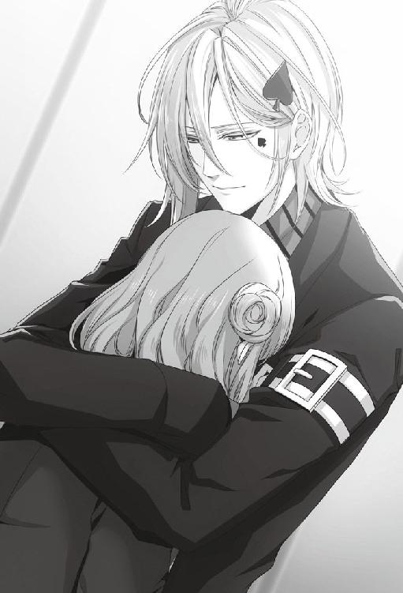
「そのせいか、みんなから妙に邪魔されるようになって......。......すごく焦ってたんだよ。ごめん......。一番不安にさせてたのは僕だね......」
少しでも安心させたくて、優しく髪を梳いた。
「......あのね、僕は君が好きだよ」
自分のことばかりで彼女を不安にさせていた僕を、許してもらえるだろうか。
「冷たくしたこともあったと思うけど、それは全部君が嫌がらせに遭わないように警戒してただけだから......」
「わかってます」と小さな声が返ってくる。きっと、今はわかっていても、急に冷たくされた時は辛かったと思う。ごめんねと謝るように、彼女のこめかみにそっと唇を押し当てた。
「でも、もうそういうのはやめる。あ、また記憶を失ってもいいように毎日好きだって言っておこうか」
彼女の瞳から、透明な涙が零れ落ちた。
「......よしよし。君の泣くところは初めて見たな」
しっかり者で、いつも一人で頑張ってしまう僕の大好きな人。
「これからは、どんなものからも僕が守るからね」
僕の腕の中でだけは、安心して泣けるようになってほしい。
「最初は何から始めようか。思い出話をしようか。僕がどれだけ君を好きか話そうか」
優しく、リズムを取るように彼女の背を撫でる。僕が潰れてしまいそうだった時、記憶のない彼女がそうしてくれたように。
「あー......自分に都合のいいように言っちゃいそうだな。君に疑われたままだったら言ってたかも」
冗談半分に言うと、涙に瞳を濡らしたままくすっと彼女が笑った。
「んー......僕に都合のいい話は二割引くらいで聞いてね。......ええと、何から話そうか。そうだな。君と僕が初めて会った時の話をしようか」
少しは思い出しているのか、腕の中の彼女の眉に少し皺が寄る。
「ははっ。君に盛大に嫌われたって話なんだけどね......」
少しずつ、なくなってしまった思い出を集めて行こう。大丈夫。君が忘れてしまっていても、僕が全部覚えている。
彼女が泣き止んでも、僕は彼女を腕に抱き続けた。
８月29日
一昨日、ＦＣの子を怒らせてから今日が初めてのバイトだった。
店にお客さんとして来る子には、店員として極普通に接したつもりだ。でも、帰りに待ち伏せをしている子たちは違う。女の子たちに甘い顔をするのはもうやめた。
まだ彼女に被害が及ぶほどじゃないにしろ、前回の僕の行動を女の子たちが面白くないと思っているのはわかっている。わかっていても、はっきりさせなくてはならない。
「......お疲れ様。一緒に帰ろうか。ここで待ってるから」
バイト後、事務所で彼女に声を掛けた。まだＦＣの子たちの前に彼女を連れて行くことに抵抗はある。僕はいくら攻撃されても構わないが、女の子たちはどうしても彼女に敵意を向けたがった。だから、彼女には申し訳ないと思っている。でも、これが最初の一歩なのだと思う。
僕の緊張がわかるのか、彼女が心配そうな顔で僕を見つめた。好きな子にこんな顔させているようでは、まだまだだ。
落ち込みそうになった空気を切り替えようとした時、
「ん？ 二人とも、これから帰りか」
「あ、ワカさん。お疲れ様です」
ワカさんは僕と彼女を交互に見てから、
「ここ数日、他の娘らを相手にしていないようだな。貴様もとうとう覚悟を決めたか」
にやりと口角を上げた。見ていないようで、ワカさんはよく見ている。
「覚悟ならとっくに決めてますよ。ただあの子たちは、その......少し過激なので、彼女を巻き込みたくなくて」
我ながら言い訳をしているみたいだと苦笑した。
「......ふん、なるほどな。過激派への対処か」
腕組みをすると、ワカさんは何故か僕の顔を繁々と睨み付けてからまた口を開いた。
「甘やかして要求を聞き入れるわけにはいかないが、拒否すると無関係の人民まで犠牲になる......。誰もが迷う、難しい判断だな」
「......そうですね。とても難しいです」
「だが、貴様の場合は少々過激派を付け上がらせすぎのように思えるぞ」
「え」と声が漏れた。
「もし貴様にとって今の状態が不本意ならば、もっと強く出るべきだろう。要は、貴様らが入り込む隙間などないくらいの絆を築いて見せればいいのだ」
今まで、ワカさんが僕の取る行動について何か言ってくれたことはない。これが初めてだ。初めてなだけに、まさかこんなことを考えていたとは思いもしなかった。
「そして、思い知らせてやれ。何をしても無駄どころか、余計おまえに嫌われるだけだとな」
ビシッと顔の前に指を突きつけられる。その指先から、新しい道が開かれていくような気がした。
「そっか......そういう考え方もあるんですね」
「......ふっ。私の蔵書『恋は戦争』の第三章に書かれている恋敵との戦い方だ。何なら貸してやろう」
冗談ともつかない口調で、ワカさんはまたニヒルな笑みを浮かべた。
「......ありがとうございます。借りてみようかな。っていうか、ワカさん。そんな風に思ってたなら、言ってくれればよかったじゃないですか」
「貴様らに覚悟ができていない内にそんなことをやれと言っても不可能だろう」
やっぱり、ワカさんはよく見ている。さっき僕の顔を凝視していたのも、覚悟のほどを確認していたに違いない。
「勝利のためには、冷静な思考とチャンスと覚悟が必要だ。それが今だと思ったから言ったまでだ。わかったら、そいつの手でも握って堂々と帰れ！ いいな！」
「イエス、サー！」
力強い後押しに、笑いながら敬礼をした。
店の外に出ると、ＦＣの女の子たちがわっと僕の周りに集まった。しっかりと僕が彼女の手を握っているのを見つけると、一瞬哀しそうな顔をしてから、すぐに怒りを露わにした。
「何で!? 今日もカノジョと帰るの!?」
「こないだは具合悪いからって言ってたじゃない。まだ治んないわけ!?」
むき出しの敵意に、
「悪いけど、僕の彼女はこの子だから。一緒に帰るのくらい自由にさせてくれないかな」
少し強めに言い返した。途端、女の子たちが逆上するのがわかった。
「はぁ!? 何それぇ!?」
「何で!? あたしたち何か悪いことした!?」
彼女に向けられる不満、僕に向けられる不満、どちらも受け止める覚悟はちゃんとある。
「別に、いつもと変わらないよ。でも僕はこの子と帰りたいだけ」
はっきり言葉にしても、女の子たちは中々納得してはくれなかった。
「この子に何か言われたの!?」
「そうだ、そうだよね、イッキ！ あたしたちのことで何か悪いこと言われたんだよね!?」
「......違うよ。彼女はそんなこと言わない。これは僕の意思だよ」
「そんなはずない......っ」
ヒステリックに叫ぶ子もいたが、僕は決して彼女の手を離さなかった。
彼女をマンションまで送っていくと、上がっていってほしいと言われ、部屋に上がった。
そんな簡単に部屋に上げていいのかと下心を出すところだが、真剣な彼女の顔を見て何か話があるのだとわかった。
部屋に上がるや否や、彼女は堰を切ったように口を開いた。
「......僕と別れた子がみんな僕のファンになってあの集団に混ざってる？」
うんうん、と彼女はそれが大問題みたいに何度も頷いた。
ＦＣの子の顔を思い浮かべてみると、確かにそのうちの数人は元僕のカノジョだった。
「あー、そうだね。でも、今まで付き合った子は大体前から僕のこと待っててくれた子たちだし」
「え......？」
「っていうか、君もでしょ。僕に興味なさそうだったのに、五月頃かな、みんなに混ざってたんだよ」
やはり覚えていないのか、彼女は信じられないとばかりに目を見開いた。
「でもお愛想程度に笑ってるだけで大歓迎してくれるわけでもないし、何事かと思ったね。で、僕はそれを見てますます君に興味を持ったわけ。......昨日話さなかったっけ？」
彼女は力なく首を横に振る。
「ふうん......。君があそこにいた理由はまだ思い出してないの？ 僕もずっと疑問だったんだけど、結局教えてくれなかったんだよね」
前に聞いた時は、彼女は笑って誤魔化すだけで教えてはくれなかった。しつこく聞くほどのことでもないと流していたけれど、そこに何か問題があったのかもしれない。
彼女はしばらく考えるように首を捻ってから、
「......ＦＣ活動に興味があったから......？」
とさらに首を傾げた。
「あー......それはあるかもね」
彼女は自分の目で見ないと信じないようなところがあるから、純粋に興味だと言われれば納得できなくはない。
「まあ、僕みたいな一般人のＦＣって珍しいし。何してるのか興味があったのかもね」
軽く相づちを打ってみたものの、どうもしっくり来ない。本当にそれだけだろうか。
「にしたって、そんな理由なら僕が前に聞いた時答えてくれたってよかったのに。僕のことは別に好きじゃないって最初から堂々と言ってたんだしさ。『ＦＣに入ったのはただの興味』って言われても、もうショックでも何でもないよ」
「そう、ですよね......」
彼女も納得がいかないらしく、難しい顔をしていた。
「......何だか、話してたら本気で不思議になってきたな」
ＦＣに入った理由を秘密にする理由。意味のないことをする子じゃないし、きっと何か理由があったはずなのに、それがわからない。
「君は、誰のために口を噤んでたんだろう。君自身？ あの子たちの誰か？ ......それとも僕？」
もし、誰かのために黙っているのだとしたら、彼女以外の誰かのためだろう。彼女はそういう子だ。ＦＣの中に特別親しくしていたような子もいなかったと思うから、消去法で考えると、彼女が庇っていたのは僕ということになる。しかし......。
「あのね、もし君がＦＣの黒い実態に気付いて興味を持ったんだとしても、僕に隠す必要はないはずなんだ。だって、僕はあの子たちを初めから警戒してたし、君にもそう言ってあったんだから。だから君が何か隠してたなら......」
あの子たちが僕のカノジョに嫌がらせをしていたことは知っていた。でも、ＦＣに入会した彼女が知ったことが、それだけだという確証はない。むしろ、それ以外の何かを知ってしまったのだとしたらどうだろう。
「......もしかしたらあのＦＣの活動は、僕の想像どおりじゃないのかも......」
「............」
彼女は思い詰めたような顔で黙り込んでから、
「......リカさんとはいつからお付き合いしてるんですか？」
絞り出すような声で言った。
「リカ？ リカとは中学でクラスが一緒になってね、その頃から好意を持ってくれてたみたいだね。でも一度も近付いては来なかった。告白されたこともないから、『彼女』にしたこともない」
そのことを不思議に思ったこともあるが、深く気にしてはいなかった。だからというわけではないけれど、リカのことは信じているし、友達だと思っている。
「リカが女の子たちをまとめ始めた頃、最初は僕も感謝してたんだよ。ずいぶん静かになったからね。ただ、あの団体ができたせいで妙な団結が生まれちゃったのも事実なんだよね」
四六時中、僕の行動を見張るようになってしまったことには困惑した。それでも、ＦＣがない頃よりはましだと思っていた。
「ま、今でもリカには感謝してるけど。あの子たちが暴走する時はたいていリカが抑えてくれるし」
「............」
ふと気が付くと、彼女は辛そうな顔で俯いていた。
「......え、何？ リカと何かあったの？」
言いたいけど言えない。そんな顔に嫌な予感がした。
「......もしかして、嫌がらせにはリカも荷担してる？」
さっと目を逸らされる。その行動が言葉より雄弁に答えを語っていた。
ＦＣの代表であるリカが嫌がらせに荷担していたとすると、女の子のヤキモチなんて可愛いレベルの話ではすまない。すぐに、合宿での肝試しの一件を思い出した。大がかりな嫌がらせ。
「......ちょっと待って」
頭の中で、バラバラだったピースが徐々に繋がっていく。きっと、この完成図はあまり美しいものではない。
「そういえば、僕が女の子と長続きしなくなったのはあの団体ができた頃からだったかもしれない」
一度考え始めると、おかしな点が浮き彫りになっていく。
「もしかして、表面上静かになっただけで、水面下では余計嫌がらせが激しくなってた......？ いや、でも、それなら僕と別れた子たちがグループに戻っていくわけないよね......」
過去に付き合った子たちの顔を思い浮かべていくうちに、ひとつの法則性に気が付いた。
「あれ......？ 嫌がらせをされてるって僕に相談してくれてた子は、グループに入ってなかったかも......？」
仮説がひとつ成り立つと、もつれていた糸がどんどん解けていく。
「じゃあ逆に言えば、グループに戻っていった子たちは嫌がらせを受けてなかった......？」
ＦＣに入っていれば嫌がらせは受けない。入っていない子が僕と付き合うと嫌がらせに合う。
だが何故、ＦＣに入っていれば嫌がらせを受けないのだろう。僕のカノジョになることに、ＦＣへの入会が条件だなど僕は言ったことはない。
難しい顔をしている彼女と視線を合わせてはっとした。彼女はＦＣに入っていたにもかかわらず、嫌がらせを受けそうになっていた。
「......君もあそこに参加してたよね。そういえば、君と付き合い始めた当初は別に邪魔されてなかったかも」
確か、そうだ。六月、七月は今のようにあからさまな妨害は受けていなかった。妨害行為が激しくなり始めたのは、八月以降──。
「邪魔されるようになったのは......君が記憶を失った頃からだ」
「え......」
記憶を失うことで、嫌がらせをされない条件から彼女は外れてしまった。そう考えると全ての辻褄が合う。
「──ねえ、君は何を忘れたの」
彼女は僕を通り越して何か別のものを見ているようだった。そのまま様子を窺っていると、目眩を起こしたみたいに額に手を当てる。
以前も、彼女のこんな様子を見たことがあった。
「......何を思いだしたの」
彼女の目眩の正体が、なくした記憶を取り戻した時の副作用だということは彼女に聞いて知っていた。
「あ......」
「また隠すの。君の秘密は打ち明けてくれたのに、僕の秘密は教えてくれないの」
彼女は迷うように視線を逸らす。
「何が起こってたんだとしても、僕はそれを知りたい。知って、どうするか決めたい。僕にはその権利があるはずだ。......そうでしょ？」
逃げる視線を追いかけて、しっかりと目を覗き込んだ。それでも彼女は迷うように瞳を揺らしている。
彼女が一人で抱える必要などどこにもない。それは僕が背負うべきもののはずだ。だが、そう言ってしまったら、優しい彼女は僕をまた庇おうとするだろう。
だから、僕はずるい言い方を選ぶ。
「......ねえ。君の思い出したことを、教えて。もう僕に秘密は作らないで」
「............」
「......ねえ、教えて」
「............私が......私が聞いたことは............」
随分迷った後、辛そうな顔をして彼女は語り始めた。
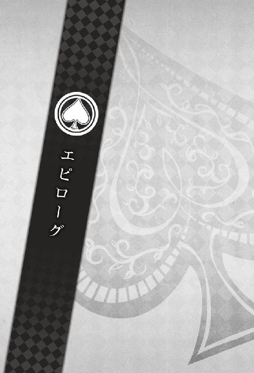
８月30日
今日も、バイトを終えてから、彼女の手を引いて店の前に回った。
ＦＣの子たちは僕が彼女を連れているのを見て、すかさず目くじらを立てようとしたが、何か言われるより先に、
「ＦＣには、僕の独占禁止法があるらしいね」
低く言い放った。
「えっ......」
一瞬、何を言われたのかわからないような素振りをしてから、あきらかに女の子たちは動揺し始めた。
この子たちを責めたいわけではない。これも全て、ＦＣという組織を作らせてしまった僕の責任だ。
だから、なるべく感情を表に出さないように声を出す。
「僕と付き合う子は、毎日日報を出して三ヶ月できちんと別れること。そういう決まりがあるんでしょ？」
「......そんな......そんなことしてないよぉ......」
「そうだよ......何言ってんのイッキ......」
一人が否定すると、それに便乗するようにして全員が縋るような目で僕に訴えてくる。
ただ一人、リカだけが何も言い訳をしようとはしなかった。
「みんな、ただイッキが好きで......」
これ以上聞いていたくなくて、脇の壁を思い切り拳で殴りつけた。パラパラとコンクリートの破片が地面に落ちていく。
女の子たちは一様に青ざめ、口を噤んだ。
「それが事実かどうかはもうどうでもいい。僕はこの子とこれからも付き合う。明日で三ヶ月だけど、関係ない」
腕の中に守るように、彼女の肩を引き寄せる。
「この子を傷付けるようなことがあったら、それが誰であっても絶対に許さない」
女の子たちは怯えた顔のまま、僕の言うことを黙って聞いていた。
「絶対に、だ」
『誰であろうと』という対象の中には、君たちも含まれているのだとわからせるように、同じ言葉を繰り返した。
「──言いたいのはそれだけだよ」
「そんなぁ......あたしたち、ほんとにただイッキが好きで......」
「別にあたしたち、彼女を傷付けたりなんてそんなことしないよ......」
「......っていうかイッキ......もうあたしたちとは会ってくれないの......？」
本当に哀しそうに涙ぐまれると、心が痛い。この子たちもある意味、僕の目の被害者だ。それをわかっていてもなお、僕は彼女を守ろうと決めた。どんな犠牲を払おうとも。
「イッキ......もう会えないの......？」
みんなが涙声になっている中、
「......イッキ様。身勝手な振る舞い、申し訳ありませんでした」
リカが一歩前に出た。気丈に振る舞ってはいるけれど、その声は微かに震えている。
「私たちは解散致しますわ。もうお二人の邪魔をするようなことは致しません」
解散という言葉を聞いて、何人かの女の子が本格的に泣き出した。リカはそちらを気にする素振りを見せたけれど撤回はせず、僕に向かって深く頭を下げた。
「ただ、これだけはご理解ください。私たちは、本当にただイッキ様をお慕い申し上げて......」
「リカ。もういい」
気持ちを落ち着けたくて、深く吐息をつく。
「......今後誰かと会う時は、彼女に許可を取る。彼女がダメって言ったらダメ。彼女との約束は最優先。邪魔したら許さない」
何を言われているのかと、女の子たちは目を丸くしている。
「......その条件でなら、会うよ。僕を好きになってくれたことはありがたいと思ってる」
「ほんとぉ!?」
「イッキぃ......！」
「ただし、彼女が嫌がったら本当に会わないし、彼女に何かしたらその時点で縁を切るから」
女の子たちが舞い上がり過ぎないように、しっかり釘を差さなければならない。みんなの気持ちを手玉に取るようなことをしたくはなかったが、彼女を守るためなら僕は何だってやる。
「それでも、充分だよ......！」
「......ありがとうございます」
リカがまた、深々と頭を下げた。
「............許したわけじゃないよ」
「わかっておりますわ。でも、私たちを気遣ってくださる......イッキ様のその優しさに、私たちは甘えすぎたんですね」
友達だと思っていた。でもそれは、僕が勝手に押しつけた価値観で、リカからしたら、一度だって僕が友達だったことなどなかったのかもしれない。
「......みなさん、帰りましょう」
「......はい、リカさん」
リカに引き連れられるように、女の子たちは帰っていった。その背中は寂しげで、同情を誘った。
全員の姿が見えなくなってから、ようやく彼女に視線を移す。
「......ごめん。絶対会わないって言ってほしかった？ でも、店長が言ってたでしょ、『手を出しても無駄だし、逆に余計嫌われると思わせればいい』って」
女の子たちと対峙している間、彼女はずっと哀しそうな顔をしていた。たぶん、泣いている女の子たちに同情していたのだと思う。今まで、自分が何をされてきたのかなんて、きっと忘れて。
「はは、要するに飴とムチ、って奴。ちょっと試してみたんだけど、どうだったかな」
笑いかけると、彼女もようやく笑顔を見せてくれた。
「......守ってみせるから」
誓うように、彼女を強くと抱き寄せる。
「脅しでも戦術でも愛の力でも何でもいいよ。とにかく、全力で守ってみせるから」
僕の行動によって傷ついた子はたくさんいたと思う。でも、誰も傷つかない世界など、あるはずがない。もう、綺麗事を夢見ることはしない。誰よりも、何よりも大切にしたい子を見つけたから。
「......それに、少し申し訳ないのもあって。彼女たちもこの目の被害者だと思うから......」
彼女もそれはわかってくれているのか、小さく頷いた。
「じゃあ、帰ろうか。堂々と正面から」
ずっと壁に押し当てていた手を離すと、タイルに少しヒビが入っているのが見えた。
「壁、ちょっと壊れてるなぁ......。ワカさんに見つかったら怒られるだろうなあ......」
「見てたぞ」
「！」
ぎょっと振り返ると、ワカさんが仁王立ちでこちらを睨み付けていた。
「あー......その......修理代は、給料から引いておいてください」
「もちろんそのつもりだ」
てっきり雷を落とされるかと思ったのに、ワカさんはあっさり言うと口角を引き上げた。
「しかし、なかなか見事な戦術だった。見応えのある勝負だったぞ」
やっぱり、ワカさんはよく見ている。
「......ははっ。ありがとうございます」
僕は間違っていないと言ってくれる人が、ここにもいる。思ったよりもまだ、僕の周りにはこの目を関係なしに僕と接してくれる人がいるようだ。
この目からも逃げずに、ちゃんと向き合っていこう。素直に、そう思えた。
８月31日
「──今日で、八月も終わりだね」
暮れかけている日差しの中、彼女と手を繋いでいつもの高架下を歩く。
こんなに穏やかな気持ちで八月最後の日を迎えられるとは思っていなかったから、ただ歩いてるだけなのに酷く幸せだった。
「でも、そんなこと関係ないって思っていいよね？」
ひょいと顔を覗き込むと、彼女は慌てて顔を逸らして先を歩いて行ってしまう。手を繋いでるから、僕の方が引っ張られる形になる。
彼女なりの照れ隠しだということはわかっている。だから、こっちを向いてくれなくても気にしないで、
「......関係あるって言われても困る。君がいないと僕は生きてくのが辛いし、離すつもりなんか全くない。嫌だって言っても連れてく」
彼女の背中に話しかけた。
「いいよね？ 僕のこと好きでしょう？ ......違うとは言わせないよ」
「............っ」
一歩大きく前に出て、正面から彼女の顔を見下ろす。
「うなずきなさい」
「............ハイ」
「......うん、よし」
恥ずかしそうな顔のまま、彼女は観念したように頷いた。数歩、無言で歩いてから、堪えきれなくて僕は笑い出した。
「人に命令なんかしたの初めてだよ。昨日なんか初めて女の子を脅したし。初めてなことばっかりだ」
きっと彼女と出会わなければ知らずにいた。
「それから......今度は初めて女の子と一緒に暮らしてみようと思うけど、いいよね？」
ほんのりと赤かっただけの彼女の頬が、途端に赤く染まっていく。
「............あの」
「だからね、嫌って言っても連れてくから。ムダに照れて見せてもダメ」
「......っ」
「あ、でもね、一緒に住むとは言ってもいきなりすごいこと強制したりはしないから安心して。ちゃんと別に寝るよ。とりあえずこれから駅の方行く？ 下に敷く布団でも買ってこようか」
「......あ、はい」
彼女は僕から顔を逸らすと、あきらかにほっと息をついた。隠れてるようだったけれど、バレバレだ。
「......何、あからさまにほっとした顔してるの」
ぎくり、と彼女がぎこちなく僕の顔を見上げる。
「悪いけどね、この僕が本気で口説くって言ってるんだよ。甘く見ないでほしいな」
わざと意地悪気に笑って見せた。
「強制はしないけどね、すぐにその気にさせてみせるから」
できやしないと高をくくっているのか、彼女は涼しい顔で受け流す。ついさっき見せた動揺はどこに行ってしまったのか、すっかり余裕の表情だ。
「そうだな......今度はお試し同棲しようか。えっとね、一ヶ月くらいでどう？ その間に、君の方から一緒に寝たいって言わせてみせるよ」
彼女は驚いたように顔を上げ、
「......そんなこと、言わないと思います」
もごもごと小さい声で抗議する。
「あ、そう？ 自信あるよ、悪いけど。一ヶ月も必要ないと思う」
不満そうな彼女が可愛くて、笑いそうになる。
「......毎晩、寝る前に耳元で囁くから。君が好きだよ、こっちおいで、って。さぁ、どのくらい我慢できるかな？」
「............」
しばらく俯いて歩いていたかと思うと、
「......あの、やっぱり私......」
彼女が勢いよく顔を上げた。その顔は不安でいっぱいで、焦っているように見える。
「あれ？ 君は拒む自信ないの？ それ以外のことはしないって約束するよ？」
わざと煽るように彼女の顔をにやにやと見つめた。負けず嫌いの彼女のことだから、こんなに挑発されて黙っていられるはずがない。
「誘われたら負けちゃいそうなんだ？ ふうん？」
「............っ。ずるいです......！」
「......ははっ」
思ったとおりの反応に、大きく声を立てて笑った。
「ねえ、もうひとつ初めてしてみたいことがあるんだ。今やろう。一緒に来て！」
「あ......！」
彼女の手を引いて、僕は走り出した。
彼女を連れて来たのは、いつも使っている地元の駅だ。夕方の帰宅ラッシュの時間だから、いつも以上に人通りが多い。
「駅前......ですか？」
「ん。こういうところでね、一度やってみたかったんだ」
誰が見ていようと構わずに、サングラスを外した。彼女がそれに驚いている隙に腰を引き寄せ、キスをする。
「............！ イッキ、さん......！」
僕に抱き締められたまま、彼女が慌てたように辺りを見渡す。
僕たちの周りを歩いていた人たちは足を止め、ぎょっとしたように僕たちを見ていた。
「......目立ってるね」
「ん......！」
人に見られているのなんておかまいなしに、もう一度キスをした。
「......もう目の力なんかに負けない。誰の目も気にしない。君を傷付けるようなこともさせない」
真っ赤な顔をしている彼女の頬を、両手でそっと包み込む。
「覚悟、決めたよ」
どんな困難が待ち受けていようと、僕はこの先もずっと彼女の隣にいる。
「......君も、覚悟決めてね。絶対に離さないから」
「............っ」
彼女は一瞬、目を泳がせてから、
「......イッキさんは、本当にずるいです！」
恥ずかしそうに叫んだ。
──君の方がずるいでしょ？ そんな可愛い顔して。
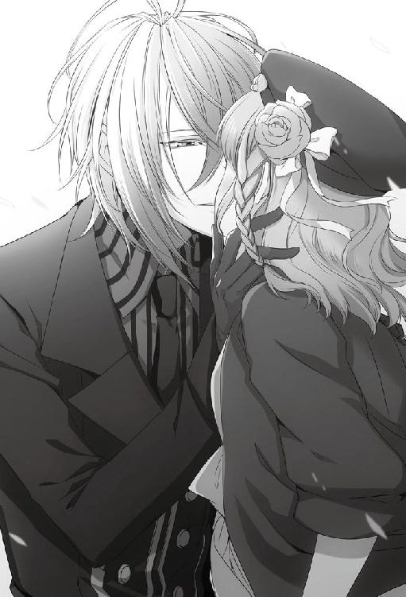
僕は笑いながら、鮮やかに赤く染まった空の下でまた、彼女にキスをした。
〈終〉
著者：狐塚冬里
本屋さんでさりげなく本を整えている人を見ると、仲間だと密かに思っています。
【ＨＰ】http://kotonomi.noor.jp/kotonomi/
監修：東中ルミエ
Corneille Mythiqueで活動するクリエイター。
【ＨＰ】http://corneille.xxxxxxxx.jp/
カバーイラスト：花邑まい
デザインファクトリー所属のイラストレーター。代表作は「AMNESIA」「AMNESIA LATER」「AMNESIA CROWD」「デザート・キングダム」（すべてオトメイト）
挿絵：Meij
現在フリーのイラストレーターとして活動しております。
【ＨＰ】http://meij00.web.fc2.com/
AMNESIA
― IKKI ver. ―
電子版発行 ２０１４年８月１日
著 者 狐塚 冬里
監 修 東中 ルミエ
発行者 辻 信幸
発行・発売 株式会社一二三書房
〒１０２─００７２
東京都千代田区飯田橋２─14─２ 雄邦ビル
電 話 ０３─３２６５─１８８１
カバーイラスト 花邑まい
挿絵 Meij
©HIFUMI SHOBO/OFFICE SIX
©2011-2013 IDEA FACTORY/DESIGN FACTORY
本書の無断複製（コピー）は、著作権上の例外を除き、禁じられています。
●本書は『AMNESIA IKKI ver.』（２０１３年11月２日 初版第１刷）に基づいて制作されました。